Government of Tamil Nadu
First Edition - 2019
Revised Edition - 2020, 2022, 2023 (Published under New Syllabus)
NOT FOR SALE
Content Creation: State Council of Educational Research and Training © SCERT 2019
Printing & Publishing: Tamil Nadu Textbook and Educational Services Corporation
HOW TO USE THE BOOK
Scope of Botany
Higher Studies and Career Opportunities
TNMGRMU
Batchler of science in Agriculture,
Batchler of science in Horticulture
Batchler of science in Forestry,
Batchler of science in Sericulture
Batchler of Technology in Biotechnology
Batchler of Technology in Agricultural Engineering
Batchler of Technology in Horticulture
Batchler of Technology in Food process Engineering
Batchler of Technology in Energy and -Environmental Engineering
Batchler of Technology in Bioinformatics
Batchler of science in Agribusiness Management
Batchler of Technology in Agricultural IT
Master of Technology in Environmental Engineering
Master of Science in Agriculture
Master of Science in Agricultural Extension
Master of Science in Agronomy
Master of Science in Soil Science
Master of Science in Agricultural Biotechnology
Master of Science in Agricultural Marketing
Master of Science in Agricultural Microbiology
Master of Technology in Agricultural Engineering
Master of Agricultural Engineering
Master of Agriculture in Entomology
Master of Agriculture in Horticulture
Master of Agriculture in Animal Sciences
Master of Agriculture in Entomology
Master of Agriculture in Plant Pathology
Master of Agriculture in Agricultural Economics and Rural Sociology
Master of Agriculture and Rural Development
MEDICAL
MBBS
Allied Health Sciences
Sc.(N)- Bachelor of Science in Nursing
B.P.T.- Bachelor of Physiotherapy
M.P.T. - Master of Physiotherapy
B.O.T. - Bachelor of Occupational Therapy
M.O.T. - Master of Occupational Therapy
Batchler of science in Accident & Emergency Care Technology
Batchler of science in Audiology & speech Language Pathology
Batchler of science in Cardiac Technology
Batchler of science in Cardiopulmonary Perfusion Care Technology
Batchler of science in Critical Care Technology
Batchler of science in Dialysis Technology
Batchler of science in Neuro Electrophysiology
Batchler of science in Medical Sociology
Batchler of science in Nuclear Medicine Technology
Batchler of science in Operation Theatre & Anaesthesia Technology
Batchler of science in Physician Assistant
Batchler of science in Radiology Imaging Technology
Batchler of science in Radiotherapy Technology
Batchler of science in Fitness and Lifestyle Modifications
Batchler of science in Clinical Nutrition
Diploma Course
Accident & Emergency Care Technology
Critical Care Technology
Health Care Aide (as per 245th GC)
Operation Theatre & Anaesthesia Technology
Ophthalmic Nursing Assistant
Scope Support Technology
Medical Record Science
Optometry Technology
Radiology & Imaging Technology
Medical Lab Technology
Cardiac Non-Invasive Technology
Dialysis Technology
AIIMS
Undergraduate Courses (UG)
BBS Batchler of science Nursing (post Certificate)
Batchler of science (Hons.) Nursing Paramedical Courses (PM)
Batchler of science (Hons.) Ophthalmic Techniques
Batchler of science (Hons.) Medical Technology
Postgraduate Courses (PG)
Doctor of Medicine/ Master of Science / Master of Dental Surgery / Master of Chirurgical (5-year course)
Master of science in. / M. Biotechnology
Integrated courses
Mode of selection: Entrance conducted by concern institution or NEET
Master of science in Life sciences- 5-year Integrated course
Indian institute of Science, Bengaluru Website: http://www.iisc.ac.in/
National Institute of Science Education and Research (NISER), Bhubaneswar, Kolkata, Pune, Mohali, Bhopal, Thiruvananthapuram, Tirupati and Berhampur Website: http://www.niser.ac.in
Batchler of science, Batchler of education 5-year Integrated course
Regional Institute of Education Ajmer, Bhopal, Bhubaneswar, Mysuru and Shillong Website: www.riemysore.ac.in
SCIENCE: Courses in Arts & Science Colleges and Universities
Batchler of science in Botany
Batchler of science in Plant Biology & Plant Biotechnology
Batchler of science in Biochemisty
Batchler of science in Bio-computing
Batchler of science in Plant Pathology
Master of science Botany
Master of science in Biotechnology
Master of science in Bio-chemistry
Master of science in Bioinformatics
Master of science in Immunology and Microbiology
Master of science in Applied Medical Biotechnology & clinical Research
Master of science in Genetic Engineering & Plant Breeding
Master of science in Applied Plant Science
Master of science in Plant Biology & Plant Biotechnology
Master of science in Plant molecular Biology
Master of science in Mycology & Plant pathology
Master of science in Plant science
ANNA UNIVERSITY
Bachelor of Engineering / BioMedical Engineering
Batchler of Technology in Industrial Biotechnology
Batchler of Technology in Food technology
Batchler of Technology in Biotechnology
Botany Career Opportunities and Job Prospects
The knowledge of plant sciences is essential for development and management of forests, parks, waste lands, sea wealth etc.
Few of the industries which one can work with are:
ϖ Chemical Industry
ϖ Food Companies
ϖ Arboretum
ϖ Forest Services
ϖ Biotechnology Firms
ϖ Oil Industry
ϖ Land Management Agencies
ϖ Seed And Nursery Companies
ϖ Plant Health Inspection Services
ϖ Biological Supply Houses
ϖ Plant Resources Laboratory
ϖ Educational Institutions
ϖ National Park Service
ϖ Departments of Conservation and Land Management
ϖ Public Health Service
ϖ Department of Agriculture ϖ Forest Service
ϖ Departments of Environmental Protection
ϖ Departments of Agriculture and Water
ϖ Nature Conservancy
ϖ Environmental Protection Agency
ϖ Medical Plant Resources Laboratory
ϖ Several foreign countries provide platforms for Msc in Botany graduates to build up a good career in the field of Botany. Several undertakings functioning abroad demand the service of Msc in Botany graduates.
Research Institutes involved in Plant Science
a. Affiliated to Ministry of Environment and Forests
ϖ Centre for Environment Education, Ahmedabad
ϖ Forest Survey of India, DehraDun
ϖ Indian Institute of Forest Management, Bhopal ϖ Institute of Forest Genetics and Tree Breeding, Jorhat
b. Affiliated to Indian Council of Agricultural Research
ϖ Central Agricultural Research Institute, Port Blair
ϖ Central Research Institute for Jute and Allied fibres, Barrackpore
ϖ Directorate of Oilseeds Research, Hyderabad
ϖ Indian Grassland and Fodder Research Institute, Jhansi
ϖ Jute Technological Research Laboratories, Calcutta
ϖ National Centre for Mushroom Research and Training, Solan
c. Affiliated to Council of Scientific c and Industrial Research
d. Affiliated to Indian Council of Medical Research
ϖ Central Council for Research in Unani Medicine, Delhi
ϖ Central Council for Research in Ayurveda and Sidda, Delhi
e. Research Academics
ϖ Indian Academy of Science, Bangalore
ϖ Indian Botanical Society, Delhi
ϖ Indian Mycological Society, Delhi
ϖ Indian National Science Academy, Delhi
ϖ Indian Society for Plantation Crops, Kasargod
Research Institutions in various areas of Botany
Name of the Institution |
Research Areas |
Website |
International Centre for Genetic Engineering and Biotechnology (ICGEB), New Delhi |
Mammalian Biology; Plant Biology; Synthetic Biology and Biofuels. |
www.icgen.org |
National Institute of Virology, Pune |
Epidemiology, Basic virology; Diagnostics. |
www.niv.co.in |
Centre for DNA Fingerprinting and Diagnostics, Hyderabad |
Computational Biology, Bioinformatics; Protein structure, Dynamic and Interactions Epigenetic |
www.cdfd.org.in |
Institute of Life Sciences, Bhubaneswar |
Infectious disease; Immune biology; Cancer biology; Nanotechnology |
www.ils.res.in |
Centre for Cellular and Molecular Biology, Hyderabad. |
Genetics & evolution, Genomics; Cell Biology & Development |
www.ccmb.res.in |
Central food Technological Research Institute, Mysore |
Food Science and Technology |
www.cftri.com |
Central Institute of medicinal and Aromatic Plants, Lucknow |
Agronomy & soil sciences; Biotechnology, Crop protection; Genetics and plant breeding; |
www.cimap.res.in |
National Botanical Research Institute, Lucknow. |
Genetics and molecular biology; Plant microbe interaction & Pharmacognosy |
www.nbri.res.in |
Institute of Genomics and Integrative Biology |
Genomics and Molecular Medicine, Chemical and Systems Biology. |
www.igib.res.in |
Bose Institute, Kolkata |
Molecular and cellular biology |
www.boseinst.ernet.in |
National Centre for Biological Sciences, Bengaluru |
Biochemistry, Biophysics, Bioinformatics, Genetics and development; Cellular organization & signalling neurobiology etc. |
www.ncbs.res.in |
Birbal Sahni Institute of Palaeobotany (BSIP) Lucknow. |
Palynology in fossil fuel exploration; Dendrochronology; Ethnobotany; Micropaleontology; Carbon 14Dating |
www.bsip.res.in |
School of Medical Science and Technology, Indian Institute of Technology, Kharagpur, West Bengal |
Tissue Engineering; Biomaterials; Herbal medicine & Bio-Engineering |
www.smstweb.iitkgp.ernet.in |
Institute of Wood Science and Technology, Bengaluru. |
Tree Improvement and Genetics; Chemistry of Forest Products. |
iwst.icfre.gov.in |
Centre for Ecological Sciences, Indian Institute of Science. Bengaluru |
Behaviour Ecology; Evolution; Climate Change & Conservation |
www.ces.iisc.ernet.in |
Botanical Survey of India (BSI), Kolkata |
To Survey, research and conservation of plant resources, flora and endangered species. |
www.bsi.gov.in |
Indian Agricultural Research Institute (IARI) New Delhi |
Genetics & Plant Breeding; Plant Pathology; Microbiology; Post Harvest Technology |
www.iari.res.in |
Indian Institute of Horticultural Research, Bengaluru |
Horticultural Research; Biotechnology; Entomology; Pathology |
www.iihr.res.in |
Agharkar Research Institute, Pune |
Biodiversity & Palaeobiology, Bioenergy, Bioprospecting Nanobio science |
www.aripune.org |
National Bureau of Plant Genetic Resources (NBPGR) New Delhi |
Plant genetic resources management and use. |
www.nbpgr.ernet.in |
Institute of Forest Genetics and Tree Breeding, Coimbatore. |
Tree improvement; Bio-prospecting of Forest Natural Resources |
www.ifgtb.icfre.gov.in |
Central Soil Salinity Research Institute, Karnal, Haryana |
Reclamation and Management of Salt affected soils. Bio-remediation of waste waters. Carbon Sequestration |
www.cssri.nic.in |
Central Institute of Post Harvest Engineering & Technology, Ludhiana |
Rapid Evaluation of Food Quality and Safety; Packaging and Storage of Agricultural Produce and Products. |
www.ciphet.in |
Central Plantation crops Research Institute, Kerala |
Crop improvement; Production; Protection; Plant physiology and Biochemistry. |
www.cpcri.gov.in |
Indian Institute of Crop Processing Technology, Thanjavur. |
Agricultural Process Engineering Renewable energy for food processing. |
www.iicpt.edu.in |
Central Tuber Crops Research Institute, Thiruvananthapuram. |
Development of Agro techniques for tuber crops |
www.ctcri.org |
National Centre for Integrated Pest Management (ICAR) New Delhi |
Pest Management |
www.ncipm.org.in |
Indian Institute of Spices Research, Kozhikode. |
Collection, conservation, evaluation and cataloguing of germplasm |
www.spices.res.in |
Central Institute for Cotton Research, Nagpur, (Regional station: Coimbatore & Sirsa) |
Crop improvement, Crop Production and Crop Protection. |
www.cicr.org.in |
Central Institute for Research on Cotton Technology, (CIRCOT) Mumbai |
Improvement in Ginning of Cotton; Improvement and quality evaluation of fibres and production of value-added products |
www.circot.res.in |
Directorate of Cashew nut & Cocoa, Agri, Kerala |
Cocoa production and processing |
www.dccd.gov.in |
National Research Centre on Plant Biotechnology, New Delhi |
Genetic engineering for biotic resistance |
www.nrcpb.org |
Indian Institute of Soil Sciences (IISS), Bhopal |
Study of organic and inorganic nutrient sources affect soil biological activity |
www.iiss.nic.in |
National Institute of Plant Genome Research (NIPGR), New Delhi |
Structural and Functional Genomics in Plants; Computational biology; Genome analysis and molecular mapping |
www.nipgr.res.in |
Sugarcane Breeding Institute, ICAR, Coimbatore |
Breeding of superior sugarcane varieties/ genotypes; |
www.sugarcane.res.in |
National Centre for Agricultural Economics and Policy Research (NCAP), New Delhi |
Agricultural technology policy |
www.ncap.res.in |
National Institute of Abiotic Stress Management., Pune |
Basic and strategic research on management of abiotic stresses of crop plants. |
www.niam.res.in |
Central Research Institute for Dryland Agriculture, Hyderabad |
Dryland, Agrometeorology and Crop sciences |
crida.in |
Central Research Institute for Jute & Allied Fibres, Kolkata, West Bengal |
Crop improvement, Crop production, Crop protection, Agricultural research. |
www.crijaf.org.in |
Indian Institute of Pulses Research (IIPR), Kanpur |
Genetics & Plant Breeding and Seed Science |
www.iipr.res.in |
National Research Centre for Groundnut (NRCG) Junagarh, Gujarat |
Productivity and quality of groundnut; repository of groundnut germplasm and information on groundnut researches |
www.nrcg.res.in |
Indian Institutes of Science Education and Research (IISER) - Berhampur, Bhopal, Kolkata, Mohali, Pune, Thiruvananthapuram, and Tirupati |
Microbial Ecology; Marine Molecular Ecology; Marine Biology. |
www.iiserkol.ac.in www.issertvm.ac.in |
Contents: Botany
UNIT VI: Reproduction in Plants |
|
Page number |
|
Chapter |
|
Month - June |
|
UNIT VII: Genetics |
|
|
|
Chapter 2 |
|
Month - July |
|
Chapter 3 |
|
Month - August |
|
UNIT VIII: Biotechnology |
|
|
|
Chapter |
|
Month - August |
|
Chapter |
|
Month - September |
|
UNIT IX: Plant Ecology |
|
|
|
Chapter 6 |
|
Month - October |
|
Chapter 7 |
|
Month - October |
|
Chapter |
|
Month - November |
|
UNIT ten: Economic Botany |
|
|
|
Chapter |
|
Month - November |
|
Chapter 10 |
|
Month - December |
|
Appendix |
|
|
|
|
References |
|
|
|
English – Tamil Terminology |
|
|
|
Competitive Examination Questions |
|
|
|
Botany Practicals |
|
|
HIGHER SECONDARY SECOND YEAR
The learner will be able to
1 point 1 Asexual reproduction
1 point 2 Vegetative reproduction
1 point 3 Sexual Reproduction
1 point 4 Pre-fertilization structure and events
1 point 5 Fertilization
1 point 6 Post fertilization structure and events
1 point 7 Apomixis
1 point 8 Polyembryony
1 point 9 Parthenocarpy

One of the essential features of all living things on the earth is reproduction. Reproduction is a vital process for the existence of a species and it also brings suitable changes through variation in the offsprings for their survival on earth. Plant reproduction is important not only for its own survival but also for the continuation and existence of all other organisms since the latter directly or indirectly depend on plants. Reproduction also plays an important role in evolution.
In this unit let us learn in detail about reproduction in plants.
Box Item: Panchanan Maheswari (1904-1966): Professor P. Maheshwari was an eminent Botanist who specialised in plant embryology, morphology and anatomy. In 1934, he became the Fellow of Indian Academy of Science. He published the book titled "An introduction to the Embryology of Angiosperms" in 1950. He established the International Society for Plant Morphologists, in 1951.
Basically, reproduction occurring in organisms fall under two major categories
1. Asexual reproduction
2. Sexual reproduction.
The reproduction method which helps to perpetuate its own species without the involvement of gametes is referred to as asexual reproduction. From Unit one of Class XI we know that reproduction is one of the attributes of living things and the different types of reproduction have also been discussed. Lower plants, fungi and animals show different methods of asexual reproduction. Some of the methods include, formation of Conidia (Aspergillus and Penicillium); Budding (Yeast and Hydra); Fragmentation (Spirogyra); production of Gemma (Marchantia); Regeneration (Planaria) and Binary fission (Bacteria) (Refer chapter one of Unit one of class XI). The individuals formed by this method is morphologically and genetically identical and are called clones. Higher plants also reproduce asexually by different methods which are given below:
Natural vegetative reproduction is a form of asexual reproduction in which a bud grows and develops into a new plant. The buds may be formed in organs such as root, stem and leaf. At some stage, the new plant gets detached from the parent plant and starts to develop into a new plant. Some of the organs involved in the vegetative reproduction also serve as the organs of storage and perennation. The unit of reproductive structure used in propagation is called reproductive propagules or diaspores. Some of the organs that help in vegetative reproduction are given in Figure 1.1.
A. Vegetative reproduction in root
The roots of some plants develop vegetative or adventitious buds on them. Example Murraya, Dalbergia and Millingtonia. Some tuberous adventitious roots apart from developing buds also store food. Example Ipomoea batatus and Dahlia. Roots possessing buds become detached from the parent plant and grow into independent plant under suitable condition.
Box item: Activity
Visit to a vegetable market and classify the vegetables into root, stem or leaf based on their utility and identify how many of them can be propagated through asexual methods.
Box Item: Do You Know?
Scourge of water bodies /Water hyacinth (Eichhornia crassipes) is an invasive weed on water
bodies like ponds, lakes and reservoirs. It is popularly called "Terror of Bengal". It spreads rapidly through offsets all over the water body and depletes the dissolved oxygen and causes death of other aquatic organisms.
B. Vegetative reproduction in stem
From the Unit 3 of class XI (Vegetative morphology) you are familiar with the structure of various underground stem and sub aerial stem modifications. These include rhizome (Musa paradisiaca, Zingiber officinale and Curcuma longa); corm (Amorphophallus and Colocasia); tuber (Solanum tuberosum); bulb (Allium cepa and Lillium) runner (Centella asiatica); stolon (Mentha, and Fragaria); offset (Pistia, and Eichhornia); sucker (Chrysanthemum) and bulbils (Dioscorea and Agave). The axillary buds from the nodes of rhizome and eyes of tuber give rise to new plants.
C. Vegetative reproduction in leaf
In some plants adventitious buds are developed on their leaves. When they are detached from the parent plant they grow into new individual plants. Examples: Bryophyllum, Scilla, and Begonia. In Bryophyllum, the leaf is succulent and notched on its margin. Adventious buds develop at these notches and are called epiphyllous buds. They develop into new plants forming a root system and become independent plants when the leaf gets decayed. Scilla is a bulbous plant and grows in sandy soils. The foliage leaves are long and narrow and epiphyllous buds develop at their tips. These buds develop into new plants when they touch soil.
Figures 1.1 a to k Natural methods of Vegetative reproduction in plants


Advantages of natural vegetative reproduction
Disadvantage of natural vegetative reproduction
Apart from the above-mentioned natural methods of vegetative reproduction, a number of methods are used in agriculture and horticulture to propagate plants from their parts. Such methods are said to be artificial propagation. Some of the artificial propagation methods have been used by man for a long time and are called conventional methods. Now-a-days, technology is being used for propagation to produce large number of plants in a short period of time. Such methods are said to be modern methods.
Roman letter one: Conventional methods
The common methods of conventional propagation are cutting, grafting and layering.
small a: Cutting: It is the method of producing a new plant by cutting the plant parts such as root, stem and leaf from the parent plant. The cut part is placed in a suitable medium for growth. It produces root and grows into a new plant. Depending upon the part used it is called as root cutting (Malus), stem cutting (Hibiscus, Bougainvillea and Moringa) and leaf cutting (Begonia, Bryophyllum). Stem cutting is widely used for propagation.
small b: Grafting: In this, parts of two different plants are joined so that they continue to grow as one plant. Of the two plants, the plant which is in contact with the soil is called stock and the plant used for grafting is called scion (Figure 1.2 a). Examples are Citrus, Mango and Apple. There are different types of grafting based on the method of uniting the scion and stock. They are bud grafting, approach grafting, tongue grafting, crown grafting and wedge grafting.
small roman letter one: Bud grafting: A T- shaped incision is made in the stock and the bark is lifted. The scion bud with little wood is placed in the incision beneath the bark and properly bandaged with a tape.
small roman letter two: Approach grafting: In this method both the scion and stock remain rooted. The stock is grown in a pot and it is brought close to the scion. Both of them should have the same thickness. A small slice is cut from both and the cut surfaces are brought near and tied together and held by a tape. After 1-4 weeks the tip of the stock and base of the scion are cut off and detached and grown in a separate pot.
small roman letter three:Tongue grafting: A scion and stock having the same thickness is cut obliquely and the scion is fit into the stock and bound with a tape.
small roman letter four: Crown grafting: When the stock is large in size scions are cut into wedge shape and are inserted on the slits or clefts of the stock and fixed in position using graft wax.
small roman letter five: Wedge grafting: In this method a slit is made in the stock or the bark is cut. A twig of scion is inserted and tightly bound so that the cambium of the two is joined.
Box item:
Activity: Visit a nursery, observe the method of grafting, layering and do these techniques with plants growing in your school or home.
C. Layering:
In this method, the stem of a parent plant is allowed to develop roots while still intact. When the root develops the rooted part is cut and planted to grow as a new plant. Examples: Ixora and Jasminum. Mound layering and Air layering are few types of layering (Figure one point two b).

(1) Mound layering: This method is applied for the plants having flexible branches. The lower branch with leaves is bent to the ground and part of the stem is buried in the soil and tip of the branch is exposed above the soil. After the roots emerge from the part of the stem buried in the soil, a cut is made in parent plant so that the buried part grows into a new plant.
![In the Mound layering method the lower branch of the plant is bent to the ground. Part of the stem is buried in the soil and the tip of the branch is exposed above the soil. A picture of a bark tissue removed plant is given. In the first step of Air layering the stem tissue is removed at the nodal region. A picture of a moist soil applied plant is given. This is the second method of Air layering. Hormones are applied to the nodal region which promotes rooting. A picture of a polythene tied plant is given. In the third step of Air layering the moist soil is covered with a polythene sheet to retain moisture.](images/image34.png)
small roman letter two. Air layering: In this method the stem is girdled at nodal region and hormones are applied to this region which promotes rooting. This portion is covered with damp or moist soil using a polythene sheet. Roots emerge in these branches after 2-4 months. Such branches are removed from the parent plant and grown in a separate pot or ground.

Advantages of conventional methods
Disadvantages of conventional methods
In previous classes reproduction in lower plants like algae and bryophytes was discussed in detail. Sexual reproduction involves the production and fusion of male and female gametes. The former is called gametogenesis and the latter is the process of fertilization. Let us recall the sexual reproduction in algae and bryophytes. They reproduce by the production of gametes which may be motile or non-motile depending upon the species. The gametic fusion is of three types (Isogamy, Anisogamy and Oogamy). In algae external fertilization takes place whereas in higher plants internal fertilization occurs.
Flower
A flower is viewed in multidimensional perspectives from time immemorial. It is an inspirational tool for the poets. It is a decorative material for all the celebrations. In Tamil literature the five lands are denoted by different flowers. The flags of some countries are embedded with flowers. Flowers are used in the preparation of perfumes. For a Morphologist, a flower is a highly condensed shoot meant for reproduction. As you have already learned about the parts of a flower in Unit II of Class XI, let us recall the parts of a flower. A Flower possesses four whorls-Calyx, Corolla, Androecium and Gynoecium. Androecium and Gynoecium are essential organs (Figure 1.3). The process or changes involved in sexual reproduction of higher plants include three stages. They are Pre-fertilization, Fertilization and Post fertilization changes. Let us discuss these events in detail.
The hormonal and structural changes in plant lead to the differentiation and development of floral primordium. The structures and events involved in pre-fertilization are given below.

Androecium is made up of stamens. Each stamen possesses an anther and a filament. Anther bears pollen grains which represent the male gametophyte. In this chapter we shall discuss the structure and development of anther in detail.
Development of anther: A very young anther develops as a homogenous mass of cells surrounded by an epidermis. During its development, the anther assumes a four-lobed structure. In each lobe, a row or a few rows of hypodermal cells becomes enlarged with conspicuous nuclei. This functions as archesporium. The archesporial cells divide by periclinal divisions to form primary parietal cells towards the epidermis and primary sporogenous cells towards the inner side of the anther. The primary parietal cells undergo a series of periclinal and anticlinal division and form 2-5 layers of anther walls composed of endothecium, middle layers and tapetum, from periphery to centre.
Microsporogenesis: The stages involved in the formation of haploid microspores from diploid microspore mother cell through meiosis is called Microsporogenesis. The primary sporogenous cells directly, or may undergo a few mitotic divisions to form sporogenous tissue. The last generation of sporogenous tissue functions as microspore mother cells. Each microspore mother cell divides meiotically to form a tetrad of four haploid microspores (microspore tetrad). The microspore tetrad may be arranged in a tetrahedral, decussate, linear, T shaped or isobilateral manner. Microspores soon separate from one another and remain free in the anther locule and develop into pollen grains. The stages in the development of microsporangia is given in Figure 1.4. In some plants, all the microspores in a microsporangium remain held together called pollinium. Example: Calotropis. Compound pollen grains are found in Drosera and Drymis.
![1.A picture of Anther primordium is given. 2.A picture of archesporial cell is given. It explains the differentiation of archesporial cell. The anther assumes a four lobed structure. 3.Formation of parietal and sporogenous cell pictures is given. The archesporial cells divide by periclinal divisions to form primary parietal cells towards the epidermis and primary sporogenous cells towards the inner side of the anther. 4.Formation of wall layers in Anther picture is given. The primary parietal cells undergo a series of periclinal and anticlinal division and form 2-5 layers of anther walls. 5.The Sporogenous stage of Anther is shown here. In this stage 2 - 5 layers of anther walls differentiated into Epidermis, Middle layers, Tapetum and sporogenous cell. 6.Pollen tetrad stage of Anther is shown here. In this stage pollen tetrad, Stomium and connective are also formed. 7.In the Microspore stage the pollen tetrads transform into Microspore.](images/image16.png)

Figure 1.4 Stages in the development of anther haploid microspores (microspore tetrad).
The microspore tetrad may be arranged in a tetrahedral, decussate, linear, T shaped or isobilateral manner. Microspores soon separate from one another and remain free in the anther locule and develop into pollen grains. The stages in the development of microsporangia is given in Figure 1.4. In some plants, all the microspores in a microsporangium remain held together called pollinium. Example: Calotropis. Compound pollen grains are found in Drosera and Drymis
T.S. of Mature anther
Transverse section of mature anther reveals the presence of anther cavity surrounded by an anther wall. It is bilobed, each lobe having 2 thecae (dithecous). A typical anther is tetrasporangiate. The T.S. of Mature anther is given in Figure 1.5.
Box item: Activity
Collect buds and opened flowers of Datura metel. Dissect the stamens, separate the anthers and take thin transverse sections and observe the structure under the microscope Record the various stages of anther development from your observations.
1. Anther wall
The mature anther wall consists of the following layers
a. Epidermis
b. Endothecium
c. Middle layers
d. Tapetum.
a. Epidermis: It is single layered and protective in function. The cells undergo repeated anticlinal divisions to cope up with the rapidly enlarging internal tissues.
b. Endothecium: It is generally a single layer of radially elongated cells found below the epidermis. The inner tangential wall develops bands (sometimes radial walls also) of α cellulose (sometimes also slightly lignified). The cells are hygroscopic. In the anthers of aquatic plants, saprophytes, cleistogamous flowers and extreme parasites endothecial differentiation is absent. The cells along the junction of the two sporangia of an anther lobe lack these thickenings. This region is called stomium. This region along with the hygroscopic nature of endothecium helps in the dehiscence of anther at maturity.

c. Middle layers: Two to three layers of cells next to endothecium constitute middle layers. They are generally ephemeral. They disintegrate or get crushed during maturity.
d. Tapetum: It is the innermost layer of anther wall and attains its maximum development at the tetrad stage of microsporogenesis. It is derived partly from the peripheral wall layer and partly from the connective tissue of the anther lining the anther locule. Thus, the tapetum is dual in origin. It nourishes the developing sporogenous tissue, microspore mother cells and microspores. The cells of the tapetum may remain uninucleate or may contain more than one nucleus or the nucleus may become polyploid. It also contributes to the wall materials, sporopollenin, pollen Kitt, trephine and number of proteins that control incompatibility reaction. Tapetum also controls the fertility or sterility of the microspores or pollen grains.
There are two types of tapetum based on its behaviour. They are:
Secretory tapetum (parietal/glandular/cellular): The tapetum retains the original position and cellular integrity and nourishes the developing microspores.
Invasive tapetum (peri plasmodial): The cells lose their inner tangential and radial walls and the protoplast of all tapetal cells coalesces to form a peri plasmodium.
Functions of Tapetum:
• It supplies nutrition to the developing microspores.
• It contributes sporopollenin through ubisch bodies thus plays an important role in pollen wall formation.
• The pollen Kitt material is contributed by tapetal cells and is later transferred to the
pollen surface.
• Exine proteins responsible for ‘rejection reaction’ of the stigma are present in the cavities of the exine. These proteins are derived from tapetal cells.
Box items: Do you know
Many botanists speak of a third type of tapetum called amoeboid, where the cell wall is not lost. The cells protrude into the anther cavity through an amoeboid movement. This type is often associated with male sterility and should not be confused with periplasmodial type.
2. Anther Cavity: The anther cavity is filled with microspores in young stages or with pollen grains at maturity. The meiotic division of microspore mother cells gives rise to microspores which are haploid in nature.
3. Connective tissue: It is the column of sterile tissue surrounded by the anther lobe. It possesses vascular tissues. It also contributes to the inner tapetum.
Microspores and pollen grains
Microspores are the immediate product of meiosis of the microspore mother cell whereas the pollen grain is derived from the microspore. The microspores have protoplast surrounded by a wall which is yet to be fully developed. The pollen protoplast consists of dense cytoplasm with a centrally located nucleus. The wall is differentiated into two layers, namely, inner layer called intine and outer layer called exine. Intine is thin, uniform and is made up of pectin, hemicellulose, cellulose and callose together with proteins. Exine is thick and is made up of cellulose, sporopollenin and pollen Kitt. The exine is not uniform and is thin at certain areas. When these thin areas are small and round it is called germ pores or when elongated it is called furrows. It is associated with germination of pollen grains. The sporopollenin is generally absent in germ pores. The surface of the exine is either smooth or sculptured in various patterns (rod like, grooved, warty, punctuate extra) The sculpturing pattern is used in the plant identification and classification.
Shape of a pollen grain varies from species to species. It may be globose, ellipsoid, fusiform, lobed, angular or crescent shaped. The size of the pollen varies from 10 micrometres in Myosotis to 200 micrometres in members of the family Cucurbitaceae and Nyctaginaceae.
Box item: do you know?
Palynology is the study of pollen grains It helps to identify the distribution of coal and to locate oil fields. Pollen grains reflect the vegetation of an area. Liquid nitrogen (mines
196 degree celsius) is used to preserve pollen in viable condition for prolonged duration. This technique is called cryopreservation and is used to store pollen grains (pollen banks) of economically important crops for breeding programmes.
The wall material sporopollenin is contributed by both pollen cytoplasm and tapetum. It is derived from carotenoids. It is resistant to physical and biological decomposition. It helps to withstand high temperature and is resistant to strong acid, alkali and enzyme action. Hence, it preserves the pollen for long periods in fossil deposits, and it also protects pollen during its journey from anther to stigma.
Pollen Kitt is contributed by the tapetum and coloured yellow or orange and is chiefly made of carotenoids or flavonoids. It is an oily layer forming a thick viscous coating over pollen surface. It attracts insects and protects damage from UV radiation.
Box item: Do you know?
Beepollen is a natural substance and contains high protein, carbohydrate, trace amount of minerals and vitamins. Therefore, it is used as dietary supplement and is sold as pollen tablets and syrups. Further, it increases the performance of athletes, race horses and also heals the wounds caused by burns. The study of honey pollen is called Mellitopalynology.

Development of Male gametophyte:
The microspore is the first cell of the male gametophyte and is haploid. The development of male gametophyte takes place while they are still in the microsporangium. The nucleus of the microspore divides mitotically to form a vegetative and a generative nucleus. A wall is laid around the generative nucleus resulting in the formation of two unequal cells, a large irregular nucleus bearing with abundant food reserve called vegetative cell and a small generative cell. Generally, at these 2 celled stage, the pollens are liberated from the anther. In some plants the generative cell again undergoes a division to form two male gametes. The pollen is liberated at these 3 celled stage. In 60% of the angiosperms pollen is liberated in 2 celled stage. Further, the growth of the male gametophyte occurs only if the pollen reaches the right stigma. The pollen on reaching the stigma absorbs moisture and swells. The intine grows as pollen tube through the germ pore. In case the pollen is liberated at 2 celled stage the generative cell divides in the pollen into 2 male cells (sperms) after reaching the stigma or in the pollen tube before reaching the embryo sac. The stages in the development of male gametophyte is given in Figure 1.6.
![1.Development of male gametophyte image is given here. 2.Pollen Grain consists of Exine, Intine Nucleus and Germ pore. 3.In the developmental stage of pollen grain two vacuoles are formed. 4.In the next stage vacuoles coincide and the nucleus divides into two. 5.On division vegetative cell and generative cell are formed. The Generative cell is embedded in the cytoplasm of Vegetative cell. 6.The pollen tube is formed It contains generative nucleus and tube nucleus. 7.After the formation of the Pollen tube the generative nucleus divides whereas the tube nucleus remains the same. 8.From the divided generative nucleus male gametes are formed.](images/image5.png)
The gynoecium represents the female reproductive part of the flower. The word gynoecium represents one or more pistils of a flower. The word pistil refers to the ovary, style and stigma. A pistil is derived from a carpel. The word ovary represents the part that contains the ovules. The stigma serves as a landing platform for pollen grains. The style is an elongated slender part beneath the stigma. The basal swollen part of the pistil is the ovary. The ovules are present inside the ovary cavity (locule)on the placenta. Gynoecium (carpel) arises as a small papillate outgrowth of meristematic tissue from the growing tip of the floral primordium. It grows actively and soon gets differentiated into ovary, style and stigma. The ovules or megasporangia arise from the placenta. The number of ovules in an ovary may be one (paddy, wheat and mango) or many (papaya, water melon and orchids).
Structure of ovule (Megasporangium):
Ovule is also called megasporangium and is protected by one or two covering called integuments. A mature ovule consists of a stalk and a body. The stalk or the funiculus (also called funicle) is present at the base and it attaches the ovule to the placenta. The point of attachment of funicle to the body of the ovule is known as hilum. It represents the junction between ovule and funicle. In an inverted ovule, the funicle is adnate to the body of the ovule forming a ridge called raphe. The body of the ovule is made up of a central mass of parenchymatous tissue called nucellus which has large reserve food materials. The nucellus is enveloped by one or two protective coverings called integuments. Integument
encloses the nucellus completely except at the top where it is free and forms a pore called micropyle. The ovule with one or two integuments are said to be unitegmic or bitegmic ovules respectively. The basal region of the body of the ovule where the nucellus, the integument and the funicle meet or merge is called as chalaza. There is a large, oval, sac-like structure in the nucellus toward the micropylar end called embryo sac or female gametophyte. It develops from the functional megaspore formed within the nucellus. In some species (unitegmic tenuinucellate) the inner layer of the integument may become specialized to perform the nutritive function for the embryo sac and is called as endothelium or integumentary tapetum (Example: Asteraceae). There are two types of ovules based on the position of the sporogenous cell. If the sporogenous cell is hypodermal with a single layer of nucellar tissue around it is called tenuinucellate type. Normally tenuinucellate ovules have very small nucellus. Ovules with sub hypodermal sporogenous cell is called crassinucellate type. Normally these ovules have fairly large nucellus. Group of cells found at the base of the ovule between the chalaza and embryo sac is called hypostases and the thick-walled cells found above the micropylar end
above the embryo sac is called epistase. The structure of ovule is given in Figure 1.7.

Types of Ovules
The ovules are classified into six main types based on the orientation, form and position of the micropyle with respect to funicle and chalaza. Most important ovule types are orthotropous, anatropous, hemianatropous and campylotropous. The types of ovules is given in Figure 1.8.
Orthotropous: In this type of ovule, the micropyle is at the distal end and the micropyle,
the funicle and the chalaza lie in one straight vertical line. Examples: Piperaceae, Polygonaceae
Anatropous: The body of the ovule becomes completely inverted so that the micropyle and funiculus come to lie very close to each other. This is the common type of ovules found in dicots and monocots.
Hemianatropous: In this, the body of the ovule is placed transversely and at right angles to the funicle. Example: Primulaceae.
Campylotropous:
The body of the ovule at the micropylar end is curved and more or less bean shaped. The embryo sac is slightly curved. All the three, hilum, micropyle and chalaza are adjacent to one another, with the micropyle oriented towards the placenta. Example: Leguminosae In addition to the above main types there are two more types of ovules they are,
Amphitropous: The distance between hilum and chalaza is less. The curvature of the ovule leads to horse-shoe shaped nucellus. Example: some Alismataceae.
Circinotropous: Funiculus is very long and surrounds the ovule. Example: Cactaceae

Megasporogenesis:
The process of development of a megaspore from a megaspore mother cell is called megasporogenesis.
As the ovule develops, a single hypodermal cell in the nucellus becomes enlarged and functions as archesporium. In some plants, the archesporial cell may directly function as megaspore mother cell. In others, it may undergo a transverse division to form outer primary parietal cell and inner primary sporogenous cell. The parietal cell may remain undivided or divide by few periclinal and anticlinal divisions to embed the primary sporogenous cell deep into the nucellus. The primary sporogenous cell functions as a megaspore mother cell. The megaspore mother cell (MMC) undergoes meiotic division to form four haploid megaspores. Based on the number of megaspores that develop into the Embryo sac, we have three basic types of development: monosporic, bisporic and tetrasporic. The megaspores are usually arranged in a linear tetrad. Of the four megaspores formed, usually the chalazal one is functional and other three megaspores degenerate. The functional megaspore forms the female gametophyte or embryo sac. This type of development is called monosporic development (Example: Polygonum). Of the four megaspores formed if two are involved in Embryo sac formation the development is called bisporic (Example: Allium). If all the four megaspores are involved in Embryo sac formation the development is called tetrasporic (Example: Peperomia). An ovule generally has a single embryo sac. The development of monosporic embryo sac (Polygonum type) is given in Figure 1.9.
Development of Monosporic embryo sac.
To describe the stages in embryo sac development and organization the simplest monosporic type of development is given below.

The functional megaspore is the first cell of the embryo sac or female gametophyte. The megaspore elongates along micropylar- chalazal axis. The nucleus undergoes a mitotic division. Wall formation does not follow the nuclear division. A large central vacuole now appears between the two daughter nuclei. The vacuole expands and pushes the nuclei towards the
opposite poles of the embryo sac. Both the nuclei divide twice mitotically, forming four nuclei at each pole. At this stage all the eight nuclei are present in a common cytoplasm (free nuclear division). After the last nuclear division, the cell undergoes appreciable elongation, assuming a sac-like appearance. This is followed by cellular organization of the embryo sac. Of the four nuclei at the micropylar end of the embryo sac, three organize into an egg apparatus, the fourth one is left free in the cytoplasm of the central cell as the upper polar nucleus. Three nuclei of the chalazal end form three antipodal cells whereas the fourth one functions as the lower polar nucleus. Depending on the plant the 2 polar nuclei may remain free or may fuse to form a secondary nucleus (central cell). The egg apparatus is made up of a central egg cell and two synergids, one on each side of the egg cell. Synergids secrete chemotropic substances that help to attract the pollen tube.
The special cellular thickening called filiform apparatus of synergids help in the absorption, conduction of nutrients from the nucellus to embryo sac. It also guides the pollen tube into the egg. Thus, a 7 celled embryo sac with 8 nuclei is formed. The structure of embryo sac is given in Figure 1.10.
![1.During the development o of Ovule and Embryo sac due to cell division the nucellus develops. 2.Archesporial cell is formed in this stage. 3.The Archesporial cell transforms into the Megaspore Mother cell. 4.The Megaspore Mother cell undergoes meiotic division and forms four haploid functional megaspores. 5.Among the 4 functional megaspores only one undergoes mitosis to form 2 - nucleate stage. The other three degenerates. 6.The mitotic division continues and forms the 4 - nucleate stage. 7.Finally after 3 consecutive divisions 8 - nucleate stage is formed.](images/image25.png)
Pollination is a wonderful mechanism which provides food, shelter etc., for the pollinating animals. Many plants are pollinated by a particular animal species and the flowers are modified accordingly and thus there exists a co-evolution between plants and animals. Let us imagine if pollination fails. Do you think there will be any seed and fruit formation? If not, what happens to pollinating organisms and those that depend on these pollinating organisms for the food? Here lies the significance of the process of pollination. The pollen grains produced in the anther will germinate only when they reach the stigma of the pistil. The reproductive organs, stamens and pistil of the flower are spatially separated, a mechanism which is essential for pollen grains to reach the stigma is needed. This process of transfer of pollen grains from the anther to a stigma of a flower is called pollination.
Pollination is a characteristic feature of spermatophyte (Gymnosperms and Angiosperms). Pollination in gymnosperms is said to be direct as the pollens are deposited directly on the exposed ovules, whereas in angiosperms it is said to be indirect, as the pollens are deposited on the stigma of the pistil. In majority of angiosperms, the flower opens and exposes its mature anthers and stigma for pollination. Such flowers are called chasmogamous and the phenomenon is chasmogamy. In other plants, pollination occurs without opening and exposing their sex organs. Such flowers are called cleistogamous and the phenomenon is cleistogamy.
Based upon the flower on which the pollen of a flower reaches, the pollination is classified into
two kinds, namely, self-pollination (Autogamy) and cross-pollination (Allogamy).
A. Self-pollination or Autogamy (Greek Auto = self, gamos = marriage):
According to a majority of Botanists, the transfer of pollen on the stigma of the same flower is called self-pollination or Autogamy. Self-pollination is possible only in those plants which bear bisexual flowers. In order to promote self- pollination, the flowers of the plants have several adaptations or mechanisms. They are:
ONE) Cleistogamy:
In cleistogamy (Greek Kleisto = closed. Gamos = marriage) flowers never open and expose the reproductive organs and thus the pollination is carried out within the closed flower. Commelina, Viola, Oxalis are some examples for cleistogamous flowers. In Commelina benghalensis, two types of flowers are producedaerial and underground flowers. The aerial flowers are brightly coloured, chasmogamous and insect pollinated. The underground flowers are borne on the subterranean branches of the rhizome that are dull, cleistogamous and self-pollinated and are not dependent on pollinators for pollination. (Figure 1.11).

2. Homogamy: When the stamens and stigma of a flower mature at the same time it is said to be homogamy. It favours self-pollination to occur. Example: Mirabilis jalapa, Catharanthus roseus
3. Incomplete dichogamy: In dichogamous flowers the stamen and stigma of a flower mature at different time. Sometimes, the time of maturation of these essential organs overlap so that it becomes favourable for self-pollination.
B. Cross - pollination
It refers to the transfer of pollens on the stigma of another flower. The cross-pollination is of two types:
one). Geitonogamy: When the pollen deposits on another flower of the same individual plant, it is said to be geitonogamy. It usually occurs in plants which show monoecious condition. It is functionally cross-pollination but is generally similar to autogamy because the pollen comes from same plant.
2. Xenogamy: When the pollen (genetically different) deposits on another flower of a different plant of the same species, it is called as xenogamy.
Contrivances of cross-pollination
The flowers have several mechanisms to promote cross-pollination which are also called contrivances of cross-pollination or outbreeding devices. It includes the following.
1. Dicliny or Unisexuality:
When the flowers are unisexual only crosspollination is possible. There are two types.
1. Monoecious: Male and female flowers on the same plant. Coconut, Bitter gourd.
In plants like castor and maize, autogamy is prevented but geitonogamy takes place.
Dioecious: Male and female flowers on different plants. Borassus, Carica and Phoenix. Here both autogamy and geitonogamy are prevented.
2. Monocliny or Bisexuality
Flowers are bisexual and the special adaptation of the flowers prevents self-pollination.
1. Dichogamy: In bisexual flowers anthers and stigmas mature at different times, thus checking self-pollination. It is of two types.
a. Protandry: The stamens mature earlier than the stigmas of the flowers. Examples: Helianthus, Clerodendrum (Figure 1.12 a).
b. Protogyny: The stigmas mature earlier than the stamens of the flower. Examples: Scrophularia nodosa and Aristolochia bracteata (Figure 1.12 b).

2. Herkogamy: In bisexual flowers the essential organs, the stamens and stigmas, are arranged in such a way that self-pollination becomes impossible. For example, in Gloriosa superba, the style is reflexed away from the stamens and in Hibiscus the stigmas project far above the stamens (Figure 1.13).

3. Heterostyly: Some plants produce two or three different forms of flowers that are different in their length of stamens and style. Pollination will take place only between organs of the same length. (Figure 1.14)
a. Distyly: The plant produces two forms of flowers, Pin or long style, long stigmatic papillae, short stamens and small pollen grains; Thrum-eyed or short style, small stigmatic papillae, long stamens and large pollen grains. Example: Primula (Figure 1.14a). The stigma of the Thrum-eyed flowers and the anther of the pin lie in same level to bring out pollination. Similarly, the anther of Thrum-eyed and stigma of pin ones is found in same height. This helps in effective pollination.

b.Tristyly:
The plant produces three kinds of flowers, with respect to the length of the style and stamens. Here,the pollen from flowers of one type can pollinate only the other two types
but not their own type. Example: Lythrum (Figure 1.14b).
4 Self sterility/ Self- incompatibility:
In some plants, when the pollen grain of a flower reaches the stigma of the same, it is unable to germinate or prevented to germinate on its own stigma. Examples: Abutilon, Passiflora. It is a genetic mechanism.
Agents of pollination
Pollination is affected by many agents like wind, water, insects etc. On the basis of the agents that bring about pollination, the mode of pollination is divided into abiotic and biotic. The latter type is used by majority of plants.
Abiotic agents
1. Anemophily - pollination by Wind
2. Hydrophily - pollination by Water
Biotic agents
1. Zoophily
Zoophily refers to pollination through animals
Abiotic agents
1. Anemophily: Pollination by wind. The wind pollinated flowers are called anemophilous. The wind pollinated plants are generally situated in wind exposed regions. Anemophily is a chance event. Therefore, the pollen may not reach the target flower effectively and are wasted during the transit from one flower to another. The common examples of wind pollinated flowers are - grasses, sugarcane, bamboo, coconut, palm, maize etc.,
Anemophilous plants have the following characteristic features:
Pollination in Maize (Zea mays): The maize is monoecious and unisexual. The male inflorescence (tassel) is borne terminally and female inflorescence (cob) laterally at lower levels. Maize pollens are large and heavy and cannot be carried by light breeze. However, the mild wind shakes the male inflorescence to release the pollen which falls vertically below. The female inflorescence has long stigma (silk) measuring upto 23 cm in length, which projects beyond leaves. The pollens drop from the tassel is caught by the stigma (Figure 1.15).

2. Hydrophily: Pollination by water is called hydrophily and the flowers pollinated by water are said to be hydrophilous (Example: Vallisneria, Hydrilla). Though there are a number of aquatic plants, only in few plants’ pollination takes place by water. The floral envelop of hydrophilous plants are reduced or absent. In water plants like Eichhornia and water lilly pollination takes place through wind or by insects. There are two types of hydrophily, Epihydrophily and Hypohydrophily. In most of the hydrophilous flowers, the pollen grains possess mucilage covering which protects them from wetting.
a. Epihydrophily: Pollination occurs at the water level. Examples: Vallisneria spiralis, Elodea.
Pollination in Vallisneria spiralis: It is a dioecious, submerged and rooted hydrophyte. The female plant bears solitary flowers which rise to the surface of water level using a long-coiled stalk at the time of pollination. A small cup shaped depression is formed around the female flower on the surface of the water. The male plant produces male flowers which get detached and float on the surface of the water. As soon as a male flower comes in contact with the female flower and pollination takes place, Stalk of the female flower coils and goes under water where fruits are produced. (Figure 1.16).

Box item: Activity
Visit to a nearby park and observe the different flowers. Record the adaptations or modifications found in the flowers for different types of pollination.
b. Hypohydrophily: Pollination occurs inside the water. Examples: Zostera marina and Ceratophyllum.
Zostera marina is a submerged marine sea grass and pollination takes place under water. The pollen grains are long, needle like. They are shed under water. The specific gravity of the pollen is same as that of sea water, so that, the pollen floats freely at any depth. The stigma is very large and long. The pollen comes in contact with the stigma and gets coiled around the stigma thus effecting pollination.

Biotic agent
Zoophily: Pollination by the agency of animals is called zoophily and flowers are said to be zoophilous. Animals that bring about pollination may be birds, bats, snails and insects. Of these, insects are well adapted to bring pollination. Larger animals like primates (lemurs), arboreal rodents, reptiles (gecko lizard and garden lizard) have also been reported as pollinators.
a. Ornithophily: Pollination by birds is called Ornithophily. Some common plants that are pollinated by birds are Erythrina, Bombax, Syzygium, Bignonia, Sterlitzia etc., Humming birds, sun birds, and honey eaters are some of the birds which regularly visit flowers and bring about pollination.
The ornithophilous flowers have the following characteristic features:
b. Cheiropterophily: Pollination carried out by bats is called cheiropterophily. Some of the common cheiropterophilous plants are Kigelia africana, Adansonia digitata, etc., Bats are nocturnal and are attracted by the odour of the flowers that open at or after dusk. The cheiropterophilous plants have flowers borne singly or in clusters quite away from the leaves and branches either on the long peduncle or on the trunk or branches. The flowers produce large quantities of nectar.
Pollination in Adansonia digitata: In this plant, the ball of stamens and the stigma project beyond the floral envelops. The bat holds the flower by clasping the stamen ball to its breast. While taking nectar its breast becomes laden with numerous pollen grains, some of which get deposited on the stigma of the flower when it visits next.
c. Malacophily: Pollination by slugs and snails is called malacophily. Some plants of Araceae are pollinated by snails. Water snails crawling among Lemna pollinate them.
d. Entomophily: Pollination by insects is called Entomophily. Pollination by ants is called myrmecophily. Insects that are well adapted to bring about pollination are bees, moths, butterflies, flies, wasps and beetles. Of the insects, bees are the main flower visitors and dominant pollinators. Insects are chief pollinating agents and majority of angiosperms are adapted for insect pollination. It is the most common type of pollination.
The characteristic features of entomophilous flowers are as follows:
Pollination in Salvia (Lever mechanism)
The flower is protandrous and the corolla is bilabiate with 2 stamens. A lever mechanism helps in pollination. Each anther has an upper fertile lobe and lower sterile lobe which is separated by a long connective which helps the anthers to swing freely. When a bee visits a flower, it sits on the lower lip which acts as a platform. It enters the flower to suck the nectar by pushing its head into the corolla. During the entry of the bee into the flower the body strikes against the sterile end of the connective. This makes the fertile part of the stamen to descend and strike at the back of the bee. The pollen gets deposited on the back of the bee. When it visits another flower, the pollen gets rubbed against the stigma and completes the act of pollination in Salvia (Figure 1.17a). Some of the other interesting pollination mechanisms found in plants are a) Trap mechanism (Aristolochia); Pit fall mechanism (Arum); Clip or translator mechanism (Asclepiadaceae) and Piston mechanism (Papilionaceae).

Pollination in Calotropis (Translator mechanism)
This mechanism is found in members of Asclepiadaceae (Apocynaceae as per APG system of classification). The flowers are bisexual with 5 stamens forming gynostegium(union of stigma with the androecium). The stigma is large and 5 –angled and is receptive on the underside. Each stamen at its back possesses a brightly coloured hood like outgrowth enclosing horn shaped nectar. The pollen in each anther lobe of a stamen unites into a mass, forming a pollinium. Pollinia are attached to a clamp or clip like sticky structure called corpusculum. The filamentous or thread like part arising from each pollinium is called retinaculum. The whole structure looks like inverted letter ‘Y’ and is called translator. When the insect visits the flower for nectar, the translator gets attached to the proboscis or leg of the visitor. During the visit to the next flower the pollinia come in contact with the receptive stigma carrying out pollination.

Pollination in Aristolochia (Trap mechanism)
A special mechanism to accomplish pollination called trap mechanism is found in Aristolochia. The flowers are axillary and perianth is tubular with a hood at the top. The basal region is swollen and possesses gynostegium. The gynostegium has six anthers.

The inner wall of tubular middle part of the perianth is slippery and lined with stiff hairs which are pointed downwards. The young flowers are erect. During this stage small flies enter and could not escape because they are trapped by the hairs. As soon as the anthers of the flower ripe, the hairs wither and flower bents down. The flies escape with pollen and enter another flower where it dusts pollen onthe stigma bringing out pollination.
BOX ITEM: DO YOU KNOW?
Pollination – A composite event
Pollination provides information about evolution, ecology, animal learning and foraging behaviour. Flowers not only supply nectar but also provide microclimate, site and shelter for egg laying insects. The association of insects benefits the flower by getting pollinated and ensures the propagation of its own progeny. The floral parts are well modified in shape, size to attract the pollinators to accomplish pollination.
The relationship between Yucca and moth (Tegeticula yuccasella) is an example for obligate mutualism. The moth bores a hole in the ovary of the flower and lays eggs in it. Then it collects pollen and pushes it in the form of balls down the hollow end of the stigma. Fertilization takes place and seeds develop. Larvae feed on developing seeds. Some seeds remain unconsumed for the propagation of the plant species. It is interesting that the moth cannot survive without Yucca flowers and the plant fails to reproduce sexually without the moth.
Similarly, in Amorphophallus, flowers apart from providing floral rewards, also forms safe site for laying eggs. Many visitors consume pollen and nectar and do not help in pollination. They are called pollen / nectar robbers.
In Bee orchid (Ophrys) the morphology of the flower mimics that of female wasp (Colpa). The male wasp mistakes the flowers for a female wasp and tries to copulate. This act of pseudocopulation helps in polli nation. The pollination in Fig (Ficus carica) by the Wasp (Blastophaga psenes) is also an example for similar Plant – insect interaction.

Significance of Pollination
• Pollination is a pre-requisite for the process of fertilisation. Fertilisation helps in the formation of fruits and seeds.
• It brings the male and female gametes closer for the process of fertilisation.
• Cross-pollination introduces variations in plants due to the mixing up of different genes. These variations help the plants to adapt to the environment and results in speciation.
The fusion of male and female gamete is called fertilization. Double fertilization is seen in angiosperms.
Events of fertilization
The stages involved in double fertilization are: - germination of pollen to form pollen tube in the stigma; growth of pollen tube in the style; direction of pollen tube towards the micropyle of the ovule; entry of the pollen tube into one of the synergids of the embryo sac, discharge of male gametes; syngamy and triple fusion. The events from pollen deposition on the stigma to the entry of pollen tube in to the ovule is called pollenpistil interaction. It is a dynamic process which involves recognition of pollen and to promote or inhibit its germination and growth.

Pollen on the stigma
In nature, a variety of pollens fall on the receptive stigma, but all of them do not germinate and bring out fertilization. The receptive surface of the stigma receives the pollen. If the pollen is compatible with the stigma it germinates to form a tube. This is facilitated by the stigmatic fluid in wet stigma and pellicle in dry stigma. These two also decide the incompatibility and compatibility of the pollen through recognition rejection protein reaction between the pollen and stigma surface. Sexual incompatibility may exist between different species (interspecific) or between members of the same species (intraspecific). The latter is called self-incompatibility. The first visible change in the pollen, soon after it lands on stigma is hydration. The pollen wall proteins are released from the surface. During the germination of pollen its entire content moves into the pollen tube. The growth is restricted to the tip of the tube and all the cytoplasmic contents move to the tip region. The remaining part of the pollen tube is occupied by a vacuole which is cut off from the tip by callose plug. The extreme tip of pollen tube appears hemispherical and transparent when viewed through the microscope. This is called cap block. As soon as the cap block disappear the growth of the pollen tube stops.
Pollen tube in the style
After the germination the pollen tube enters into the style from the stigma. The growth of the pollen tube in the style depends on the type of style.
Types of style
There are three types of style a) Hollow or open style b) solid style or closed style c) semisolid or half-closed style.
Hollow style (Open style): It is common among monocots. A hollow canal running from the stigma to the base of the style is present. The canal is lined by a single layer of glandular canal cells (Transmitting tissue). They secrete mucilaginous substances. The pollen tube grows on the surface of the cells lining the stylar canal. The canal is filled with secretions which serve as nutrition for growing pollen tubes and also controlling incompatibility reaction between the style and pollen tube. The secretions contain carbohydrates, lipids and some enzymes like esterases, acid phosphatases as well as compatibility controlling proteins.
Solid style (Closed type): It is common among dicots. It is characterized by the presence of central core of elongated, highly specialised cells called transmitting tissue. This is equivalent to the lining cells of hollow style and does the same function. Its contents are also similar to the content of those cells. The pollen tube grows through the intercellular spaces of the transmitting tissue.
Semi-solid style (half closed type): This is intermediate between solid and open type.
There is a difference of opinion on the nature of transmitting tissue. Some authors consider that it is found only in solid styles while others consider the lining cells of hollow style also has transmitting tissue.
Entry of pollen tube into the ovule: There are three types of pollen tube entry into the ovule (Figure 1.18).
a) Porogamy: when the pollen tube enters through the micropyle.
b) Chalazogamy: when the pollen tube enters through the chalaza.
c) Mesogamy: when the pollen tube enters through the integument.

Entry of pollen tube into embryo sac: Irrespective of the place of entry of pollen tube into ovule, it enters the embryo sac at the micropylar end. The pollen enters into embryo sac directly into one of the synergids.
The growth of pollen tube towards the ovary, ovule and embryo sac is due to the presence of chemotropic substances. The pollen tube after travelling the whole length of the style enters into the ovary locule where it is guided towards the micropyle of the ovule by a structure called obturator (See Do you know). After reaching the embryo sac, a pore is formed in pollen tube wall at its apex or just behind the apex. The content of the pollen tube (two male gametes, vegetative nucleus and cytoplasm) are discharged into the synergids into which pollen tube enters. The pollen tube does not grow beyond it, in the embryo sac. The tube nucleus disorganizes.
Box item: do you know?
Obturator may originate from different regions of the ovule (Placenta – Euphorbiaceae, Funiculus- Anacardiaceae, Style–Thymelaeaceae and Ovary wall – Ottelia alismoides).

S.G. Nawaschin and L.Guignard in 1898 and 1899, observed in Lilium and Fritillaria that Since this involves the fusion of three nuclei, this phenomenon is called triple fusion. This act results in endosperm formation which forms the nutritive tissue for the embryo.

Figure 1.20 Post Ferilization changes in the flower of an angiosperm
both the male gametes released from a male gametophyte are involved in the fertilization. They fertilize two different components of the embryo sac. Since both the male gametes are involved in fertilization, the phenomenon is called double fertilization and is unique to angiosperms. One of the male gametes fuses with the egg nucleus (syngamy) to form Zygote. (Figure 1.19)
The second gamete migrates to the central cell where it fuses with the polar nuclei or their fusion product, the secondary nucleus and forms the primary endosperm nucleus (P E N).
After fertilization, several changes take place in the floral parts up to the formation of the seed (Figure 1.20).
The events after fertilization (endosperm, embryo development, formation of seed, fruits) are called post fertilization changes.
Parts before fertilization |
Transformation after fertilization |
Sepals, petals, stamens, style and stigma |
Usually wither and fall off |
Ovary |
Fruit |
Ovule |
Seed |
Egg |
Zygote |
Funicle |
Stalk of the seed |
Micropyle (ovule) |
Micropyle of the seed (facilitates O2 and water uptake) |
Nucellus |
Perisperm |
Outer integument of ovule |
Testa (outer seed coat) |
Inner integument |
Tegmen (inner seed coat) |
Synergid cells |
Degenerate |
Secondary nucleus |
Endosperm |
Antipodal cells |
Degenerate |
Endosperm
The primary endosperm nucleus (PEN) divides immediately after fertilization but before the zygote starts to divide, to form he endosperm. The primary endosperm nucleus is the result of triple fusion (two polar nuclei and one sperm nucleus) and thus has 3n number of chromosomes. It is a nutritive tissue and regulatory structure that nourishes the developing embryo. Depending upon the mode of development three types of endosperms are recognized in angiosperms. They are nuclear endosperm, cellular endosperm and helobial endosperm (Figure 1.21).

1. Nuclear endosperm: In the nuclear type, the Primary endosperm nucleus (PEN) divides into two without any wall formation. The subsequent division of these two nuclei are free nuclear so that the endosperm consists of only free nuclei and cytoplasm around them. The nuclei may either remain free or may become separate by walls in later stages. Examples: Coccinia, Capsella and Arachis.
Box item: Do you know?
Aleurone tissue consists of highly specialised cells of one or few layers which are found around the endosperm of cereals (barley and maize). Aleurone grain contains sphaerosomes. During seed germination cells secrete certain hydrolytic enzymes like amylases, proteases which digest reserved food material present in the endosperm cells.
2. Cellular endosperm: In this type the primary endosperm nucleus (PEN) divides into 2 nuclei which are immediately followed by a wall formation. Subsequent divisions are also followed by walls. Examples: Adoxa, Helianthus and Scoparia.
3. Helobial endosperm: In helobial type, the primary endosperm nucleus (PEN) moves towards the base of the embryo sac where it divides into two nuclei. These 2 nuclei are separated by a wall to form a large micropylar chamber and a small chalazal chamber. The nucleus of the micropylar chamber undergoes several free nuclear divisions whereas that of the chalazal chamber may or may not divide. Examples: Hydrilla and Vallisneria
The endosperms may either be completely consumed by the developing embryo or it may persist in the mature seeds. Those seeds without endosperms are called non- endospermous
or ex- albuminous seeds. Examples: Pea, Groundnut and Beans. Those seeds with endosperms are called endospermous or albuminous seeds. The endosperms in these seeds supply nutrition to the embryo during seed germination. Examples: Paddy, Coconut and Castor.
Ruminate endosperm: The endosperm with irregularity and unevenness in its surface forms ruminate endosperm (Example: Areca catechu). The activity of the seed coat or the endosperm itself results in this type of endosperm. The unequal radial elongation of the layer of seed coat results in the rumination of endosperm in Passiflora. In Annonaceae and Aristolochiaceae definite ingrowth or infolding of the seed coat produces ruminate endosperm. The irregular surface of the seed coat makes endosperm ruminate in Myristica.
Functions of endosperm:
• It is the nutritive tissue for the developing embryo.
• In majority of angiosperms, the zygote divides only after the development of endosperm.
• Endosperm regulates the precise mode of embryo development.
Endosperm haustoria
Another interesting feature of the endosperm is the presence of haustoria. In the case of helobial endosperm the chalazal chamber itself acts as a haustorial structure. In cellular and nuclear endosperm special structures are produced towards the micropylar, chalazal, both micropylar and chalazal which may be in lateral direction depending on the species. These absorb nutrients from other outer tissue or from ovary tissue and supply them to the growing embryo.
Box item: Do you know?
Coconut milk is a basic nutrient medium which induces the differentiation of embryo (embryoids) and plantlets from various plant tissues. Coconut water from tender coconut is free-nuclear endosperm and white kernel part is cellular.
Embryogenesis
Development of Dicot embryo: The development of Dicot embryo (Capsella bursa-pastoris) is of Onagrad or crucifer type. The embryo develops at micropylar end of embryo sac.
The Zygote divides by a transverse division forming upper or terminal cell and lower or basal cell. The basal cell divides transversely and the terminal cell divides vertically to form a four celled proembryo. A second vertical division right angle to the first one takes place in terminal cell forming a four celled stage called quadrant. A transverse division in the quadrant results in eight cells arranged in two tiers of four each called octant stage.
The upper tier of four cells of the octant is called epibasal or anterior octant and the lower tier of four cells constitute hypobasal or posterior octants. A periclinal division in the octants results in the formation of 16 celled stage with eight cells in the outer and eight in the inner.
The outer eight cells represent the dermatogen and undergoes anticlinal division to produce epidermis. The inner eight cells divide by vertical and transverse division to form outer layer of periblem which give rise to cortex and a central region of pleurome which forms stele
During the development, the two cells of the basal cell undergo several transverse divisions to form a six to ten celled suspensor. The embryo at this stage become globular and the suspensor helps to push the embryo deep into the endosperm. The uppermost cell of the suspensor enlarges to form a haustorium. The lowermost cell of the suspensor is called hypophysis. A transverse division and two vertical division right angle to each other of hypophysis results in the formation of eight cells. The eight cells are arranged in two tiers of four cells each the upper tier give rise to root cap and epidermis. At this stage embryo proper appears heart shaped, cell divisions in the hypocotyl and cotyledon regions of the embryo proper results in elongation.
Further development results in curved horse shoe shaped embryo in the embryo sac. The mature embryo has a radicle, two cotyledons and a plumule (Figure 1.22).
Box item: Activity
Collect the fruits of Tridax (Cypsella). Using a needle dissect out the content, separate the embryo and observe different stages of dicot embryo – globular, torpedo, heart shaped under a dissection microscope.
![1.This is a Zygote. 2.Next the zygote forms a 2 - celled proembryo. It consists of a Terminal cell and Basal cell. 3.Next it forms a 4 celled proembryo.. 4.Then it forms a Globular embryo . It has Embryonal mass, Hypophysis and suspensor. 5.Then the embryonal mass reformed into a heart shaped embryo. It has Embryonal mass, Hypophysis and Suspensor. 6.Finally the mature Embryo formed. It has Cotyledon, Hypophysis, Radicle, Root Cap and Suspensor. 7.This is a mature embryo in a seed. It has Pumule, Cotyledons, Radicle and Root cap.](images/image49.png)
Seed
The fertilized ovule is called seed and possesses an embryo, endosperm and a protective coat. Seeds may be endospermous (wheat, maize, barley and sunflower) or non endospermous. (Bean, Mango, Orchids and cucurbits).
Box item: Do you know?
Fresh weight of an orchid seed may be 20.33 microgram and that of double coconut (Lodoicea maldivica) is about 6 kg.
Cicer seed (example for Dicot seed)
The mature seeds are attached to the fruit wall by a stalk called funiculus. The funiculus disappears leaving a scar called hilum. Below the hilum a small pore called micropyle is present. It facilitates entry of oxygen and water into the seeds during germination. Each seed has a thick outer covering called seed coat. The seed coat is developed from integuments of the ovule. The outer coat is called testa and is hard whereas the inner coat is thin, membranous and is called tegmen. In Pea plant the tegmen and testa are fused. Two cotyledons laterally attached to the embryonic axis and store the food materials in pea whereas in other seeds like castor the endosperm contains reserve food and the cotyledons are thin. The portion of embryonal axis projecting beyond the cotyledons is called radicle or embryonic root. The other end of the axis called embryonic shoot is the plumule. Embryonal axis above the level of cotyledon is called epicotyl whereas the cylindrical region between the level of cotyledon is called hypocotyl (Figure 1.23 a).

Oryza seed (example for Monocot seed)
The seed of paddy is one seeded and is called Caryopsis. Each seed remains enclosed by a brownish husk which consists of glumes arranged in two rows. The seed coat is a brownish, membranous layer closely adhered to the grain. Endosperm forms the bulk of the grain and is the storage tissue. It is separated from embryo by a definite layer called epithelium. The embryo is small and consists of one shield shaped cotyledon known as scutellum present towards lateral side of embryonal axis. A short axis with plumule and radicle protected by the root cap is present. The plumule is surrounded by a protective sheath called coleoptile. The radicle including root cap is also covered by a protective sheath called coleorhiza. The scutellum supplies the growing embryo with food material absorbed from the endosperm with the help of the epithelium (Figure 1.23 b).

Box item: Activity
Soak seeds of green gram for three hours. Drain the water and place few seeds in a clean tray containing moist cotton or filter paper. Allow the seeds to sprout. Collect the sprouted seeds, cut open and observe the parts. Record your observation.
Reproduction involving fertilization in flowering plants is called amphimixis and wherever reproduction does not involve union of male and female gametes is called apomixis.
The term Apomixis was introduced by Winkler in the year 1908. It is defined as the substitution of the usual sexual system (Amphimixis) by a form of reproduction which does not involve meiosis and syngamy.
Maheswari (1950) classified Apomixis into two types - Recurrent and Non recurrent

1. Vegetative reproduction: Plants propagate by any part other than seeds Bulbils – Fritillaria imperialis; Bulbs – Allium; Runner – Mentha arvensis; Sucker – Chrysanthemum
2. Agamospermy: It refers to processes by which Embryos are formed by eliminating meiosis and syngamy.
a. Adventive embryony: An Embryo arises directly from the diploid sporophytic cells either from nucellus or integument. It is also called sporophytic budding because gametophytic phase is completely absent. Adventive embryos are found in Citrus and Mangifera
b. Diplospory : A diploid embryo sac is formed from megaspore mother cell without a regular meiotic division Examples. Eupatorium and Aerva.
c. Apospory: Megaspore mother cell (MMC) undergoes the normal meiosis and four megaspores formed gradually disappear. A nucellar cell becomes activated and develops into a diploid embryo sac. This type of apospory is also called somatic apospory. Examples Hieracium and Parthenium.
Occurrence of more than one embryo in a seed is called polyembryony (Figure 1.24). The first case of polyembryony was reported in certain oranges by Anton von Leeuwenhoek in the year 1719. Polyembryony is divided into four categories based on its origin.
serial number a. Cleavage polyembryony (Example: Orchids)
serial number b. Formation of embryo by cells of the Embryo sac other than egg (Synergids – Aristolochia; antipodals – Ulmus and endosperm – Balanophora)
serial number c. Development of more than one Embryo sac within the same ovule. (Derivatives of same MMC[Microspore mother cell], derivatives of two or more MMC[Microspore mother cell] – Casuarina)
serial number d. Activation of some sporophytic cells of the ovule (Nucellus/ integuments-Citrus and Syzygium).

Practical applications
The seedlings formed from the nucellar tissue in Citrus are found better clones for Orchards. Embryos derived through polyembryony are found virus free.
As mentioned earlier, the ovary becomes the fruit and the ovule becomes the seed after fertilization. However, in a number of cases, fruit like structures may develop from the ovary without the act of fertilization. Such fruits are called parthenocarpic fruits. Invariably they will not have true seeds.
Many commercial fruits are made seedless. Examples: Banana, Grapes and Papaya.
Significance
Reproduction is one of the attributes of living things. Lower plants, microbes and animals reproduce by different methods (fragmentation, gemma, binary fission, budding, regeneration). Organisms reproduce through asexual and sexual methods. Asexual methods in angiosperms occur through natural or artificial methods. The natural methods take place through vegetative propagules or diaspores. Artificial method of reproduction involves cutting, layering and grafting. Micropropagation is a modern method used to raise new plants.
Sexual reproduction includes gametogenesis and fertilization. External fertilization occurs in lower plants like algae but in higher plants internal fertilization takes place. A flower is a modified shoot meant for reproduction. Stamen is the male reproductive part and produces pollen grains. The development of microspore is called microsporogenesis. The microspore mother cell undergoes meiotic division to produce four haploid microspores. In majority of Angiosperms the anther is dithecous and are tetrasporangiate. It possesses epidermis, endothecium, middle layers and tapetum. The hygroscopic nature of endothecial cell along with thin walled stomium helps in the dehiscence of anther. Tapetum nourishes the microspores and also contributes to the wall materials of the pollen grain. Pollen grain is derived from the microspore and possesses thin inner intine and thick outer exine. Sporopollenin is present in exine and is resistant to physiological and biological decomposition. Microspore is the first cell of male gametophyte. The nucleus of the microspore divides to form a vegetative nucleus and a generative nucleus. The generative nucleus divides to form two male nuclei. Gynoecium is the female reproductive part of a flower and it represents one or more pistils. The ovary bears ovules which are attached to the placenta. There are six major types of ovules. The development of megaspore from megaspore mother cell is called megasporogenesis. A monosporic embryo sac (Polygonum type) possesses three antipodals in chalazal end, three cells in the micropylar end constituting egg apparatus (1 egg and 2 Synergids) and two polar nuclei fused to form secondary nucleus. Thus, a 7 celled 8 nucleated Embryo sac is present.
The transfer of pollen grains to the stigma of a flower is called pollination. Self-pollination and cross-pollination are two types of pollination. Double fertilization and triple fusion are characteristic features of angiosperms. After fertilization the ovary transforms into a fruit and the ovule becomes a seed. Endosperm is triploid in angiosperms and is of three types – Nuclear, cellular, helical. Reproduction which doesn’t involve meiosis and syngamy is called apomixis. Occurrence of more than one embryo in a seed is called polyembryony. Formation of fruit without the act of fertilization is called parthenocarpy.

1. Choose the correct statement from the following
a) Gametes are involved in asexual reproduction
b) Bacteria reproduce asexually by budding
c) Conidia formation is a method of sexual reproduction
d) Yeast reproduces by budding
2. An eminent Indian embryologist is
a) S.R.Kashyap
b) P.Maheswari
c) M.S. Swaminathan
d) K.C.Mehta
3. Identify the correctly matched pair
a) Tuber - Allium cepa
b) Sucker - Pistia
c) Rhizome - Musa
d) Stolon – Zingiber
4. Size of pollen grain in Myosotis
a) 10 micrometer
b) 20 micrometer
c) 200 micrometer
d) 2000 micrometer
5. First cell of male gametophyte in angiosperm is
a) Microspore
b) megaspore
c) Nucleus
d) Primary Endosperm Nucleus
6. Match the following
1) External fertilization |
1) pollen grain |
2) Androecium |
2) anther wall |
3) Male gametophyte |
3) algae |
4) Primary parietal layer |
4) stamens |
a) 2-4 2-1 3-2 4-3
b) 2-3 2-4 3-1 4-2
c) 1-3 2-4 3-2 4-1
d) 1-3 2-1 3-4 4-2
7. Arrange the layers of anther wall from locus to periphery
a) Epidermis, middle layers, tapetum, endothecium
b) Tapetum, middle layers, epidermis, endothecium
c) Endothecium, epidermis, middle layers, tapetum
d) Tapetum, middle layers endothecium epidermis
8. Identify the incorrect pair
a) sporopollenin - exine of pollen grain
b) tapetum – nutritive tissue for developing microspores
c) Nucellus – nutritive tissue for developing embryo
d) obturator – directs the pollen tube into micropyle
9. Assertion: Sporopollenin preserves pollen in fossil deposits
Reason: Sporopollenin is resistant to physical and biological decomposition
a) assertion is true; reason is false
b) assertion is false; reason is true
c) Both Assertion and reason are not true
d) Both Assertion and reason are true.
10. Choose the correct statement(s) about tenuinucellate ovule
a) Sporogenous cell is hypodermal
b) Ovules have fairly large nucellus
c) sporogenous cell is epidermal
d) ovules have single layer of nucellus tissue
11. The correct order of haploid, diploid and triploid structure in fertilized embryo sac is
a) synergid, zygote and primary endosperm nucleus (PEN)
b) synergid, antipodal and polar nuclei
c) antipodal, synergid and primary endosperm nucleus (PEN)
d) synergid, polar nuclei and zygote
12. Which of the following represent megagametophyte
a) Ovule
b) Embryo sac
c)Nucellus
d)Endosperm
13. In Haplopappus gracilis, number of chromosomes in cells of nucellus is 4. What will be the chromosome number in Primary endosperm cell?
a)8
b)12
c)6
d)2
14. Transmitting tissue is found in
a) Micropylar region of ovule
b) Pollen tube wall
c) Stylar region of gynoecium
d) Integument
15. The scar left by funiculus in the seed is
a) tegmen
b) radicle
c)epicotyl
d)hilum
16. A Plant called X possesses small flower with reduced perianth and versatile anther. The probable agent for pollination would be
a) water
b) air
c)butterflies
d)beetles
17. Consider the following statement(s)
1) In Protandrous flowers pistil matures earlier
ii) In Protogynous flowers pistil matures earlier
iii) Herkogamy is noticed in unisexual flowers
iv) Distyly is present in Primula
a) 1 and ii are correct
b) ii and iv are correct
c) ii and iii are correct
d) 1 and iv are correct
18. Ruminate endosperm is found in
a) Cocos
b) Areca
c) Vallisneria
d)Arachis
19. Coelorhiza is found in
a) Paddy
b) Bean
c) Pea
d)Tridax
20. Caruncle develops from
a) funicle
b) nucellus
c) integument
d) embryo sac
21. Parthenocarpic fruits lack
a) Endocarp
b) Epicarp
c) Mesocarp
d) seed
22. In majority of plants pollen is liberated at
a) 1 celled stage
b) 2 celled stages
c) 3 celled stages
d) 4 celled stages
23. What is reproduction?
24. List out two sub-aerial stem modifications with example.
25. What is layering?
26. What are clones?
27. How do Dioscorea reproduce vegetatively?
28. A detached leaf of Bryophyllum produces new plants. How?
29. Differentiate Grafting and Layering.
30. Write short notes on approach grafting.
31. “Tissue culture is the best method for propagating rare and endangered plant species”- Discuss.
32. Distinguish mound layering and air layering.
33. List down the advantages of conventional methods.
34. Explain the conventional methods adopted in vegetative propagation of higher plants.
35. Differentiate Secretary and invasive tapetum.
36. What is Cantharophily.
37. List any two-strategy adopted by bisexual flowers to prevent self-pollination.
38. What is endothelium.
39. Name the cell which divides to form male nuclei.
40. ‘The endosperm of angiosperm is different from gymnosperm’. Do you agree. Justify your answer.
41. Define the term Diplospory.
42. What is polyembryony. How it can commercially exploit.
43. Do you think parthenocarpy and apomixis are different process. Justify?
44. Why does the zygote divides only after the division of Primary endosperm cell.
45. What is Mellitophily?
46. Give examples for Helobial endosperm.
47. ‘Endothecium is associated with dehiscence of anther’ Justify the statement.
48. List out the functions of tapetum.
49. Write short note on Pollen kitt.
50. Distinguish tenuinucellate and crassinucellate ovules.
51. Give short notes on types of ovules.
52. ‘Pollination in Gymnosperms is different from Angiosperms’ – Give reasons.
53. Write short note on Heterostyly.
54. Enumerate the characteristic features of Entomophilous flowers
55. Explain the pollination mechanism in Salvia.
56. Discuss the steps involved in Microsporogenesis.
57. With a suitable diagram explain the structure of an ovule.
58. Give a concise account on steps involved in fertilization of an angiosperm plant.
59. What is endosperm. Explain the types.
60. Explain the development of a Dicot embryo
61. Differentiate the structure of Dicot and Monocot seed.
62. Give a detailed account on parthenocarpy. Add a note on its significance.
Apospory: The process of embryo sac formation from diploid cells of nucellus as a result of mitosis
Budding: A method of asexual reproduction where small outgrowth (Bud) from a parent cell is produced
Callus: Undifferentiated mass of cells obtained through tissue culture.
Clone: Genetically identical individuals.
Endothecium: A single layer of hygroscopic, radially elongated cells found below the epidermis of anther which helps in dehiscence of anther.
Fertilization: The act of fusion of male and female gamete
Grafting: Conventional method of reproduction where stock and scion are joined to produce new plant.
Horticulture: Branch of plant science that deals with the art of growing fruits, vegetables, flowers and ornamental plants.
Nucellus: The diploid tissue found on the inner part of ovule next to the integuments.
Pollenkitt: A sticky covering found on the surface of the pollen that helps to attract insects.
Regeneration: Ability of organisms to replace or restore the lost parts.
Sporopollenin: Pollen wall material derived from carotenoids and is resistant to physical and biological decomposition.
Tapetum: Nutritive tissue for the developing sporogenous tissue
Transmitting tissue: A single layer of glandular canal cells lining the inner part of style.

Box item: do you know?
Pollen calendar shows the production of pollen by plants during different seasons. This benefits the allergic persons. Pollen grains cause allergic reactions like asthma, bronchitis, hay fever, allergic rhinitis etc., Parthenium hysterophorus L. (Family-Asteraceae) is commonly called Carrot grass is a native of tropical America and was introduced into India as a contaminant along with cereal wheat. The pollen of this plant cause Allergy.

Box item: More to know?
• The receptacle becomes fleshy and edible around the fruit enclosing the seeds as in Pyrus malus (apple)

Physalis - Persistent calyx
• The calyx may persist and enlarge (Solanum melongena) or may cover the fruit (Physalis minima)


• The funiculus develops into a fleshy structure which is often very colourful and called aril. (Myristica and Pithecellobium)

• The nucellar tissue is either absorbed completely by the developing embryo sac and embryo or small portion may remain as storage tissue. Thus, the remnant of nucellar tissue in the seed is called perisperm. Example: Black pepper and beet root.
The Learner will be able to

2.1 Heredity and Variation
2.2 Mendelism
2.3 Monohybrid, Testcross, Backcross and Dihybridcross
2.4 Interaction of genes
2.5 Polygenic inheritance in Wheat kernel colour, Pleiotropy –Pisum sativum
2.6 Extra chromosomal inheritance- Cytoplasmic inheritance in Chloroplast.
2.7 Atavism
Genetics is the study of how living things receive common traits from previous generations. No field of science has changed the world more, in the past 50 years than genetics. The scientific and technological advances in genetics have transformed agriculture, medicine and forensic science etc.
Genetics – The Science of heredity (Inheritance) - “Genetics” is the branch of biological science which deals with the mechanism of transmission of characters from parents to offsprings. The term Genetics was introduced by W. Bateson in 1906.
The four major subdisciplines of genetics are
1. Transmission Genetics / Classical Genetics – Deals with the transmission of genes from parents to offsprings. The foundation of classical genetics came from the study of hereditary behaviour of seven genes by Gregor Mendel.
2. Molecular Genetics – Deals with the structure and function of a gene at molecular level.
3. Population Genetics – Deals with heredity in groups of individuals for traits which is determined by a few genes.
4. Quantitative Genetics – Deals with heredity of traits in groups of individuals where the traits are governed by many genes simultaneously.
Box item:
What is the reason for similarities, differences of appearance and skipping of generations?
Genes – Functional Units of inheritance: The basic unit of heredity (biological information) which transmits biochemical, anatomical and behavioural traits from parents to off springs.
Genetics is often described as a science which deals with heredity and variation.
Heredity: Heredity is the transmission of characters from parents to off springs.
Variation: The organisms belonging to the same natural population or species that shows a difference in the characteristics is called variation. Variation is of two types
1. Discontinuous variation and
2. Continuous variation.
1. Discontinuous Variation:
Within a population there are some characteristics which show a limited form of variation. Example: Style length in Primula, plant height of garden pea. In discontinuous variation, the characteristics are controlled by one or two major genes which may have two or more allelic forms. These variations are genetically determined by inheritance factors.
Individuals produced by this variation show differences without any intermediate form between them and there is no overlapping between the two phenotypes. The phenotypic expression is unaffected by environmental conditions. This is also called as qualitative inheritance.
2. Continuous Variation:
This variation may be due to the combining effects of environmental and genetic factors. In a population most of the characteristics exhibit a complete gradation, from one extreme to the ther without any break. Inheritance of phenotype is determined by the combined effects of many genes, (polygenes) and environmental factors. This is also known as quantitative inheritance. Example: Human height and skin color.
Importance of variations
• Variations make some individuals better fitted in the struggle for existence.
• They help the individuals to adapt themselves to the changing environment.
• It provides the genetic material for natural selection
• Variations allow breeders to improve better yield, quicker growth, increased resistance and lesser input.
• They constitute the raw materials for evolution.
The contribution of Mendel to Genetics is called Mendelism. It includes all concepts brought out by Mendel through his original research on plant hybridization. Mendelian genetic concepts are basic to modern genetics. Therefore, Mendel is called as Father of Genetics.
Figure 2.1: Gregor Johann Mendel
The first Geneticist, Gregor Johann Mendel unraveled the mystery of heredity. He was born on 22nd July 1822 in Heinzendorf Silesia (now Hyncice, Czechoslovakia), Austria. After school education, later he studied botany, physics and mathematics at the University of Vienna.He then entered a monastery of St.Thomas at Brunn in Austria and continued his interest in plant hybridization.In 1849 Mendel got a temporary position in a school as a teacher and he performed a series of elegant experiments with pea plants in his garden. In 1856, he started his historic studies on pea plants. 1856 to 1863 was the period of Mendel’s hybridization experiments on pea plants. Mendel discovered the principles of heredity by studying the inheritance of seven pairs of contrasting traits of pea plant in his garden. Mendel crossed and catalogued 24,034 plants through many generations. His paper entitled “Experiments on Plant Hybrids” was presented and published in The Proceedings of the Brunn Society of Natural History in 1866. Mendel was the first systematic researcher in the field of genetics.
Mendel was successful because:
Mendel’s Experimental System – The Garden pea.
He chose pea plant because,
Mendel’s theory of inheritance, known as the Particulate theory, establishes the existence of minute particles or hereditary units or factors, which are now called as genes. He performed artificial pollination or cross pollination experiments with several true-breeding lines of pea plants. A true breeding lines (Pure-breeding strains) means it has undergone continuous self-pollination having stable trait inheritance from parent to offspring. Matings within pure breeding lines produce off springs having specific parental traits that are constant in inheritance and expression for many generations. Pure line breed refers to homozygosity only. Fusion of male and female gametes produced by the same individual that is pollen and egg are derived from the same plant is known as self-fertilization. Self-pollination takes place in Mendel’s peas. The experimenter can remove the anthers (Emasculation) before fertilization and transfer the pollen from another variety of pea to the stigma of flowers where the anthers are removed. This results in cross-fertilization, which leads to the creation of hybrid varieties with different traits. Mendel’s work on the study of the pattern of inheritance and the principles or laws formulated, now constitute the Mendelian Genetics.
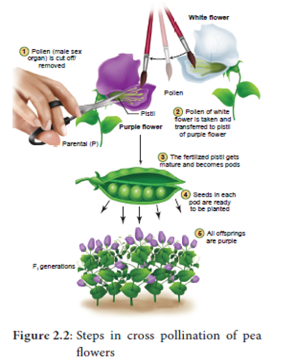
The First Model Organism in Genetics – Garden Peas (Pisum sativum) – Seven characters studied by Mendel.
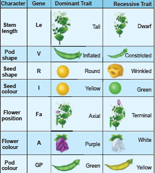
Figure 2.3: Seven characters of Pisum sativum studied by Mendel.
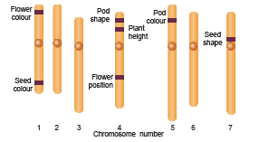
Figure 2.4: Mendel’s seven characters in Garden Peas, shown on the plant’s seven chromosomes
Mendel worked at the rules of inheritance and arrived at the correct mechanism before any knowledge of cellular mechanism, DNA, genes, chromosomes became available. Mendel insights and meticulous work into the mechanism of inheritance played an important role which led to the development of improved crop varieties and a revolution in crop hybridization.
Mendel died in 1884. In 1900 the work of Mendel’s experiments was rediscovered by three biologists, Hugo de Vries of Holland, Carl Correns of Germany and Erich von Tschermak of Austria.
Box item:
Can you identify Mendel’s gene for regulating white colour in peas? Let us find the molecular answer to understand the gene function. Now the genetic mystery of Mendel’s white flowers is solved.
It is quite fascinating to trace the Mendel’s genes. In 2010, the gene responsible for regulating flower colour in peas were identified by an international team of researchers. It was called Pea Gene A which encodes a protein that functions as a transcription factor which is responsible for the production of anthocyanin pigment. So, the flowers are purple. Pea plants with white flowers do not have anthocyanin, even though they have the gene that encodes the enzyme involved in anthocyanin synthesis.
Researchers delivered normal copies of gene A into the cells of the petals of white flowers by the gene gun method. When Gene A entered in a small percentage of cells of white flowers it is expressed in those particular cells, accumulated anthocyanin pigments and became purple.
In white flowers the gene A sequence showed a single-nucleotide change that makes the transcription factor inactive. So, the mutant form of gene A do not accumulate anthocyanin and hence they are white.
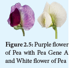
Mendel noticed two different expressions of a trait – Example: Tall and dwarf. Traits are expressed in different ways due to the fact that a gene can exist in alternate forms (versions) for the same trait is called alleles.
If an individual has two identical alleles of a gene, it is called as homozygous (capital TT). An individual with two different alleles is called heterozygous (capital T small t). Mendels non-true breeding plants are heterozygous, called as hybrids.
When the gene has two alleles the dominant allele is symbolized with capital letter and the recessive with small letter. When both alleles are recessive the individual is called homozygous recessive (small tt) dwarf pea plants. An individual with two dominant alleles is called homozygous dominant (capital TT) tall pea plants. One dominant allele and one recessive allele (capital T small t) denotes nontrue breeding tall pea plants heterozygous tall.
Mendel proposed two rules based on his observations on monohybrid cross, today these rules are called laws of inheritance The first law is The Law of Dominance and the second law is The Law of Segregation. These scientific laws play an important role in the history of evolution.
The Law of Dominance: The characters are controlled by discrete units called factors which occur in pairs. In a dissimilar pair of factors one member of the pair is dominant and the other is recessive. This law gives an explanation to the monohybrid cross
serial number (a) the expression of only one of the parental characters in F1 generation and
serial number (b) the expression of both in the F2 generation. It also explains the proportion of 3 east 1 obtained at the F2
The Law of Segregation (Law of Purity of gametes): Alleles do not show any blending, both characters are seen as such in the F2 generation although one of the characters is not seen in the F1 generation. During the formation of gametes, the factors or alleles of a pair separate and segregate from each other such that each gamete receives only one of the two factors. A homozygous parent produces similar gametes and a heterozygous parent produces two kinds of gametes each having one allele with equal proportion. Gametes are never hybrid.
Monohybrid inheritance is the inheritance of a single character that is plant height. It involves the inheritance of two alleles of a single gene. When the F1 generation was selfed Mendel noticed that 787 of 1064 F2 plants were tall, while 277 of 1064 were dwarf. The dwarf trait disappeared in the F1 generation only to reappear in the F2 generation. The term genotype is the genetic constitution of an individual. The term phenotype refers to the observable characteristic of an organism. In a genetic cross the genotypes and phenotypes of offspring, resulting from combining gametes during fertilization can be easily understood with the help of a diagram called Punnett’s Square named after a British Geneticist Reginald C. Punnett. It is a graphical representation to calculate the probability of all possible genotypes of offsprings in a genetic cross. The Law of Dominance and the Law of Segregation give suitable explanation to Mendel’s monohybrid cross.
Reciprocal cross: In one experiment, the tall pea plants were pollinated with the pollens from a true-breeding dwarf plants, the result was all tall plants. When the parental types were reversed, the pollen from a tall plant was used to pollinate a dwarf pea plant which gave only tall plants. The result was the same - All tall plants. Tall (female) multiple Dwarf (male) and Tall (female) multiple Dwarf (male) matings are done in both ways which are called reciprocal crosses. The results of the reciprocal crosses are the same. So, it was concluded that the trait is not sex dependent. The results of Mendel’s monohybrid crosses were not sex dependent. The gene for plant height has two alleles: Tall (capital T) multiple Dwarf (small t). The phenotypic and genotypic analysis of the crosses has been shown by Checker board method or by Forkline method.
‘
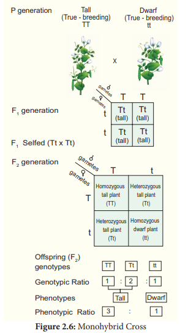
Mendel chose two contrasting traits for each character. So, it seemed logical that two distinct factors exist. In F1 the recessive trait and its factors do not disappear and they are hidden or masked only to reappear in ¼ of the F2 generation. He concluded that tall and dwarf alleles of F1 heterozygote segregate randomly into gametes. Mendel got 3 is to 1 ratio in F2 between the dominant and recessive trait. He was the first scientist to use this type of quantitative analysis in a biological experiment. Mendel’s data is concerned with the proportions of offspring.
Mendel’s analytical approach is truly an outstanding scientific achievement. His meticulous work and precisely executed breeding experiments proposed that discrete particulate units of heredity are present and they are transmitted from one generation to the other. Now they are called as genes. Mendel’s experiments were well planned to determine the relationships which govern hereditary traits. This rationale is called an empirical approach. Laws that were arrived from an empirical approach is known as empirical laws.
Test cross is crossing an individual of dominant phenotype but unknown genotype with a homozygous recessive.
In Mendel’s monohybrid cross all the plants are tall in F1 generation. In F2 tall and dwarf plants were in the ratio of 3 is to 1. Mendel self-pollinated dwarf F2 plants and got dwarf plants in F3 and F4 generations. So, he concluded that the genotype of dwarf was homozygous (small tt). The genotypes of tall plants capital TT or capital T small t from F1and F2 cannot be predicted. But how we can tell if a tall plant is homozygous or heterozygous? To determine the genotype of a tall plant Mendel crossed the plants from F2 with the homozygous recessive dwarf plant. This he called a test cross. The progenies of the test cross can be easily analysed to predict the genotype of the plant or the test organism. Thus, in a typical test cross an organism (pea plants) showing dominant phenotype (whose genotype is to be determined) is crossed with the recessive parent instead of self-crossing. Test cross is used to identify whether an individual is homozygous or heterozygous for dominant character.
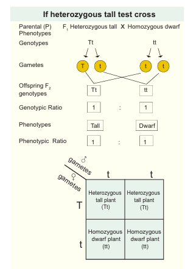
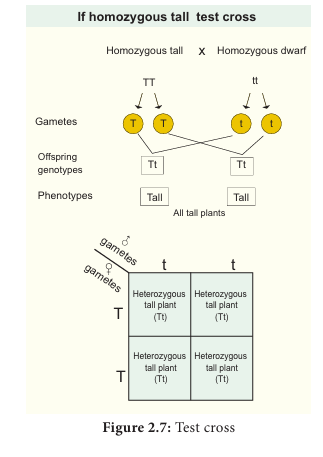
Box item:
Box item:
Why Mendel’s pea plants are tall and dwarf? Find out the molecular explanation.
Molecular characterization of Mendel’s gene for plant height.
The plant height is controlled by a single gene with two alleles. The reason for this difference in plant height is due to the following facts:
1. the cells of the pea plant have the ability to convert a precursor molecule of gibberellins into an active form (Gibberallins active form 1) Active gibberellin.
2. Tall pea plants have one allele (capital L small e) that codes for a protein (functional enzyme) which functions normally in the gibberellin-synthesis pathway and catalyzes the formation of gibberellins.
The allele is dominant even if it is two or single (capital L small e small le), it produces gibberellins and the pea plants are tall. Dwarf pea plants have two recessive alleles (small le le) two Dwarf pea plant which code for non-functional protein; hence they are dwarf.
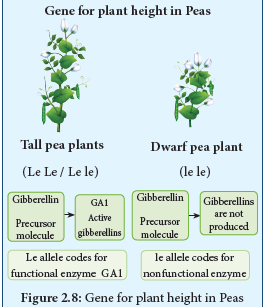
It is a genetic cross which involves individuals differing in two characters. Dihybrid inheritance is the inheritance of two separate genes each with two alleles.
Law of Independent Assortment: When two pairs of traits are combined in a hybrid, segregation of one pair of characters is independent to the other pair of characters. Genes that are located in different chromosomes assort independently during meiosis. Many possible combinations of factors can occur in the gametes.
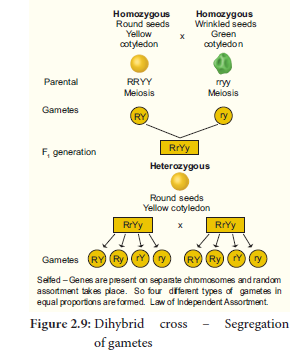
Independent assortment leads to genetic diversity. If an individual produces genetically dissimilar gametes it is the consequence of independent assortment. Through independent assortment, the maternal and paternal members of all pairs were distributed to gametes, so all possible chromosomal combinations were produced leading to genetic variation. In sexually reproducing plants / organisms, due to independent assortment, genetic variation takes place which is important in the process of evolution. The Law of Segregation is concerned with alleles of one gene but the Law of Independent Assortment deals with the relationship between genes.
The crossing of two plants differing in two pairs of contrasting traits is called dihybrid cross. In dihybrid cross, two characters (colour and shape) are considered at a time. Mendel considered the seed shape (round and wrinkled) and cotyledon colour (yellow & green) as the two characters. In seed shape round (capital R) is dominant over wrinkled (small r); in cotyledon colour yellow (capital Y) is dominant over green (small y). Hence the pure breeding round yellow parent is represented by the genotype capital RRYY and the pure breeding green wrinkled parent is represented by the genotype small rryy. During gamete formation the paired genes of a character as sort out independently of the other pair. During the F1 multiple F1 fertilization each zygote with an equal probability receives one of the four combinations from each parent. The resultant gametes thus will be genetically different and they are of the following four types:
These four types of gametes of F1 dihybrids unite randomly in the process of fertilization and produce sixteen types of individuals in F2 in the ratio of 9 east 3 east 3 east 1 as shown in the figure. Mendel’s 9 east 3 east 3 east 1 dihybrid ratio is an ideal ratio based on the probability including segregation, independent assortment and random fertilization. In sexually reproducing organism / plants from the garden peas to human beings, Mendel’s findings laid the foundation for understanding inheritance and revolutionized the field of biology. The dihybrid cross and its result led Mendel to propose a second set of generalisations that we called Mendel's Law of independent assortment.
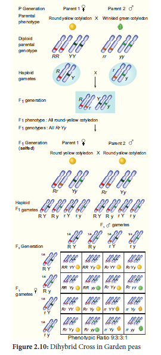
Box item:
How does the wrinkled gene make Mendel’s peas wrinkled? Find out the molecular explanation.
The protein called starch branching enzyme (SBEI) is encoded by the wild-type allele of the gene (RR) which is dominant. When the seed matures, this enzyme SBEI catalyzes the formation of highly branched starch molecules. Normal gene (capital R) has become interrupted by the insertion of extra piece of DNA (0.8 kb) into the gene, resulting in small r allele. In the homozygous mutant form of the gene (small rr) which is recessive, the activity of the enzyme SBEI is lost resulting in wrinkled peas. The wrinkled seed accumulates more sucrose and high-water content. Hence the osmotic pressure inside the seed rises. As a result, the seed absorbs more water and when it matures it loses water as it dries. So, it becomes wrinkled at maturation. When the seed has atleast one copy of normal dominant gene heterozygous, the dominant allele helps to synthesize starch, amylopectin an insoluble carbohydrate, with the osmotic balance which minimises the loss of water resulting in smooth structured round seed.
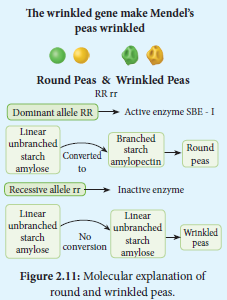
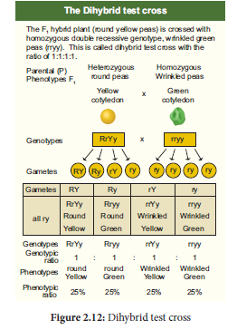
Apart from monohybrid, dihybrid and trihybrid crosses, there are exceptions to Mendelian principles, that is, the occurrence of different phenotypic ratios. The more complex patterns of inheritance are the extensions of Mendelian Genetics. There are examples where phenotype of the organism is the result of the interactions among genes.
A single phenotype is controlled by more than one set of genes, each of which has two or more alleles. This phenomenon is called Gene Interaction. Many characteristics of the organism including structural and chemical which constitute the phenotype are the result of interaction between two or more genes.
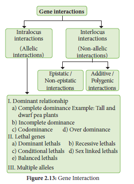
Mendelian experiments prove that a single gene controls one character. But in the post Mendelian findings, various exception has been noticed, in which different types of interactions are possible between the genes. This gene interaction concept was introduced and explained by W. Bateson. This concept is otherwise known as Factor hypothesis or Bateson’s factor hypothesis. According to Bateson’s factor hypothesis, the gene interactions can be classified as
Interactions take place between the alleles of the same gene that is alleles at the same locus is called intragenic or intralocus gene interaction. It includes the following:
1) Incomplete dominance
(2) Codominance
(3) Lethal genes
(4) Pleiotropic genes are common examples for intragenic interaction.
1. Incomplete dominance – No blending of genes
The German Botanist Carl Correns’s (1905) Experiment - In 4 O’ clock plant, Mirabilis jalapa when the pure breeding homozygous red (capital R1R1) parent is crossed with homozygous white (capital R2 R2), the phenotype of the capital F1 hybrid is heterozygous pink (capital R1 R2). The capital F1 heterozygous phenotype differs from both the parental homozygous phenotype. This cross did not exhibit the character of the dominant parent but an intermediate colour pink. When one allele is not completely dominant to another allele it shows incomplete dominance. Such allelic interaction is known as incomplete dominance. capital F1 generation produces intermediate phenotype pink coloured flower. When pink coloured plants of capital F1 generation were interbred in capital F2 both phenotypic and genotypic ratios were found to be identical as 1 is it 2 is it 1(1 red: 2 pinks: 1 white). Genotypic ratio is 1 capital R1R1 is it 2 R1R2 east 1 R2R2.From this we conclude that the alleles themselves remain discrete and unaltered proving the Mendel’s Law of Segregation. The phenotypic and genotypic ratios are the same. There is no blending of genes. In the capital F2 generation capital R1 and capital R2 genes segregate and recombine to produce red, pink and white in the ratio of 1 is it 2 is it 1. capital R1 allele codes for an enzyme responsible for the formation of red pigment. capital R2 allele codes for defective enzyme capital R1 and capital R2 genotypes produce only enough red pigments to make the flower pink. Two capital R1R1 are needed for producing red flowers. Two capital R2R2 genes are needed for white flowers. If blending had taken place, the original pure traits would not have appeared and all capital F2 plants would have pink flowers. It is very clear that Mendel’s particulate inheritance takes place in this cross which is confirmed by the reappearance of original phenotype in capital F2
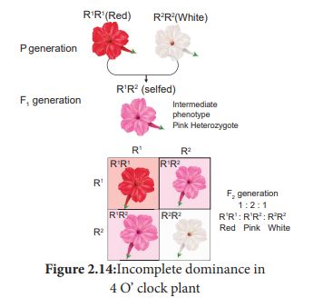
Box item:
How are we going to interpret the lack of dominance and give explanation to the intermediate heterozygote phenotype?
will you explain incomplete dominance at the molecular level?
Gene expression is explained in a quantitative way. Wild-type allele which is a functional allele when present in two copies (capital R1 R1] are red color flower produces a functional enzyme which synthesizes red pigments. The mutant allele which is a defective allele in two copies (capital R2 R2) are White color flower produces an enzyme which cannot synthesize necessary red pigments. The white flower is due to the mutation causing complete loss of function. The capital F1 intermediate phenotype heterozygote (capital R1R2) has one copy of the allele capital R1. R1 produces 50% of the functional protein resulting in half of the pigment of red flowered plant and so it is pink. The intermediate phenotype pink heterogyzote with 50% of functional protein is not enough to create the red How phenotype homozygous, which makes 100% of the functional protein.
b. Codominance (1 is it 2 is it 1)
This pattern occurs due to simultaneous (joint) expression of both alleles in the heterozygote - The phenomenon in which two alleles are both expressed in the heterozygous individual is known as codominance. Example: Red and white flowers of Camellia, inheritance of sickle cell haemoglobin, ABO blood group system in human beings. In human beings, capital IA and IB alleles of I gene [isoagglutination a alleles A antigen and B antigen] are codominant which follows Mendels law of segregation. The codominance was demonstrated in plants with the help of electrophoresis or chromatography for protein or flavonoid substance. Example: Gossypium hirsutum and Gossypium sturtianum, their heterozygotes product hybrid (amphiploid) was tested for seed proteins by electrophoresis. Both the parents have different banding patterns for their seed proteins. In hybrids, additive banding pattern was noticed. Their hybrid shows the presence of both the types of proteins similar to their parents.
The heterozygote genotype gives rise to a phenotype distinctly different from either of the homozygous genotypes. The progeny in a phenotypic and genotypic ratio of 1 is it 2 is it 1.
c. Lethal genes
An allele which has the potential to cause the death of an organism is called a “Lethal Allele”. In 1907, E. Baur reported a lethal gene in snapdragon (Antirrhinum sp.). It is an example for recessive lethality. In snapdragon there are three kinds of plants.
1. Green plants with chlorophyll. (capital CC
2. Yellowish green plants with carotenoids are referred to as pale green, golden or aurea plants (capital C small c)
3. White plants without any chlorophyll. (small cc)
The genotype of the homozygous green plants is capital CC. The genotype of the homozygous white plant is small cc.
The aurea plants have the genotype Cc because they are heterozygous of green and white plants. When two such aurea plants are cross [First generation] progeny has identical phenotypic and genotypic ratio of 1 east 2 east 1 (viz. 1 Green (capital CC) east 2 Aurea (capital C small c) east 1 White (small cc)).
Since the white plants lack chlorophyll pigment, they will not survive. So, second generation the ratio is modified into 1 east 2. In this case the homozygous recessive genotype (small cc) is lethal.
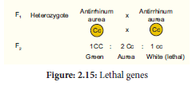
The term “lethal” is applied to those changes in the genome of an organism which produces effects severe enough to cause death. Lethality is a condition in which the death of certain genotype occurs prematurely. The fully dominant or fully recessive lethal allele kills the carrier individual only in its homozygous condition. So, the Second-generation genotypic ratio will be 2 east 1 or 1 east 2 respectively.
d. Pleiotropy – A single gene affects multiple traits
In Pleiotropy, the single gene affects multiple traits and alter the phenotype of the organism. The Pleiotropic gene influences a number of characters simultaneously and such genes are called pleiotropic gene. These were crossed with a variety of peas having white flowers, light coloured seeds and no spot on the axils of the leaves, the three traits for flower colour, seed colour and a leaf axil spot all were inherited together as a single unit. Another example is sickle cell anemia.
Interlocus interactions take place between the alleles at different loci that is between alleles of different genes. It includes the following:
Dominant Epistasis - It is a gene interaction in which two alleles of a gene at one locus interfere and suppress or mask the phenotypic expression of a different pair of alleles of another gene at another locus. The gene that suppresses or masks the phenotypic expression of a gene at another locus is known as epistatic. The gene whose expression is interfered by nonallelic genes and prevents from exhibiting its character is known as hypostatic. When both the genes are present together, the phenotype is determined by the epistatic gene and not by the hypostatic gene.
In the summer squash the fruit colour locus has a dominant allele capital ‘W’ for white colour and a recessive allele small ‘w’ for coloured fruit capital ‘W’ allele is dominant that masks the expression of any colour. In another locus hypostatic allele capital ‘G’ is for yellow fruit and its recessive allele small ‘g’ for green fruit. In the first locus the white is dominant to colour where as in the second locus yellow is dominant to green. When the white fruit with genotype capital WW small gg is crossed with yellow fruit with genotype small ww capital GG, the F1 plants have white fruit and are heterozygous (capital W small w capital G small g). When F1 heterozygous plants are crossed they give rise to F2 with the phenotypic ratio of 12 white east 3 yellow east 1 green.
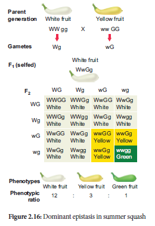
Since W is epistatic to the allele’s capital ‘G’ and small ‘g’, the white which is dominant, masks the effect of yellow or green. Homozygous recessive ww genotypes only can give the coloured fruits (4/16). Double recessive capital ‘ww small gg’ will give green fruit (1/16). The Plants having only capital ‘G’ in its genotype (small ww capital G small g or small ww capital GG) will give the yellow fruit (3/16).
Intra –genic or allelic interaction
Serial number |
Gene interaction |
Example |
F2 Phenotypic ratio |
Serial number 1 |
Incomplete Dominance |
Flower colour in Mirabilis jalapa.
|
1 east 2 east 1
|
Serial number 1 |
Incomplete Dominance |
Flower colour in snapdragon (Antirrhinum spp.) |
1 east 2 east: 1 |
Serial number 2 |
Codominance |
ABO Blood group system in humans |
1 east 2 east 1 |
Inter-genic or non-allelic interaction
Serial number |
Epistatic interaction |
Example |
F2 Ratio Phenotypic ratio |
Serial number 1 |
Dominant epistasis |
Fruit colour in summer squash |
12 east 3 east 1 |
Serial number 2 |
Recessive epistasis |
Flower colour of Antirrhinum spp. |
9 east 3 east: 4 |
Serial number 3 |
Duplicate genes with cumulative effect |
Fruit shape in summer squash |
9 east 6 east 1 |
Serial number 4 |
Complementary genes |
Flower colour in sweet peas |
9 east 7 |
Serial number 5 |
Supplementary genes |
Grain colour in Maize |
9 east 3 east 4 |
Serial number 6 |
Inhibitor genes |
Leaf colour in rice plants |
13 east 3 |
Serial number 7 |
Duplicate genes |
Seed capsule shape (fruit shape) in shepherd’s purse Bursa bursa-pastoris |
15 east 1 |
Polygenic inheritance - Several genes combine to affect a single trait. A group of genes that together determine (contribute) a characteristic of an organism_ is called polygenic inheritance. It gives explanations to the inheritance of continuous traits which are compatible with Mendel’s Law. The first experiment on polygenic inheritance was demonstrated by Swedish Geneticist H. Nilsson - Ehle (1909) in wheat kernels. Kernel colour is controlled by two genes each with two alleles, one with red kernel colour was dominant to white. He crossed the two pure breeding wheat varieties dark red and a white. Dark red genotypes capital R1 R1 R2 R2 and white genotypes are small r1 r1 r2 r2. In the F1 generation medium red were obtained with the genotype capita R1 small r1 capitaR2 small r2. F1 wheat plant produces four types of gametes capital R1 R2, R1 small r2, r1 capital R2, small r1 r2. The intensity of the red colour is determined by the number of R genes in the capital F2 generation.
Four R genes: A dark red kernel colour is obtained.
Three R genes: Medium – dark red kernel colour is obtained.
Two R genes: Medium-red kernel colour is obtained.
One R gene: Light red kernel colour is obtained.
Absence of R gene: Results in White kernel colour.
The R gene in an additive manner produces the red kernel colour. The number of each phenotype is plotted against the intensity of red kernel colour which produces a bell-shaped curve. This represents the distribution of phenotype. Other example: Height and skin colour in humans are controlled by three pairs of genes.
Conclusion:
Finally, the loci that was studied by Nilsson –Ehle were not linked and the genes assorted independently.
Later, researchers discovered the third gene that also affect the kernel colour of wheat. The three independent pairs of alleles were involved in wheat kernel colour. Nilsson – Ehle found the ratio of 63 red east 1 white in capital F2 generation – 1 east 6 east 15 east 20 east 15 east 6 east 1 in capital F2 generation.
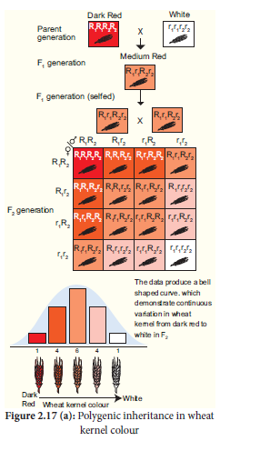
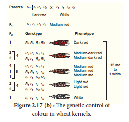
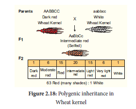
From the above results Nilsson – Ehle showed that the blending inheritance was not taking place in the kernel of wheat. In capital F2 generation plants have kernels with wide range of colour variation. This is due to the fact that the genes are segregating and recombination takes place. Another evidence for the absence of blending inheritance is that the parental phenotypes dark red and white appear again in capital F2. There is no blending of genes, only the phenotype. The cumulative effect of several pairs of gene interaction gives rise to many shades of kernel colour. He hypothesized that the two loci must contribute additively to the kernel colour of wheat. The contribution of each red allele to the kernel colour of wheat is additive.
DNA is the universal genetic material. Genes located in nuclear chromosomes follow Mendelian inheritance. But certain traits are governed either by the chloroplast or mitochondrial genes. This phenomenon is known as extra nuclear inheritance. It is a kind of non-Mendelian inheritance. Since it involves cytoplasmic organelles such as chloroplast and mitochondrion that act as inheritance vectors, it is also called Cytoplasmic inheritance. It is based on independent, self-replicating extra chromosomal unit called plasmogene located in the cytoplasmic organelles, chloroplast and mitochondrion.
Chloroplast Inheritance
It is found in 4 O’ Clock plant (Mirabilis jalapa). In this, there are two types of variegated leaves namely dark green leaved plants and pale green leaved plants. When the pollen of dark green leaved plant (male) is transferred to the stigma of pale green leaved plant (female) and pollen of pale green leaved plant is transferred to the stigma of dark green leaved plant, the capital F1 generation of both the crosses must be identical as per Mendelian inheritance. But in the reciprocal cross the capital F1 plant differs from each other. In each cross, the capital F1 plant reveals the character of the plant which is used as female plant.
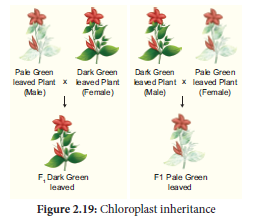
This inheritance is not through nuclear gene. It is due to the chloroplast gene found in the ovum of the female plant which contributes the cytoplasm during fertilization since the male gamete contribute only the nucleus but not cytoplasm.
Recently it has been discovered that cytoplasmic genetic male sterility is common in many plant species. This sterility is maintained by the influence of both nuclear and cytoplasmic genes. There are commonly two types of cytoplasm N (normal) and S (sterile). The genes for these are found in mitochondrion. There are also restores of fertility (Rf) genes. Even though these genes are nuclear genes, they are distinct from genetic male sterility genes of other plants. Because the Rf genes do not have any expression of their own, unless the sterile cytoplasm is present. Rf genes are required to restore fertility in S cytoplasm which is responsible for sterility.
So, the combination of N cytoplasm with small rfrf and S cytoplasm with capital R small f capital R small f produces plants with fertile pollens, while S cytoplasm with small rfrf produces only male sterile plants.
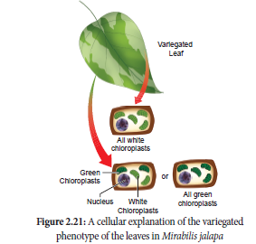
Atavism is a modification of a biological structure whereby an ancestral trait reappears after having been lost through reemergence of sexual reproduction in the flowering plant Hieracium pilosella is the best example for Atavism in plants.
Gregor Johann Mendel, father of Genetics unraveled the mystery of heredity through his experiments on garden peas. Mendel’s laws, analytical and empirical reasoning endure till now guiding geneticists to study variation. The monohybrid cross of Mendel proved his particulate theory of inheritance. In F2 the alternative traits were expressed in the ratio of 3 dominant and 1 recessive. The characteristic 3 east 1 segregation is referred to as Mendelian ratio. Parents transmit discrete information about the traits to their offspring which Mendel called it as “factors”. To test his experimental results Mendel devised a powerful procedure called the test cross. Test cross is used to determine the genotype of an individual when two genes are involved. In Mendel’s dihybrid cross, the two pairs of factors were inherited independently. From the results of dihybrid cross Mendel gave the Law of Independent Assortment.
Mendel’s dihybrid ratio of 9 east 3 east 3 east 1 with the representation of two new recombinations appeared in the progeny, i.e., round green peas or wrinkled yellow peas. Molecular explanation of Mendel’s gene for monohybrid cross, dihybrid cross was explained. Extension of Mendelian Genetics was dealt with examples for interaction among genes. Incomplete dominance is not an example for blending inheritance. Incomplete dominance exhibits a phenotypic heterozygote intermediate between the two homozygous. In plants codominance can be demonstrated by the methods of electrophoresis or chromatography for protein or flavonoid substances. Lethal genes with an example are explained. Pleiotropy a single gene which affects multiple traits was explained with an example of Pisum sativum. Dominant epistatis in summer squash with 12 east 3 east 1 ratio was discussed. Polygenic inheritance is an example for inheritance of continuous traits which is compatible with Mendel’s laws. The inheritance of mitochondrial and chloroplast genes were explained with examples which does not follow the rules of nuclear genes.
1. Extra nuclear inheritance is a consequence of presence of genes in
a) Mitrochondria and chloroplasts
b) Endoplasmic reticulum and mitrochondria
c) Ribosomes and chloroplast
d) Lysososmes and ribosomes
2. In order to find out the different types of gametes produced by a pea plant having the genotype capital A small a capital B small b, it should be crossed to a plant with the genotype
a) small aa capital B B
b) capital A small a capital B B
c) capital A A B B
d) small aabb
3. How many different kinds of gametes will be produced by a plant having the genotype capital A A B small b capital capital C C?
a) Three
b) Four
c) Nine
d) Two
4. Which one of the following is an example of polygenic inheritance?
a) Flower colour in Mirabilis Jalapa
b) Production of male honey bee
c) Pod shape in garden pea
d) Skin Colour in humans
5. In Mendel’s experiments with garden pea, round seed shape (capital RR) was dominant over wrinkled seeds (small rr), yellow cotyledon (capital YY) was dominant over green cotyledon (small yy). What are the expected phenotypes in the F2 generation of the cross capital R R Y Y multiple small r r y y?
a) Only round seeds with green cotyledons
b) Only wrinkled seeds with yellow cotyledons
c) Only wrinkled seeds with green cotyledons
d) round seeds with yellow cotyledons an wrinkled seeds with yellow cotyledons
6. Test cross involves
a) Crossing between two genotypes with recessive trait
b) Crossing between two F1 hybrids
c) Crossing the F1 hybrid with a double recessive genotype
d) Crossing between two genotypes with dominant trait
7. In pea plants, yellow seeds are dominant to green. If a heterozygous yellow seed plant is crossed with a green seeded plant, what ratio of yellow and green seeded plants would you expect in F1 generation?
a) 9 east 1
b) 1 east 3
b) 3 east 1
d) 50 east 50
8. Select the correct statement from the ones given below with respect to dihydrid cross
a) Tightly linked genes on the same chromosomes show very few combinations
b) Tightly linked genes on the same chromosomes show higher combinations
c) Genes far apart on the same chromosomes show very few recombinations
d) Genes loosely linked on the same chromosomes show similar recombinations as the tightly linked ones
9. Which Mendelian idea is depicted by a cross in which the F1 generation resembles both the parents
a) Incomplete dominance
b) Law of dominance
c) Inheritance of one gene
d) Co-dominance
10. Fruit colour in squash is an example of
a) Recessive epistatsis
b) Dominant epistasis
c) Complementary genes
d) Inhibitory genes
11. In his classic experiments on Pea plants, Mendel did not use
a) Flowering position
b) Seed colour
c) Pod length
d) Seed shape
12. The epistatic effect, in which the dihybrid cross 9 east 3 east 3 east 1 between capital A small a capital B small b multiple capital A small abb is modified as
a) Dominance of one allele on another allele of both loci
b) Interaction between two alleles of different loci
c) Dominance of one allele to other alleles of same loci
d) Interaction between two alleles of same loci
13. In a test cross involving capital F1 dihybrid fly, more parental type offspring were produced than the recombination type offspring. This indicates
a) The two genes are located on two different chromosomes
b) Chromosomes failed to separate during meiosis
c) The two genes are linked and present on some chromosome
d) Both of the characters are controlled by more than one gene
14. The genes controlling the seven pea characters studied by Mendel are known to be located on how many different chromosomes?
a) Seven
b) Six
c) Five
d) Four
15. Which of the following explains how progeny can possess the combinations of traits that none of the parent possessed?
a) Law of segregation
b) Chromosome theory
c) Law of independent assortment
d) Polygenic inheritance
16. “Gametes are never hybrid”. This is a statement of
a) Law of dominance
b) Law of independent assortment
c) Law of segregation
d) Law of random fertilization
17. Gene which suppresses other genes activity but does not lie on the same locus is called as
a) Epistatic
b) Supplement only
c) Hypostatic
d) Codominant
18. Pure tall plants are crossed with pure dwarf plants. In the F1 generation, all plants were tall. These tall plants of F1 generation were selfed and the ratio of tall to dwarf plants obtained was 3 east 1. This
is called
a) Dominance
b) Inheritance
c) Codominance
d) Heredity
19. The dominant epistatis ratio is
a) 9 east 3 east 3 east 1
b) 12 east 3 east 1
c) 9 east:3 east 4
d) 9 east 6 east 1
20. Select the period for Mendel’s hybridization experiments
a) 1856 - 1863
b) 1850 - 1870
c) 1857 - 1869
d) 1870 – 1877
21. Among the following characters which one was not considered by Mendel in his experimentation pea?
a) Stem – Tall or dwarf
b) Trichomal glandular or non-glandular
c) Seed – Green or yellow
d) Pod – Inflated or constricted
22. Name the seven contrasting traits of Mendel.
23. What is meant by true breeding or pure breeding lines / strain?
24. Give the names of the scientists who rediscovered Mendelism.
25. What is back cross?
26. Define Genetics.
27. What are multiple alleles
28. What are the reasons for Mendel’s successes in his breeding experiment?
29. Explain the law of dominance in monohybrid cross.
30. Differentiate incomplete dominance and codominance.
31. What is meant by cytoplasmic inheritance
32. Describe dominant epistasis with an example.
33. Explain polygenic inheritance with an example.
34. Differentiate continuous variation with discontinuous variation.
35. Explain with an example how single genes affect multiple traits and alters the phenotype of an organism.
36. Bring out the inheritance of chloroplast gene with an example.
Alleles: Alternative forms of a gene.
Back Cross: Crosses between F1 off-springs with either of the two parents (hybrid) are known as back cross
F1 / First Filial Generation: The second stage of Mendel’s experiment is called F1 generation
Gene: The determinant of a characteristic of an organism (Mendelian factor). Gene symbols are underlined or italicized.
Genetic Code: The set of 64 triplets of bases (codons) corresponding to the twenty amino acids in proteins and the signals for initiation and termination of polypeptide synthesis.
Genotype: The types of alleles in a single individual is called genotype
Genome: The total complement of genes contained in a cell.
Heterozygous: Diploid organisms that have two different allels at a specific gene locus are
said to be heterozygous.
Homozygous: A diploid organism in which both alleles are the same at a given gene locus is
said to be homozygous.
Hybrid Vigour or Heterosis: The superiority of hybrid over either of its parents in one or more traits.
Locus: The site or position of a particular gene on a chromosome.
Phenotype: The physical expression of an individual’s gene. The physical observable characteristics of an organism.
Punnett Square / Checkerboard: A sort of cross-multiplication matrix used in the prediction of the outcome of a genetic cross, in which male and female gametes and their frequencies are arranged along the edges.
The Learner will be able to
3.1 Chromosomal theory of Inheritance
3.2 Linkage - Eye colour in Drosophila and Seed colour in Maize
3.3 Crossing over, Recombination and Gene mapping
3.4 Multiple alleles
3.5 Mutation-types, mutagenic agents and their significance.
3.6 DNA Metabolism in Plants
3.7 Protein synthesis in plants
In the previous chapter you have learned about Mendelian genetics, now you are going to be study with deviations of concepts related to Mendelian genetics and chromosomal theory of inheritance. You must recall the structure of chromosome and cell division from eleventh standard.
G. J. Mendel (1865) studied the inheritance of well-defined characters of pea plant but for several reasons it was unrecognized till 1900. Three scientists (de Vries, Correns and Tschermak) independently rediscovered Mendel’s results on the inheritance of characters. Various cytologists also observed cell division due to advancements in microscopy. This led to the discovery of structures inside nucleus. In eukaryotic cells, worm-shaped structures formed during cell division are called chromosomes (colored bodies, visualized by staining). An organism which possesses two complete basic sets of chromosomes are known as diploid. A chromosome consists of long, continuous coiled piece of DNA in which genes are arranged in linear order. Each gene has a definite position (locus) on a chromosome. These genes are hereditary units. Chromosomal theory of inheritance states that Mendelian factors (genes) have specific locus (position) on chromosomes and they carry information from one generation to the next generation.
The important cytological findings related to the chromosome theory of inheritance are given below.
Around twentieth century cytologists established that, generally the total number of chromosomes is constant in all cells of a species. A diploid eukaryotic cell has two haploid sets of chromosomes, one set from each parent. All somatic cells of an organism carry the same genetic complement. The behaviour of chromosomes during meiosis not only explains Mendel’s principles but leads to new and different approaches to study about heredity.

Mendelian factors |
Chromosomes behaviour |
1. Alleles of a factor occur in pair |
Chromosomes occur in pairs |
2. Similar or dissimilar alleles of a factor separate during the gamete formation |
The homologous chromosomes separate during meiosis |
3. Mendelian factors can assort independently |
The paired chromosomes can separate independently duringmeiosis but the linked genes in the same chromosome normally do not assort independently. |
Table 3.1: Parallelism between Mendelian factors and chromosomal behaviour.
Organism |
Number of chromosomes (2n) |
Adder’s tongue fern (Ophioglossum) |
1262 |
Horsetail (Equisetum) |
216 |
Giant sequoia |
22 |
Arabidopsis |
10 |
Sugarcane |
80 |
Apple |
34 |
Rice |
24 |
Potato |
48 |
Maize |
20 |
Onion |
16 |
Haplopappus gracilis |
4 |
Table 3.2: Number of Chromosomes
Box item:
Thomas Hunt Morgan (1933) received Nobel Prize in Physiology or Medicine for his
discoveries concerning the role played by chromosomes in heredity.

The genes which determine the character of an individual are carried by the chromosomes. The genes for different characters may be present either in the same chromosome or in different chromosomes. When the genes are present in different chromosomes, they assort independently according to Mendel’s Law of Independent Assortment. Biologists came across certain genetic characteristics that did not assort out independently in other organisms after Mendel’s work. One such case was reported in sweet pea (Lathyrus odoratus) by William Bateson and Reginald C. Punnet in 1906. They crossed one homozygous strain of sweet peas having purple flowers and long pollen grains with another homozygous strain having red flowers and round pollen grains. All the capital F1 progenies had purple flower and long pollen grains indicating purple flower long pollen (capital PL/ PL) was dominant over red flower round pollen (small pl/pl). When they crossed the capital F1 with parent (test cross) in results, capital F2 progenies did not exhibit in 1 east 1 east 1 east 1 ratio as expected with independent assortment. A greater number of capital F2 plants had purple flowers and long pollen or red flowers and round pollen. So, they concluded that genes for purple colour and long pollen grain and the genes for red colour and round pollen grain were found close together in the same homologous pair of chromosomes. These genes do not allow themselves to be separated. So they do not assort independently. This type of tendency of genes to stay together during separation of chromosomes is called Linkage.

Genes located close together on the same chromosome and inherited together are called linked genes. But the two genes that are sufficiently far apart on the same chromosome are called unlinked genes or syntenic genes (Figure number 3.2). Such condition is known as synteny. It is to be differentiated by the value of recombination frequency. If the recombination frequency value is more than 50 % the two genes show unlinked. when the recombination frequency value is less than 50 %, they show linked. Closely located genes show strong linkage, while genes widely located show weak linkages.
Box item: Do you know?
Fossil Genes: Some of the junk DNA is made up of pseudo genes, the sequences presence in that was once working genes. They lost their ability to make proteins. They tell the story of evolution through fossilized parts.
The two dominant alleles or recessive alleles occur in the same homologous chromosomes, tend to inherit together into same gamete are called coupling or cis configuration (Figure: 3.4). If dominant or recessive alleles are present on two different, but homologous chromosomes they inherit apart into different gamete are called repulsion or trans configuration (Figure: 3. 5).

T.H. Morgan found two types of linkage. They are complete linkage and incomplete linkage depending upon the absence or presence of new combination of linked genes.
Complete Linkage
If the chances of separation of two linked genes are not possible those genes always remain together as a result, only parental combinations are observed. The linked genes are located very close together on the same chromosome such genes do not exhibit crossing over. This phenomenon is called complete linkage. It is rare but has been reported in male Drosophila.
C.B Bridges (1919) discovered that crossing over is completely absent in some species of male Drosophila.
Incomplete Linkage
If two linked genes are sufficiently apart, the chances of their separation are possible. As a
result, parental and non-parental combinations are observed. The linked genes exhibit some
crossing over. This phenomenon is called incomplete linkage. This was observed in maize. It was reported by Hutchinson.

Figure 3.4: Alleles in coupling or cis Configuration
The groups of linearly arranged linked genes on a chromosome are called Linkage groups. In any species the number of linkage groups corresponds to the number haploid set of chromosomes. Example:

Figure 3.5: Alleles in repulsion or trans Configuration
Name of organism |
Linkage groups |
Mucor |
2 |
Drosophila |
4 |
Sweet pea |
7 |
Neurospora |
7 |
Maize |
10 |
Table 3.3: Linkage groups in some organisms
Linkage and crossing over are two processes that have opposite effects. Linkage keeps particular genes together but crossing over mixes them. The differences are given below.
Linkage |
Crossing over |
1.The genes present on chromosome stay close together |
It leads to separation of linked genes |
2. It involves same chromosome of homologous chromosome |
It involves exchange of segments between non-sister chromatids of homologous chromosome. |
3. It reduces new gene combinations |
It increases variability by forming new gene combinations. Lead to formation of new organism |
Table 3.4: Differences between linkage and crossing over
Crossing over is a biological process that produces new combination of genes by inter-changing
the corresponding segments between non-sister chromatids of homologous pair of hromosomes. The term 'crossing over' was coined by Morgan (1912). It takes place during pachytene stage of prophase I of meiosis. Usually crossing over occurs in germinal cells during gametogenesis. It is called meiotic or germinal crossing over. It has universal occurrence and has great significance. Rarely, crossing over occurs in somatic cells during mitosis. It is called somatic or mitotic crossing over.
Crossing over is a precise process that includes stages like synapsis, tetrad formation, cross over and terminalization.
(1) Synapsis
Intimate pairing between two homologous chromosomes is initiated during zygotene stage of prophase I of meiosis I. Homologous chromosomes are aligned side by side resulting in a pair of homologous chromosomes called bivalents. This pairing phenomenon is called synapsis or syndesis. It is of three types,
1. Procentric synapsis: Pairing starts from middle of the chromosome.
2. Proterminal synapsis: Pairing starts from the telomeres.
3. Random synapsis: Pairing may start from anywhere.
(2) Tetrad Formation
Each homologous chromosome of a bivalent begin to form two identical sister chromatids, which remain held together by a centromere. At this stage each bivalent has four chromatids. This stage is called tetrad stage.
(3) Cross Over
After tetrad formation, crossing over occurs in pachytene stage. The non-sister chromatids of homologous pair make a contact at one or more points. These points of contact between nonsister chromatids of homologous chromosomes are called Chiasmata (singular-Chiasma). At chiasma, cross-shaped or X-shaped structures are formed, where breaking and rejoining of two chromatids occur. This results in reciprocal exchange of equal and corresponding segments between them.

(4) Terminalisation
After crossing over, chiasma starts to move towards the terminal end of chromatids. This is known as terminalisation. As a result, complete separation of homologous chromosomes occurs.
Crossing over occurs in all organisms like bacteria, yeast, fungi, higher plants and animals. Its importance is

Figure 3.7: Mechanism of crossing over role in evolution
Crossing over results in the formation of new combination of characters in an organism called recombinants. In this, segments of DNA are broken and recombined to produce new combinations of alleles. This process is called Recombination.
Calculation of Recombination Frequency (RF)
The percentage of recombinant progeny in a cross is called recombination frequency.
The recombination frequency (cross over frequency) (RF) is calculated by using the following formula.
The data is obtained from alleles in coupling configuration.
RF equaltu total number of recombinations by total number of offsprings entu hundred
Box item:
Activity: Solve this
Consider two hypothetical recessive autosomal genes a and b, where a heterozygote is testcrossed to a double homozygous mutant. Predict the phenotypic ratios under the following conditions:
(a) a and b are located on separate autosomes.
(b) a and b are linked on the same autosome but are so far apart that a crossover occurs between them.
(c) a and b are linked on the same autosome but are so close together that a crossover almost never occurs.
Genes are present in a linear order along the chromosome. They are present in a specific location called locus (plural: loci). The diagrammatic representation of position of genes and related distances between the adjacent genes is called genetic mapping. It is directly proportional to the frequency of recombination between them. It is also called as linkage map. The concept of gene mapping was first developed by Morgan’s student Alfred H Sturtevant in 1913. It provides clues about where the genes lies on that chromosome.
Map distance
The unit of distance in a genetic map is called a map unit (m.u). One map unit is equivalent to one percent of crossing over (Figure 4.). One map unit is also called a centimorgan (cM) in onour of T.H. Morgan. 100 centimorgan is equal to one Morgan (M). For example: A distance between A and B genes is estimated to be 3.5 map units. It is equal to 3.5 centimorgans or 3.5 % or 0.035 recombination frequency between the genes.

Uses of genetic mapping
A given phenotypic trait of an individual depends on a single pair of genes, each of which occupies a specific position called the locus on homologous chromosome. When any of the three or more allelic forms of a gene occupy the same locus in a given pair of homologous chromosomes, they are said to be called multiple alleles.
Box item:
Check your Grasp
There may be multiple alleles within the population, but individuals have only two of those alleles. Why?
• Multiple alleles of a series always occupy the same locus in the homologous chromosome. Therefore, no crossing over occurs within the alleles of a series.
• Multiple alleles are always responsible for the same character.
• The wild type alleles of a series exhibit dominant character whereas mutant type will influence dominance or an intermediate phenotypic effect.
• When any two of the mutant multiple alleles are crossed the phenotype is always mutant type and not the wild type
In plants, multiple alleles have been reported in association with self-sterility or self-incompatibility. Self-sterility means that the pollen from a plant is unable to germinate on its own stigma and will not be able to bring about fertilization in the ovules of the same plant. East (1925) observed multiple alleles in Nicotiana which are responsible for self-incompatibility or self-sterility. The gene for self-incompatibility can be designated as capital S, which has allelic series capital S1, S2, S3, S4 and S5 (Figure 3.18).

The cross-fertilizing tobacco plants were not always homozygous as capital S1 S1 or S2 S2, but all plants were heterozygous as capital S1 S2, S 3S4, S5 S 6. When crosses were made between different capital S1 S2 plants, the pollen tube did not develop normally. But effective pollen tube development was observed when crossing was made with other than capital S1 S2 for example capital S3 S4.

When crosses were made between seed parents with capital S1 S2 and pollen parents with capital S2 S3, two kinds of pollen tubes were distinguished. Pollen grains carrying S2 were not effective, but the pollen grains carrying capital S3 were capable of fertilization. Thus, from the cross capital S1 S2 multiple capital S3 S4, all the pollens were effective and four kinds of progeny resulted: capital S1 S3, S1 S4, S2 S3 and S2 S4. Some combinations are showed in the table-3.5.
Zea mays (maize) is an example for monoecious, which means male and female flowers are present on the same plant. There are two types of inflorescences. The terminal inflorescence which bears staminate florets develops from shoot apical meristem called tassel. The lateral inflorescence which develops pistillate florets from axillary bud is called ear or cob. Unisexuality in maize occurs through the selective abortion of stamens in ear florets and pistils in tassel florets. A substitution of two single gene pairs 'ba' for barren plant and 'ts' for tassel seed makes the difference between monoecious and dioecious (rare) maize plants. The allele for barren plant (ba) when homozygous makes the stalk staminate by eliminating silk and ears. The allele for tassel seed (ts) transforms tassel into a pistillate structure that produce no pollen. The table-3.7 is the resultant sex expression based on the combination of these alleles. Most of these mutations are shown to be defects in gibberellin biosynthesis. Gibberellins play an important role in the suppression of stamens in florets on the ears.

Genotype |
Dominant/ recessive |
Modification |
Sex |
ba/ba ts/ts |
Double recessive |
Lacks silk on the stalk, but transformed tassel to pistil |
Rudimentary female |
ba/ba ts+/ts+ |
Recessive and dominant |
Lacks silk and have tassel |
Male |
ba+/ba+ ts+/ts+ |
Double dominant |
Have both tassel and cob |
Monoecious |
ba+/ba+ ts/ts |
Dominant and recessive |
Bears cob and lacks tassel |
Normal female |
Table 3.6: Sex determination in Maize (Superscript (+) denotes dominant character)


Genetic variation among individuals provides the raw material for the ultimate source of evolutionary changes. Mutation and recombination are the two major processes responsible for genetic variation. A sudden change in the genetic material of an organisms is called mutation. The term mutation was introduced by Hugo de Vries (1901) while he has studying on the plant, evening primrose (Oenothera lamarkiana) and proposed ‘Mutation theory’. There are two broad types of changes in genetic material. They are point mutation and chromosomal mutations. Mutational events that take place within individual genes are called gene mutations or point mutation, whereas the changes occur in structure and number of chromosomes is called chromosomal mutation. Agents which are responsible for mutation are called mutagens, that increase the rate of mutation. Mutations can occur either spontaneously or induced. The production of mutants through exposure of mutagens is called mutagenesis, and the organism is said to be mutagenized.
![picture shows that 1.In the first type of point mutation no mutation takes place. Wild - type protein produced.2.This is Transition mutation. It changes a purine nucleotide to another purine or pyrimidine to another pyrimidine.3.This is Transversion mutation. The Single purine changed to pyrimidine or vice versa.4.This is Missense mutation . The new codon encodes a different amino acid due to transition mutation5.This is Non - Sense mutation. The new codon is a stop codon (UAA) due to transition mutation, which leads to premature termination translation. The description for the above and below image begins](images/image295.png)

Figure: 3.19 Types of point mutation
Let us see the two general classes of gene mutation:
Serial number |
Basis of classification |
Major types of mutations |
Major features |
Serial number 1 |
Origin |
Spontaneous
|
Occurs in the absence of known mutagen |
Serial number 1 |
Origin |
Induced
|
Occurs in the presence of known mutagen |
Serial number 2 |
Cell type |
Somatic |
Occurs in non-reproductive cells |
Serial number 2 |
Cell type |
Germ-line |
Occurs in reproductive cells |
Serial number 3 |
Effect on function |
Loss-of-function (knockout, null) |
Eliminates normal function
|
Serial number 3 |
|
Hypomorphic (leaky) |
Reduces normal function |
Serial number 3 |
|
Hypermorphic |
Increases normal function |
Serial number 3 |
|
Gain-of-function (ectopic expression) |
Expressed at incorrect time or inappropriate cells |
Serial number 4 |
Molecular change
|
Nucleotide substitution • Transition |
A base pair in DNA duplex is replaced with a different base pair Purine to purine (A →G) or pyrimidine to pyrimidine (T →C) |
Serial number 4 |
|
• Transversion
|
Purine to pyrimidine (A → T) or pyrimidine to purine (C →G |
Serial number 4 |
|
• Insertion |
One or more extra nucleotides are present |
Serial number 4 |
|
• Deletion |
One or more nucleotides are missing |
Serial number 5 |
Effect on translation |
• Silent (synonymous) |
No change in amino acid encoded |
Serial number 5 |
|
• Missense (non-synonymous) |
Change in amino acid encoded
|
Serial number 5 |
|
• Nonsense (termination) |
Creates translational termination codon (UAA, UAG, or UGA) |
Serial number 5 |
|
• Frameshift
|
Shifts triplet reading of codons out of correct phase |
Table 3.7: Major types of mutations
Point mutation
It refers to alterations of single base pairs of DNA or of a small number of adjacent base pairs
Types of point mutations
Point mutation in DNA are categorised into two main types. They are base pair substitutions and base pair insertions or deletions. Base substitutions are mutations in which there is a change in the DNA such that one base pair is replaced by another. It can be divided into two subtypes: transitions and transversions. Addition or deletion mutations are actually additions or deletions of nucleotide pairs and also called base pair addition or deletions. Collectively, they are termed indel mutations (for insertion-deletion).
Substitution mutations or indel mutations affect translation. Based on these different types of mutations are given below.
The mutation that changes one codon for an amino acid into another codon for that same amino acid are called Synonymous or silent mutations. The mutation where the codon for one amino acid is changed into a codon for another amino acid is called Missense or non-synonymous mutations. The mutations where codon for one amino acid is changed into a termination or stop codon is called Nonsense mutation. Mutations that result in the addition or deletion of a single base pair of DNA that changes the reading frame for the translation process as a result of which there is complete loss of normal protein structure and function are called Frameshift mutations. figure 3.9
The factors which cause genetic mutation are called mutagenic agents or mutagens. Mutagens are of two types, physical mutagen and chemical mutagen. Muller (1927) was the first to find out physical mutagen in Drosophila.
Physical mutagens:
Scientists are using temperature and radiations such as X rays, gamma rays, alfa rays, beta rays, neutron, cosmic rays, radioactive isotopes, ultraviolet rays as physical mutagen to produce mutation in various plants and animals.
Temperature: Increase in temperature increases the rate of mutation. While rise in temperature, breaks the hydrogen bonds between two DNA nucleotides which affects the process of replication and transcription.
Radiation: The electromagnetic spectrum contains shorter and longer wave length rays than the visible spectrum. These are classified into ionizing and non-ionizing radiation. Ionizing radiation are short wave length and carry enough higher energy to ionize electrons from atom. X rays, gamma rays, alfa rays, beta rays and cosmic rays which breaks the chromosomes (chromosomal mutation) and chromatids in irradiated cells. Non-ionizing radiation, UV rays have longer wavelengths and carry lower energy, so they have lower penetrating power than the ionizing radiations. It is used to treat unicellular microorganisms,spores, pollen grains which possess nuclei located near surface membrane.
Sharbati Sonora
Sharbati Sonora is a mutant variety of wheat, which is developed from Mexican variety (Sonora 64) by irradiating of gamma rays. It is the work of Dr. M. S. Swaminathan who is known as ‘Father of Indian green revolution’ and his team.
Castor Aruna
Castor Aruna is mutant variety of castor which is developed by treatment of seeds with thermal neutrons in order to induce very early maturity (120 days instead of 270 days as original variety).
Chemical mutagens:
Chemicals which induce mutation are called chemical mutagens. Some chemical mutagens are mustard gas, nitrous acid, ethyl and methyl methane sulphonate (EMS and MMS), ethyl urethane, magnous salt, formaldehyde, eosin and enthrosine. Example: Nitrous oxide alters the nitrogen bases of DNA and disturb the replication and transcription that leads to the formation of incomplete and defective polypeptide during translation.
Comutagens
The compounds which are not having own mutagenic properties but can enhance the effects of known mutagens are called comutagens. Example: Ascorbic acid increase the damage caused by hydrogen peroxide. Caffeine increases the toxicity of methotrexate
Box item:
Mustard gas (Dichloro ethyl sulphide) used as chemical weapon in world war I.
H J Muller (1928) first time used X rays to induce mutations in fruit fly.
L J Stadler reported induced mutations in plants by using X rays and gamma rays.
Chemical mutagenesis was first reported by C. Auerback (1944).
The genome can also be modified on a larger scale by altering the chromosome structure or by changing the number of chromosomes in a cell. These large-scale variations are termed as chromosomal mutations or chromosomal aberrations. Gene mutations are changes that take place within a gene, whereas chromosomal mutations are changes to a chromosome region consisting of many genes. It can be detected by microscopic examination, genetic analysis, or both. In contrast, gene mutations are never detectable microscopically. Chromosomal mutations are divided into two groups: changes in chromosome number and changes in chromosome structure.
1. Changes in chromosome number
Each cell of living organisms possesses fixed number of chromosomes. It varies in different species. Even though some species of plants and animals are having identical number of chromosomes, they will not be similar in character. Hence the number of chromosomes will not differentiate the character of species from one another but the nature of hereditary material (gene) in chromosome that determines the character of species. Sometimes the chromosome number of somatic cells are changed due to addition or elimination of individual chromosome or basic set of chromosomes. This condition in known as numerical chromosomal aberration or ploidy. There are two types of ploidy.
(small roman letter 1). Ploidy involving individual chromosomes within a 1set (Aneuploidy)
(small roman letter 2 ). Ploidy involving entire sets of chromosomes (Euploidy) (Figure 3.10)
(1) Aneuploidy
It is a condition in which diploid number is altered either by addition or deletion of one or more chromosomes. Organisms showing aneuploidy are known as aneuploids or heteroploids. They are of two types, Hyperploidy and Hypoploidy (Figure 3.11).
1. Hyperploidy
Addition of one or more chromosomes to diploid sets are called hyperploidy. Diploid set of chromosomes represented as Disomy. Hyperploidy can be divided into three types.
They are as follows,
(a) Trisomy
Addition of single chromosome to diploid set is called Simple trisomy(2n+1). Trisomics were first reported by Blackeslee (1910) in Datura stramonium (Jimson weed). But later it was reported in Nicotiana, Pisum and Oenothera. Sometimes addition of two individual chromosome from different chromosomaln pairs to normal diploid sets are called Double trisomy (2n+1+1).
(b) Tetrasomy
Addition of a pair or two individual pairs of chromosomes to diploid set is called tetrasomy (2n+2) and Double tetrasomy (2n+2+2) respectively. All possible tetrasomics are available in Wheat.

(c) Pentasomy
Addition of three individual chromosome from different chromosomal pairs to normal diploid set are called pentasomy (2n+3).
2. Hypoploidy
Loss of one or more chromosome from the diploid set in the cell is called hypoploidy. It can be divided into two types. They are
(a) Monosomy
Loss of a single chromosome from the diploid set are called monosomy (2n mines 1). However, loss of two individual or three individual chromosomes are called double monosomy (2n mines 1 mines 1) and triple monosomy (2n mines 1 mines 1 mines 1) respectively. Double monosomics are observed in maize.
(b) Nullisomy
Loss of a pair of homologous chromosomes or two pairs of homologous chromosomes from the diploid set are called Nullisomy (2n mines 2) and double Nullisomy (2n mines 2 mines 2) respectively. Selfing of monosomic plants produce nullisomics. They are usually lethal.

(ii) Euploidy
Euploidy is a condition where the organisms possess one or more basic sets of chromosomes. Euploidy is classified as monoploidy, diploidy and polyploidy. The condition where an organism or somatic cell has two sets of chromosomes are called diploid (2n). Half the number of somatic chromosomes is referred as gametic chromosome number called haploid(n). It should be noted that haploidy (n) is different from a monoploidy (x). For example, the common wheat plant is a polyploidy (hexaploidy) 2n=6x=72 chromosomes. Its haploid number (n) is 36, but its monoploidy (x) is 12. Therefore, the haploid and diploid condition came regularly one after another and the same number of chromosomes is maintained from generation to generation, but monoploidy condition occurs when an organism is under polyploidy condition. In a true diploid both the monoploid and haploid chromosome number are same. Thus, a monoploid can be a haploid but all haploids cannot be a monoploid.
Polyploidy
Polyploidy is the condition where an organism possesses more than two basic sets of chromosomes. When there are three, four, five or six basic sets of chromosomes, they are called triploidy (3x) tetraploidy (4x), pentaploidy (5x) and hexaploidy (6x) respectively. Generally, polyploidy is very common in plants but rarer in animals. An increase in the number of chromosome sets has been an important factor in the origin of new plant species. But higher ploidy level leads to death. Polyploidy is of two types. They are autopolyploidy and allopolyploidy
1. Autopolyploidy
The organism which possesses more than two haploid sets of chromosomes derived from within the same species is called autopolyploid. They are divided into two types. Autotriploids
and autotetraploids.
Autotriploids have three set of its own genomes. They can be produced artificially by crossing between autotetraploid and diploid species. They are highly sterile due to defective gamete formation. Example: The cultivated banana are usually triploids and are seedless having larger fruits than diploids. Triploid sugar beets have higher sugar content than diploids and are resistant to moulds. Common doob grass (Cyanodon dactylon) is a natural autotriploid. Seedless watermelon, apple, sugar beet, tomato, banana are manmade autotriploids. Autotetraploids have four copies of its own genome. They may be induced by doubling the chromosomes of a diploid species. Example: rye, grapes, alfalfa, groundnut, potato and coffee.
2. Allopolyploidy
An organism which possesses two or more basic sets of chromosomes derived from two different species is called allopolyploidy. It can be developed by interspecific crosses and fertility is restored by chromosome doubling with colchicine treatment. Allopolyploids are formed between closely related species only. figure 3.12

Example:1 Raphanobrassica, G.D. Karpechenko (1927) a Russian geneticist, crossed the radish (Raphanus sativus, 2n=18) and cabbage (Brassica oleracea, 2n=18) to produce F1 hybrid which was sterile. When he doubled the chromosome of F1 hybrid he got it fertile. He expected this plant to exhibit the root of radish and the leaves like cabbage, which would make the entire plant edible, but the case was vice versa, so he was greatly disappointed.
Example: 2 Triticale, the successful first man made cereal. Depending on the ploidy level Triticale can be divided into three main groups.
(small roman letter 1). Tetraploidy: Crosses between diploid wheat and rye.
(small roman letter 2). Hexaploidy: Crosses between tetraploid wheat Triticum durum (macaroni wheat) and rye
(small roman letter 3). Octoploidy: Crosses between hexaploid wheat T. aestivum (bread wheat) and rye Hexaploidy Triticale hybrid plants demonstrate characteristics of both macaroni wheat and rye.
For example, they combine the high-protein content of wheat with rye’s high content of the amino acid lysine, which is low in wheat. It can be explained by chart below. figure 3.13

Box item:
Colchicine, an alkaloid is extracted from root and corms of Colchicum autumnale, when applied in low concentration to the growing tips of the plants it will induce polyploidy. Surprisingly it does not affect the source plant Colchicum, due to presence of anticolchicine.

Significance of Ploidy
II Structural changes in chromosome (Structural chromosomal aberration)
Structural variations caused by addition or deletion of a part of chromosome leading to rearrangement of genes is called structural chromosomal aberration. It occurs due to ionizing radiation or chemical compounds. On the basis of breaks and reunion in chromosomes, there are four types of aberrations. They are classified under two groups.
A. Changes in the number of the gene loci
1. Deletion or Deficiency
2. Duplication or Repeat
3. B. Changes in the arrangement of gene loci
4. Inversion
5. Translocation
1. Deletion or Deficiency
Loss of a portion of chromosome is called deletion. On the basis of location of breakage on chromosome, it is divided into terminal deletion and intercalary deletion. It occurs
due to chemicals, drugs and radiations. It is observed in Drosophila and Maize. (Figure 3.14)

2. Duplication or Repeat
The process of arrangement of the same order of genes repeated more than once in the same chromosome is known as duplication. Due to duplication some genes are present in more than
two copies. It was first reported in Drosophila by Bridges (1919) and other examples are Maize and Pea. (Figure 3.15)

3.Inversion
A rearrangement of order of genes in achromosome by reversed by an angle 1800. Thisinvolve two chromosomal breaks and reunion.During this process there is neither gain nor lossbut the gene sequences is rearranged. Inversionwas first reported in Drosophila by Sturtevant (1926). There are two types of inversion,paracentric and pericentric (Figure 3.16).
small roman leeter 1. Paracentric inversion: An inversion whichtakes place apart from the centromere.
small roman leeter 2. Pericentric inversion: An inversion thatincludes the centromere.
Inversions lead to evolution of a new species.

4. Translocation
The transfer of a segment of chromosome to a non-homologous chromosome is called
translocation. Translocation should not be confused with crossing over, in which an exchange of genetic material between homologous chromosome takes place. Translocation occurs as a result of interchange of chromosome segments in non-homologous chromosomes. There are three types
1.Simple translocation
2. Shift translocation
3. Reciprocal translocation

As the repository of genetic information, DNA occupies a unique and central place among biological macromolecules. The structure of DNA is a marvelous device for the storage of genetic information. The term “DNA Metabolism” can be used to describe process by which copies of DNA molecules are made (replication) along with repair and recombination.
In this chapter we briefly discuss about the DNA metabolism in plants
DNA Replication: In the double helix the two parental strands of DNA separate and each parental strand synthesizes a new complementary strand. DNA replication is semiconservative, that is each new DNA molecule conserves one original strand.
DNA Repair: How is genomic stability maintained in all living organisms? How do organisms on earth survive? What is essential for their survival?
DNA is unique because it is the only macromolecule where the repair system exists, which recognises and removes mutations. DNA is subjected to various types of damaging reactions such as spontaneous or environmental agents or natural endogenous threats. Such damages are corrected by repair enzymes and proteins, immediately after the damage has taken place. DNA repair system plays a major role in maintaining the genomic / genetic integrity of the organism. DNA repair systems protect the integrity of genomes from genotoxic stresses.
Recombination: In cells the genetic information within and among DNA molecule are re-arranged by a process called genetic recombination. Recombination is the result of crossing over between the pairs of homologous chromosomes during meiosis. In earlier classes you have learnt chromosomal recombination. In molecular level it involves breakage and reunion of polynucleotides.
Replication starts at a specific site on a DNA sequence known as the Origin of replication. There are more than one origin of replication in eukaryotes. Saccharomyces cerevisiae (yeast) has approximately 400 origins of replication. DNA replication in eukaryotes starts with the assembly of a pre-replication complex (preRC) consisting of 14 different proteins. Part of a preRC is a group of 6 proteins called the origin recognition complex (ORC) which acts as initiator in eukaryotic DNA replication. The origin of replication in yeast is called as ARS sites (Autonomously Replicating Sequences). In yeast, ORC was identified as a protein complex which binds directly to ARS elements.

Replication fork is the site (point of unwinding) of separation of parental DNA strands where new daughter strands are formed. Multiple replication forks are found in eukaryotes. The enzyme helicases are involved in unwinding of DNA by breaking hydrogen bonds holding the two strands of DNA and replication protein A (RPA) prevents the separated polynucleotide strand from getting reattached.
Topoisomerase is an enzyme which breaks DNAs covalent bonds and removes positive supercoiling ahead of replication fork. It eliminates the torsional stress caused by unwinding of DNA double helix.
DNA replication is initiated by an enzyme DNA polymerase α / primase which synthesizes short stretch of RNA primers on both leading strand (continuous DNA strand) and lagging strands (discontinuous DNA strand). Primers are needed because DNA polymerase requires a free 3 dash off O H to initiate synthesis. DNA polymerase covalently connects the nucleotidesat the growing end of the new DNA strand.
DNA Pol α (alpha), DNA Pol δ (delta) and DNA Pol ε (Epsilon) are the 3 enzymes involved in
nuclear DNA replication.
DNA Pol α – Synthesizes short primers of RNA
DNA Pol δ – Main Replicating enzyme of cell nucleus
DNA Pol ε – Extend the DNA Strands in
replication fork
Box item:
DNA Polymerase β does not play any role in the replication of normal DNA. Function- Removing incorrect bases from damaged DNA. It is involved in Base excision repair.
DNA Synthesis takes place in 5 dash to 3 dash off direction and it is semi discontinuous. When DNA is synthesized in 5 dash to 3 dash off direction, only in the free 3 dash off end (OH end) DNA is elongated. In 1960s Reiji Okazaki and his colleagues found out that one of the new DNA strands is synthesized in short pieces called Okazaki Fragments. In discontinuous strand where the Okazaki fragments are united by ligase is called Lagging strand where the replication direction is 5 dash to 3 dash off which is opposite to the direction of fork movement. The continuous strand is called Leading strand where the replication direction is 5 dash to 3 dash off which is same to the direction to that of the replication fork movement. DNA ligase joins any nicks in the DNA by forming a phosphodiester bond between 3 dash off hydroxyl and 5 dash off phosphate group.

Arabidopsis telomere sequence - T T T A G G G
Plants Lacks Telomere Clock
Plant meristematic cells produces telomerase so the meristematic cells has an unlimited ability to divide. You have already studied about the telomeres in Chapter 6 and 8 of Class XI. In plants telomeres do not shrink as in somatic cells of vertebrates. Telomerase levels are higher in root tips and seedlings (renewable tissue) which has a higher amount of meristematic cells than proliferative structures like leaves.
What is the special mechanism which replicates chromosomal ends?
After the replication of the chromosomes, the enzyme telomerase adds several more repeats of DNA sequences to the telomeres. Telomerase use short RNA molecules as a template and add repeat sequences on to telomeres (DNA nucleotide polymerisation).
The Energetics of DNA Replication - Deoxyribonucleotides such as deoxyadenosine triphosphate dATP, dGTP, dCTP and dTTP provide energy for the synthesis of DNA. Purpose of eoxyribonucleotides (1) acts as a substrate (2) provide energy for polymerisation.
J. Herbert Taylor, Philip Woods and Walter Hughes demonstrated the semiconservative replication of DNA in the root cells of Vicia faba. They labelled DNA with capital H Thymidine,
a radioactive precursor of DNA and performed autoradiography. They grew root tips in a medium in the presence of radioactive labelled thymidine, so that the radioactivity was incorporated into the DNA of these cells. The outline of this labelled chromosomes appears in the form of scattered black dots of silver grains on a photographic film.

The root tips with labelled chromosomes were placed in an unlabelled medium containing colchicine to arrest the culture at the metaphase and examine the chromosome by autoradiography. The observations were,
1. In the chromosome of first generation the radioactivity was found to be distributed to both the chromatids because in the original strand of DNA double helix was labelled with radioactivitiy and the new strand was unlabelled.
2. In the chromosome of the second generation only one of the two chromatids in each chromosome was radioactive (labelled). The results proved the semiconservative method of DNA replication.
The process of protein synthesis consists of two major steps, they are Transcription and Translation.

Transcription is the process in which one strand of DNA acts as a template to generate m RNA with the bases complementary to the template strand. It is catalyzed by the enzymes called
RNA polymerases.
Transcription and processing of RNA takes place in the nucleus, whereas the translation occurs in the ribosomes found in cytoplasm. In Eukaryotes, messanger Ribo nucleic acid molecules are monocistronic with only one protein being derived from each mRNA. [messanger Ribo nucleic acid.
The transcription begins with unwinding of DNA double helix and the hydrogen bonds are broken at the site of the gene being transcribed. Template Strand / Non-Coding Strand /Antisense Strand
The strand of DNA which is oriented in 3 dash →5 dash off direction that serves as a template for the synthesis of messanger Ribo nucleic acid (mRNA) is called template strand.

Figure: 3:21 Transcription
Coding strand slas non-template strand slas Sense Strand
The other strand of DNA which is not transcribed is called the Coding Strand. A specific sequence of DNA nucleotides called the Promoter is necessary for transcription to takes place. It consists of TATA box and transcription start site where transcription begins.
Termination sequences are the DNA sequences which tells when the RNA polymerase should stop producing RNA molecule.
Eukaryotic structural gene has 3 features in promoter
1. Regulatory elements
2. TATA box
3. A transcriptional start site
The transcription start site contains about 25 bp (basepairs) upstream, the sequence is TATAAT known as TATA or Hogness box which is present in core promoter. General transcriptional factors are the proteins which recognise base sequences of DNA and controls transcription. Some transcription factors bind directly to the promoter. Some transcription factors recognize the nregulatory elements and bind to them to increase the rate of transcription, others inhibit transcription.
To start the process of transcription the Regulatory elements help the RNA polymerase to recognize core promoter. The two categories of regulatory elements are
1. Enhancer sequences – they are DNA sequences (activating sequences) which help to influence transcription.
2. Silencer sequence – DNA sequences that inhibit transcription or decrease transcription.
Box item:
Consensus sequence – An ideal sequence in which each position represents the base which is found most often.
In addition to General transcription factors (GTF) and RNA Pol II, a mediator is required for transcription. The interactions between RNA polymerase II and regulatory TF that bind to enhancers or silencers are mediated by a mediator.
RNA Polymerases cannot bind directly to the DNA, first it binds to the transcription factor which recognizes the promoter sequences which helps to find the protein coding regions of DNA.
RNA Polymerase with the promoter sequence will transcribe the gene. Transcription factor plays an important role in guiding RNA Polymerases to the promoter sequence.
RNA Polymerases bind RNA nucleotides together forming a growing strand in the 5’to 3’ direction. Transcription occurs in 5’to 3’ direction, RNA Polymerase catalyses the addition of nucleotides at the 3 dash end of the growing chain of RNA.
In Eukaryotes, 3 different RNA Polymerases called RNA Polymerases one, II and III are found.
box item:
Enzyme |
Synthesis |
RNA Polymerase one |
Large Ribosome R N A s except 5S r R N A |
RNA Polymerase II |
Precursors of mRNAs (h n R N A s) |
RNA Polymerase III |
t R N A s, 5S ribosomal R N A, s n R N A s (small nuclear R N A) |
The processing of pre-m-RNA to mature m-RNA / Molecular mechanism of RNA modification
In eukaryotes three major types of RNA, m-RNA, t-RNA and r-RNA are produced from a precursor RNA molecule termed as the primary transcript or pre-RNA. The RNA polymerase II transcribes the precursor of m-RNA, which are also called the heterogenous nuclear RNA or hn-RNA which are processed in the nucleus before they are transported into the cytoplasm.
Capping
Modification at the 5 dash end of the primary RNA transcript (hn- RNA) with methylguanosine
is called capping.
Box item: Do you know?
Internal methylation
Apart from capping, the internal nucleotides i are also methylated. Methylated sites are present in translated, untranslated regions, introns and exons.
Purpose of Capping
1. Protects RNA from degradation.
2. Capping plays an important role in removal of first intron in pre mRNA.
3. It regulates the mRNA export from the nucleus into the cytoplasm.
4. It helps in binding of mRNA to the ribosome.
Tailing / Polyadenylation
The 3 dash end of hn-RNA is cleaved by an endonuclease and a string of adenine nucleotides is added to the 3 dash end of hn-RNA (pre m-RNA) is known as Poly (A) tail - Polyadenylation. This process is called tailing
or polyadenylation.
Purpose of Tailing
1. Translation of RNA transcript is facilitated.
2. Helps in the synthesis of Polypeptides.
3. It enhances the mRNA stability in the cytoplasm.
The protein coding regions are not continuous in eukaryotes. Split genes were independently discovered by Richard J Roberts and Phillip A. Sharp in 1977 and was awarded Nobel Prize in 1993. Exons are the coding sequences or expressed sequences contain biological informations in the matured processed m-RNA. Introns are intervening sequences, which are non-coding sequences (non-amino acid coding sequences) that should be removed from a gene before the m-RNA product is made. Introns do not code for any enzyme or structural protein or polypeptides. These exons and introns are known as Split Genes.
RNA Splicing is a process which involves the cutting or removing out of introns and knitting of exons. This process takes place in spherical particles which is a multiprotein complex called SPLICISOMES. It is approximately 40 – 60 nm in diameter. The spliceosomes have many small nuclear ribonucleic acids (sn-RNAs) and small nuclear ribo nuclear protein particles (sn-RNPs) which identify and helps in the removal of introns.

A spliceosome removes the introns with an enzyme ribozyme. Now the mature m-RNA
comes away from the spliceosomes through the nuclear pore and is transported out from the nucleus into cytoplasm, and gets attached to ribosome to carry out translation. The RNA and many proteins are transported through a nuclear pore complex by an energy dependent process.
The genetic information in the DNA code is copied onto m-RNA bound in ribosomes for
making polypeptides. The m-RNA nucleotide sequence is decoded into amino acid sequence of the protein which is catalyzed by the ribosome. This process is called translation.
Terminology in Protein synthesis
Codon – DNA codes are referred to as triplet codes and those in m RNA is called as Codons.
Each triplet specifies a particular amino acid. Codons present in m RNA are read in 5 dash to
3 dash direction. There are 64 codons of which 61 codons codes for amino acids.
Start codon – AUG specified methionine
Stop or Termination codon – U A A – Ochre, U A G – amber and U G A – Opal.
Anticodons – The triplet of bases in a t-RNA molecule is known as anticodon. In t-RNA
sequence of three bases which is complementary to codons of m-RNA are called anticodon.
The codons of m-RNA are recognized by the anticodons of t-RNA which are oriented in 3 dash to 5 dash direction.
Process of translation
The following are major steps in translation process
1. Initiation
The translation begins with the A U G codon (start codon) of m-RNA. Translation occurs on the surface of the macromolecular arena called the ribosome. It is a non-membranous
organelle. During the process of translation, the two subunits of ribosomes unite (combine)
together and hold m-RNA between them. The protein synthesis begins with the reading of
codons of mRNA. The t-RNA brings amino acid to the ribosome, a molecular machine which
unites amino acids into a chain according to the information given by m-RNA. r-RNA plays the structural and catalytic role during translation.
A ribosome has one binding site for m-RNA and two for t-RNA. The two binding sites of t-RNA are
one. P-Site – The peptidyl – t-RNA binding site is one of the tRNA binding site. At this site
t-RNA is held and linked to the growing end of the polypeptide chain.
2. A-Site – The Aminoacyl – t-RNA binding site. This is another t-RNA binding site which holds the incoming amino acids called aminoacyl t-RNA. The anticodons of t-RNA pair with the codons of the m-RNA in these sites.
2. Elongation of polypeptide chain
The P and A sites are nearby, so that two t-RNA form base pairs with adjacent codon. The polypeptide chain is formed by the pairing of codons and anticodons according to the
nucleotide sequence of the m-RNA.
Translators of the genetic code - tRNA
The t-RNA translates the genetic code from the nucleic acid sequence to the amino acid sequence that is from gene – Polypeptide. When an amino acid is attached to t-RNA it is called aminoacylated or charged. This is an energy requiring process which uses the ATP for its energy requirement. Protein synthesis takes place as the next aminoacyl t-RNA binds to the A-Site.
The translation begins with the A U G codon (start codon) of m-RNA. The t-RNA which carries first amino acid methionine attach itself to P-site of ribosome. The ribosome adds new amino acids to the growing polypeptides. The second tRNA molecules has anticodons which carries amino acid alanine pairs with the m-RNA codon in the A-site of the ribosome. The aminoacids methionine and alanine are close enough so that a peptide bond is formed between them.
The bond between the first tRNA and methionine now breaks. The first t-RNA leaves the ribosome and the P-site is vacant. The ribosome now moves one codon along the m-RNA strand. The second t-RNA molecule now occupies the P-site. The third t-RNA comes and fills the A site (serine). Now a peptide bond is formed between alanine and serine. The m-RNA then moves through the ribosome by three bases. This expels deacylated / uncharged t-RNA from P-site and moves peptidyl t-RNA into the P-site and empties the A-site. The m-RNA and t-RNA are moved through the ribosome is called translocation. The translocation requires the hydrolysis of GTP.


The ribosome (ribozyme - peptidyl transferase) catalyses the formation of peptide bond by adding amino acid to the growing polypeptide chain.
The ribosome moves from codon to codon along the mRNA in the 5 dash to 3 dash direction. Amino acids are added one by one translated into polypeptide as dictated by the m RNA. Translation is an energy intensive process. A cluster of ribosomes are linked together by a molecule of mRNA and forming the site of protein synthesis is called as polysomes or polyribosomes.
3. Termination of polypeptide synthesis
Eukaryotes have cytosolic proteins called release factors which recognize the termination codon, U A A, U A G, or U G A when it is in the A site. When the ribosome reaches a stop codon the protein synthesis comes to an end. So, ribosomes are the protein making factories of a cell. When the polypeptide is completed, the ribosome releases the polypeptide and detaches from the m-RNA molecule. Now the ribosome splits into small and large subunits after the release of mRNA.
It is very useful in regulating gene expression to overcome the environmental stress in plants. Alternative splicing is an important mechanism / process by which multiple mRNAs and multiple proteins products can be generated from a single gene. The different proteins generated are called isoforms. There are various modes of alternative splicing. When multiple introns are present in a gene, they are removed separately or as a unit. In certain cases, one or more exons which is present between the introns are also removed.

Significance of alternative splicing
1. The proteins transcribed from alternatively spliced mRNA containing different amino acid sequence lead to the generation of protein diversity and biological functions.
2. Multiple protein isoforms are formed.
3. It creates multiple mRNA transcripts from a single gene. A process of producing related proteins from a single gene thereby the number of gene products are increased.
4. It plays an important role in plant functions such as stress response and trait selection.
The plant adapts or regulates itself to the changing environment.
Transcriptional RNA Processing in plants Chemical modification such as base modification, nucleotide insertion or deletions and nucleotide replacements of mRNA results in the alteration of amino acid sequence of protein that is specified is called RNA editing. This results in the change in the protein coding sequence of RNA following transcription. The coding properties of the RNA transcript is changed. The genetic information encoded in the chloroplast genome is altered by post transcriptional phenomenon which is site – specific C→ U in chloroplast of higher plants – RNA editing occurs in plant mitochondria and chloroplast.
In plant cells RNA editing by pyrimidine transitions occurs in mitochondria and plastids (chloroplast). There are two main types of RNA editing.
(1) Substitution editing – Alteration of individual nucleotide bases. Mitochondria and chloroplast RNA in plants.
(2) Insertion / Deletion editing – Nucleotides are added or deleted from the total number
of bases.

Significance of RNA Editing
1. In higher plant chloroplast, it helps to restore the codons for conserved amino acids which include initiation and termination codon.
2. It regulates Organellar gene expression in plants.
3. RNA editing results in the restoration of codons for phylogenetically conserved amino acid residues.

Have you heard of Jumping Genes or Hopping Genes?
This is the nick name of transposable genetic elements. Transposons are the DNA sequences which can move from one position to another position in a genome. This was first reported in 1948 by American Geneticist Barbara McClintock as “mobile controlling element” in Maize. One of the most significant scientists of 20th century was Barbara McClintock because she gave a shift in gene organization. McClintock was awarded Nobel prize in 1983 for her work on transposons. Barbara McClintock when studying aleurone of single maize kernels, noted the unstable inheritance of the mosaic pattern of blue, brown and red spots due to the differential production of vacuolar anthocyanins.
In maize plant genome has AC / Ds transposon (AC = Activator, Ds = Dissociation). The activity of AC element is very distinct in maize plant. The transposition in somatic cells results in the changes in gene expression such as variegated pigmentation in maize kernels. Maize genome has transposable elements which regulated the different colour pattern of kernels.
McClintock’s findings concluded that Ds and AC genes were mobile controlling elements.
We now call it as transposable elements, a term coined by maize geneticist, Alexander Brink. McClintock gave the first direct experimental evidence that genomes are not static but are highly plastic entities.
Year |
Editing type |
Organelle in Plant cell |
Target |
Inference / Result |
1989 |
C → U |
Plant mitochondria |
mRNA |
For conserved amino acids, multiple changes in codon takes place
|
1990 |
U → C |
Plant mitochondria |
mRNA |
First report on editing (U→ C) |
1991 |
C →U |
Plant chloroplast |
mRNA |
First report in chloroplast |
Table 3.8: RNA Editing types
Significance of transposons
Plant genome – The word genome is defined as the full complement of DNA (including
all the genes and the intergenic regions) present in an organism It specifies the entire
biological information of an organism. There are three distinct genomes in eukaryotic cells and they are
(1) The nuclear genome
(2) The mitochondrial genome and
(3) The chloroplast genome presents only in plants.
Arabidopsis thaliana – Thale cress, Mouseear cress
1. It is a model plant for the study of genetic and molecular aspects of plant development.
2. It belongs to mustard family and it is the first flowering plant, where its entire genome is sequenced.
3. The two regions of the nucleolar organiser ribosomal DNA which codes for the ribosomal RNA are present at the extremity of chromosomes 2 and 4
4. It is Diploid plant having small genome with 2n = 10 chromosomes. Several generations can be produced in one year. So, it facilitates rapid genetic analysis. The genome has low repetitive DNA, over 60% of the nuclear DNA have protein coding functions.
5. The plant is small, self-fertilizes, annual long-day plant with short-life cycle (only 6 weeks), large numbers of seeds are produced and they are easy to be grown in laboratory. It is easy to induce mutations. It has many genomic resources and the transformation can be done easily.
6. In 1982, Arabidopsis has successfully completed its life cycle in Microgravity that is space. This shows that Human Space Missions with plant companions may be possible.

Box items:
Activity: Solve this
When two plants (A and B) belonging to the same genus but different species are crossed, the F1 hybrid is viable and has more ornate flowers. Unfortunately, this hybrid is sterile and can only be propagated by vegetative cuttings. Explain the sterility of the hybrid and what would have to occur for the sterility of this hybrid to be reversed.
Box items: do you know
Plants are sessile. How do they protect themselves from the exposure of sunlight throughout the day? Plants have effective DNA repair mechanism to prevent UV damage from sunlight. They produce an enzyme called photolyase, which can repair the thymine dimers and restore the structure of DNA.
Chromosomal theory of inheritance states that Mendelian factors have specific loci on chromosomes and they carry information from one generation to the next generation. Genes located close together on the same chromosome and inherited together are called linked genes the phenomenon is called Linkage. Two types of linkage are complete linkage and incomplete linkage. The groups of linearly arranged linked genes are called Linkage groups. Crossing over is a biological process that produces new combination of genes by inter-changing the corresponding segments between non-sister chromatids of homologous pair of chromosomes. In these segments of DNA are broken and recombined to produce new combinations of alleles a process is called Recombination. The diagrammatic representation of distances between the adjacent genes which is directly proportional to the frequency of recombination between them is called genetic mapping. When any of the three or more allelic forms of a gene occupy the same locus in a given pair of homologous chromosomes, they are said to be multiple alleles. They are small m, capital M1 and capital M2 of a single gene. Mutational events that take place within individual genes are called gene mutations or point mutation, whereas the changes that occur in structure and number of chromosomes are called chromosomal mutation. The agents which are responsible for mutation is called mutagens.
DNA metabolism includes replication, repair and recombination. Protein synthesis in eukaryotes is unique due to the capping, tailing and splicing. Transcription takes place in nucleus and translation in cytoplasm. A U G codes for methionine and it is monocistronic. Alternative splicing is a mechanism to overcome stress in plants. RNA editing takes place in chloroplast and mitochondria of plants which is of phylogenetic importance. Controlling elements gave a major shift in the gene organisation in plants to prove that DNA is not static but plastic entities. The first genome sequenced is Arabidopsis thaliana, which is a potential genetic tool to study the development and metabolism in plants.

1. An allohexaploidy contains
a) Six different genomes
b) Six copies of three different genomes
c) Two copies of three different genomes
d) Six copies of one genome
2. Match list 1with list 2
list one |
list two |
A. A pair of chromosomes extra with diploid |
1) monosomy |
B. One chromosome extra to the diploid |
2) tetrasomy |
C. One chromosome loses from diploid |
3) trisomy |
D. Two individual chromosomes lose from diploid |
3) double monosomy |
a) A-1, B-3, C-2, D-4
b) A-2, B-3, C-4, D-1
c) A-2, B-3, C-1, D-4
d) A-3, B-2, C-1, D-4
3. Which of the following sentences are correct?
1. The offspring exhibit only parental combinations due to incomplete linkage
2. The linked genes exhibit some crossing over in complete linkage
3. The separation of two linked genes are possible in incomplete linkage
4. Due to incomplete linkage in maize, the ratio of parental and recombinants are
a) 1 and 2
b) 2 and 3
c) 3 and 4
d) 1 and 4
4. Due to incomplete linkage in maize, the ratio of parental and recombinants are
a) 50 is it 50
b) 7 is it 1 is it 1 is it 7
c) 96.4 is it 3.6
d) 1 is it 7 is it 7 is it 1
5. The point mutation sequence for transition, transition, transversion and transversion in
DNA are
a) A to T, T to A, C to G and G to C
b) A to G, C to T, C to G and T to A
c) C to G, A to G, T to A and G to A
d) G to C, A to T, T to A and C to G
6. If haploid number in a cell is 18. The double monosomic and trisomic number will be
a) 34 and 37
b) 34 and 35
c) 37 and 35
d) 17 and 19
7. Changing the codon A G C to A G A represents
a) missense mutation
b) nonsense mutation
c) frameshift mutation
d) deletion mutation
8. Assertion (A): Gamma rays are generally use to induce mutation in wheat varieties.
Reason (R): Because they carry lower energy to non-ionize electrons from atom
a) A and R are correct
b) A is correct. R is wrong
c) A is wrong. R is correct
d) A and R is wrong
9. Which one of the following pairs of codons is correctly matched with their function or the signal for the particular amino acid?
a) U U A, U C A - Leucine
b) G U U, G C U - Alanine
c) U A G, U G A - Stop
d) A U G, A C G – Start / Methionine
10. Removal of introns and joining of exons in a defined order during transcription is called
a) Splicing
b) Looping
c) Inducing
d) Slicing
11. If one strand of DNA has the nitrogenous base sequence as A T C T S, what would be the
complementary RNA sequence?
a) A T C G U
b) T T A G U
c) U A G A C
d) A A C T G
12. Removal of RNA polymerase III nucleoplasm will affect the synthesis of
a) rRNA
b) tRNA
c) hnRNA
d) mRNA
13. DNA dependent RNA polymerase catalyzes transcription on one strand of the DNA which is called the
a) Alpha strand
b) Anti strand
c) Template strand
d) Coding strand
14. Which of the following correctly represents the flow of genetic information?
a) DNA → RNA → Protein
b) RNA → DNA → Protein
c) RNA → Protein → DNA
d) Protein → RNA → DNA
15. Initiation codon is
a) U U U
b) U G A
c) A U G
d) U A G
16. A eukaryotic gene contains two kinds of base sequences which of these plays an important role in protein synthesis?
a) Introns
b) Exons
c) Both a and b
d) None of the above
17. Codon – anticodon interactions occur by
a) Covalent bond
b) Electrostatic interactions
c) Hydrogen bonds
d) Hydrophobic interaction
18. Which of the following RNA polymerases is responsible for the transcription of protein coding genes in eukaryotes?
a) RNA Pol one
b) RNA Poly 2
c) RNA Pol 3
d) RNA Pol 4
19. How are RNA molecules transported out of the nucleus
a) Passive diffusion through the membrane
b) Through membrane pores in an energy independent process
c) Through membrane pores in an energy dependent process
d) Through a channel in the membrane that leads to the endoplastic reticulation
20. During translation the codon in mRNA is actually “read” by
a) The A site in the ribosomes
b) The P site in the ribosomes
c) The anticodon in a t RNA
d) The anticodon is an amino acid
21. A complex of ribosome attached to a single strand of RNA is known as
a) Polysome
b) Polymer
c) Polypeptide
d) Okazaki fragment
22. Which of the following is the start codon
a) A U G
b) U G A
d) U A A
d) U A G
23. What is true about tRNA?
a) It binds with an amino acid at its 3-dash end
b) It has 5 double stranded regions
c) It has a codon at one end which recognizes the anticodon of mRNA
d) It looks like clover leaf in the three D structure
24. Which one of the following hydrolysis internal phosphodiester bonds in a polynucleotide chain?
a) Lipase
b) Exonuclease
c) Endonuclease
d) Protease
25. DNA element with ability to change position is called
a) Cistron
b) Transposon
c) Intron
d) Recon
26. Spliceosomes are not found in cells of
a) Plants
b) Fungi
c) Animals
d) Bacteria
27. During DNA replication Okazaki fragments are used to elongate
a) The leading strand towards replication fork
b) The lagging strand towards replication fork
c) The leading strand away from replication fork
d) The lagging strand away from replication fork
28. When two different genes came from same parent they tend to remain together.
one) What is the name of this phenomenon?
ii) Draw the cross with suitable example.
iii) Write the observed phenotypic ratio.
29. What is the difference between missense and nonsense mutation?
30. From the above figure identify the type of mutation and explain it.

31. Write the salient features of Sutton and Boveri concept.
32. Explain the mechanism of crossing over.
33. How is Nicotiana exhibit self-incompatibility. Explain its mechanism.
34. How sex is determined in monoecious plants. write their genes involved in it.
35. What is gene mapping? Write its uses.
36. Draw the diagram of different types of aneuploidy.
37. Mention the name of man-made cereal. How it is formed?
38. What is DNA repair?
39. What is replication fork?
40. Write about the energetics of DNA replication.
41. What is TATA box?
42. What is alternative splicing?
43. What is coding strand?
44. What are the enzymes involved in DNA replication in eukaryotes?
45. Differentiate coding and non-coding strand.
46. What are splice somes?
47. What is meant by capping and tailing?
48. What is RNA editing?
49. Explain the DNA replication in eukaryotes.
50. With reference to the given diagram correctly match the following pairs.

Column 1 |
Column 2 |
A |
Transcribed region |
B |
Regulation of initiation of transcription |
C |
Protein-encoding sequence |
D |
Termination of transcription |
E |
Gene |
51. What attributes make Arabidopsis a suitable model plant for molecular genetic research?
52. Describe the molecular mechanism of RNA modification.
53. Explain ribosomal translocation in protein synthesis.
54. Describe transposons.
55. Describe RNA editing in plants.
Antisense strand: It is also called Template strand. It is the strand of DNA that is used as template for RNA synthesis
Branch Migration: The process in which base pairs on homologous strands are consequently exchanged at a Holliday junction, moving the branch up or down the DNA sequence.
Cis configuration: The presence of dominant alleles of two or more pairs on one chromosome and the recessive alleles on the homologous chromosome.
Exons: A segment of DNA that is both transcribed into RNA and translated into protein.
Feminizing Masculinizing: To induce female characteristics in male To induce male characteristics in female
Heteroduplex: A double stranded molecule of nucleic acid originated through genetic recombination from different sources
Introns: Eukaryotes have non-amino acid coding sequences called Introns.
Monocistronic: Eukaryotic m RNAs contain amino acid coding information from just one gene.
Okazaki fragment: A short segment of DNA produced by discontinuous replication elongating in the 5 dash → 3 dash direction away from the replication.
Primase: It is a type of RNA polymerase an enzyme that catalyzes the polymerization of
ribonucleotides to RNA. It creates a primer for DNA synthesis.
Promoter: A specific nucleotide sequence to which RNA polymerase attaches to initiate transcription of m RNA from a gene.
Self-incompatibility: A genetic mechanism which prevent self-fertilization thus encourage outcross.
Synapsis: The pairing of two homologous chromosomes that occurs during meiosis.
Tassel seed: Feminization of the tassel
Terminalisation: The movement of transverse bonds between paired chromosomes in meiosis from their points of origin toward the ends of the chromosomes.
Termination codon: A stop codon
Trans configuration: An arrangement in which the dominant allele of one pair of genes and the recessive allele of another pair are on the same chromosome
Transcript: The DNA is said to be transcribed into RNA and RNA is call as Transcript.
Transesterification: A reaction that breaks and makes chemical bonds in a coordinated transfer, so that no energy is required.
Transposon: A DNA sequence capable of transposition.
Vestigial: Rudimentary organ of body become functionless in the course of evolution
The learner will be able to
4.1 Development of Biotechnology
4.2 Methods of Biotechnology
4.3 Advancements in Modern Biotechnology
4.4 Tools for Genetic Engineering
4.5 Methods of Gene transfer
4.6 Screening for Recombiants
4.7 Transgenic Plants / Genetically Modifi ed Crops
4.8 Applications of Biotechnology.
Biotechnology is the science of applied biological processes. In other words it is science of development and utilization of biological processes, forms and systems for the benefi t of mankind and other life forms. The term biotechnology was coined by Karl Ereky, a Hungarian Engineer in 1919 and has been extended to include any process in which organisms, tissues, cells, organelles or isolated molecules such as enzymes are used to convert biological or other raw materials to products of greater value.

Biotechnology has developed by leaps and bounds during the past century and it's development can be well understood under two main heads namely conventional or traditional biotechnology and modern biotechnology
1. Conventional or traditional biotechnology: This is the kitchen technology developed by our ancestors, and is as old as human civilization. It uses bacteria and other microbes for preparation of dairy products like curd, ghee, cheese and in preparation of foods like idli, dosa, nan, bread and pizza. This conventional biotechnology also extends to preparation of alcoholic beverages like beer, wine, etc.
With the advancement of the science and technology during the 18th century, these kitchen technologies gained scientific c validation.
2. Modern biotechnology
There are two main features of this technology, that diff eventuated it from the conventional technology they are: 1) ability to change the genetic material for getting new products with specifi c requirement through recombinant DNA technology 2) ownership of the newly developed technology and its social impact. Today, biotechnology is a billion-dollar business around the world, wherein pharmaceutical companies, breweries, ago industries and other biotechnology-based industries apply biotechnological tools for their product improvement.
Modern biotechnology embraces all methods of genetic modify cation by recombinant DNA and cell fusion technology. The major focus of biotechnology is on
This unit will reveal the various aspects of modern biotechnology, its products and applications.
The word fermentation is derived from the Latin verb ‘fervere’ which means ‘to boil’. Fermentation refers to the metabolic process in which organic molecules (normally glucose) are converted into acids, gases, or alcohol in the absence of oxygen or any electron transport chain. The study of fermentation, its practical uses is called zymology and originated in 1856, when French chemist Louis Pasteur demonstrated that fermentation was caused by yeast. Fermentation occurs in certain types of bacteria and fungi that require an oxygen-free environment to live. The processes of fermentation are valuable to the food and beverage industries, with the conversion of sugar into ethanol to produce alcoholic beverages, the release of CO2 by yeast used in the leavening of bread, and with the production of organic acids to preserve and flavor vegetables and dairy products.
Bioreactor (Fermentor)
Bioreactor (Fermentor) is a vessel or a container that is designed in such a way that it can provide an optimum environment in which microorganisms or their enzymes interact with a substrate to produce the required product. In the bioreactor aeration, agitation, temperature and pH are controlled. Fermentation involves two process namely upstream and downstream process.
ONE. Upstream process
All the process before starting of the fermenter such as sterilization of the fermenter, preparation and sterilization of culture medium and growth of the suitable inoculum are called upstream process.
2. Downstream process
All the process after the fermentation process is known as the downstream process. This process includes distillation, centrifuging, filtration and solvent extraction. Mostly this process involves the purification of the desired product.

Procedure of Fermentation
Fermentation has industrial application such as:
1. Microbial biomass production
Microbial cells (biomass) like algae, bacteria, yeast, fungi are grown, dried and used as source of a complete protein called ‘single cell protein (SCP)’ which serves as human food or animal feed. 2. Microbial metabolites Microbes produce compounds that are very useful to man and animals. These compounds called metabolites, can be grouped into two categories:
a. Primary metabolites:
Metabolites produced for the maintenance of life process of microbes are known as primary metabolites Example. Ethanol, citric acid, lactic acid, acetic acid.
b. Secondary metabolites:
Secondary metabolites are those which are not required for the vital life process of microbes, but have value added nature, this includes antibiotics example -Amphotericin-B (Streptomyces nodosus), Penicillin (Penicillium chryosogenum) Streptomycin (S. grass), Tetracycline (S. aureofacins), alkaloids, toxic pigments, vitamins etc.
3. Microbial enzymes
When microbes are cultured, they secrete some enzymes into the growth media. These enzymes are industrially used in detergents, food processing, brewing and pharmaceuticals. example protease, amylase, isomerase, and lipase.
4. Bioconversion, biotransformation or modification of the substrate
The fermenting microbes have the capacity to produce valuable products, example conversion of ethanol to acetic acid (vinegar), isopropanol to acetone, sorbitol to sorbose (this is used in the manufacture of vitamin C), sterols to steroids.
Single cell proteins are dried cells of microorganism that are used as protein supplement in human foods or animal feeds. Single Cell Protein (SCP) offers an unconventional but plausible solution to protein deficiency faced by the entire humanity. Although single cell protein has high nutritive value due to its higher protein, vitamin, essential amino acids and lipid content, there are doubts on whether it could replace conventional protein sources due to its high nucleic acid content and slower in digestibility. Microorganisms used for the production of Single Cell Protein are as follows:
The single cell protein forms an important source of food because of their protein content, carbohydrates, fats, vitamins and minerals. It is used by Astronauts and Antarctica expedition scientists.
Spirulina can be grown easily on materials like waste water from potato processing plants (containing starch), straw, molasses, animal manure and even sewage, to produce large quantities and can serve as food rich in protein, minerals, fats, carbohydrate and vitamins. Such utilization also reduces environmental pollution. 250 g of Methylophilus methylotrophus, with a high rate of biomass production and growth, can be expected to produce 25 tonnes of protein.

Applications of Single-Cell Protein
Modern biotechnology embraces all the genetic manipulations, protoplasmic fusion techniques and the improvements made in the old biotechnological processes. Some of the major advancements in modern biotechnology are described below.
Genetic engineering or recombinant DNA technology or gene cloning is a collective term that includes different experimental protocols resulting in the modification and transfer of DNA from one organism to another.
The definition for conventional recombination was already given in Unit II. Conventional recombination involves exchange or recombination of genes between homologous chromosomes during meiosis. Recombination carried out artificially using modern technology is called recombinant DNA technology (r-DNA technology). It is also known as gene manipulation technique. This technique involves the transfer of DNA coding for a specific gene from one organism into another organism using specific agents like vectors or using instruments like electroporation, gene gun, liposome mediated, chemical mediated transfers and microinjection.
The steps involved in recombinant DNA technology are:

PCR: Polymerase Chain Reaction is a common laboratory technique used to make copies (millions) of a particular region of DNA.
In order to generate recombinant DNA molecule, certain basic tools are necessary. The basic tools are enzymes, vectors and host organisms. The most important enzymes required for genetic engineering are the restriction enzymes, DNA ligase and alkaline phosphatase.
The two enzymes responsible for restricting the growth of bacteriophage in Escherichia coli were isolated in the year 1963. One was the enzyme which added methyl groups to DNA, while the other cut DNA. The latter was called restriction endonuclease. A restriction enzyme or restriction endonuclease is an enzyme that cleaves DNA into fragments at or near specific recognition sites within the molecule known as restriction sites. Based on their mode of action restriction enzymes are classified into Exonucleases and Endonucleases.
a. Exonucleases are enzymes which remove nucleotides one at a time from the end of a DNA molecule. example Bal 31, Exonuclease III.
b. Endonucleases are enzymes which break the internal phosphodiester bonds within a DNA molecule. example Hind II, Eco R I, Pvul, Bam H I, Taq I

Restriction endonucleases: Molecular scissors
The restriction enzymes are called as molecular scissors. These act as foundation of recombinant DNA technology. These enzymes exist in many bacteria where they function as a part of their defence mechanism called restriction modification system.
There are three main classes of restriction endonucleases: Type one, Type II and Type III, which differ slightly by their mode of action. Only type II enzyme is preferred for use in recombinant DNA technology as they recognise and cut DNA within a specific sequence typically consisting of 4-8 bp. Examples of certain enzymes are given in table 4.1.
The restriction enzyme Hind II always cut DNA molecules at a point of recognising a specific sequence of six base pairs. This sequence is known as recognition sequence. Today more than 900 restriction enzymes have been isolated from over 230 strains of bacteria with different recognition sequences.
This sequence is referred to as a restriction site and is generally –palindromic which means that the sequence in both DNA strands at this site read same in 5 dash – 3 dash direction and in the 3 dash- 5 dash direction
Example: MALAYALAM: This phrase is read the same in either of the directions.
Restriction endonucleases are named by a standard procedure. The first letter of the enzymes indicates the genus name, followed by the first two letters of the species, then comes the strain of the organism and finally a roman numeral indicating the order of discovery. For example, EcoRI is from Escherichia (E) coli (co), strain RY 13 (R) and first endonuclease (I) to be discovered.
Palindromic repeats: A symmetrical repeated sequence in DNA strands
5dash ... CATTATATAATG ... 3dash
3dash ... GTAATATATTAC ... 5dash
Note: That the sequence of the base pairs in the reverse direction when compare to the first sequence.
The exact kind of cleavage produced by a restriction enzyme is important in the design of a gene cloning experiment. Some cleave both strands of DNA through the centre resulting in blunt or flush end. These are known as symmetric cuts. Some enzymes cut in a way producing protruding and recessed ends known as sticky or cohesive end. Such cut are called staggered or asymmetric cuts.

Two other enzymes that play an important role in recombinant DNA technology are DNA ligase and alkaline phosphatase
DNA ligase enzyme joins the sugar and phosphate molecules of double stranded DNA (d s DNA) with 5 dash -PO4 and a 3 dash OH in an Adenosine Triphosphate (ATP) dependent reaction. This is isolated from T4 phage.

It is a DNA modifying enzyme and adds or removes specific phosphate group at 5 dash terminus of double stranded DNA (d s -DNA) or single stranded DNA (s s-DNA) or RNA. Thus, it prevents self-ligation. This enzyme is purified from bacteria and calf intestine


Another major component of a gene cloning experiment is a vector such as a plasmid. A Vector is a small DNA molecule capable of self-replication and is used as a carrier and transporter of DNA fragment which is inserted into it for cloning experiments. Vector is also called cloning vehicle or cloning DNA. Vectors are of two types: one) Cloning Vector, and ii) Expression Vector. Cloning vector is used for the cloning of DNA insert inside the suitable host cell. Expression vector is used to express the DNA insert for producing specific protein inside the host.
Properties of Vectors
Vectors are able to replicate autonomously to produce multiple copies of them along with their DNA insert in the host cell.
The following are the features that are required to facilitate cloning into a vector.
1. Origin of replication (ori): This is a sequence from where replication starts and piece of DNA when linked to this sequence can be made to replicate within the host cells.

2. Selectable marker: In addition to ori the vector requires a selectable marker, which helps in identifying and eliminating non transformants and selectively permitting the growth of the transformants.
3. Cloning sites: In order to link the alien DNA, the vector needs to have very few, preferably single, recognition sites for the commonly used restriction enzymes.
Types of vectors
Few types of vectors are discussed in detail below:

Plasmid
Plasmids are extra chromosomal, self-replicating ds circular DNA molecules, found in the bacterial cells in addition to the bacterial chromosome. Plasmids contain Genetic information for their own replication.
pBR 322 Plasmid
pBR 322 plasmid is a reconstructed plasmid and most widely used as cloning vector; it contains 4361 base pairs. In pBR, p denotes plasmid, Band R respectively the names of scientist Boliver and Rodriguez who developed this plasmid. The number 322 is the number of plasmids developed from their laboratory. It contains ampR and tetR two different antibiotic resistance genes and recognition sites for several restriction enzymes. (Hind III, EcoRI, BamH I, Sal I, Pvu II, Pst I, Cla I), ori and antibiotic resistance genes. Rop codes for the proteins involved in the replication of the plasmid

Ti Plasmid

Ti plasmid is found in Agrobacterium tumefaciens, a bacterium responsible for inducing tumours in several dicot plants. The plasmid carries transfer (tra) gene which help to transfer T- DNA from one bacterium to other bacterial or plant cell. It has Onc gene for oncogenecity, ori gene for origin for replication and inc gene for incompatibility. T-DNA of Ti-Plasmid is stably integrated with plant DNA. Agrobacterium plasmids have been used for introduction of genes of desirable traits into plants.
The propagation of the recombinant DNA molecules must occur inside a living system or host. Many types of host cells are available for gene cloning which includes E coli, yeast, animal or plant cells. The type of host cell depends upon the cloning experiment. E coli is the most widely used organism as its genetic make-up has been extensively studied, it is easy to handle and grow, can accept a range of vectors and has also been studied for safety. One more important feature of E coli to be preferred as a host cell is that under optimal growing conditions the cells divide every 20 minutes.
Since the DNA is a hydrophilic molecule,it cannot pass through cell membranes, In order to force bacteria to take up the plasmid, the bacterial cells must first be made competent to take up DNA. This is done by treating them with a specific concentration of a divalent cation such as calcium. Recombinant DNA can then be forced into such cells by incubating the cells with recombinant DNA on ice, followed by placing them briefly at 42 degree selcius (heatshock) and then putting them back on ice. This enables bacteria to take up the Recombinant DNA.
For the expression of eukaryotic proteins, eukaryotic cells are preferred because to produce a functionally active protein it should fold properly and post translational modifications should also occur, which is not possible by prokaryotic cell (E. coli).
The next step after a recombinant DNA molecule has been generated is to introduce it into a suitable host cell. There are many methods to introduce recombinant vectors and these are dependent on several factors such as the vector type and host cell.
For achieving genetic transformation in plants, the basic pre-requisite is the construction of a vector which carries the gene of interest flanked by the necessary controlling sequences, that is the promoter and terminator, and deliver the genes into the host plant. There are two kinds of gene transfer methods in plants. It includes:
then In direct gene transfer methods, the foreign gene of interest is delivered into the host plant without the help of a vector. The following are some of the common methods of direct gene transfer in plants.


Gene transfer is mediated with the help of a plasmid vector is known as indirect or vector mediated gene transfer. Among the various vectors used for plant transformation, the Ti-plasmid from Agrobacterium tumefaciens has been used extensively. This bacterium has a large size plasmid, known as Ti plasmid (Tumor inducing) and a portion of it referred as T-DNA (transfer DNA) is transferred to plant genome in the infected cells and cause plant tumors (crown gall). Since this bacterium has the natural ability to transfer T-DNA region of its plasmid into

plant genome, upon infection of cells at the wound site, it is also known as the natural genetic engineer of plants.
The foreign gene (e.g., Bt gene for insect resistance) and plant selection marker gene, usually an antibiotic gene like npt II which confers resistance to antibiotic kanamycin are cloned in the T DNA region of Ti-plasmid in place of unwanted DNA sequences. (Figure 4.15)
After the introduction of r-DNA into a suitable host cell, it is essential to identify those cells which have received the r-DNA molecule. This process is called screening. The vector or foreign DNA present in recombinant cells expresses the characters, while the non-recombinants do not express the characters or traits. For this some of the methods are used and one such method is Blue-White colony Selection method.

It is a powerful method used for screening of recombinant plasmid. In this method, a reporter gene lac Z is inserted in the vector. The lac Z encodes the enzyme
beta -galactosidase and contains several recognition sites for restriction enzyme. betagalactosidase breaks a synthetic substrate called X-gal (5-bromo-4-chloro-indolyl-beta-D--galacto-pyranoside) into an insoluble blue coloured product. If a foreign gene is inserted into lacZ, this gene will be inactivated. Therefore, no-blue colour will develop (white) because β-galactosidase is not synthesized due to inactivation of lacZ. Therefore, the host cell containing r-DNA form white coloured colonies on the medium contain X-gal, whereas the other cells containing non-recombinant DNA will develop the blue coloured colonies. On the basis of colony colour, the recombinants can be selected.
An antibiotic resistance marker is a gene that produces a protein that provides cells with resistance to an antibiotic. Bacteria with transformed DNA can be identified by growing on a medium containing an antibiotic. Recombinants will grow on these media as they contain genes encoding resistance to antibiotics such as ampicillin, chloro amphenicol, tetracycline or kanamycin, etc., while others may not be able to grow in these media, hence it is considered useful selectable marker

A technique in which the pattern of colonies growing on a culture plate is copied. A sterile filter plate is pressed against the culture plate and then lifted. Then the filter is pressed against a second sterile culture plate. This results in the new plate being infected with cell in the same relative positions as the colonies in the original plate. Usually, the medium used in the second plate will differ from that used in the first. It may include an antibiotic or exclude a growth factor. In this way, transformed cells can be selected.
Electrophoresis is a separating technique used to separate different biomolecules with positive and negative charges.
Principle
By applying electricity (DC) the molecules migrate according to the type of charges they have. The electrical charges on different molecules are variable.
![Principle of Molecular Techniques.Isolation of Genetic materials by applying electricity[DC].The electrical charges on different molecules variable .+ve charged Cations will removed towards _ve Cathode.-ve Charged Anions will move towards +ve Anode.](images/image224.png)
Agarose GEL Electrophoresis
It is used mainly for the purification of specific DNA fragments. Agarose is convenient for separating DNA fragments ranging in size from a few hundred to about 20000 base pairs. Polyacrylamide is preferred for the purification of smaller DNA fragments. The gel is complex network of polymeric molecules. DNA molecule is negatively charged molecule - under an electric field DNA molecule migrates through the gel. The electrophoresis is frequently performed with marker DNA fragments of known size which allow accurate size determination of an unknown DNA molecule by interpolation. The advantages of agarose gel electrophoresis are that the DNA bands can be readily detected at high sensitivity. The bands of DNA in the gel are stained with the dye Ethidium Bromide and DNA can be detected as visible fluorescence illuminated in UV light will give orange fluorescence, which can be photographed.


Blotting Techniques Blotting techniques are widely used analytical tools for the specific identification of desired DNA or RNA fragments from larger number of molecules. Blotting refers to the process of immobilization of sample nucleic acids or solid support (nitrocellulose or nylon membranes.) The blotted nucleic acids are then used as target in the hybridization experiments for their specific detection.
Types of Blotting Techniques
Southern Blotting: The transfer of DNA from agarose gels to nitrocellulose membrane.
Northern Blotting: The transfer of RNA to nitrocellulose membrane.
Western Blotting: Electrophoretic transfer of Proteins to nitrocellulose membrane.
Box item:
Agricultural diagnostics refers to a variety of tests that are used for detection of pathogens in plant tissues. Two of the most efficient methods are
1. ELISA (Enzyme Linked Immumo Sorbent Assay)
Elisa is a diagnostic tool for identification of pathogen species by using antibodies and diagnostic agents. Use of ELISA in plant pathology especially for weeding out virus infected plants from large scale planting is well known.
2. DNA Probes
DNA Probes, isotopic and non-isotopic (Northern and Southern blotting) are popular tools for identification of viruses and other pathogens
Southern Blotting Techniques - DNA
The transfer of denatured DNA from Agarose gel to Nitrocellulose Blotting or Filter Paper technique was introduced by Southern in 1975 and this technique is called Southern Blotting Technique.
Steps
The transfer of DNA from agarose gel to nitrocellulose filter paper is achieved by Capillary Action.
A buffer Sodium Saline Citrate (SSC) is used, in which DNA is highly soluble, it can be drawn up through the gel into the Nitrocellulose membrane.
By this process ss-DNA becomes ‘Trapped’ in the membrane matrix.
This DNA is hybridized with a nucleic acid and can be detected by autoradiography.
Autoradiography - A technique that captures the image formed in a photographic emulsion due to emission of light or radioactivity from a labelled component placed together with unexposed film.

Northern Blot
It was found that RNA is not binding to cellulose nitrate. Therefore, Alwin et al. (1979) devised a procedure in which RNA bands are transferred from the agarose gel into Amino benzyloxymethyl membrane. This transfer of RNA from gel to special filter paper is called Northern Blot hybridization. The filter paper used for Northern blot is Amino Benzyloxymethyl Paper which can be prepared from Whatman 540 paper.
Western Blot
Refers to the electrophoretic transfer of proteins to blotting papers. Nitrocellulose filter paper can be used for western blot technique. A particular protein is then identified by probing the blot with a radio-labelled antibody which binds on the specific protein to which the antibody was prepared.
Target gene is targeting DNA, foreign DNA, passenger DNA, exogenous DNA, gene of interest or insert DNA that is to be either cloned or specifically mutated. Gene targeting experiments have been targeting the nuclei and this leads to ‘gene knock-out’. For this purpose, two types of targeting vectors are used. They are insertion vectors and replacement or trans placement vectors.
1. Insertion vectors are entirely inserted into targeted locus as the vectors are linearized within the homology region. Initially, these vectors are circular but during insertion, become linear. It leads to duplication of sequences adjacent to selectable markers.
2. The replacement vector has the homology region and it is co-linear with target. This vector is linearized prior to transfection outside the homology region and then consequently a crossing over occurs to replace the endogenous DNA with the incoming DNA. The replacement vector has the homology region and it is co-linear with target. This vector is linearized prior to transfection outside the homology region and then consequently a crossing over occurs to replace the endogenous DNA with the incoming DNA.

Differences between Blotting Techniques
Table 4.2: Difference between Blotting Techniques
|
Southern blotting |
Northern blotting |
Western blotting |
Name |
Southern name of the inventor |
Northern a misnomer |
Western a misnomer |
Separation of |
DNA |
RNA |
Proteins |
Denaturation |
Needed |
Not needed |
Needed |
Membrane |
Nitrocellulose |
Amino benzyloxymethyl |
Nitrocellulose |
Hybridisation |
DNA-DNA |
RNA-DNA |
Protein-antibody |
Visualising |
Autoradiogram |
Autoradiogram |
Dark room |
Box item: Transfection: Introduction of foreign nucleic acids into cells by non-viral methods.
The whole complement of gene that determine all characteristic of an organism is called genome. The genome may be nuclear genome, mitochondrial genome or plastid genome. Genome of many plants contain both functional and non-expressive DNA proteins. Genome project refers to a project in which the whole genome of plant is analysed using sequence analysis and sequence homology with other plants. Such genome projects have so far been undertaken in Chlamydomonas(algae), Arabidopsis thaliana, rice and maize plants.
Genome content of an organism is expressed in terms of number of base pairs or in terms of the content of DNA which is expressed as c-value.
In recent years the evolutionary relationship between different plant taxa is assessed using DNA content as well as the similarities and differences in the DNA sequence (sequence homology). Based on such analysis the taxa and their relationship are indicated in a cladogram which will show the genetic distance between two taxa. It also shows antiquity or modernity of any taxon with respect to one another (See also Unit-2, Chapter-5 of XI Std.)

Genome editing or gene editing is a group of technologies that has the ability to change an organism’s DNA. These technologies allow genetic material to be added, removed, or altered at particular locations in the genome. Several approaches to genome editing have been developed. A recent one is known as CRISPR-C a s 9, which is short form of Clustered Regularly Interspaced Short Palindromic Repeats and CRISPR- associated protein 9. The CRISPR-C a s 9 system has generated a lot of excitement in the scientific community because it is faster, cheaper, more accurate, and more efficient than other existing genome editing methods.
Rice, was among the first plants to be used to demonstrate the feasibility of CRISPRmediated targeted mutagenesis and gene replacement. The gene editing tool CRISPR can be used to make hybrid rice plants that can clone their seed. Imtiyaz Khand and Venkatesan Sundaresan and colleagues reported in a new study which clearly shows one can re-engineer rice to switch it from a sexual to an asexual mode.
Box item:
Barcode: You might have seen in all books barcoding and also in items you buy in supermarket. This will reveal the identity of the book or item as well the details like prize. Similarily, Barcode in genetic term refer to the identity of the taxon based on its genetic makeup. In practice, it is an optical, machinereadable representation of data which describes about the characters of any plants or any objects.

This expression involves transcription and translation. Transcription refers to the copying of genetic information from one strand of the DNA (called sense strand) by RNA. This RNA, as soon as it formed cannot be straight away sent to the cytoplasm to undertake the process of translation. It has to be edited and made suitable for translation which brings about protein synthesis. One of the main items removed from the RNA strand are the introns. All these changes before translation normally take place whereby certain regions of DNA are silence. However, there is an (RNAi) pathway. RNA interference is a biological process in which RNA molecules inhibit gene expression or translation. This is done by neutralising targetd m-RNA molecules.
A simplified model for the RNAi pathway is based on two steps, each involving ribonuclease enzyme. In the first step, the trigger RNA (either d s RNA or m i RNA primary transcript) is processed into a short interfering RNA (s i RNA) by the RNase II enzymes called Dicer and Drosha. In the second step, s i RNAs are loaded into the effector complex RNA-induced silencing complex (RISC). The s i RNA is unwound during RISC assembly and the single-stranded RNA hybridizes with mRNA target. This RNAi is seen in plant feeding nematodes.
Result 
Weeds are a constant problem in crop fields. Weeds not only compete with crops for sunlight, water, nutrients and space but also acts as a carrier for insects and diseases. If left uncontrolled, weeds can reduce crop yields significantly.
Box item: Transgenic plants contain a novel DNA introduced into the genome.
Glyphosate herbicide produced by Monsanto, USA company under the trade name ‘Roundup’ kills plants by blocking the 5-enopyruvate shikimate-3 phosphate synthase (E P S P S) enzyme, an enzyme involved in the biosynthesis of aromatic amino acids, vitamins and many secondary plant metabolites. There are several ways by which crops can be modified to be glyphosate-tolerant.
One strategy is to incorporate a soil bacterium gene that produces a glyphosate tolerant form of E P S P S. Another way is to incorporate a different soil bacterium gene that produces a glyphosate degrading enzyme. Advantages of Herbicide Tolerant Crops
Trade name ‘Basta’ refers to a non-selective herbicide containing the chemical compound phosphinothricin. Basta herbicide tolerant gene PPT (L-phosphinothricin) was isolated from Medicago sativa plant. It inhibits the enzyme glutamine synthase which is involved in ammonia assimilation. The PPT gene was introduced into tobacco and transgenic tobacco produced was resistant to PPT. Similar enzyme was also isolated from Streptomyces hygroscopicus with bar gene encodes for PAT (Phosphinothricin acetyl transferase) and was introduced into crop plants like potato and sugar-beet and transgenic crops have been developed.
1. Bt Cotton
Bt cotton is a genetically modified organism (GMO) or genetically modified pest resistant plant cotton variety, which produces an insecticide activity to bollworm.
Strains of the bacterium Bacillus thuringiensis produce over 200 different Bt toxins, each harmful to different insects. Most Bt toxins are insecticidal to the larvae of moths and butterflies, beetles, cotton bollworms and gatflies but are harmless to other forms of life. The genes are encoded for toxic crystals in the Cry group of endotoxins. When insects attack and eat the cotton plant the Cry toxins are dissolved in the insect’s stomach.
The epithelial membranes of the gut block certain vital nutrients thereby sufficient regulation of potassium ions are lost in the insects and results in the death of epithelial cells in the intestine membrane which leads to the death of the larvae.
Advantages
The advantages of Bt cotton are:
Disadvantages
Bt cotton has some limitations:

2. Bt Brinjal
The Bt brinjal is another transgenic plant created by inserting a crystal protein gene (Cry1Ac) from the soil bacterium Bacillus thuringiensis into the genome of various brinjal cultivars. The insertion of the gene, along with other genetic elements such as promoters, terminators and an antibiotic resistance marker gene into the brinjal plant is accomplished using Agrobacterium- mediated genetic transformation. The Bt brinjal has been developed to give resistance against Lepidopteran insects, in particular the Brinjal Fruit and Shoot Borer (Leucinodes orbonalis).

3. Dhara Mustard Hybrid (DMH)

DMH 11 is transgenic mustard developed by a team of scientists at the Centre for Genetic Manipulation of Crop Plants Delhi University under Government sponsored project. It is genetically modified variety of Herbicide Tolerant (HT) mustard. It was created by using “barnase/barstar” technology for genetic modification by adding genes from soil bacterium that makes mustard, a self-pollinating plant. DMH 11 contains three genes namely Bar gene, Barnase and Barstar sourced from soil bacterium. The bar gene had made plant resistant to herbicide named Basta.
Many plants are affected by virus attack resulting in series loss in yield and even death. Biotechnological intervention is used to introduce viral resistant genes into the host plant so that they can resist the attack by virus. This is by introducing genes that produce resistant enzymes which can deactivate viral DNA.
Agrobacterium mediated genetic engineering technique was followed to produce Flavour -Saver tomato, that is retaining the natural colour and flavour of tomato.
Through genetic engineering, the ripening process of the tomato is slowed down and thus prevent it from softening and to increase the shelf life. The tomato was made more resistant to rotting by Agrobacterium mediated gene transfer mechanism of introducing an antisense gene which interferes with the production of the enzyme polygalacturonase, which help in delaying the ripening process of tomato during long storage and transportation.

Golden rice is a variety of Oryza sativa (rice) produced through genetic engineering of biosynthesized beta-carotene, a precursor of Vitamin-A in the edible parts of rice developed by Ingo Potrykus and his group. The aim is to produce a fortified food to be grown and consumed in areas with a shortage of dietary Vitamin-A, Golden rice differs from its parental strain by the addition of three beta-carotene biosynthesis genes namely ‘psy’ (phytoene synthase) from daffodil plant Narcissus pseudonarcissus and ‘crt-1’ gene from the soil bacterium Erwinia auredorora and ‘lyc’ (lycopene cyclase) gene from wild-type rice endosperm.
The endosperm of normal rice, does not contain beta-carotene. Golden-rice has been genetically altered so that the endosperm now accumulates Beta-carotene. This has been done using Recombinant DNA technology. Golden rice can control childhood blindness - Xerophthalmia.

GM Food - Benefits
Risks - believed to
Synthetic polymers are non-degradable and pollute the soil and when burnt add dioxin in the environment which cause cancer. So, efforts were taken to provide an alternative eco-friendly biopolymer. Polyhydroxyalkanoates (P H As) and polyhydroxy butyrate (P H B) are group of degradable biopolymers which have several medical applications such as drug delivery, scaffold and heart valves. P H A s are biological macromolecules and thermoplastics which are biodegradable and biocompatible. Several microorganisms have been utilized to produce different types of P H As including Gram-positive like Bacillus megaterium, Bacillussubtilis and Corynebacterium glutamicum, Gram-negative bacteria like group of Pseudomonas sp. and Alcaligenes eutrophus.
Polylactic acid or polylactide (P L A) is a biodegradable and bioactive thermoplastic. It is an aliphatic polyester derived from renewable resources, such as corn starch, cassava root, chips or starch or sugarcane. For the production of P L A, two main monomers are used: lactic acid, and the cyclic diester, lactide. The most common route is the ring-opening polymerization of lactide with metal catalysts like tin octoate in solution. The metal-catalyzed reaction results in equal amount of d and polylactic acid.

The green fluorescent protein (G F P) is a protein containing 238 amino acid residues of 26.9 kDa that exhibits bright green fluorescence when exposed to blue to ultraviolet range (395 nm). GFP refers to the protein first isolated from the jellyfish Aequorea victoria. GFP is an excellent tool in biology due to its ability to form internal chromophore without requiring any accessory cofactors, gene products, enzymes or substrates other than molecular oxygen. In cell and molecular biology, the GFP gene is frequently used as a reporter of expression. It has been used in modified forms to make biosensors.
Biopharming also known as molecular pharming is the production and use of transgenic plants genetically engineered to produce pharmaceutical substances for use of human beings. This is also called “molecular farming or pharming”. These plants are different from medicinal plants which are naturally available. The use of plant systems as bioreactors is gaining more significance in modern biotechnology. Many pharmaceutical substances can be produced using transgenic plants. Example: Golden rice
It is defined as the use of microorganisms or plants to manage environmental pollution. It is an approach used to treat wastes including wastewater, industrial waste and solid waste. Bioremediation process is applied to the removal of oil, petrochemical residues, pesticides or heavy metals from soil or ground water. In many cases, bioremediation is less expensive and more sustainable than other physical and chemical methods of remediation.Bioremediation an eco-friendly approach and can deal with lower concentrations of contaminants more effectively. The strategies for bioremediation in soil and water can be as follows:
Limitations
Algal Biofuel Algal fuel, also known as algal biofuel, or algal oil is an alternative to liquid fossil fuel, the petroleum products. This is also used as a source of energy-rich oils. Also, algal fuels are an alternative to commonly known biofuel sources obtained from corn and sugarcane. The energy crisis and the world food crisis have initiated interest in algal culture (farming algae) for making biodiesel and other biofuels on lands unsuitable for agriculture. Botryococcus braunii is normally used to produce algal biofuel.

Biological hydrogen production by algae
The biological hydrogen production with algae is a method of photo biological water splitting. In normal photosynthesis the alga, Chlamydomonas reinhardtii releases oxygen. When it is deprived of sulfur, it switches to the production of hydrogen during photosynthesis and the electrons are transported to ferredoxins. [Fe]-hydrogenase enzymes combine them into the production of hydrogen gas.

Bioprospecting is the process of discovery and commercialization of new products obtained from biological resources. Bioprospecting may involve biopiracy, in which indigenous knowledge of nature, originating with indigenous people, is used by others for profit, without authorization or compensation to the indigenous people themselves.
Biopiracy
Biopiracy can be defined as the manipulation of intellectual property rights laws by corporations to gain exclusive control over national genetic resources, without giving adequate recognition or remuneration to the original possessors of those resources. Examples of biopiracy include recent patents granted by the U.S. Patent and Trademarks Office to American companies on turmeric, ‘neem’ and, most notably, ‘basmati’ rice. All three products are indigenous to the Indo-Pak subcontinent.
Biopiracy of Neem
The people of India used neem and its oil in many ways to controlling fungal and bacterial skin infections. Indian’s have shared the knowledge of the properties of the neem with the entire world. Pirating this knowledge, the United States Department of Agriculture (USDA) and an American MNC (Multi Nation Corporation) W.R.Grace in the early 90’s sought a patent from the European Patent Office (EPO) on the “method for controlling of diseases on plants by the aid of extracted hydrophobic neem oil”. The patenting of the fungicidal and antibacterial properties of Neem was an example of biopiracy but the traditional knowledge of the Indians was protected in the end.
Biopiracy of Turmeric
The United States Patent and Trademark Office, in the year 1995 granted patent to the method of use of turmeric as an antiseptic agent. Turmeric has been used by the Indians as a home remedy for the quick healing of the wounds and also for purpose of healing rashes. The journal article published by the Indian Medical Association, in the year 1953 wherein this remedy was mentioned. Therefore, in this way it was proved that the use of turmeric as an antiseptic is not new to the world and is not a new invention, but formed a part of the traditional knowledge of the Indians. The objection in this case US patent and trademark office was upheld and traditional knowledge of the Indians was protected. It is another example of Biopiracy.
Biopiracy of Basmati
On September 2, 1997, the U.S. Patent and Trademarks Office granted Patent on “basmati rice lines and grains” to the Texas-based company RiceTec. This broad patent gives the company several rights, including exclusive use of the term 'basmati', as well proprietary rights on the seeds and grains from any crosses. The patent also covers the process of breeding RiceTec’s novel rice lines and the method to determine the cooking properties and starch content of the rice grains.
India had periled the United States to take the matter to the WTO as an infringement of the TRIPS agreement, which could have resulted in major embarrassment for the US. Hence voluntarily and due to few decisions taken by the US patent office, Rice Tec had no choice but to lose most of the claims and most importantly the right to call the rice “Basmati”. In the year 2002, the final decision was taken. Rice Tec dropped down 15 claims, resulting in clearing the path of Indian Basmati rice exports to the foreign countries. The Patent Office ordered the patent name to be changed to ‘Rice lines 867’.
Biotechnology is the science of applied biological process in which there is a controlled use of biological agents such as microorganisms or cellular components for beneficial use. A Hungarian Engineer, Karl Ereky (1919) coined the term biotechnology. Biotechnology broadly categorized into traditional practices and modern practices. Traditional biotechnology includes our ancient practices such as fermentation. Single Cell Protein (SCP) organisms are grown in large quantities to produce goods rich in protein, minerals, fats, carbohydrates and vitamins. The modern biotechnology embraces all the genetic manipulations. The recombinant DNA technology is a technique of modern biotechnology in which transfer of DNA coding for a specific gene from one organism is introduced into another organism using specific agents like vectors or using instruments like electroporation, gene gun, liposome mediated, chemical mediated and micro injection. Other tools are enzymes and host organisms. The enzyme restriction endonuclease is a molecular scissor that cleaves DNA into fragments at or near specific recognition sites with the molecule known as restriction sites. Other enzymes are DNA ligase and alkaline phosphatase. DNA ligase enzyme joins the sugar and phosphate molecules of double stranded DNA. Alkaline phosphatase is an enzyme which adds or removes specific phosphate group of double stranded DNA. A vector is a small DNA molecule capable of self-replication and used as a carrier of DNA inserted in the host cell. Few examples of vectors are plasmid – pBR 322, cosmid – Lambda phage, M thirteen, Phagmid , BAC, YAC, transposon, shuttle vector and expression vector.
After production of recombinant DNA molecule has been generated is introduced into a suitable host cell. Type of host cell depends upon the cloning experiment. E. coli is the most widely used host organism. There are two kinds of gene transfer methods in plants. They are direct or vectorless gene transfer and indirect or vector mediated gene transfer. Direct gene transfer includes chemical mediated gene transfer, micro injection, electroporation. Gene gun method and Liposome mediated method of gene transfer. Indirect or vector mediated gene transfer is a method of gene transfer with the help of a plasmid vector. In this method Ti-plasmid from Agrobactirum tumefeciens has been used extensively for vector mediated gene transfer.
After the introduction of rDNA into a host cell, it is essential to identify those cells which have received the rDNA molecule. This process is called screening. One of the methods of recombinant screening is blue white selection method Replica plating technique in which the pattern of colonies growing on a culture plate is copied. Electrophoresis is a separating technique used to separate different biomolecules.
Blotting techniques are widely used tools for identification of desired DNA or RNA fragments from larger number of molecules. Some of the genetically modified crops are herbicide tolerant – Basta, Dhara mustard, insects’ resistance – Bt crops, flavrSavr – Tomato, Golden rice. Biopolymers are polyhydroxybutyrate (PHB), polylactic acid (PLA) and green fluorescent protein (GFP) is used to make biosensors. Other applications are biopharming, bioprospecting, biomedication and biofuel, etc.

1. Restriction enzymes are
a. Not always required in genetic engineering
b. Essential tools in genetic engineering
c. Nucleases that cleave DNA at specific sites
d. both b and c
2. Plasmids are
a. circular protein molecules
b. required by bacteria
c. tiny bacteria
d. confer resistance to antibiotics
3. EcoRI cleaves DNA at
a. A G G G T T
b. G T A T A T C
c. G A A T T C
d. T A T A G C
4. Genetic engineering is
a. making artificial genes.
b. hybridization of DNA of one organism to that of the others.
c. production of alcohol by using microorganisms.
d. making artificial limbs, diagnostic instruments such as ECG, EEG etc.,
5. Consider the following statements:
one. Recombinant DNA technology is popularly known as genetic engineering is a stream of biotechnology which deals with the manipulation of genetic materials by man invitro
II. pBR322 is the first artificial cloning vector developed in 1977 by Boliver and Rodriguez from E coli plasmid
III. Restriction enzymes belongs to a class of enzymes called nucleases.
Choose the correct option regarding above statements
a.one & II
b.one & III
c. II & III
d. one, II & III
6. The process of recombinant DNA technology has the following steps
1. amplication of the gene
II. Insertion of recombinant DNA into the host cells
III. Cutting of DNA at specific location using restriction enzyme.
IV. Isolation of genetic material (DNA)
Pick out the correct sequence of step for recombinant DNA technology.
a. II, III, IV, one
b. IV, II, III, one
c. one, II, III, IV
d. IV, III, one, II
7. Which one of the following palindromic base sequences in DNA can be easily cut at about the middle by some particular restriction enzymes?
a. 5 dash C G T T C G 3 dash 3 dash A T C G T A 5 dash
b. 5 dash G A T A T G 3 dash 3 dash C T A C T A 5 dash
c. 5 dash G A A T T C 3 dash 3 dash C T T A A G 5 dash
d. 5 dash C A C G T A 3 dash 3 dash C T C A G T 5 dash
8. pBR 322, BR stands for
a. Plasmid Bacterial Recombination
b. Plasmid Bacterial Replication
c. Plasmid Boliver and Rodriguez
d. Plasmid Baltimore and Rodriguez
9. Match the following:
Column A |
Column B |
1 Exonuclease |
a. adds or remove phosphate |
2 Endonuclease |
b. binding the DNA fragments |
3 Alkaline Phosphatase |
c. cut the DNA at terminus |
4 Ligase |
d. cut the DNA at middle |
A) a b c d
B) c d b a
C) a c b d
D) c d a b
10. In which techniques Ethidium Bromide is used?
a. Southern Blotting techniques
b. Western Blotting techniques
c. Polymerase Chain Reaction
d. Agrose Gel Electroporosis
11. Assertion: Agrobacterium tumifaciens is popular in genetic engineering because this bacteriumis associated with the root nodules of all cereals and pulse crops
Reason: A gene incorporated in the bacterial chromosomal genome gets atomatically transferred to the cross with which bacterium is associated.
a) Both assertion and reason are true. But reason is correct explanation of assertion.
b) Both assertion and reason are true. But reason is not correct explanation of assertion.
c) Assertion is true, but reason is false.
d) Assertion is false, but reason is true.
e) Both assertion and reason are false.
12. Which one of the following is not correct statement.
a) Ti plasmid causes the bunchy top disease
b) Multiple cloning sites is known as Polylinker
c) Non-viral method transfection of Nucleic acid in cell
d) Polylactic acid is a kind of biodegradable and bioactive thermoplastic.
13. An analysis of chromosomal DNA using the southern hybridisation technique does not use
a) Electrophoresis
b) Blotting
c) Autoradiography
d) Polymerase Chain Reaction
14. An antibiotic gene in a vector usually helps in the selection of
a) Competent cells
b) Transformed cells
c) Recombinant cells
d) None of the above
15. Some of the characteristics of Bt cotton are
a) long fibre and resistant to aphids
b) medium yield, long fibre and resistant to beetle pests
c) high yield and production of toxic protein crystals which kill dipteran pests.
d) High yield and resistant to ball worms
16. How do you use the biotechnology in modern practice?
17. What are the materials used to grow microorganism like Spirulina?
18. You are working in a biotechnology lab with a becterium namely E. coli. How will you cut the nucleotide sequence? explain it.
19. What are the enzymes you can used to cut terminal end and internal phospho di ester bond of nucleotide sequence?
20. Name the chemicals used in gene transfer.
21. What do you know about the word pBR332?
22. Mention the application of Biotechnology.
23. What are restriction enzyme. Mention their type with role in Biotechnology.
24. Is there any possibilities to transfer a suitable desirable gene to host plant without vector? Justify your answer.
25. How will you identify a vector? 26. Compare the various types of Blotting techniques.
27. Write the advantages of herbicide tolerant crops.
28. Write the advantages and disadvantages of Bt cotton.
29. What is bioremediation? give some examples of bioremediation.
30. Write the benefits and risk of Genetically Modified Foods.
3 dash Hydroxy end: The hydroxyl group attached to 3’ carbon atom of sugar of the terminal nucleotide of a nucleic acid.
Bacterial artificial chromosomes (BAC): A cloning vector for isolation of genomic DNA constructed on the basis of F-factor.
Chimeric DNA: A recombinant DNA molecule containing unrelated genes.
Cleave: To break phosphodiester bonds of dsDNA, usually with a restriction enzyme.
Cloning site: A location on a cloning vector into which DNA can be inserted.
Cloning: Incorporation of a DNA molecule into a chromosomal site or a cloning vector.
Cloning Vector: A small, self-replicating DNA inserted in a cloning gene.
COS sites: The 12-base, single strand, complementary extension of phage lambda (1) DNA.
DNA Polymerase: An enzyme that catalyses the phosphodiester bond in the formation of DNA.
Endonucleases: An enzyme that catalyses the cleavage of DNA at internal position, cutting DNA at specific sites.
Genome: The entire complement of genetic material of an organism.
Insert DNA: A DNA molecule incorporated into a cloning vector.
Ligase: An enzyme used in genetic engineering experiment to join the cut ends of ds-DNA.
M-13: AssDNA bacteriophage used as vector for DNA sequencing.
Phagemid: A cloning vector that contains components derived from both phage DNA and plasmid
Plasmid: Extrachromosomal, self-replicating, circular ds-DNA containing some non-essential genes.
Restriction map: A linear array of sites on DNA cleaved by various restriction enzymes.
Shuttle Vector: A plasmid cloning vector that can replicate in two different organisms due to the presence of two different origin of replication OrginiEUK and OriginE. coli
Taq polymerase: A heat stable DNA polymerase isolated from a thermophilic bacterium Thermus aquaticus.
Vectors: Vehicles for transferring DNA from one cell to another.
Biofuel: Fuels like hydrogen, ethanol and methanol produced from a biological source by the action of microorganisms.
Bioleaching: Process of using microorganisms to recover metals from their ores or contaminant environment
Bioremediation: Process of using organisms to remove or reduce pollutants from the environment.
Green Technology: Pollution-free technology in which pollution is controlled at source.
Phytoremediation: Use of certain plants to remove contaminants or pollutants from the environment (soil, water or air).
Recombinant: Cell / Organism formed by a recombination of genes.
Transformation: Process of transferring a foreign DNA into a cell and changing its genome.
Vector: Agent used in recombinant DNA technique to carry new genes into foreign cells.
Wild Type: Natural form of organisms.
Historical Perspective
Th e major historical events for the development of Biotechnology, as an interdisciplinary fi eld with multidisciplinary applications are listed below:
Before Common Era
6000 BC – 3000 BC – Bread making, fermentation of fruit juices and plant exudates to produce alcoholic beverages using yeast.
Pre – 20th Century
1770 – Antoine Lavoisier gave chemical basis of alcoholic fermentation.
1798 – Edward Jenner uses first viral vaccine to inoculate a child from smallpox.
1838 – Protein discovered, named and recorded by Gerardus Johannes Mulder and Jons Jacob Berzelius.
1871 – Ernst Hoppe, Seyler discovered enzyme invertase, which is still used for making artificial sweeteners.
1876 – Louis Pasteur identified role of microorganisms in fermentation.
20th Century
1919 – The term biotechnology was coined by Karl Ereky
1928 – Discovery of Penicillin by Alexander Fleming
1941 – Experiment with Neurospora crassa resulting in one gene one enzyme hypothesis by George Beadle and Edward Tatum.
1944 – Identification of DNA as the genetic material Avery–MacLeod–McCarty
1953 – Discovery of double helix structure of DNA by James Watson and Francis Crick.
1972 – Discovery of Restriction enzymes by Arber, Smith and Nathans.
1973 – Fragmentation of DNA-combined with Plasmid DNA, r-DNA technology - Genetic engineering -Modifi ed gene by Stanley Cohen, Annie Chang, Robert Helling and Herbert Boyer.
1975 – Production of Monoclonal antibodies by Kohler and Milstein
1976 – Sanger and Gilbert developed techniques to sequence DNA
1978 – Production of human insulin in E.Coli
1979 – Development of Artificial gene – functioning within the living cells by H.G. Khorana
1982 – U.S approved humulin (human insulin) the first pharmaceutical product of r- DNA technology, for human use.
1983 – Use of Ti plasmids to genetically transform plants
1986 – Development of Polymerase Chain Reaction (PCR) technology by Kary Mullis.
1987 – Gene transfer by biolistic transformation
1992 – First chromosomes of yeast is sequenced
1994 – U.S approved the first Genetically Modified food: Flavr Savr tomato.
1997 – The first transgenic animal, mammalian sheep, Dolly developed by nuclear cloning by Ian Wilmet.
2000 – First plant Genome of Arabidopsis thaliana sequenced
21st Century
2001 – Human genome Project creates a draft of the human genome sequence.
2002 – First crop plant genome sequenced in Oryza sativa
2003 – Human genome project is completed, providing information on the locations and sequence of human genes on all 46 chromosomes.
2010 – Sir Robert G. Edwards developed in vitro fertilization in animals.
2016 – Stem cells injected into stroke patient’s re enable patient to walk – Stem cell therapy
2017 – Blood stem cells grown in the lab.
2018 – James Allison and TasukuHonjo discovered protein found in immune cells. Th is found a new role in cancer therapy
More vectors to know
Cosmid

Cosmids are plasmids containing the ‘cos’ - Cohesive Terminus, the sequence having cohesive ends. They are hybrid vectors derived from plasmids having a fragment of lambda phage DNA with its Cos site and a bacterial plasmid.
Bacteriophage Vectors

Bacteriophages are viruses that infect bacteria. The most commonly used E. coli phages are l phage (Lambda phage) and M13 phage. Phage vectors are more efficient than plasmids - DNA upto 25 Kb can be inserted into phage vector. Lambda genome: Lambda phage is a temperate bacteriophage that infects Escherichia coli. The genome of lambda-Phage is 48502 bp long, that is 49Kb and has 50 genes
Phagemid Vectors

Phagemids are reconstructed plasmid vectors, which contain their own origin - ‘ori’ gene and also contain origin of replication from a phage. pBluescript SK (+/–) is an example of phagemid vector
Bacterial Artificial Chromosome (BAC) Vector

BAC is a shuttle plasmid vector, created for cloning large-sized foreign DNA. BAC vector is one of the most useful cloning vectors in r-DNA technology they can clone DNA inserts of upto 300 Kb and they are stable and more user-friendly.
Yeast Artificial chromosome (YAC vector)
YAC plasmid vector behaves like a yeast chromosome, which occurs in two forms, that is circular and linear. The circular YAC multiplies in Bacteria and linear YAC multiplies in Yeast Cells

Shuttle Vectors

The shuttle vectors are plasmids designed to replicate in cells of two different species. These vectors are created by recombinant techniques. The shuttle vectors can propagate in one host and then move into another host without any extra manipulation. Most of the Eukaryotic vectors are Shuttle Vectors.
Interdisciplinary Fields of Biotechnology
Biotechnology is one of the most important applied interdisciplinary sciences of the 21st century. It is the trusted area that enables us to find the beneficial way of life. Biotechnology has wide applications in various sectors like agriculture, medicine, environment and commercial industries.

ICT Corner
Principles and Processes of Biotechnology
BIO TECH STUDY APP

Steps
• Type the URL or scan the QR code to open the activity page.
• Click on the topic to know in detail.
• To know the sub topics in detail, click on the dots in top right corner.

URL: https://play.google.com/store/apps/details?id=info.therithal.brainkart.biotechstudyapp
The learner will be able to

5.1 Basic concepts in plant disuse culture
5.2 Plant tissue culture techniques and types
5.3 Plant regeneration pathway
5.4 Applications of plant tissue culture
5.5 Conservation of plant genetic resources
5.6 Intellectual rights of property right (IPR), Bio-safety and Bioethics
5.7 Future Biotechnology
Growing plant protoplasts, cells, tissues or organs away from their natural or normal environment, under artificial condition, is known as Tissue Culture. It is also known as in vitro (In vitro is a Latin word, it means that - in glass or in test-tube) growth of plant protoplasts, cells, tissues and organs. A single explant can be multiplied into several thousand plants in a short duration and space under controlled conditions.

Gottlieb Haberlandt
Tissue culture techniques are often usedfor commercial production of plants as well as for plant research. Plant tissue culture serves as an indispensable tool for regeneration of transgenic plants. Apart from this some of the main applications of Plant tissue culture are clonal propagation of elite varieties, conservation of endangered plants, production of virus-free plants, germplasm preservation, industrial production of secondary metabolites. etc., In this chapter let us discuss the history, techniques, types, applications of plant tissue culture and get awareness on ethical issues.
Gottlieb Haberlandt (1902) the German Botanist proposed the concept Totipotency and he was also the first person to culture plant cells in artificial conditions using the mesophyll
cells of Lamium purpureum in culture medium and obtained cell proliferation. He is regarded as the father of tissue culture.
Basic concepts of plant tissue culture are totipotency, differentiation, dedifferentiation and re-differentiation.
Totipotency
The property of live plant cells that they have the genetic potential when cultured in nutrient medium to give rise to a complete individual plant.
Differentiation
The process of biochemical and structural changes by which cells become specialized in form and function.

Re-differentiation
The further differentiation of alreadydifferentiated cell into another type of cell. For example, when the component cells of callus have the ability to form a whole plant in a nutrient medium, the phenomenon is called re-differentiation.
Dedifferentiation
The phenomenon of the reversion of mature cells to the meristematic state leading to the formation of callus is called dedifferentiation. These two phenomena of re-differentiation and dedifferentiation are the inherent capacities of living plant cells or tissue. This is described as totipotency.
Plant tissue culture is used to describe the in vitro and aseptic growth of any plant part on a tissue culture medium. This technology is based on three fundamental principles:
Box item: Explant:
The tissue taken from a selected plant transferred to a culture medium often to establish a new plant.
For PTC, the laboratory must have the following facilities:

Figure 5.2: Tissue culture lab
one. Sterilization:
Sterilization is the technique employed to get rid of microbes such as bacteria and fungi in the culture medium, vessels and explants.
one. Maintenance of Aseptic Environment:
During in vitro tissue culture maintenance of aseptic environmental condition should be followed, that is, sterilization of glassware, forceps, scalpels, and all accessories in wet steam sterilization by autoclaving at 15 psi (121°C) for 15 to 30 minutes or dipping in 70% ethanol followed by flaming and cooling.
ii. Sterilization of culture room:
Floor and walls are washed first with detergent and then with 2% sodium hypochlorite or 95% ethanol. The cabinet of laminar airflow is sterilized by clearing the work surface with 95% ethanol and then exposure of UV radiation for 15 minutes.
iii. Sterilization of Nutrient Media:
Culture media are dispensed in glass containers, plugged with non-absorbent cotton or sealed with plastic closures and then sterilized using autoclave at 15 psi (121°C) for 15 to 30 minutes. The plant extracts, vitamins, amino acids and hormones are sterilized by passing through Millipore filter with 0.2 mm pore diameter and then added to sterilized culture medium inside Laminar Airflow Chamber under sterile condition.
iv. Sterilization of Explants:
The plant materials to be used for tissue culture should be surface sterilized by first exposing the material in running tap water and then treating it in surface sterilization agents like 0.1% mercuric chloride, 70% ethanol under aseptic condition inside the Laminar Air Flow Chamber.
2. Media Preparation
The success of tissue culture lies in the composition of the growth medium, plant growth regulators and culture conditions such as temperature, pH, light and humidity. No single medium is capable of maintaining optimum growth of all plant tissues. Suitable nutrient medium as per the principle of tissue culture is prepared and used. MS nutrient medium (Murashige and Skoog 1962) is commonly used. It has carbon sources, with suitable vitamins and hormones. The media formulations available for plant tissue culture other than MS are B5 medium (Gamborg.et.al 1968), White medium (white 1943), Nitsch’s medium (Nitsch & Nitsch 1969). A medium may be solid or semisolid or liquid. For solidification, a gelling agent such as agar is added.
Box item:
Agar: A complex mucilaginous polysaccharide obtained from marine algae (sea weeds) used as solidifying agent in media preparation.

3. Culture condition
pH
The pH of medium is normally adjusted between 5.6 to 6.0 for the best result.
Temperature
The cultures should be incubated normally at constant temperature of 25°C ± 2°C for optimal growth.
Humidity and Light Intensity
The cultures require 50-60% relative humidity and 16 hours of photoperiod by the illumination of cool white fluorescent tubes of approximately 1000 lux.
Aeration
Aeration to the culture can be provided by shaking the flasks or tubes of liquid culture on automatic shaker or aeration of the medium by passing with filter-sterilized air.
4. Induction of Callus
Explant of 1-2 cm sterile segment selected from leaf, stem, tuber or root is inoculated (transferring the explants to sterile glass tube containing nutrient medium) in the MS nutrient medium supplemented with auxins and incubated at 25°C ± 2°C in an alternate light and dark period of 12 hours to induce cell division and soon the upper surface of explant develops into callus. Callus is a mass of unorganized growth of plant cells or tissues in in vitro culture medium.

Figure 5.4: Induction of callus
5. Embryogenesis
The callus cells undergo differentiation and produces somatic embryos, known as Embryoids. The embryoids are sub-cultured to produce plantlets.

Figure 5.5: Embryogenesis
6. Hardening
The plantlets developed in vitro require a hardening period and so are transferred to greenhouse or hardening chamber and then to normal environmental conditions. Hardening is the gradual exposure of in vitro developed plantlets in humid chambers in diffused light for acclimatization so as to enable them to grow under normal field conditions.
Based on the type of explant other plant tissue culture types are
1. Organ culture
2. Meristem culture
3. Protoplast culture
4. Cell suspension culture.
1. Organ culture

The culture of embryos, anthers, ovaries, roots, shoots or other organs of plants on culture media.
2. Meristem Culture:
The culture of any plant meristematic tissue on culture media.


3. Protoplast Culture:
Protoplasts are cells without a cell wall, but bound by a cell membrane or plasma membrane. Using protoplasts, it is possible to regenerate whole plants from single cells and also develop somatic hybrids. The steps involved in protoplast culture.
(1) Isolation of protoplast:
Small bits of plant tissue like leaf tissue are used for isolation of protoplast. The leaf tissue is immersed in 0.5% Macrozyme and 2% Onozuka cellulase enzymes dissolved in 13% sorbitol or mannitol at pH 5.4. It is then incubated over-night at 25°C. After a gentle teasing of cells, protoplasts are obtained, and these are then transferred to 20% sucrose solution to retain their viability. They are then centrifuged to get pure protoplasts as different from debris of cell walls.
2. Fusion of protoplast:
It is done through the use of a suitable fusogen. This is normally PEG (Polyethylene Glycol). The isolated protoplast are incubated in 25 to 30% concentration of PEG with Ca++ ions and the protoplast shows agglutination (the formation of clumps of cells) and fusion.

3. Culture of protoplast:
MS liquid medium is used with some modification in droplet, plating or micro-drop array techniques. Protoplast viability is tested with fluorescein diacetate before the culture. The cultures are incubated in continuous light 1000-2000 lux at 25°C. The cell wall formation occurs within 24-48 hours and the first division of new cells occurs between 2-7 days of culture.
4. Selection of somatic hybrid cells:
The fusion product of protoplasts without nucleus of different cells is called a cybrid. Following this nuclear fusion takes place. This process is called somatic hybridization.
4. Cell Suspension Culture
The growing of cells including the culture of single cells or small aggregates of cells in vitro in liquid medium is known as cell suspension culture. The cell suspension is prepared by transferring a portion of callus to the liquid medium and agitated using rotary shaker instrument. The cells are separated from the callus tissue and used for cell suspension culture.
Production of Secondary Metabolites
Cell suspension culture can be useful for the production of secondary metabolites like alkaloids, flavonoids, terpenoids, phenolic compounds and recombinant proteins. Secondary metabolites are chemical compounds that are not required by the plant for normal growth and development but are produced in the plant as ‘byproducts’ of cell metabolism. For Example: Biosynthesis and isolation of indole alkaloids from Catharanthus roseus plant cell culture. The process of production of secondary metabolites can be scaled up and automated using bio-reactors for commercial production. Many strategies such as biotransformation, elicitation and immobilization have been used to make cell suspension cultures more efficient in the production of secondary metabolites. Few examples of industrially important plant secondary metabolites are listed below in the table:
Secondary metabolites |
Plant source |
uses |
Digoxin |
Digitalis purpurea |
Cardiac tonic |
Codeine |
Papaver somniferum |
Analgesic |
Capsaicin |
Capsicum annuum |
Rheumatic pain treatment |
Vincristine |
Catharanthus roseus |
Anti-carcinogenic |
Quinine |
Cinchona officinalis |
Antimalarial |
Table 5.1: Secondary metabolites and its plant resources
From the explants, plants can be regenerated by somatic embryogenesis or organogenesis.


Somatic embryogenesis is the formation of embryos from the callus tissue directly and these embryos are called Embryoids or from the in vitro cells directly from pre-embryonic cells which differentiate into embryoids.
Applications
• Somatic embryogenesis provides potential plantlets which after hardening period can establish into plants.
• Somatic embryoids can be be used for the production of synthetic seeds.
• Somatic embryogenesis is now reported in many plants such as Allium sativum, Hordeum vulgare, Oryza sativa, Zea mays and this possible in any plant.
Box item: Synthetic seeds are produced by encapsulation of embryoids in agarose gel or calcium alginate.
The morphological changes occur in the callus leading to the formation of shoot and roots is called organogenesis. 

Plant tissue culture techniques have several applications such as:
one. Improved hybrids production through somatic hybridization.
2. Somatic embryoids can be encapsulated into synthetic seeds (synseeds). These encapsulated seeds or synthetic seeds help in conservation of plant biodiversity.
3. Production of disease resistant plants through meristem and shoot tip culture.
4. Production of stress resistant plants like herbicide tolerant, heat tolerant plants.
5. Micropropagation technique to obtain large numbers of plantlets of both crop and tree species useful in forestry within a short span of time and all through the year.
6. Production of secondary metabolites from cell culture utilized in pharmaceutical, cosmetic and food industries.
Box item:
Somaclonal variations: omatic variations found in plants regenerated in vitro (that is, variations found in leaf, stem, root, tuber or propagule)
Gametoclonal variations: Gametophytic variations found in plants regenerated in vitro gametic origin (that is variations found in gametes and gametophytes)
Micropropagation of plants at industrial level maintains high standards of homogeneity in plants like pineapple, banana, strawberry and potato.

Artificial seeds or synthetic seeds (synseeds) are produced by using embryoids (somatic embryos) obtained through in vitro culture. They may even be derived from single cells from any part of the plant that later divide to form cell mass containing dense cytoplasm, large nucleus, starch grains, proteins, and oils etc., To prepare the artificial seeds different inert materials are used for coating the somatic embryoids like agrose and sodium alginate.

Advantages of Artificial seeds
Artificial seeds have many advantages over the true seeds
The field grown plants like perennial crops, usually are infected by variety of pathogens like fungi, bacteria, mycoplasma, viruses which cause considerable economic losses. Chemical methods can be used to control fungal and bacterial pathogens, but not viruses generally.
Shoot meristem tip culture is the method to produce virus-free plants, because the shoot meristem tip is always free from viruses.

Germplasm conservation refers to the conservation of living genetic resources like pollen, seeds or tissue of plant material maintained for the purpose of selective plant breeding, preservation in live condition and used for many research works. Germplasm conservation resources is a part of collection of seeds and pollen that are stored in seed or pollen banks, so as to maintain their viability and fertility for any later use such as hybridization and crop improvement. Germplasm conservation may also involve a gene bank, DNA bank of elite breeding lines of plant resources for the maintenance of biological diversity and also for food security.

Cryopreservation, also known as Cryo-conservation, is a process by which protoplasts, cells, tissues, organelles, organs, extracellular matrix, enzymes or any other biological materials are subjected to preservation by cooling to very low temperature of mines 196 degree Celsius using liquid nitrogen. At this extreme low temperature any enzymatic or chemical activity of the biological material will be totally stopped and this leads to preservation of material in dormant status. Later these materials can be activated by bringing to room temperature slowly for any experimental work. Protective agents like dimethyl sulphoxide, glycerol or sucrose are added before ryopreservation process. These protective agents are called cryoprotectants, since they protect the cells, or tissues from the stress of freezing temperature.

Figure 5.14: Cryopreservation
Intellectual property right (IPR) is a category of rights that includes intangible creation of the human intellect, and primarily consists of copyrights, patents, and trademarks. It also includes other types of rights, such as trade secrets, publicity rights, moral rights, and rights against unfair competition.

• It is a special right to the discoverer/inventor that has been granted by the government through legislation for trading new articles.
• A patent is a personal property which can be licensed or sold by the person or organisation just like any other property.
• Patent terms give the inventor the rights to exclude others from making, using or selling his invention.
Advances in biotechnology and their applications deals with genetic manipulation.
Bio-safety
Bio-safety is the prevention of large-scale loss of biological integrity, focusing both on ecology and human health. These prevention mechanisms include conduction of regular reviews of the bio-safety in laboratory settings, as well as strict guidelines to follow. Many laboratories handling biohazards employ an ongoing risk management assessment and enforcement process for bio-safety. Failures to follow such protocols can lead to increased risk of exposure to biohazards or pathogens.
Bioethics - Ethical, Legal and Social Implications (ELSI)
Bio-ethics refers to the study of ethical issues emerging from advances in biology and medicine. It is also a moral discernment as it relates to medical policy and practice. Bio-ethicists are concerned with the ethical questions that arise in the relationships among life sciences, biotechnology and medicine. It includes the study of values relating to primary care and other branches of medicine.
The scope of bioethics is directly related to bio-technology, including cloning, gene therapy, life extension, human genetic engineering, astro ethics life in space, and manipulation of basic biology through altered DNA, RNA and proteins. These developments in biotechnology will affect future evolution, and may require new principles, such as biotic ethics, that values life and its basic biological characters and structures.
The Ethical, Legal, and Social Implications (ELSI) program was founded in 1990 as an integral part of the Human Genome Project. The mission of the ELSI program was to identify and address issues raised by genomic research that would affect individuals, families, and society. A percentage of the Human Genome Project budget at the National Institutes of Health and the U.S. Department of Energy was devoted to ELSI research.
Genetic Engineering Appraisal Committee (GEAC)
GEAC is an apex body under Ministry of Environment, Forests and Climate change for regulating manufacturing, use, import, export and storage of hazardous microbes or genetically modified rganisms (GMOs) and cells in the country. It was established as an apex body to accord approval of activities involving large scale use of hazardous microorganisms and recombinants in research and industrial production. The GEAC is also responsible for approval of proposals relating to release of genetically engineered organisms and products into the environment including experimental field trials.
Biotechnology has become a comprehensive scientific venture from the point of academic and commercial angles, within a short time with the sequencing of human genome and genome of some important organisms. The future developments in biotechnology will be exciting. Thus the development in biotechnology will lead to a new scientific revolution that would change the lives and future of people. Like industrial and computer revolution, biotechnological revolution will also promise major changes in many aspects of modern life.
Tissue culture is the in vitro asceptic culture of cells, tissues or organs into whole plants under controlled nutritional and environmental conditions. A German physiologist Gotllieb Haberlant in 1902 for the first time attempted to culture plant cells in artificial medium, hence he was regarded as father of Tissue culture. Tissue culture mainly based on the concepts totipotency, differentiation, Re-differentiation and dedifferentiation. Plant tissue culture technique involves selection of explants, sterilization, media preparation, maintaining culture condition, callus formation, embryogenesis or organgenesis and hardening. Based on the explants chosen the types of tissue culture are organ culture, meristem culture, protoplast culture and cell uspension culture. From the explants, plants can be regenerated by somatic embryogenesis or organgenesis is said to be plant regeneration pathway. Some of the main applications of tissue culture are production of somatic hybrids, artificial seeds, disease resistant and stress resistant plants, germplasm conservation, micropropagation and production of secondary metabolites. Intellectual Property Right (IPR) is primarily aimed at patents, copyrights, trade secret and trademark given to the discoverer / inventor for the commercial production of transformed microorganisms or plants. Biosafety is the prevention mechanism to protect harmful incidents due to biohazards or pathogens. Bioethics dealt with ethical issue emerging from iotechnological advancement. ELSI program addresses issues related to genenomic research. GEAC (Genetic Engineering Appraisal Committee) is a regulatory authority for release of genetically modified products or organisms into the environment.

Choose the correct answer from the given option:
1)Totipotency refers to
a) capacity to generate genetically identical plants.
b) capacity to generate a whole plant from any plant cell / explant.
c) capacity to generate hybrid protoplasts.
d) recovery of healthy plants from diseased plants.
2. Micro propagation involves
a) vegetative multiplication of plants by using microorganisms.
b) vegetative multiplication of plants by using small explants.
c) vegetative multiplication of plants by using microspores.
d) Non-vegetative multiplication of plants by using microspores and megaspores.
3. Match the following:
Column A |
Column B |
1) Totipotency |
A) Reversion of mature cells into meristerm |
2) Dedifferentiation |
B) Biochemical and structural changes of cells |
3) Explant |
C) Properties of living cells develops into entire plant |
4) Differentiation |
D) Selected plant tissue transferred to culture medium |
a) 1- C 2- A 3-D 4- B
b) 1- A 2- C 3- B 4- D
c) 1- B 2- A 3- D 4- C
d) 1- D 2- B 3- C 4- A
4. The time duration for sterilization process by using autoclave is dash minutes and the temperature is dash
a) 10 to 30 minutes and 125° C
b) 15 to 30 minutes and 121° C
c) 15 to 20 minutes and 125° C
d) 10 to 20 minutes and 121° C
5. Which of the following statement is correct
a) Agar is not extracted from marine algae such as seaweeds.
b) Callus undergoes differentiation and produces somatic embryoids.
c) Surface sterilization of explants is done by using mercuric bromide
d) PH of the culture medium is 5.0 to 6.0
6. Select the incorrect statement from given statement
a) A tonic used for cardiac arrest is obtained from Digitalis purpuria
b) Medicine used to treat Rheumatic pain is extracted from Capsicum annum
c) An anti-malarial drug is isolated from Cinchona officinalis.
d) Anti-cancinogenic property is not seen in Catharanthus roseus.
7. Virus free plants are developed from
a) Organ culture
b) Meristem culture
c) Protoplast culture
d) Cell suspension culture
8. The prevention of large-scale loss of biological integrity
a) Biopatent
b) Bioethics
c) Biosafety
d) Biofuel
9. Cryopreservation means it is a process to preserve plant cells, tissues or organs
a) at very low temperature by using ether.
b) at very high temperature by using liquid nitrogen
c) at very low temperature of -196 by using liquid nitrogen
d) at very low temperature by using liquid nitrogen
10. Solidifying agent used in plant tissue culture is
a) Nicotinic acid
b) Cobaltous chloride
c) EDTA
d) Agar
11. What is the name of the process given below? Write its 4 types.

12. How will you avoid the growing of microbes in nutrient medium during culture process? What are the techniques used to remove the microbes?
13. Write the various steps involved in cell suspension culture.
14. What do you mean Embryoids? Write its application.
15. Give the examples for micro propagation performed plants.
16. Explain the basic concepts involved in plant tissue culture.
17. Based on the material used, how will you classify the culture technology? Explain it.
18. Give an account on Cryopreservation.
19. What do you know about Germplasm conservation. Describe it.
20. Write the protocol for artificial seed preparation.
Aseptic condition: Preparation of materials free from microbes in in vitro cultures.
Cell Culture: Growing of cells in vitro, including the culture of single cells or small aggregates of cells in a liquid medium.
Chemically defined medium: A nutritive medium used for culturing cells or tissue; each chemical of this medium is known and defined;
Cybrid: Cytoplasmic hybrid obtained by the fusion of cytoplasm of cells of different parental sources; a term applied to the fusion of cytoplasms of two different protoplasts;
Organogenesis: The process of initiation and development of shoot or root though in vitro culture particularly from callus.
APPENDIX
Composition of MS(Murashige and Skoog) Medium
Macronutrients:
Ammonium nitrate (NH4 NO3 ) 1650.0 mg/l
Potassium nitrate (KNO3) 1900.0 mg/l
Calcium chloride (CaCl2 2H2O) 440.0 mg/l
Magnesium sulphate (MgSO4 6H2O) 370.0 mg/l
Potassium dihydrogen phosphate (KH2PO4) 170.0 mg/l
Micronutrients:
Manganese sulphate (MnSO4 4H2O) 22.3 mg/l
Zinc sulphate (ZnSO4 4H2O) 8.6 mg/l
Boric acid (H3BO3) 6.2 mg/l
Potassium iodide (KI) 0.83 mg/l
Minor nutrient:
Sodium molybdate (Na2MO4 2H2O) 0.250 mg/l
Cupric sulphate (CuSO4 5H2O) 0.025 mg/l
Cobaltous chloride (CoCl2 6H2O) 0.025 mg/l
Iron stock
Na EDTA 37.25 mg/l
Ferrous Sulphate (FeSO4 7H2O) 27.85 mg/l
Vitamins
Glycine 2.0 mg/l
Nicotinic acid 0.5 mg/l
Pyridoxin HCl 0.5 mg/l
Thaiamine HCl 0.1 mg/l
Growth Hormones
IAA 1.30 mg/l
Kinetin 0.4–10.0 mg/l
Myo-inositol 100.0 mg/l
Sucrose 30.0 g/l
Solidifying Agent
Agar 8.0 g/l
MILESTONES IN PLANT TISSUE CENTRE
Haberlandt (1902)
cultured plant cells in artificial condition called in vitro (inside glass) in culture medium (Knop’s salt solution) containing glucose and peptone and developed callus (unorganized growth of cells and tissue) and proposed the concept Totipotency, it means the development of whole plant from isolated cells or tissue in in vitro condition.
P.R.White (1934)
developed root cultures, used Knop’s solution along with three vitamins like pyridoxine, thiamine and nicotinic acid
F.C. Steward (1948)
used coconut water in plant tissue culture work and obtained cell proliferation from carrot explants (Cellular totipotency).
Morel and Martin (1952, 1955)
developed virus-free Dahlia and potato plants using shoot meristem culture.
Murashige and Skoog (1962)-formulated tissue culture medium, a land mark in plant tissue culture and it is the most frequently used medium for all kinds of tissue culture work.
Kanta et al. (1962)
produced test-tube fertilization in flowering plants.
Yamada et al. (1963)
produced calli and free cells in tissue culture of Tradescantia reflexa.
Guha and Maheshwari (1964)-developed in vitro production of haploid embryos from anthers of Datura.
Vasil and Hildbrandt (1965)
achieved differentiation of tobacco plants from single, isolated cells in micro propagation.
Takebe et al. (1971)
regenerated tobacco plants from isolated mesophyll protoplasts.
Carlson
and co-workers obtained protoplast fusion between Nicotiana glauca and Nicotiana
longsdorffii and developed first interspecific somatic hybrid in 1971.
Melchers and co-workers in 1978
developed intergenic hybrid between potato and tomato called pomato.
Chilton (1983)
produced transformed tobacco plants from single cell transformation and gene insertion.
Horsh et al. (1984)
developed transgenic tobacco by Agrobacterium mediated gene transfer.
Knop’s solution: Nutrient solution used in growth experiments of plants which contains:
Calcium nitrate 3.0 g
Magnesium sulfate 1.0 g
Potassium nitrate 1.0 g
Dibasic Potassium phosphate 1.0 g
Sucrose 50.0 g (optimal)
De-ionized water 1000.0 ml

The learner will be able to
6.1 Ecology
6.2 Ecological factors
6.3 Ecological adaptations
6.4 Dispersal of seeds and fruits
Ecology is a division of biology which deals with the study of environment in relation to organisms. It can be studied by considering individual organisms, population, community,
biome or biosphere and their environment. While observing our different environments,
one can ask questions like
• Why do plants or animals vary with places?
• What are the causes for variation in biological diversity of different places?
• How soil, climate and other physical features affect the flora and fauna or vice versa?
These questions can be better answered with the study of ecology. Ecology is essentially a practical science involving experiments, continuous observations to predict how organisms react to particular environmental circumstances and understanding the principals involved in ecology.

R. Misra
The term “ecology” (oekologie) is derived from two Greek words – oikos (meaning house or dwelling place and logos meaning study) It was first proposed by Reiter (1868). However, the most widely accepted definition of ecology was given by Ernest Haeckel (1869).
Box item:
Alexander von Humbolt - Father of Ecology
Eugene P. Odum - Father of modern Ecology
R. Misra - Father of Indian Ecology
“The study of living organisms, both plants and animals, in their natural habitats or homes.”- Reiter (1885)
“Ecology is the study of the reciprocal relationship between living organisms and their
environment.” - Earnest Haeckel (1889)
The interaction of organisms with their environment results in the establishment of grouping of organisms which is called ecological hierarchy or ecological levels of organization. The basic unit of ecological hierarchy is an individual organism. The hierarchy of ecological systems is illustrated below:

Ecology is mainly divided into two branches; they are autecology and synecology.
1. Autecology is the ecology of an individual species and is also called species ecology.
2. Synecology is the ecology of a population or community with one or more species and also called as community ecology. Many advances and developments in the field ecology resulted in various new dimensions and branches. Some of the advanced fields are Molecular ecology, Eco technology, Statistical ecology and Environmental toxicology.
6.1.4 Habitat and Niche
Habitat
Habitat is a specific physical place or locality occupied by an organism or any species which has a particular combination of abiotic or environmental factors. But the environment of any community is called Biotope.
Niche
An ecological niche refers to an organism’s place in the biotic environment and its functional role in an ecosystem. The term was coined by the naturalist Roswell Hill Johnson but Grinell (1917) was probably first to use this term. The habitat and niche of any organism is called Ecotope
The differences between habitat and niche are as follows.
serial number |
Habitat |
Niche |
serial number 1. |
A specific physical space occupied by an organism (species) |
A functional space occupied by an organism in the same eco-system |
serial number 2. |
Same habitat may be shared by many organisms (species) |
A single niche is occupied by a single species |
serial number 3. |
Habitat specificity is exhibited by organism. |
Organisms may change their niche with time and season. |
Table 6.1: Difference between habitat and niche
Box item: Do you know?
Applied ecology or environmental technology:
Application of the Science of ecology is otherwise called as Applied ecology or Environmental technology. It helps us to manage and conserve natural resources, particularly ecosystems, forest and wild life conservative and management. Environmental management involves Bio-diversity conservation, Ecosystem restoration, Habitat management, Invasive species management, Protected areas management and also help us plan landscapes and environmental impact designing for the futuristic ecology.
Taxonomically different species occupying similar habitats (Niches) in different geographical regions are called Ecological equivalents.
Examples:
Many organisms, co-exist in an environment. The environment (surrounding) includes physical, chemical and biological components. When a component surrounding an organism affects the life of an organism, it becomes a factor. All such factors together are called environmental factors or ecological factors. These factors can be classified into living (biotic) and non-living (abiotic) which make the environment of an organism. However, the ecological factors are meaningfully grouped into four classes, which are as follows:
1. Climatic factors
2. Edaphic factors
3. Topographic factors
4. Biotic factors
We will discuss the above factors in a concise manner.
Box item: do you know?
Flowers of poppy, chicory, dog rose and many other plants, blossom before the break of dawn (4 – 5 am), evening primrose open up with the onset of dusk (5 – 6 pm) due to diurnal rhythm.
Climate is one of the important natural factors controlling the plant life. The climatic factors includes light, temperature, water, wind and fire.

a. Light
Light is a well-known factor needed for the basic physiological processes of plants, such as photosynthesis, transpiration, seed germination and flowering. The portion of the sunlight which can be resolved by the human eye is called visible light. The visible part of light is made up of wavelengths from about 400 Nono meter (violet) to 700 Nono meter (red). The rate of photosynthesis is maximum at blue (400 – 500 nm) and red (600 – 700 Nono meter). The green (500 – 600 nano meter) wavelength of spectrum is less strongly absorbed by plants.
Effects of light on plants

Based on the tolerance to intensities of light, the plants are divided into two types. They are
1. Heliophytes - Light loving plants.
Example: Angiosperms.
2. Sciophytes - Shade loving plants.
Example: Bryophytes and Pteridophytes.
Box item:
In deep sea (less than 500 meter), the environment is dark and its inhabitants are not aware of the existence of celestial source of energy called Sun. What, then is their source of energy?
Box item: do you know?
Palaeoclimatology–Helps to reconstruct past climates of our planet and flora, fauna and ecosystem in which they lived. Example: Air bubbles trapped in ice for tens of thousands of years with fossilized pollen, coral, plant and animal debris.
b. Temperature
Temperature is one of the important factors which affect almost all the metabolic activities of an organism. Every physiological process in an organism requires an optimum temperature at which it shows the maximum metabolic rate. Three limits of temperature can be recognized for any organism. They are
1. Minimum temperature – Physiological activities are lowest.
2. Optimum temperature – Physiological activities are maximum.
3. Maximum temperature – Physiological activities will stop.
Based on the temperature prevailing in an area, Raunkiaer classified the world’s vegetation into the following four types. They are megatherms, mesotherms, microtherms and hekistotherms. In thermal springs and deep-sea hydrothermal vents, the average temperature exceeds 100 degree celsius.
Based on the range of thermal tolerance, organisms are divided into two types.
1. Eurythermal: Organisms which can tolerate a wide range of temperature fluctuations.
Example: Zostera (A marine Angiosperm) and Artemisia tridentata.
2. Stenothermal: Organisms which can tolerate only small range of temperature variations. Example: Mango and Palm (Terrestrial Angiosperms). Mango does not grow in temperate countries like Canada and Germany.
Thermal Stratification
It is usually found in aquatic habitat. The change in the temperature profile with increasing depth in a water body is called thermal stratification. There are three levels of thermal stratifications.

1. Epilimnion – The upper layer of warmer water.
2. Metalimnion – The middle layer with a zone of gradual decrease in temperature.
3. Hypolimnion - The bottom layer of colder water.
Temperature based zonation
Variations in latitude and altitude do affect the temperature and the vegetation on the earth surface. The latitudinal and altitudinal zonation of vegetation is illustrated below:
Box item:
Latitude: Latitude is an angle which ranges from 0 degree at the equator to 90 degree at the poles.
Altitude: How high a place is located above the sea level is called the altitude of the place.


Effects of temperature
The following physiological processes are influenced by temperature:
• Temperature affects the enzymatic action of all the bio-chemical reactions in a plant body.
• It influences Carban di oxide (CO2) and oxcigen (O2) solubility in the biological systems. Increases respiration and stimulates growth of seedlings.
• Low temperature with high humidity can cause spread of diseases in plants.
• The varying temperature with moisture determines the distribution of the vegetation types.
c. Water
Water is one of the most important climatic factors. It affects the vital processes of all living organisms. It is believed that even life had originated only in water during the evolution of
Earth. Water covers more than 70% of the earth’s surface. In nature, water is available to plants in three ways. They are atmospheric moisture, precipitation and soil water.
Box item: do you know?
Evergreen forests – Found where heavy rainfall occurs throughout the year.
Sclerophyllous forests – Found where heavy rainfall occurs during winter and low rainfall during summer.
The productivity and distribution of plants depend upon the availability of water. Further the quality of water is also important especially for the aquatic organisms. The total amount of water salinity in different water bodies are: one).5% in inland water (Fresh water) ii).30 – 35% in sea water and iii) More than 100% in hypersaline water (Lagoons) Based on the range of tolerance of salinity, organisms are divided into two types.
1. Euryhaline: Organisms which can live in water with wide range of salinity. Examples:
Marine algae and marina angiosperms
2. Stenohaline: Organisms which can withstand only small range of salinity. Example: Plants of estuaries.
Terminology |
Terminology |
Environmental factor |
Stenothermal
|
Eurythermal
|
Temperature
|
Stenohaline |
Euryhaline |
Salinity |
Stenoecious |
Euryoecious |
Habitat selection (niche) |
Stenohydric |
Euryhydric |
Water |
Stenophagic |
Euryphagic |
Food |
Stenobathic |
Eurybathic |
Depth of water / habitat |
Table 6.2: Tolerance of Environmental factor
Examples of tolerance to toxicity
one. Soyabean and tomato manage to toleratepresence of cadmium poisoning by isolating cadmium and storing into few groups of cells and prevent cadmium affecting other cells.
ii. Rice and Eichhornia (water hyacinth) tolerate cadmium by binding it to their proteins.
These plants otherwise can also be used to remove cadmium from contaminated soil, this is known as Phytoremediation.
d. Wind
Air in motion is called wind. It is also a vital ecological factor. The atmospheric air contains a number of gases, particles and other constituents. The composition of gases in atmosphere is as follows: Nitrogen mines 78%, Oxygen mines 21%, Carbon-di-oxide mines 0.03%, Argon and other gases mines 0.93%. The other components of wind are water vapour, gaseous pollutants, dust, smoke particles, microorganisms, pollen grains, spores, etc. Anemometer is the instrument used to measure the speed of wind.
Box item: Do you know?
Green House Effect
Albedo Effect
Gases let out to atmosphere causes climatic change. Emission of dust and aerosols (small solids or liquid particles in suspension in the atmosphere) from industries, automobiles, forest fire, So2 and DMS (dimethyl sulphur) play an important role in disturbing the temperature level of any region. Aerosols with small particles is reflecting the solar radiation entering the atmosphere. This is known as Albedo effect. So, it reduces the temperature (cooling) limits, photosynthesis and respiration. The sulphur compounds are responsible for acid rain due to acidification of rain water and destroy the ozone.
Effects of wind

e. Fire
Fire is an exothermic factor caused due to the chemical process of combustion, releasing heat and light. It is mostly man-made and sometimes develops naturally due to the friction between the tree surfaces. Fire is generally divided into
1. Ground fire – Which is flameless and subterranean.
2. Surface fire – Which consumes the herbs and shrubs.
3. Crown fire – Which burns the forest canopy.
Effects of fire
Example: Pyronema confluens.
Box item:
Indicators of fire – Pteris (fern) and Pyronema (fungus) indicates the burnt up and fire disturbed areas. So, they are called indicators of fire.
Fire break – It is a gap made in the vegetation that acts as a barrier to slow down or stop the progress of fire. A natural fire break may occur when there is a lack of vegetation such as River, lake and canyon found in between vegetation may act as a natural fire break.
Rhytidome: It is the structural defense by plants against fire. The outer bark of trees which extends to the last formed periderm is called Rhytidome. It is composed of multiple layers of suberized periderm, cortical and phloem tissues. It protects the stem against fire, water loss, invasion of insects and prevents infections by microorganisms.
Edaphic factors, the abiotic factors related to soil, include the physical and chemical composition of the soil formed in a particular area. The study of soils is called Pedology.
The soil
Soil is the weathered superficial layer of the Earth in which plants can grow. It is a complex composite mass consisting of soil constituents, soil water, soil air and soil organisms, etc.
Soil formation
Soil originates from rocks and develops gradually at different rates, depending upon the
ecological and climatic conditions. Soil formation is initiated by the weathering process. Biological weathering takes place when organisms like bacteria, fungi, lichens and plants help in the breakdown of rocks through the production of acids and certain chemical substances.
Soil types
Based on soil formation (pedogenesis), the soils are divided into
1. Residual soils –These are soils formed by weathering and pedogenesis of the rock.
2. Transported soils – These are transported by various agencies.
The important edaphic factors which affect vegetation are as follows:
1. Soil moisture: Plants absorbs rain water and moisture directly from the air
2. Soil water: Soil water is more important than any other ecological factors affecting the distribution of plants. Rain is the main source of soil water. Capillary water held between pore spaces of soil particles and angles between them is the most important form of water available to the plants.
3. Soil reactions: Soil may be acidic or alkaline or neutral in their reaction. pH value of the soil solution determines the availability of plant nutrients. The best pH range of the soil for cultivation of crop plants is 5.5 to 6.8.
4. Soil nutrients: Soil fertility and productivity is the ability of soil to provide all essential plant nutrients such as minerals and organic nutrients in the form of ions.
5. Soil temperature: Soil temperature of an area plays an important role in determining the geographical distribution of plants. Low temperature reduces use of water and solute absorption by roots.
6. Soil atmosphere: The spaces left between soil particles are called pore spaces which contains oxygen and carbon-di-oxide.
7. Soil organisms: Many organisms existing in the soil like bacteria, fungi, algae, protozoans, nematodes, insects, earthworms, etc. are called soil organisms.

|
Horizon |
Description |
O–Horizon (Organic horizon) Humus |
It consists of fresh or partially decomposed organic matter. O1 – Freshly fallen leaves, twigs, flowers and fruits O2 – Dead plants, animals and their excreta decomposed by micro-organisms. Usually absent in agricultural and deserts. |
|
A–Horizon (Leached horizon) Topsoil - Often rich in humus and minerals. |
It consists of top soil minerals with humus, living creatures and in-organic minerals. A1 – Dark and rich in organic matter because of mixture of organic and mineral matters. A2 – Light coloured layer with large sized mineral particles. |
|
B-Horizon (Accumulation horizon) (Subsoil-Poor in humus, rich in minerals) |
It consists of iron, aluminium and silica rich clay organic compounds.
|
|
C - Horizon (Partially weathered horizon) Weathered rock Fragments - Little or no plant or animal life. [Paraental Material] |
It consists of parent materials of soil, composed of little amount of organic matters without life forms. |
|
R – Horizon [Parent material] Bed rock. |
It is a parent bed rock upon which underground water is found. unweathering parent rock. |
Figure 6.7: Soil Profile
Soil Profile
Soil is commonly stratified into horizons at different depth. These layers differ in their physical, chemical and biological properties. This succession of super-imposed horizons is called soil profile.
Types of soil particles
Based on the relative proportion of soil particles, four types of soil are recognized.
|
Soil type |
size |
Relative proportion |
1 |
Clayey soil |
Less than 0.002mm |
50% clay and 50% silt (cold / heavy soil) |
2 |
Silt soil |
0.002 to 0.02mm |
90% silt and 10% sand |
3 |
Loamy soil |
0.002 to 2mm |
70% sand and 30% clay / silt or both (Garden soil) |
4 |
Sandy soil |
0.2 to 2mm |
85% sand and 15% clay (light soil) |
Table 6.3: Types of soil particles
Box item:
Loamy soil is ideal soil for cultivation. It consists of 70% sand and 30% clay or silt or both. It ensures good retention and proper drainage of water. The porosity of soil provides adequate aeration and allows the penetration of roots.
Based on the water retention, aeration and mineral contents of soil, the distribution of vegetation is divided into following types.
1. Halophytes: Plants living in saline soils
2. Psammophytes: Plants living in sandy soils
3. Lithophytes: Plants living on rocky surface
4. Chasmophytes: Plants living in rocky crevices
5. Cryptophytes: Plants living below the soil surface
6. Cryophytes: Plants living on surface of ice
7. Oxylophytes: Plants living in acidic soil
8. Calciphytes: Plants living in calcium rich alkaline soil.
Box item:
Holard –Total soil water content
Chresard –Water available to plants
Echard – Water not available to plants
The surface features of earth are called topography. Topographic influence on the climate of any area is determined by the interaction of solar radiation, temperature, humidity, rainfall, latitude and altitude. It affects the vegetation through climatic variations in small areas (micro climate) and even changes the soil conditions. Topographic factors include latitude, altitude, direction of mountain, steepness of mountain etc.
a. Latitudes and altitudes
Latitudes represent distance from the equator. Temperature values are maximum at the equator and decrease gradually towards poles. Different types of vegetation occur from equator to poles which are illustrated below.
![Soil profile picture is given here. Soil is stratified into following horizons. O - Horizon : it consists of fresh or partially decomposed organic matter A - Horizon : It consists of top soil with humus, living creatures and in-organic minerals. B - Horizon: It consists of iron, aluminium and silica rich clay organic compounds. C - Horizons : It consists of parent materials of soil, composed of little amount of organic matters without life forms. P - Horizon : It is a parent bedrock . * Needleleaf Forest, * Temperate Deciduous Forest, * Tropical RainForest, * Broadleaf Evergreen Forest, * Tropical grassland, * Desert, * Desert Scrub, * Chaparral, * Temperate grassland, * Deciduous Forest, * Mixed Forest, * Coniferous Forest, * Tundra, * Ice cap.](images/image376.png)
Height above the sea level forms the altitude. At high altitudes, the velocity of wind remains high, temperature and air pressure decrease while humidity and intensity of light increases. Due to these factors, vegetation at different altitudes varies, showing distinct zonation.
b. Direction of Mountain
North and south faces of mountain or hill possess different types of flora and fauna because they differ in their humidity, rainfall, light intensity, light duration and temperature regions.
Box item:
Ecotone - The transition zone between two ecosystems. Example: The border between forest and grassland.
Edge effect – Species found in ecotone areas are unique due to the effect of the two habitats. Example: Owl in the ecotone area between forest and grassland.
The two faces of the mountain or hill receive different amount of solar radiation, wind action and rain. Of these two faces, the windward region possesses good vegetation due to heavy rains and the leeward region possesses poor vegetation due to rain shadows (rain deficit).
Similarly in the soil of aquatic bodies like ponds the center and edge possess different depth of water due to soil slope and different wave actions in the water body. Therefore, different parts of the same area may possess different species of organisms.
c. Steepness of the mountain
The steepness of the mountain or hill allows the rain to run off. As a result the loss of water causes water deficit and quick erosion of the top soil resulting in poor vegetation. On the other hand, the plains and valley are rich in vegetation due to the slow drain of surface water and better retention of water in the soil.

The interactions among living organisms such as plants and animals are called biotic factors, which may cause marked effects upon vegetation. The effects may be direct and indirect and modifies the environment. The plants mostly which lives together in a community and influence one another. Similarly, animals in association with plants also affect the plant life in one or several ways. The different interactions among them can be classified into following two types they are positive interaction and negative interaction
Positive interactions
When one or both the participating species are benefited, it is positive interaction. Examples;
Mutualism and Commensalism.
a. Mutualism: It is an interaction between two species of organisms in which both are
benefitted from the obligate association. The following are common examples of mutualism.
Nitrogen fixation
Rhizobium (Bacterium) forms nodules in the roots of leguminous plants and lives symbiotically.
The Rhizobium obtains food from leguminous plant and in turn fixes atmospheric nitrogen into nitrate, making it available to host plants.
Other examples:

b. Commensalism: It is an interaction between two organisms in which one is benefitted and the other is neither benefitted nor harmed. The species that derives benefit is called the commensal, while the other species is called the host. The common examples of commensalism
are listed below:
Interaction type |
Combination |
Effects |
Examples |
1 Positive interaction |
|
|
|
1 Mutualism |
(+) (+) |
Both species benefitted |
Lichen, Mycorrhiza etc. |
2 Commensalism |
(+) (0) |
One species is benefitted and the other species is neither benefitted nor harmed |
orchids, Lianas etc. |
2 Negative interaction |
|
|
|
4.Predation |
(+) (mines) |
One species benefitted, the other species are harmed |
Drosera, Nepenthes etc. |
5.Parasitism |
(+) (mines) |
One species benefitted; the other species are harmed |
Cuscuta, Duranta, Viscum etc. |
6.Competition |
(mines) (mines) |
Harmful for both |
Grassland species |
7.Amensalism |
(mines) (0) |
Harmful for one, but the other species are unaffected |
Penicillium and Staphylococcus |
(+) Benefitted, (mines) Harmed (0) Un-affected
Table 6.4: Different interactions of plant
Epiphytes
The plants which are found growing on other plants without harming them are called epiphytes. They are commonly found in tropical rain forest.

The epiphytic higher plant (Orchid) gets its nutrients and water from the atmosphere with the help of the hygroscopic roots which contain special type of spongy tissue called Velamen. It prepares its own food and does not depend on the host. Using the host plant only they support and does not harm it in any way.
Box item: do you know?
Proto Cooperation
An interaction between organisms of different species in which both organisms benefit but neither is dependent on the relationship. Example: Soil bacteria / fungi and plants growing in the soil.
Negative interactions
When one of the interacting species is benefitted and the other is harmed, it is called negative
interaction. Examples: predation, parasitism, competition and amensalism.
a. Predation: It is an interaction between two species, one of which captures, kills and eats up the other. The species which kills is called a predator and the species which is killed is called a prey. The predator is benefitted while the prey is harmed.
Examples:
• A number of plants like Drosera (Sun dew Plant), Nepenthes (Pitcher Plant), Dionaea (Venus fly trap), Utricularia (Bladder wort) and Sarracenia are predators which consume insects and other small animals for their food as a source of nitrogen. They are also called as insectivorous plants.


• Many herbivores are predators. Cattles, Camels, Goats etc., frequently browse on the tender shoots of herbs, shrubs and trees. Generally, annuals suffer more than the perennials. Grazing and browsing may cause remarkable changes in vegetation. Nearly 25 percent of all insects are known as phytophagous (feeds on plant sap and other parts of plant)
• Many defense mechanisms are evolved to avoid their predations by plants. Examples: Calotropis produces highly poisonous cardiac glycosides, Tobacco produces nicotine, coffee plants produce caffeine, Cinchona plant produces quinine. Thorns of Bougainvillea, spines of Opuntia, and latex of cacti also protect them from predators.
b. Parasitism:
It is an interaction between two different species in which the smaller partner (parasite) obtains food from the larger partner (host or plant). So the parasitic species is benefited while the host species is harmed. Based on the host-parasite relationship, parasitism is classified into two types they are holoparasite and hemiparasite.
Holoparasites
The organisms which are dependent upon the host plants for their entire nutrition are called
Holoparasites. They are also called total parasites.

Figure 6.14:
a) Holoparasite – Cuscuta
b) A Partial stem parasite – Viscum
c) Root parasite on the brinjal root Orobanche species
Examples:
• Cuscuta is a total stem parasite of the host plant Acacia, Duranta and many other plants. Cuscuta even gets flower inducing hormone from its host plant.
• Balanophora, Orobanche and Rafflesia are the total root parasites found on higher plants.
Hemiparasites
The organisms which derive only water and minerals from their host plant while synthesizing their own food by photosynthesis are called Hemiparasites. They are also called partial parasites.
Examples:
• Viscum and Loranthus are partial stem parasites.
• Santalum (Sandal Wood) is a partial root parasite.
The parasitic plants produce the haustorial roots inside the host plant to absorb nutrients from the vascular tissues of host plants.
c. Competition:
It is an interaction between two organisms or species in which both the organisms or species are harmed. Competition is the severest in population that has irregular distribution. Competition is classified into intraspecific and interspecific.
1.Intraspecific competition:
It is an interaction between individuals of the same species. This competition is very severe because all the members of species have similar requirements of food, habitat, pollination etc. and they also have similar adaptations to fulfill their needs.
2. Interspecific competition:
It is an interaction between individuals of different species. In grassland, many species of grasses grow well as there is little competition when enough nutrients and water is available. During drought shortage of water occurs. A life and death competition starts among the different species of grass lands. Survival in both these competitions is determined by the quantity of nutrients, availability of water and migration to new areas. Different species of herbivores, larvae and grass hopper competing for fodder or forage plants. Trees, shrubs and herbs in a forest struggle for sunlight, water and nutrients and also for pollination and dispersal of fruits and seeds. The Utricularia (Bladderwort) competes with tiny fishes for small crustaceans and insects.
d. Amensalism:
It is an interspecific interaction in which one species is inhibited while the other species is neither benefitted nor harmed. The inhibition is achieved by the secretion of certain chemicals called allelopathic substances. Amensalism is also called antibiosis.
Inter-specific interactions/ Co-evolutionary dynamics
(one)Mimicry:
It is a phenomenon in which living organism modifies its form, appearance, structure or behaviour and looks like another living organism as a self-defence and increases the chance of its survival. Floral mimicry is for usually inviting pollinators but animal mimicry is often protective. Mimicry is a result of evolutionary significance due to shape and sudden heritable mutation and preservation by
natural selection.

Example:
• The plant, Ophrys an orchid, the flower looks like a female insect to attract the male insect to get pollinated by the male insect and it is otherwise called ‘floral mimicry ‘.
• Carausium morosus – stick insect or walking stick. It is a protective mimicry.
• Phyllium frondosum – leaf insect, another example of protective mimicry.
ii. Myrmecophily:
Sometimes, ants take their shelter on some trees such as Mango, Litchi, Jamun, Acacia etc. These ants act as body guards of the plants against any disturbing agent and the plants in turn provide food and shelter to these ants. This phenomenon is known as Myrmecophily. Example: Acacia and acacia ants.

iii. Co-evolution:
The interaction between organisms, when continues for generations, involves reciprocal changes in genetic and morphological characters of both organisms. This type of evolution is called Co-evolution. It is a kind of co- adaptation and mutual change among interactive species.

Examples:
The modifications in the structure of organisms to survive successfully in an environment are called adaptations of organisms. Adaptations help the organisms to exist under the prevailing ecological habitat. Based on the habitats and the corresponding adaptations of plants, they are classified as hydrophytes, xerophytes, mesophytes, epiphytes and halophytes.
Hydrophytes
The plants which are living in water or wet places are called hydrophytes. According to their relation to water and air, they are subdivided into following categories:
(1) Free floating hydrophytes:
These plants float freely on the surface of water. They remain in contact with water and air, but not
with soil. Examples: Eichhornia, Pistia and Wolffia (smallest flowering plant).
(2) Rooted floating hydrophytes:
In these plants, the roots are fixed in mud, but their leaves and flowers are floating on the surface of water. These plants are in contact with soil, water and air. Examples: Nelumbo, Nymphaea, Potomogeton and Marsilea.
Box item: Lotus seeds show highest longevity in plant kingdom.
(3) Submerged floating hydrophytes:
These plants are completely submerged in water and not in contact with soil and air. Examples:
Ceratophyllum and Utricularia.
(4) Rooted- submerged hydrophytes:
These plants are completely submerged in water and rooted in soil and not in contact with air.
Examples: Hydrilla, Vallisneria and Isoetes.
(5) Amphibious hydrophytes (Rooted emergent hydrophytes):
These plants are adapted to both aquatic and terrestrial modes of life. They grow in shallow water. Examples: Ranunculus, Typha and Sagittaria.
![1.Free floating hydrophytes – the plants which live in water are given in the picture. It has floating leaves which help the plant to float, stolen filled with air for floating , fibrous roots, water and root pocket which is also filled with air for floating. Thus the plant parts are modified for ecological adaptations.2.Another free floating hydrophyte called by the name Pistia is given. This picture has Lamina, inflated petiole, offset, fibrous roots and root pockets.3.Rooted floating hydrophyte Nymphaea is given in this picture. The roots are fixed in the mud but the leaves and flowers float. This picture contains flower, lamina, petiole, flower bud, water, rhizome, root and mud.4.Another rooted floating hydrophyte Marsilea is given. It has leaf lets, petiole, water, young leaf, rhizome, roots and mud](images/image317.png)
![1.Submerged floating hydrophyte Ceratophyllum. This plant is totally submerged in water but not in contact with soil or air. This plant has 3 parts: water, stem, submerged leaves.2.Another submerged floating hydrophyte is given named Utricularia. We already studied about this under insectivorous conditions.3.Rooted submerged hydrophyte Vallisneria is given. These plants’ root is rooted in the soil but no contact with air. Female plant and male plants are given. It has female flower, water, male flower, stolen, rocks and mud.4.Another rooted submerged hydrophyte is shown named hydrilla. Here hydrilla has flower, whorls of submerged leaves, water, branch, rocks and mud](images/image315.png)

Box item:
Hygrophytes: The plants which can grow in moist damp and shady places are called hygrophytes. Examples: Habenaria (Orchid), Mosses (Bryophytes), etc.
Morphological adaptations of Hydrophytes:
In root
• Roots are totally absent in Wolffia and Salvinia or poorly developed in Hydrilla or well developed in Ranunculus.
• The root caps are replaced by root pockets. Example: Eichhornia
In stem
• The stem is long, slender, spongy and flexible in submerged forms.
• In free floating forms the stem is thick, short stoloniferous and spongy; and in rooted floating forms, it is a rhizome.
• Vegetative propagation is through runners, stolon, stem and root cuttings, tubers, dormant apices and offsets.
In leaves
• The leaves are thin, long and ribbon shaped in Vallisneria or long and linear in Potamogeton or finely dissected in Ceratophyllum
• The floating leaves are large and flat as in Nymphaea and Nelumbo. In Eichhornia and Trapa petioles become swollen and spongy.
• In emergent forms, the leaves show heterophylly (Submerged leaves are dissected and aerial leaves are entire).
Example: Ranunculus, Limnophila heterophylla and Sagittaria
Anatomical adaptations
• Cuticle is either completely absent or if present it is thin and poorly developed
• Single layer of epidermis is present
• Cortex is well developed with aerenchyma
• Vascular tissues are poorly developed. In emergent forms vascular elements are well developed.
• Mechanical tissues are generally absent except in some emergent forms. Pith cells are sclerenchymatous.

Physiological adaptations of Hydrophytes:
• Hydrophytes have the ability to withstand anaerobic conditions .
• They possess special aerating organs.
Xerophytes
The plants which are living in dry or xeric condition are known as Xerophytes. Xerophytic
habitat can be of two different types. They are:
a.Physical dryness:
In these habitats, soil has a little amount of water due to the inability of the
soil to hold water because of low rainfall.
b. Physiological dryness:
In these habitats, water is sufficiently present but plants are unable to absorb it because of the absence of capillary spaces. Example: Plants in salty and acidic soil. Based on adaptive characters xerophytes are classified into three categories. They are Ephemerals, Succulents and Non succulent plants.
one. Ephemerals:
These are also called drought escapers or drought evaders. These plants complete their life cycle within a short period (single season).

These are not true xerophytes. Examples: Argemone, Mollugo, Tribulus and Tephrosia.
2. Succulents:
These are also called drought enduring plants. These plants store water in their plant parts during the dry period. These plants develop certain adaptive characters to resist extreme drought conditions. Examples: Opuntia, Aloe, Bryophyllum and Begonia.
3. Non succulents:
These are also called drought resistant plants (true xerophytes). They face both external and internal dryness. They have many adaptations to resist dry conditions. Examples: Casuarina, Nerium, Zizyphus and Acacia.

Morphological Adaptations
In root
• Root system is well developed and is greater than that of shoot system.
• Root hairs and root caps are also well developed.
Box item:
In xerophytic plants with the leaves and stem covered with hairs are called trichophyllous
plants. Example: Cucurbits (Melothria and Mukia )
In stem
![1.Four xerophytes are given. First one in the picture is a Succulent Xerophyte – a plant called Phylloclade – opuntia. In Phylloclades stem is modified into fleshy leaf structure. In this picture flower, spines and phylloclade are marked.2.Non Succulent Perennial – capparis is given. Stipular spine and stem are marked.3.Cladode of Asparagus picture is given. In Cladodes, internodes are modified into a fleshy green structure. Scale leaves, stem and spine are marked. 4.Phyllode – Acacia is given in the picture. When petioles are modified into fleshy leaf-like structures. Petiole,Leaves, Phyllode are marked](images/image297.png)
a) A succulent xerophyte: Phylloclade – Opuntia
b) Non succulent: Perennial - Capparis
c) Cladode of Asparagus
d) Phyllode – Acacia
In leaves

Anatomical adaptations
Physiological adaptations
Mesophytes
The plants which are living in moderate conditions (neither too wet nor too dry) are known as mesophytes. These are common land plants. Example: Maize and Hibiscus.
Morphological adaptations
Anatomical adaptations
Physiological adaptations
Box item:
Tropophytes are plants which behave as xerophytes at summer and behave as mesophytes (or) hydrophytes during rainy season.
Epiphytes
Epiphytes are plants which grow perched on other plants (Supporting plants). They use the supporting plants only as shelter and not for water or food supply. These epiphytes are commonly seen in tropical rain forests.
Examples: Orchids, Lianas, Hanging Mosses and Money plant.
Morphological adaptations
Clinging roots fix the epiphytes firmly on the surface of the supporting objects.
Aerial roots are green coloured roots which may hang downwardly and absorb moisture from the atmosphere with the help of a spongy tissue called velamen.
Anatomical adaptations

Physiological adaptations
Special absorption processes of water by velamen tissue.
Halophytes
There are special type of Halophytic plants which grow on soils with high concentration of salts. Examples: Rhizophora, Sonneratia and Avicennia.
Halophytes are usually found near the seashores and Estuaries. The soils are physically wet but physiologically dry. As plants cannot use salt water directly, they require filtration of salt using physiological processes. This vegetation is also known as mangrove forest and the plants are called mangroves.
Morphological adaptations


Anatomical adaptations
Physiological adaptations
Box item:
Do you know?
Out of three districts of Tamil Nadu (Nagapattinam, Thanjavur and Thiruvarur), Muthupet (Thiruvarur district) was less damaged by Gaja cyclone (November 2018) due to the presence of mangrove forest.
Both fruits and seeds possess attractive colour, odour, shape and taste needed for the dispersal by birds, mammals, reptiles, fish, ants and insects, even earthworms. The seed consists of an mbryo, stored food material and a protective covering called seed coat. As seeds contain miniature but dormant future plants, their dispersal is an important criterion for distribution and establishment of plants over a wide geographical area. The dissemination of seeds and fruits to various distances from the parent plant is called seed and fruit dispersal. It takes place with the help of ecological factors such as wind, water and animals.
Seed dispersal is a regeneration process of plant populations and a common means of colonizing new areas to avoid seedling level competition and from natural enemies like herbivores, frugivores and pathogens.
Fruit maturation and seed dispersal is influenced by many ecologically favourable conditions such as Season (Example: Summer), suitable environment, and seasonal availability of dispersal agents like birds, insects etc.
Seeds require agents for dispersal which are crucial in plant community dynamics in many ecosystems around the globe. They offer many benefits to communities such as food and nutrients, migration of seeds across habitats and helps spreading plant genetic diversity.
The individual seeds or the whole fruit may be modified to help for the dispersal by wind. Wind dispersal of fruits and seeds is quite common in tall trees. The adaptation of the wind dispersed
plants are form a wing. Examples: Maple, Gyrocarpus, Dipterocarpus and Terminalia

• Feathery Appendages:
Seeds or fruits may have feathery appendages which greatly increase their buoyancy to disperse to high altitudes. Examples: Vernonia and Asclepias.
• Censor mechanisms:
The fruits of many plants open in such a way that the seeds can escape only when the fruit is violently shaken by a strong wind. Examples: Aristolochia and Poppy.
Box item:
Guess!! Who am I…….? I am dispersed by ant and I have caruncle.
Dispersal of seeds and fruits by water usually occurs in those plants which grow in or near water bodies. Adaptation of hydrochory is

Birds and mammals, including human beings play an efficient and important role in the dispersal of fruit and seeds. They have the following devices.
(1)Hooked fruit:
The surface of the fruit or seeds have hooks, (Xanthium), barbs (Andropogon), spines (Aristida) by means of which they adhere to the body of animals or clothes of human beings and get dispersed.
(2) Sticky fruits and seeds:
a. Some fruits have sticky glandular hairs by which they adhere to the fur of grazing animals.
Example: Boerhaavia and Cleome.
b. Some fruits have viscid layer which adhere to the beak of the bird which eat them and when
they rub them on to the branch of the tree, they disperse and germinate. Example: Cordia and
Alangium
(3) Fleshy fruits:
Some fleshy fruits with conspicuous colours are dispersed by human beings to distant places after consumption. Example: Mango and Diplocyclos

Some fruits burst suddenly with a force enabling to throw seeds to a little distance away from the plant. Autochory shows the following adaptations.

Human aided seed dispersal
Seed Ball:
Seed ball is an ancient Japanese technique of encasing seeds in a mixture of clay and soil humus (also in cow dung) and scattering them on to suitable ground, not planting of trees manually. This method is suitable for barren and degraded lands for tree regeneration and vegetation before
monsoon period where the suitable dispersal agents become rare.

Box item:
Guess? what is atelochory or Achory?
Ecologically important days |
March 21-World Forest Day April 22 - Earth Day May 22 - World bio diversity day June 05 - World environment day July 07 - Van Mohostav Day September 16 - International Ozone Day |
Advantages of seed dispersal:
Ecology is a division of biology and dealswith the study of environment in relation to
organisms. Ecology is mainly divided into two branches Autecology and Synecology. The
environment (surrounding) includes physical, chemical and biological components. These
factors can be classified into living (biotic) and non-living (abiotic), which make the environment of an organism. The ecological factors are meaningfully grouped into four classes, which are as follows:
Climate is one of the important natural factors controlling the plant life. The climatic factors include light, temperature, water, wind, fire, excetra. Edaphic factors, the abiotic factors related to soil, include the physical and chemical composition of the soil formed in a particular area. The surface features of earth are called topography. Topographic influence on the climate of any area is determined by the interaction of solar radiation, temperature, humidity, rainfall, latitude and altitude. The interactions among living organisms, the plants and animals are called biotic factors, which may cause marked effects upon vegetation.
The modifications in the structure of organisms to survive successfully in an environment are called adaptations of organisms. Based on the habitats and the corresponding adaptations of plants, they are classified into
The dissemination of seeds and fruits to various distances from the parent plant is called seed and fruit dispersal. It takes place with the help of ecological factors such as wind, water and animals.

1. Arrange the correct sequence of ecological hierarchy starting from lower to higher level.
a) Individual organism →Population Landscape→ Ecosystem
b) Landscape → Ecosystem → Biome →Biosphere
c) community → Ecosystem → Landscape → Biome
d) Population → organism → Biome → Landscape
2. Ecology is the study of an individual species is called
one) Community ecology
ii) Autecology
iii) Species ecology
iv) Synecology
a) one only
b) ii only
c) one and iv only
d) ii and iii only
3. A specific place in an ecosystem, where an organism lives and performs its functions is
a) habitat
b) niche
c) landscape
d) biome
4. Read the given statements and select the correct option.
one) Hydrophytes possess aerenchyma to support themselves in water.
ii) Seeds of Viscum are positively photoblastic as they germinate only in presence of light.
iii) Hygroscopic water is the only soil water available to roots of plant growing in soil as it is present inside the micropores.
iv) High temperature reduces use of water and solute absorption by roots.
a) one, ii, and iii only
b) ii, iii and iv
c) ii and iii only
d) one and ii only
5. Which of the given plant produces cardiac glycosides?
a) Calotropis
b) Acacia
c) Nepenthes
d) Utricularia
6. Read the given statements and select the correct option.
one) Loamy soil is best suited for plant growth as it contains a mixture of silt, sand and clay.
ii) The process of humification is slow in case of organic remains containing a large amount of lignin and cellulose.
iii) Capillary water is the only water available to plant roots as it is present inside the micropores.
iv) Leaves of shade plant have more total chlorophyll per reaction centre, low ratio of chl a and chl b are usually thinner leaves.
a) one, ii and iii only
b) ii, iii and iv only
c) one, ii and iv only
d) ii and iii only
7. Read the given statements and select the correct option.
Statement A: Cattle do not graze on weeds of Calotropis.
Statement B: Calotropis have thorns and spines, as defense against herbivores.
a) Both statements A and B are incorrect.
b) Statement A is correct but statement B is incorrect.
c) Both statements A and B are correct but statement B is not the correct explanation of statement A.
d) Both statements A and B are correct and statement B is the correct explanation of
statement A.
8. In soil water available for plants is
a) gravitational water
b) chemically bound water
c) capillary water
d) hygroscopic water
9. Read the following statements and fill up the blanks with correct option.
one) Total soil water content in soil is called dash
ii) Soil water not available to plants is called dash
iii) Soil water available to plants is called dash
|
(one) |
(ii) |
(iii) |
(a) |
Holard |
Echard |
Chresard |
(b) |
Echard |
Holard |
Chresard |
(c) |
Chresard |
Echard |
Holard |
(d) |
Holard |
Chresard |
Echard |
10. Column one represent the size of the soil particles and Column II represents type of soil components. Which of the following is correct match for the Column I and Column II
Column - one Column - II
one). 0.2 to 2.00 mm one) Slit soil
II) Less than 0.002 mm ii) Clayey soil
III) 0.002 to 0.02 mm iii) Sandy soil
IV) 0.002 to 0.2 mm iv) Loamy soil
|
one |
II |
III |
IV |
a |
ii |
iii |
iv |
one |
b |
iv |
one |
iii |
ii |
c |
iii |
ii |
one |
iv |
d |
none of the above |
|
|
|
11. The plant of this group are adapted to live partly in water and partly above substratum and free from water
a) Xerophytes
b) Mesophytes
c) Hydrophytes
d) Halophytes
12 . Identify the A, B, C and D in the given table
Interaction |
Effects on species X |
Effects on species Y |
Mutualism |
A |
(+) |
B |
(+) |
(mines) |
Competition |
(mines) |
C |
D |
(mines) |
(0) |
|
A |
B |
C |
D |
(a) |
(+) |
Parasitism |
(mines) |
Amensalism |
(b) |
(mines) |
Mutalism |
(+) |
Competition |
(c) |
(+) |
Competition |
(0) |
Mutalism |
(d) |
(0) |
Amensalism |
(+) |
Parasitism |
13. Ophrys an orchid resembling the female of an insect so as to able to get pollinated is
due to phenomenon of
a) Myrmecophily
b) Ecological equivalents
c) Mimicry
d) None of these
14. A free living nitrogen fixing cyanobacterium which can also form symbiotic association with the water fern Azolla
a) Nostoc
b) Anabaena
c) chlorella
d) Rhizobium
15. Pedogenesis refers to
a) Fossils
b) Water
c) Population
d) Soil
16. Mycorrhiza promotes plant growth by
a) Serving as a plant growth regulator
b) Absorbing inorganic ions from soil
c) Helping the plant in utilizing atmospheric nitrogen
d) Protecting the plant from infection
17. In a freshwater environment like pond,rooted autotrophs are
a) Nymphaea and typha
b) Ceratophyllum and Utricularia
c) Wolffia and pistia
d) Azolla and lemna
18. Match the following and choose the correct combination from the options given below:
Column one (Interaction) |
Column two (Examples) |
one) Mutualism |
one) Trichoderma and Penicilliu |
two) Commensalism |
two) Balanophora, Orobanche |
three) Parasitism |
three) Orchids and Ferns |
four) Predation |
four) Lichen and Mycorrhiza |
five) Amensalism |
five) Nepenthes and Diaonaea |
|
one |
II |
III |
IV |
5 |
a) |
one |
ii |
iii |
iv |
5 |
b) |
ii |
iii |
iv |
5 |
one |
c) |
iii |
iv |
5 |
1 |
ii |
d) |
iv |
iii |
ii |
v |
one |
19. Sticky glands of Boerhaavia and Cleome support
a) Anemochory
b) Zoochory
c) Autochory
d) Hydrochory
20. Define ecology.
21. What is ecological hierarchy? Name the levels of ecological hierarchy.
22. What are ecological equivalents? Give one example.
23. Distinguish habitat and niche
24. Why are some organisms called as eurythermals and some others as stenohaline?
25. ‘Green algae are not likely to be found in the deepest strata of the ocean’. Give at least one reason.
26. What is Phytoremediation?
27. What is Albedo effect and write their effects?
28. The organic horizon is generally absent from agricultural soils because tilling, example, plowing, buries organic matter. Why is an organic horizon generally absent in desert soils?
29. Soil formation can be initiated by biological organisms. Explain how?
30. Sandy soil is not suitable for cultivation. Explain why?
31. Describe the mutual relationship between the fig and wasp and comment on the phenomenon that operates in this relationship.
32. Lichen is considered as a good example of obligate mutualism. Explain.
33. What is mutualism? Mention any two examples where the organisms involved are commercially exploited in modern agriculture.
34. List any two adaptive features evolved in parasites enabling them to live successfully on their host?
35. Mention any two significant roles of predation plays in nature.
36. How does an orchid ophrys ensures its pollination by bees?
37. Water is very essential for life. Write any three features for plants which enable them to survive in water scarce environment.
38. Why do submerged plants receive weak illumination than exposed floating plants in a lake?
39. What is vivipary? Name a plant group which exhibits vivipary.
40. What is thermal stratification? Mention their types.
41. How is rhytidome act as the structural defence by plants against fire?
42. What is myrmecophily?
43. What is seed ball?
44. How is anemochory differ from zoochory?
45. What is co evolution?
46. Explain Raunkiaer classification in the world’s vegetation based on the temperature.
47. List out the effects of fire to plants.
48. What is soil profile? Explain the characters of different soil horizons.
49 Give an account of various types of parasitism with examples.
50. Explain different types of hydrophytes with examples.
51. Enumerate the anatomical adaptations of xerophytes.
52. List out any five morphological adaptations of halophytes.
53. What are the advantages of seed dispersal?
54. Describe dispersal of fruit and seeds by animals.
Antibiosis: An association of two organisms which is harmful to one of them.
Biome: A major regional community of plants and animals with similar life forms and environmental conditions.
Biosphere: The envelope containing all living organisms on earth.
Community: A group of organism living in the same place.
Flora: The kinds of plants in region
Frugivores: Fruit eating organisms
Hekistotherms: (Temperature less than 7 degree celsius) Where very low temperature prevails and the dominant vegetation is alpine vegetation.
Landscape: The visible features of an area of land.
Lianes: Twining vines with woody stems, common in forest of warm climate.
Megatherms: (Temperature more than 24 degree celsius) Where high temperature prevails throughout
the year and the dominant vegetation is tropical rain forest.
Mesotherms: (Temperature ranges between 17 degree celsius and 24 degree celsius) Where high temperature alternates with low temperature and the dominant vegetation is tropical deciduous forest.
Microtherms: (Temperature ranges between 7 degree celsius and 17 degree celsius) Where low temperature prevails and the dominant vegetation is mixed coniferous forest.
Population: A group of individuals of a single species.
Scotoactive type of stomata: Stomata opens during night in succulent plants and closes during the day.
Vivipary: When seeds or embryos begin to develop before they detach from the parent.

Steps
• Type the URL or scan the QR code to open the activity page then Introduction
page will open.
• Click on the Content icon in the introduction page.
• Click on the topic you like.
• To know more applications related to this title click on More apps.ICT

URL:
https://play.google.com/store/apps/details?id=com.dhavaldev.
EnvironmentalStudies
* Pictures are indicative only

The learner will be able to,
7.1 Ecosystem
7.2 Functions of ecosystem
7.3 Plant succession
7.4 Vegetation
Have you seen lakes, ponds and pools in your surroundings? They are all called water bodies with many components in them. Can you list out the things which are found in water bodies? Mud, nutrients, clay, dissolved gases, planktons, microorganisms, plants like algae, Hydrilla, Nelumbo, Nymphaea and animals like snake, small fish, large fish, frog, tortoise and crane are the components of the water bodies which constitutes ecosystem. Further, we all know that plants and animals are prominent living components in the environment. They interact with space components such as air, water, soil, sunlight, etc. For example, you have studied in class XI, one of the life processes, photosynthesis which utilizes sunlight, water, carbondioxide, nutrients from the soil and release oxygen to the atmosphere. From this, we understand that the exchange of materials takes place between living and space components. Likewise, you can study the structure, function and types of ecosystems in this chapter. The term ‘ecosystem’ was proposed by A.G. Tansley (1935), who defined it as ‘the system resulting from the integration of all the living and nonliving factors of the environment’. Whereas, Odum (1962) defined ecosystem ‘as the structural and functional unit of ecology’.
Box item:
Parallel terms for ecosystem coined by various ecologists
Ecosystem comprises of two major components. They are:
one) Abiotic (non-living) components:
It includes climatic factors (air, water, sunlight, rainfall, temperature and humidity), edaphic factors (soil air, soil water and pH of soil), topography (latitude, altitude), organic components (carbohydrates, proteins, lipids and humic substances) and inorganic substances (Carban, Hydrogen, Oxygen, Nitergen and Phonthoum). Abiotic components play vital role in any ecosystem and hence the total inorganic substances present in any ecosystem at a given time is called standing quality (or) standing state.
2) Biotic (living) components: It includes all living organisms like plants, animals, fungi and bacteria. They form the trophic structures of any ecosystem. On the basis of nutritional relationships, trophic levels of an ecosystem have two components. (1) autotrophic components and (2) heterotrophic components.
(1) Autotrophic components: Autotrophs are organisms which can manufacture the organic compounds from simple inorganic components through a process called photosynthesis. In most of the ecosystems, green plants are the autotrophs and are also called producers.
(2) Heterotrophic components: Those organisms which consume the producers are called consumers and can be recognized into macro and micro consumers. Macroconsumers refer to herbivores, carnivores and omnivores (primary, secondary and tertiary consumers). Microconsumers are called decomposers. Decomposers are organisms that decompose the dead plants and animals to release organic and inorganic nutrients into the environment which are again reused by plants. Example: Bacteria, Actinomycetes and Fungi.
The amount of living materials present in a population at any given time is known as standing crop, which may be expressed in terms of number or biomass per unit area. Biomass can be measured as fresh weight or dry weight or carbon weight of organisms. Biotic components are essential to construct the food chain, food web and ecological pyramids.
The function of ecosystem include creation of energy creation, sharing of energy and cycling of materials between the living and nonliving components of an ecosystem.
Before studying the productivity in any ecosystem, we should understand the essential role of sunlight used by producers of the first trophic level. The quantity of sunlight is directly proportional to the production of energy by plants.
The amount of light available for photosynthesis of plants is called Photosynthetically Active Radiation (PAR) which is from 400-700 nm in wave length. It is essential for photosynthesis and plant growth. PAR is not always constant because of clouds, tree shades, air, dust particles, seasons, latitudes and length of the daylight availability. Generally, plants absorb more blue and red light for efficient photosynthesis.
Of the total sunlight, 34 percent that reaches the atmosphere is reflected back into the atmosphere, moreover 10% is held by ozone, water vapours and atmospheric gases and the remaining 56% reaches the earth’s surface. Out of this 56%, only 2 – 10% of the solar energy is used by green plants for photosynthesis while the remaining portion is dissipated as heat.
PAR is generally expressed in millimoles / square meter / second by using silicon photo voltic detectors which detect only 400 to 700 nono meter wavelength of light. PAR values range from 0 to 3000 millimoles /square meter / second. At night PAR is zero and during midday in the summer, PAR often reaches 2000 to 3000 millimoles /square meter/second.
Box item: Do you know?
Types of Carbon
Green carbon – carbon stored in the biosphere (by the process of photosynthesis).
Grey carbon – carbon stored in fossil fuel (coal, oil and biogas deposits in the lithosphere).
Blue carbon – carbon stored in the atmosphere and oceans.
Brown carbon – carbon stored in industrialized forests (wood used in making commercial articles) Black carbon – carbon emitted from gas, diesel engine and coal fired power plants.
The rate of biomass production per unit area in a unit time is called productivity. It can be expressed in terms of gm /m2/year or Kcal/m2/ year. It is classified as given bellow.
1. Primary productivity
2. Secondary productivity
3. Community productivity
1. Primary productivity:
The chemical energy or organic matter generated by autotrophs during the process of photosynthesis and chemosynthesis is called primary productivity. It is the source of energy for all organisms, from bacteria to human.
a. Gross Primary Productivity (GPP)
The total amount of food energy or organic matter or biomass produced in an ecosystem by autotrophs through the process of photosynthesis is called gross primary productivity
b.Net primary Productivity (NPP)
The proportion of energy which remains after respiration loss in the plant is called net primary productivity. It is also called as apparent photosynthesis. Thus, the difference between GPP and respiration is known as NPP.
NPP e colt GPP mines Respiration
NPP of whole biosphere is estimated to be about 170 billion tons (dry weight) per year. Out of which NPP of oceanic producers is only 55 billion tons per year.
2. Secondary productivity
The amount of energy stored in the tissues of heterotrophs or consumers is called secondary productivity.
a. Gross secondary productivity
It is equivalent to the total amount of plant material ingested by the herbivores minus the materials lost as faeces.
b. Net secondary productivity
Storage of energy or biomass by consumers per unit area per unit time, after respiratory loss is called net secondary productivity.
3. Community productivity
The rate of net synthesis of organic matter (biomass) by a group of plants per unit area per unit time is known as community productivity.
Factors affecting primary productivity
Primary productivity depends upon the plant species of an area, their photosynthetic capacity, availability of nutrients, solar radiation, precipitation, soil type, topographic factors (altitude, latitude, direction), and other environmental factors. It varies in different types of ecosystems.
(Greek word ‘trophic’ = to food or feeding) A trophic level refers to the position of an organism in the food chain. The number of trophic levels is equal to the number of steps in the food chain. The green plants (producers) occupying the first trophic level (T1) are called producers. The energy produced by the producers is utilized by the plant eaters (herbivores) they are called primary consumers and occupy the second trophic level (T2).
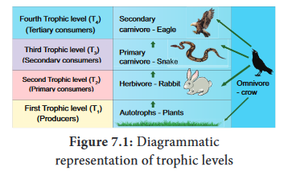
Herbivores are eaten by carnivores, which occupy the third trophic level (T3). They are also called secondary consumers or primary carnivores. Carnivores are eaten by the other carnivores, which occupy the fourth trophic level (T4). They are called the tertiary consumers or secondary carnivores. Some organisms which eat both plants and animals are called as omnivores (Crow). Such organisms may occupy more than one trophic level in the food chain.
The transfer of energy in an ecosystem between trophic levels can be termed as energy flow. It is the key function in an ecosystem. Part of the energy obtained from the sun by producers is transferred to consumers and decomposers through each trophic level, while some amount of energy is dissipated in the form of heat. Energy flow is always unidirectional in an ecosystem.
Laws of thermodynamics
The storage and loss of energy in an ecosystem is based on two basic laws of thermo-dynamics.
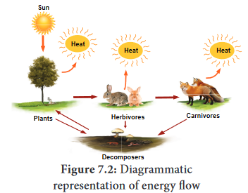
one. First law of thermodynamics
It states that energy can be transmitted from one system to another in various forms. Energy cannot be destroyed or created. But it can be transformed from one form to another. As a result, the quantity of energy present in the universe is constant.
Example: In photosynthesis, the product of starch (chemical energy) is formed by the combination of reactants (chlorophyll, Water, Carbon dioxide). The energy stored in starch is acquired from the external sources (light energy) and so there is no gain or loss in total energy. Here light energy is converted into chemical energy.
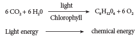
ii. Second law of thermodynamics
It states that energy transformation results in the reduction of the free energy of the system. Usually, energy transformation cannot be 100% efficient. As energy is transferred from one organism to another in the form of food, a portion of it is stored as energy in living tissue, whereas a large part of energy is dissipated as heat through respiration. The transfer of energy is irreversible natural process.
Example: Ten percent law
Ten percent law
This law was proposed by Lindeman (1942). It states that during transfer of food energy from one trophic level to other, only about 10% stored at every level and rest of them (90%) is lost in respiration, decomposition and in the form of heat. Hence, the law is called ten percent law.
![Here is a picture 7.3 of the Ten percent Law. It gives us an idea of how the Joule reduced from the Sunlight to the Tertiary consumer. From Sunlight the plants get 1000 joules but when they produce food it is reduced to 100 joule so 900 joules loss. Then when the Primary consumers consume the plants they produce 10 joules only here 90 joules loss, next secondary consumers produce 1 joules only 9 joules loss tertiary consumers only .1 joule only 0.9 joule loss. The description for the above and below image begins](images/image237.png)
Example: It is shown that of the 1000 Joules of Solar energy trapped by producers. 100 Joules of energy is stored as chemical energy through photosynthesis. The remaining 900 Joules would be lost in the environment. In the next trophic level herbivores, which feed on producers get only 10 Joules of energy and the remaining 90 Joules is lost in the environment. Likewise, in the next trophic level, carnivores, which eat herbivores store only 1 Joule of energy and the remaining 9 Joules is dissipated. Finally, the carnivores are eaten by tertiary consumers which store only 0.1 Joule of energy and the remaining 0.9 Joule is lost in the environment. Thus, at the successive trophic level, only ten percent energy is stored.
The movement of energy from producers up to top carnivores is known as food chain, that is in any food chain, energy flows from producers to primary consumers, then from primary consumers to secondary consumers, and finally secondary consumers to tertiary consumers. Hence, it shows linear network links. Generally, there are two types of food chain,
1. Grazing food chain
Main source of energy for the grazing food chain is the Sun. It begins with the first link,producers (plants). The second link in the food chain is primary consumers (mouse) which get their food from producers. The third link in the food chain is secondary consumers (snake) which get their food from primary consumers. Fourth link in the food chain is tertiary consumers (eagle) which get their food from secondary consumers.
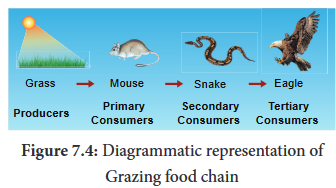
2. Detritus food chain:
This type of food chain begins with dead organic matter which is an important source of energy. A large amount of organic matter is derived from the dead plants, animals and their excreta. This type of food chain is present in all ecosystems.
The transfer of energy from the dead organic matter, is transferred through a series of organisms called detritus consumers (detritivores)- small carnivores - large (top) carnivores with repeated eating and being eaten respectively. This is called the detritus food chain.
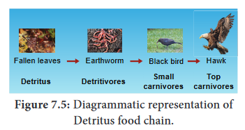
The inter-locking pattern of a number of food chain form a web like arrangement called food web. It is the basic unit of an ecosystem, to maintain its stability in nature. Which its also called homeostasis.
Example: In a grazing food chain of a grass land, in the absence of a rabbit, a mouse may also eat food grains. The mouse in turn may be eaten directly by a hawk or by a snake and the snake may be directly eaten by hawks.
Hence, this interlocking pattern of food chains is the food web and the species of an ecosystem may remain balanced to each other by some sort of natural check.
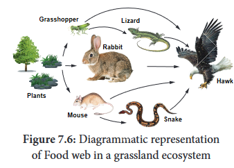
Significance of food web
Graphic representation of the trophic structure and function at successive trophic levels of an ecosystem is called ecological pyramids. The concept of ecological pyramids was introduced by Charles Elton (1927). Thus, they are also called as Eltonian pyramids. There are three types:
1. Pyramid of number
A graphical representation of the number of organisms present at each successive trophic level in an ecosystem is called pyramids of number. There are three different shapes of pyramids upright, spindle and inverted.
There is a gradual decrease in the number of organisms in each trophic level from producers to primary consumers and then to secondary consumers, and finally to tertiary consumers. Therefore, pyramids of number in grassland and pond ecosystem are always upright.
In a forest ecosystem the pyramid of number is somewhat different in shape, it is because the base (T1) of the pyramid occupies large sized trees (Producer) which are lesser in number. Herbivores (T2) (Fruit eating birds, elephant, deer) occupying second trophic level, are more in number than the producers. In final trophic level (T4), tertiary consumers (lion) are lesser in number than the secondary consumer (T3) (fox and snake). Therefore, the pyramid of number in forest ecosystem looks spindle shaped.
The pyramid of number in a parasite ecosystem is always inverted, because it starts with a single tree. Therefore, there is gradual increase in the number of organisms in successive tropic levels from producer to tertiary consumers.
![figure 7.6 showing that,1.A set of four pictures with pyramids of numbers in different types of ecosystems. Picture A represents the Grassland ecosystem. Here the pyramid is always upright. Producer – at the base large in number T1, but the number decreases as the pyramid goes up. Less Herbivores T2, more less secondary consumers T3, least Tertiary consumersT4 2.Pond ecosystem in picture B. Here also a gradual decrease in the number of consumers. Aquatic plants T1, small fishes T2 less number, bigger fishes T3 more less, biggest fish like shark and whale T4 least in number 3.Picture C represents the forest ecosystem. Spindle shaped. Bigger trees as producer but lesser in number T1, herbivores very large in numbers T2, then secondary consumers lesser than T2 is T3, big cats like lion very less in number 4.Parasitic ecosystem is given in picture D. Inverted diagram. The producer starts with a single tree as the pyramid goes up the consumers are increasing in Number in successive trophic level T1<T2<T3<T4. The description for the above and below image begins](images/image300.png)
2.Pyramid of biomass
A graphical representation of the amount of organic material (biomass) present at each successive trophic level in an ecosystem is called pyramid of biomass.
In grassland and forest ecosystems, there is a gradual decrease in biomass of organisms at successive trophic levels from producers to top carnivores (Tertiary consumer). Therefore, these two ecosystems show pyramids as upright pyramids of biomass.
However, in pond ecosystem, the bottom of the pyramid is occupied by the producers, which comprise very small organisms possessing the least biomass and so, the value gradually increases towards the tip of the pyramid. Therefore, the pyramid of biomass is always inverted in shape.
![figure 7.6 showing that, 1.Three pictures of pyramids of biomass (dry weight per unit area) in different ecosystems are given in the following pictures. Picture A represents the Grassland ecosystem. Here the pyramid is upright because there is a gradual decrease in biomass at successive trophic levels T1>T2>T3>T4 2.Picture B represents the forest ecosystem. Here also the pyramid is upright, that is there is a gradual decrease of biomass in the successive level. T1>T2>T3>T4 3.The picture C there is pond ecosystem. The pyramid is inverted because the producer possessing least biomass and the value increases upwards.T1<T2<T3<T4. The description for the above and below image begins](images/image299.png)
3. Pyramid of energy
A graphical representation of energy flow at each successive trophic level in an ecosystem is called pyramid of energy. The bottom of the pyramid of energy is occupied by the producers. There is a gradual decrease in energy transfer at successive tropic levels from producers to the upper levels. Therefore, the pyramid of energy is always upright.
![figure 7.9 showing that, 1.Three pictures of pyramids of biomass (dry weight per unit area) in different ecosystems are given in the following pictures. Picture A represents the Grassland ecosystem. Here the pyramid is upright because there is a gradual decrease in biomass at successive trophic levels T1>T2>T3>T4 2.Picture B represents the forest ecosystem. Here also the pyramid is upright, that is there is a gradual decrease of biomass in the successive level. T1>T2>T3>T4 3.The picture C there is pond ecosystem. The pyramid is inverted because the producer possessing least biomass and the value increases upwards.T1<T2<T3<T4. The description for the above and below image begins](images/image281.png)
Decomposition is a process in which the detritus (dead plants, animals and their excreta) are broken down in to simple organic matter by the decomposers. It is an essential process for recycling and balancing the nutrient pool in an ecosystem.
Nature of decomposition
The process of decomposition varies based on the nature of the organic compounds, that is some of the compounds like carbohydrate, fat and protein are decomposed rapidly than the cellulose, lignin, chitin, hair and bone.
![This picture 7.10 is about the process of decomposition and cycling nutrients. How the plants, dead animals and their excreta changes into nutrients through the process of decomposition. All the dead plants and animals fragmented by senescence or detritivores (fungi,bacteria or earthworm). Then the decomposers produce essence which break down complex organic and inorganic materials into simpler ones, this simpler ones reaches the lower layer of soil called leaching, then humification simplified detritus into dark coloured into humus here the microbes release inorganic nutrients called mineralisation which is again absorbed by the plant thus complete the cycle](images/image280.png)
Mechanism of decomposition
Decomposition is a step wise process of degradation mediated by enzymatic reactions. Detritus acts as a raw material for decomposition. It occurs in the following steps.
a. Fragmentation - The breaking down of detritus into smaller particles by detritivores like bacteria, fungi and earth worm is known as fragmentation. These detritivores secrete certain substances to enhance the fragmentation process and increase the surface area of detritus particles.
b. Catabolism - The decomposers produce some extracellular enzymes in their surroundings to break down complex organic and inorganic compounds in to simpler ones. This is called catabolism
c. Leaching or Eluviation - The movement of decomposed, water soluble organic and inorganic compounds from the surface to the lower layer of soil or the carrying away of the same by water is called leaching or eluviation.
d. Humification - It is a process by which simplified detritus is changed into dark coloured amorphous substance called humus. It is highly resistant to microbial action; therefore, decomposition is very slow. It is the reservoir of nutrients.
e. Mineralisation - Some microbes are involved in the release of inorganic nutrients from the humus of the soil, such process is called mineralisation.
Factors affecting decomposition
Decomposition is affected by climatic factors like temperature, soil moisture, soil pH, oxygen and also the chemical quality of detritus.
Exchange of nutrients between organisms and their environment is one of the essential aspects of an ecosystem. All organisms require nutrients for their growth, development, maintenance and reproduction. Circulation of nutrients within the ecosystem or biosphere is known as biogeochemical cycles and also called as ‘cycling of materials.’ There are two basic types,
1. Gaseous cycle – It includes atmospheric Oxygen, Carbon and Nitrogen cycles.
2. Sedimentary cycle – It includes the cycles of Phosphorus, Sulphur and Calcium - Which are present as sediments of earth.
Many of the cycles mentioned above are studied by you in previous classes. Therefore, in this chapter, only the carbon and phosphorous cycles are explained.
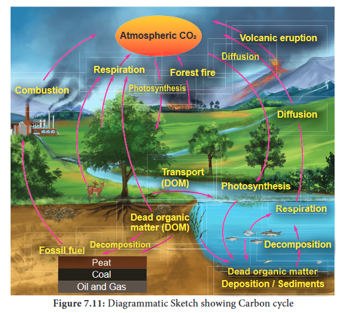
Carbon cycle
The circulation of carbon between organisms and environment is known as the carbon cycle. Carbon is an inevitable part of all biomolecules and is substantially impacted by the change in global climate. Cycling of carbon between organisms and atmosphere is a consequence of two reciprocal processes of photosynthesis and respiration. The releasing of carbon in the atmosphere increases due to burning of fossile fuels, deforestration, forest fire, volcanic eruption and decomposition of dead organic matters. The details of carbon cycle are given in the figure 7.11..
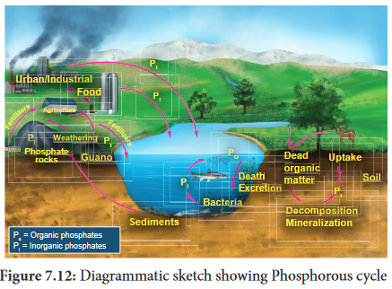
Phosphorus cycle
It is a type of sedimentary cycle. Already we know that phosphorus is found in the biomolecules like DNA, RNA, ATP, NADP and phospholipid molecules of living organisms. Phosphorus is not abundant in the biosphere, whereas a bulk quantity of phosphorus is present in rock deposits, marine sediments and guano. It is released from these deposits by weathering.
Biosphere consists of different types of ecosystems, which are as follows:
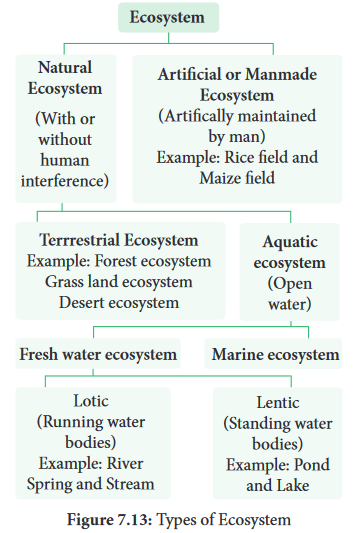
Though there are many types of ecosystems as charted above. Only the pond ecosystem is detailed below.
Structure of Pond ecosystem
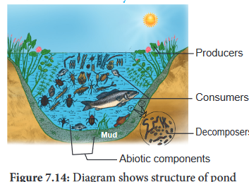
It is a classic example for natural, aquatic, freshwater, lentic type of ecosystem. It helps us to understand the structure and function of an ecosystem. When rain water gathers in a shallow area, gradually over a period of time, different kinds of organisms (microbes, plants, animals) become part of this ecosystem. This pond ecosystem is a self-sustaining and self-regulatory fresh water ecosystem, which shows a complex interaction between the abiotic and biotic components in it.
Box item: Activity
Collect few living and nonliving components from any water body found nearby.
Abiotic components
A pond ecosystem consists of dissolved inorganic (CO2, O2, Ca, N, Phosphate) and organic substances (amino acids and humic acid) formed from the dead organic matter. The function of pond ecosystem is regulated by few factors like the amount of light, temperature, pH value of water and other climatic conditions.
Biotic components
They constitute the producers, variety of consumers and decomposers (microorganisms).
a. Producers
A variety of phytoplanktons like Oscillatoria, Anabaena, Chlamydomonas, Pandorina Eudorina, Volvox and Diatoms. Filamentous algae such as Ulothrix, Spirogyra, Cladophora and Oedogonium; floating plants Azolla, Salvia, Pistia, Wolffia and Eichhornia; submerged plants Potamogeton and Phragmitis; rooted floating plants Nymphaea and Nelumbo; macrophytes like Typha and Ipomoea, constitute the major producers of a pond ecosystem.
b. Consumers
The animals represent the consumers of a pond ecosystem which include zooplanktons like Paramoecium and Daphnia (primary consumers); benthos (bottom living animals) like mollusces and annelids; secondary consumers like water beetles and frogs; and tertiary consumers (carnivores) like duck, crane and some top carnivores which include large fish, hawk, man, etc.
Box item: Do you know?
Sea grasses and mangroves of Estuarine and coastal ecosystems are the most efficient in carbon sequestration. Hence, these ecosystems are called as “Blue carbon ecosystems”. They are not properly utilized and maintained all over the world although they have rich bioresources potential.
c. Decomposers
They are also called as microconsumers. They help to recycle the nutrients in the ecosystem. These are present in mud water and bottom of the ponds. Example: Bacteria and Fungi. Decomposers perform the process of decomposition in order to enrich the nutrients in the pond ecosystem.
The cycling of nutrients between abiotic and biotic components is evident in the pond ecosystem, making itself self-sufficient and self-regulating.
Box item: Do you know?
Limnology -It is the study of biological, chemical, physical and geological components of inland fresh water aquatic ecosystems (ponds, lakes, exectra.).
Oceanography – It is the study of biological, chemical, physical and geological components of ocean. Stratification of pond ecosystem.
Stratification of pond ecosystem
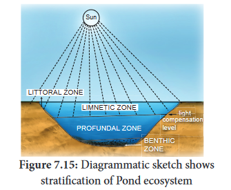
Based on the factors like distance from the shore, penetration of light, depth of water, types of plants and animals, there may be three zones, littoral, limnetic and profundal. The littoral zone, which is closest to the shore with shallow water region, allows easy penetration of light. It is warm and occupied by rooted plant species. The limnetic zone refers the open water of the pond with an effective penetration of light and domination of planktons. The deeper region of a pond below the limnetic zone is called profundal zone with no effective light penetration and predominance of heterotrophs. The bottom zone of a pond is termed benthic and is occupied by a community of organisms called benthos (usually decomposers). The primary productivity through photosynthesis of littoral and limnetic zone is more due to greater penetration of light than the profundal zone.
Ecosystem services are defined as the benefits that people derive from nature. Robert Constanza et al (1927) stated “Ecosystem services are the benefits provided to human, through the transformation of resources (or Environmental assets including land, water, vegetation and atmosphere) into a flow of essential goods and services”.
Study on ecosystem services acts as an effective tool for gaining knowledge on ecosystem benefits and their sustained use. Without such knowledge gain, the fate of any ecosystem will be at stake and the benefits they provide to us in future will become bleak.
Box item: Do you know?
Robert Constanza and his colleagues estimated the value of global ecosystem services based on various parameters. According to them in 1997, the average global value of ecosystems services estimated was US $ 33 trillion a year. The updated estimate for the total global ecosystem services in 2011 is US $ 125 trillion / year, indicating a four-fold increase in ecosystem services from 1997 to 2011.
Box item:
Mangrove ecosystem services
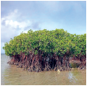
How do anthropogenic activities affect ecosystem services?
Now, we all exploit the ecosystem more than that of our needs. The Millennium Ecosystem Assessment (2005) found that “over the past 50 years, humans have changed the ecosystem more rapidly and extensively than in any comparable period of time in human history, largely to meet rapidly growing demands for food, fresh water, medicine, timber, fiber and fuel.”
The varieties of benefits obtained from the ecosystem are generally categorized into the following four types
Ecosystem service |
Provisoning services |
• Food, fiber and fuel • Genetic resources • Bio-chemicals • Fresh water • Medicines |
Ecosystem service |
Cultural services |
• Spiritual and religious values • Knowledge system • Education and inspiration • Recreation and aesthetic values • Ecotourism |
Ecosystem service |
Supporting services |
• Primary production • Provision of habitat • Nutrient cycling • Soil formation and retention • Production of atmospheric oxygen • Water cycling |
Ecosystem service |
Regulating services |
• Invasion resistance • Herbivory pollination • Seed dispersal • Climate regulation • Pest regulation • Disease regulation • Erosion regulation • Water purification • Natural hazard protection |
Generally, the following human activities disturb or re-engineer an ecosystem every day.
• Habitat destruction
• Deforestation and over grazing
• Erosion of soils
• Introduction of non-native species
• Over harvesting of plant material
• Pollution of land, water and air
• Run off pesticides, fertilizers and animal wastes
Box item: Do you know?
Ecosystem resilience Ecosystem is damaged by disturbances from f ire, flood, predation, infection, drought, etc., removing a great amount of biomasss. However, ecosystem is endowed with the ability to resist the damage and recover quickly. This ability of ecosystem is called ecosystem resilience or ecosystem robustness.
How to protect the ecosystem?
It is a practice of protecting ecosystem at individual, organisational and governmental levels for the benefits of both nature and humans. Threats to ecosystems are many, like adverse human activities, global warming, pollution, etc. Hence, if we change our everyday life style, we can help to protect the planet and its ecosystem.
“If we fail to protect environment, we will fail to save posterity”.
Therefore, we have to practice the following in our day today life:
Box item: Do you know?
Go green-It refers to the changing of one’s lifestyle for the safety and benefits of the environments (Reduce, Reuse, Recycle) Way to go green and save green
“USE ECOSYSTEM BUT DON’T LOSE ECOSYSTEM; MAKE IT SUSTAINABLE”
It is a process that integrates ecological, socio economic and institutional factors into a comprehensive strategy in order to sustain and enhance the quality of the ecosystem to meet current and future needs.
Ecosystem management emphasis on human role in judicious use of ecosystem and for sustained benefits through minimal human impacts on ecosystems. Environmental degradation and biodiversity loss will result in depletion of natural resources, ultimately affecting the existence of human.
Box item: Do you know?
"By 2025, at least 3.5 billion people, nearly 50% of the world’s population are projected to face water scarcity." – IUCN.
"Forests house approximately 50% of global bio-diversity and at least 300 million people are dependent on forest’s goods and services to sustain their livelihood." – IUCN
Importance of ecosystem management
Box item:
Urban ecosystem restoration model Adayar Poonga is located in Chennai and covers an area around a total of 358 acres of Adayar creek and estuary, of which 58 acres were taken up for eco restoration under the auspices of Government of Tamil Nadu. It is maintained by Chennai Rivers Restoration Trust (CRRT).This was a dumping site previously.
Presently it has 6 species of mangroves, about 170 species of littoral and tropical dry evergreen forests (TDF) which have successfully established as a sustainable ecosystem. Restoration of plants species has brought other associated fauna such as butterflies, birds, reptiles, amphibians and other mammals of the ecosystem.
Currently Adayar Poonga functions as an environmental education Centre for school and college students and the public. The entire area stands as one of the best examples for urban eco restoration in the state of Tamil Nadu.
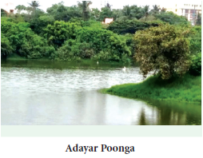
We very often see that forests and lands in our areas are drastically affected by natural calamities (Flood, earthquake) and anthropogenic activities (Fire, over grazing, cutting of trees). Due to these reasons all plants of an area are destroyed and the areas become nude. When we observe this area, over a period of a time we can see that it will be gradually covered by plant community again and become fertile. Such successive replacement of one type of plant community by the other of the same area/ place is known as plant succession. The first invaded plants in a barren area are called pioneers. On the other hand, a series of transitional developments of plant communities one after another in a given area are called seral communities. At the end a final stage and a final plant community gets established which are called as climax and climax community respectively.
Ever since the onset of origin of life, organic evolution and ecological succession are taking place parallelly. Ecological succession is a complex process. There are three types of causes for any ecological succession. They are
a. Initiating causes - Activity of abiotic (light, temperature, water, fire, soil erosion and wind) and biotic factors (competition among organisms) leads to formation of a barren area or destruction of the existing community of an area, initiating primary or secondary succession respectively.
b. Continuing causes - The processes of migration, aggregation, competition, reaction etc, are the continuing causes which lead to change the plant communities and nature of the soil in an area.
c. Stabilizing causes - The stabilization of the plant community in an area is primarly controlled by climatic factors rather than other factors.
The various types of succession have been classified in different ways on the basis of different aspects. These are as follows:
1. Primary succession - The development of plant community in a barren area where no community existed before is called primary succession. The plants which colonize first in a barren area is called pioneer species or primary community or primary colonies. Generally, Primary succession takes a very long time for the occurrence in any region. Example: Microbes, Lichen, Mosses.
2. Secondary succession - The development of a plant community in an area where an already developed community has been destroyed by some natural disturbance (Fire, flood, human activity) is known as secondary succession. Generally, this succession takes less time than the time taken for primary succession.
Example: The forest destroyed by fire and excessive lumbering may be re-occupied by herbs over a period of time.
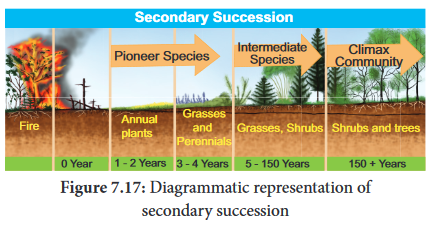
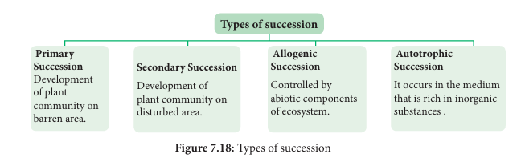
Table 1: Differences between primary and secondary succession
serial number |
Primary succession |
Secondary succession |
serial number 1 |
Developing in a barren area |
Developing in disturbed area |
serial number 2 |
Initiated due to a biological or any other external factors |
Starts due to external factors only |
serial number 3 |
No soil, while primary succession starts |
It starts where soil covers are already present |
serial number 4 |
Pioneer species come from outside environment |
Pioneer species develop from existing environment
|
serial number 5 |
It takes more time to complete |
It takes comparatively less time to complete |
3. Allogenic succession
Allogeneic succession occurs as a result of abiotic factors. The replacement of existing community is caused by other external factors (soil erosion, leaching, etc.,) and not by existing organisms.
Example: In a forest ecosystem soil erosion and leaching alter the nutrient value of the soil leading to the change of vegetation in that area.
4. Autotrophic succession
If the autotrophic organisms like green plants are dominant during the early stages of succession it is called autotrophic succession, this occurs in the habitat which is rich in inorganic substances. Since, green plants dominate in the beginning of this succession, there is a gradual increase in organic matter and subsequently the energy flow in the ecosystem.
There are a number of sequential processes in primary autotrophic succession. They are
1. Nudation - This is the development of a barren area without any form of life. The barren area may be developed due to topographic (soil erosion, wind action), climatic (hails, storm, f ire), and biotic (human activities, epidemics, etc.,) factors.
2. Invasion - If species invade or reach a barren area from any other area it is called invasion. When the seeds, spores or other propagules of plant species reach the barren area, by air, water and various other agent, it is known as migration.
3. Ecesis (Establishment) - After reaching a new area (invasion), the successful establishment of the species, as a result of adjustment with the conditions prevailing in the area, is known as ecesis. If the establishment is complete, the plant will be able to reproduce sexually in that particular area.
4. Aggregation - The successful establishment of species, as a result of reproduction and increase in population of the species than the earlier stage is called aggregation.
5. Competition - It refers to the aggregation of a particular species in an area which leads to inter specific and intraspecific competition among the individuals for water, nutrient,radiant energy, CO2, O2 and space, etc.
6. Reaction - The species occupying a habitat gradually modify the environmental condition, where the existing species community is displaced or replaced by another. This is called reaction. The community which is replaced by another community is called seral community.
7. Stabilization (Climax stage) - The final establishment of plant community is called stabilization. This establishment of a plant community which maintains itself in equilibrium with climax of the area and not replaced by others is known as climax community and the stage is climax stage.
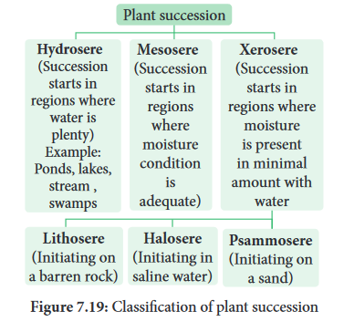
Hydrosere
The succession in a freshwater ecosystem is also referred to as hydrosere. Succession in a pond, begins with colonization of the pioneers like phytoplankton and finally ends with the formation of climax community like forest stage. It includes the following stages Figure 7.20.
1. Phytoplankton stage - It is the first stage of succession consisting of the pioneer community like blue green algae, green algae, diatoms, bacteria, etc., The colonization of these organisms enrich the amount of organic matter and nutrients of pond due to their life activities and death. This favors the development of the next seral stages.
2. Submerged plant stage - As the result of death and decomposition of planktons, silt brought from land by rain water, lead to a loose mud formation at the bottom of the pond. Hence, the rooted submerged hydrophytes begin to appear on the new substratum. Example: Chara, Utricularia, Vallisneria and Hydrilla etc. The death and decay of these plants will build up the substratum of pond to become shallow. Therefore, this habitat now replaces another group of plants which are of floating type.
3. Submerged free-floating stage - During this stage, the depth of the pond will become almost 2-5 feet. Hence, the rooted hydrophytic plants and with floating large leaves start colonising the pond. Example: Rooted floating plants like Nelumbo, Nymphaea and Trapa. Some free-floating species like Azolla, Lemna, Wolffia and Pistia are also present in this stage. By death and decomposition of these plants, further the pond becomes shallower. Due to this reason, floating plant species is gradually replaced by another species which makes new seral stage.
4. Reed-swamp stage - It is also called an amphibious stage. During this stage, rooted f loating plants are replaced by plants which can live successfully in aquatic as well as aerial environment. Example: Typha, Phragmites, Sagittaria and Scirpus etc. At the end of this stage, water level is very much reduced, making it unsuitable for the continuous growth of amphibious plants.
5. Marsh meadow stage - When the pond becomes swallowed due to decreasing water level, species of Cyperaceae and Poaceae such as Carex, Juncus, Cyperus and Eleocharis colonise the area. They form a mat-like vegetation with the help of their much-branched root system. This leads to an absorption and loss of large quantity of water. At the end of this stage, the soil becomes dry and the marshy vegetation disappears gradually and leads to shrub stage.
6. Shrub stage - As the disappearance of marshy vegetation continues, soil becomes dry. Hence, these areas are now invaded by terrestrial plants like shrubs (Salix and Cornus) and trees (Populus and Alnus). These plants absorb large quantity of water and make the habitat dry. Further, the accumulation of humus with a rich flora of microorganisms produces minerals in the soil, ultimately favouring the arrival of new tree species in the area.
7. Forest stage - It is the climax community of hydrosere. A variety of trees invade the area and develop any one of the diverse types of vegetation. Example: Temperate mixed forest (Ulmus, Acer and Quercus), Tropical rain forest (Artocarpus and Cinnamomum) and Tropical deciduous forest (Bamboo and Tectona). In the 7 stages of hydrosere succession, stage1 is occupied by pioneer community, while the stage 7 is occupied by the climax community. The stages 2 to 6 are occupied by seral communities.
![1.Seven pictures show the different stages of hydrosere Picture 1 is the Holoplankton stage. It is the first stage of succession. It has the colonization of pioneer community like blue green algae, algae, bacteria etc 2.Picture 2 is submerged plant stage Plankton and silt brought by rain water forms loose mud at the bottom of the pond where rooted submerged hydrophytes grow. Then the death and decay of these plants will make the pond shallow this habitat replaces another group of floating plants 3.This picture shows the submerged free floating stage of hydrosere. Here rooted and floating plants like lotus started colonising. Their death makes the pond more shallow.4.Reed-swamp stage in this picture. Here floating plants are replaced by amphibious plants which can live successfully in aquatic as well as aerial environments. Here water level is much reduced and make the pond unsuitable for the continous growth of amphibious plants.](images/image174.png)
![1.Marsh meadow stage in this picture. In this stage due to more swallowed pond species like Juncus start to colonise. They form a mat like vegetation with branched roots. This lead to absorption of more water so the soil becomes dry and this leads to shrub stage from shrub stage.2.Shrub stage is presented in the 6th picture. After the disappearance of the marshy stage the soil became dry and the terrestrial plants like shrubs and trees started to invade. As they consume more water the area become more dry but the accumulation of humus with micro organisms and minerals favour the growth of new tree species.3.In the last picture Forest stage is given. It is the climax stage of community. In this stage a variety of trees invade the area and thus develop diverse type of vegetation like temperate mixed forest, tropical rainforest and deciduous forest](images/image175.png)
Lithosere
Lithosere is a type of xerosere initiating on a barren rock surface. The barren rock is devoid of water and organic matter. A barren rock surface gets mineral deposits due to weathering. This results in the colonization of pioneer organisms like crustose lichens. Through a series of successive seral stages, forest stage (Climax community) is achieved finally. These series of stages are given below Figure 7.21.
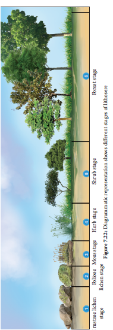
one. Crustose lichen stage - The pioneers like crustose lichens (Rhizocarpon and Lecanora) secrete some acids which enhance the weathering of rock. Due to this continuous process, small particles of rocks are formed, which together with decaying lichen make the first thin layer of soil on rock surface. However, this process is very slow. At the end, these habitats become less fit for existing plants and is gradually replaced by another type of lichens called foliose lichen.
two. Foliose lichen stage - Gradually crustose lichens are replaced by foliose lichen like Parmelia and Dermatocarpon etc. These plants have leaf like structures. They also secrete some acids which further loosen the rocks into small soil particles. This process enhances water retaining capacity of the habitat and causes further accumulation of soil particles and humus. Gradual changes make the area less favourable for existing foliose lichen.
three. Moss stage - When the habitat is changed, the existing foliose lichen starts disappearing and favours the growth of some xerophytic moss like Polytrichum, Tortula and Grimmia. The luxurious growth of moss competes with lichens. Due to the death and decay of mosses, further addition of humus and moisture to the habitat takes place. Therefore, the next seral community tries to replace the moss community.
four. Herb stage - With the gradual disappearance of moss stage, herbaceous plant communities like Aristida, Festuca and Poa, etc., invade the habitat. The extensive growth of these herbs alters the habitat. The decaying leaves, stems, root and other parts of these plants get deposited on the soil surface in the form of humus. It further increases the water holding capacity of soil. These conditions become more suitable for shrubs.
five. Shrub stage - The habitat changes results in the invasion of shrubs like Rhus, Zizyphus, Capparis and dominated by herbaceous plants. The death and decaying of shrubs further enrich the habitat with soil and humus. Therefore, the shrubs are replaced by trees which constitute the climax community.
six. Forest stage - The trees capable of growing in xerophytic condition try to invade the area which was occupied previously by shrubs. Further increasing the humus content of the soil favours the arrival of more trees and vegetation finally become mesophytes. As the trees are deeply rooted and much branched, they absorb more quantity of water and nutrients. After a long interval, a complete harmony is established among the plant communities. The climax stage remains unchanged unless some major environmental changes disturb it.
Of the 6 stages of lithosere succession, stage 1 is occupied by pioneer community and the stage 6 is occupied by climax community. The stages 2 to 5 are occupied by seral communities. Seral stages occurring on the same rock surfaces.
Vegetation refers to the plant cover of an area. Geographically, India is a tropical country and also has strong monsoon climate and differs from other tropical regions of the World. India has four major climatic regions such as wet zone, intermediate zone, dry zone and arid zone, these regions are characterized by different types of natural vegetation. Nature of vegetation is also determined by several factors like altitude, types of plants, animals, climate, soil type, etc. Vegetation in Indian sub-continent is influenced by biotic factors and the existing human culture for a long time. The influence of man on plant formation and distribution is called anthropogenic effect on vegetation.
Tamil Nadu has a rich biodiversity right from the Gulf of Mannar to Western Ghats. Tamil Nadu shares the Western Ghats with states of Kerala, Karnataka, Goa, Maharashtra, Gujarat while Eastern Ghats is shared with the State of Andhra Pradesh. Of the 10 geographic zones in India, Coramandel (or) East Coast and Western Ghats are from Tamil Nadu.
Vegetation of India and Tamil Nadu consists of variety of plant communities and also possesses rich bio-diversity. It is classified in to the following four types, which are explained with reference to their unique characteristics and distribution in India and Tamil Nadu:
Forest Vegetation
Champion and Seth (1968) recognized a total of 16 forest types in India, Whereas 9 types of them in Tamil Nadu.
I) Moist Tropical Forests
It is in the warmer plains. It is characterised by very dense, multi-storeyed diverse trees, shrubs, lianas and scrub jungles. These areas experience a high rainfall and dry climate. These are further classified into the following types on the basis of wetness.
1. Tropical wet evergreen forests
This type is found at an altitude of nearly 1500 m on the slopes of hills and mountains. These are also called tropical rain forests or tropical wet evergreen forests, where annual rainfall is more than 250 cm. Vegetation consists of luxuriantly growing huge trees of more than 45 meter in height, shrubs, lianas and abundant epiphytes. The common plants are Dipterocarpus, Artocarpus, Mangifera, Emblica and Ixora. These forests occur in Andaman and Nicobar Islands, Western Coasts, Aannaaimalai hills and Assam. This type is also found in western ghats of Thirunelveli, Kanyakumari, Annaaimalai Hills of Tamil Nadu
2. Tropical semi-evergreen forests
This type occurs on the slopes of hills and mountain usually up to 1000 meter altitude.The annual rainfall in these forests is between 200 to 250 centimeter. Vegetation consists of luxuriantly growing evergreen species of giant trees and shrubs. The common tree species are Terminalia, Bambusa, Ixora, Artocarpus, Michelia, Eugenia, and Shorea. Orchids, ferns, some grasses,and herbs are also dominant. These forests are found in Western Coasts, Eastern Orissa and Upper Assam. This type is also present in Coimbatore, Tirunelveli and Kanyakumari District of tamilnadu.
3. Tropical moist deciduous forests
The annual rainfall of these forests is 100 to 200 cm with short dry periods. These are spread over an extensive part of the country. Many of the plants shed their leaves in the hot summer. Some are evergreen and semi-evergreen. The common plant species are Terminalia, Grewia, Adina, Melia, Albizzia, Dalbergia and Shorea. The most dominant plants are Tectona and Sal. These are found in Kerala, Karnataka, South Madhya Pradesh, northern parts of Uttar Pradesh, Bihar, Bengal, Orissa and Assam. This type is also present in Kanyakumari, Theni, Gudalur, Dindigul, Madurai and Nilgiris of Tamil Nadu.
4. Littoral and swamp forests
These include beach forests, tidal forests, mangrove forests and fresh water swamp forests.
a. Beach forests
These are found all along the sea coasts and river deltas. These areas have sandy soil which consists of large amount of lime and salts but poor in nitrogen and other mineral nutrients. The rainfall varies from 75 cm to 500 cm with moderate temperature. The common tree species are Casuarina, Borassus, Phoenix, Pandanus, Morinda and Thespesia with many twiners and climbers.
b. Tidal or mangrove forests
Tidal forests grow near the estuaries, swampy margins of islands and along sea coasts. The plants are halophytes characterized by the presence of stilt roots, pneumatophores and viviparous germinations of seed. The common plants are Rhizophora, Avicennia, and Sonneratia. These are found near sea coast,Gujarat, Ganges, delta regions of Mahanadhi, Godavari, Krishna, Sundarbans and Pulicat, Pichavaram, Ramanathapuram of Tamil Nadu.
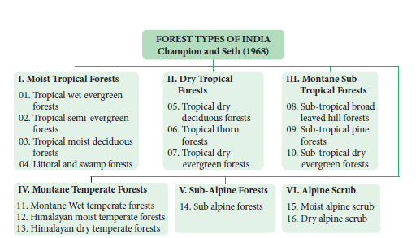
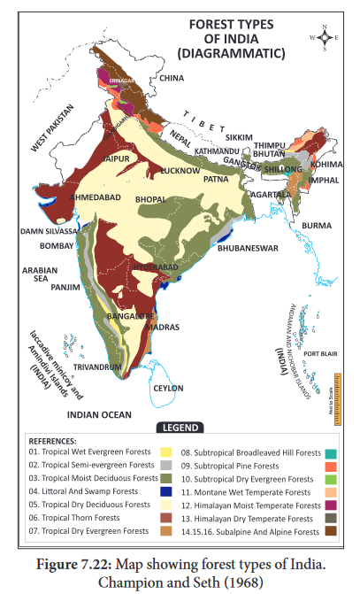
c. Fresh water swamp forests
These forests grow in low lying land areas where rain or river water gets collected for some time. So, the water table is closer to the earth surface. The common plants are Salix, Acer, Ficus and all varieties of grasses and sedges. These forests are found in wetlands of Kanchipuram, Kanniyakumari of Tamil Nadu.
II. Dry Tropical Forests
These are classified into three types: Tropical dry deciduous forests, tropical thorn forests and tropical dry evergreen forests
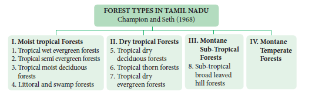
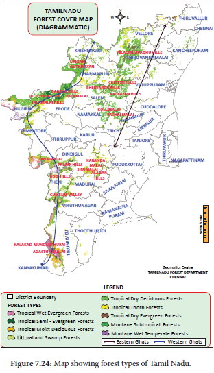
5. Tropical dry deciduous forests
These forests are found at about 400 to 800 meters Mean Sea level (MSL). These forests are found in the areas where annual rainfall is usually low, ranging between 70 and 100 centimetres. The largest forest area of the country is occupied by tropical dry deciduous forest. The dry season is long and most of the trees remain leafless during this season. The forest trees are not dense, and grow up to 10 to 15 meter in height. The common plant species are Dalbergia, Diospyros, Terminalia, Acacia, Chloroxylon,Bauhinia and Zizyphus. Some common Climbers are Combretum, Hiptage: herbs like Abutilon, Achyranthes and Tribulus.These are found in Andhra Pradesh, Punjab, Uttar Pradesh, Bihar, Orissa, Madhya Pradesh and also found in all districts of Tamil Nadu at lower elevations.
6. Tropical thorn forests
These forests extend from plains upto 400 Meter. Occur in the areas where annual rainfall is between 20 and 70 centmeter. The dry season is hot and very long. The vegetation is of open type consisting of small trees (8 to 10 meter length) and thorny or spiny shrubs with a stunted growth. The plants remain leafless for most of the year and many species have latex. In rainy season, there is a luxuriant growth of ephemeral herbs and grass. The most common plant species are Acacia, Cassia, Calotropis, Albizzia, Zizyphus, Dichrostachys, Euphorbia, Capparis, and including unpalatable species. They are found in Karnataka, Andhra Pradesh, Maharashtra, South Punjab, most parts of Rajasthan and part of Gujarat and Thirunelveli in Tamil Nadu.
7. Tropical dry evergreen forests
This type of vegetation is found in areas where annual rainfall is in plenty but the dry season is comparatively longer. The trees are dense, evergreen, short and about 10-to-15-meter height. The common plant species are Manilkara, Walsura, Diospyros and Memexylon These types of forests are found in the eastern parts of Tamil Nadu, East coat of Andhra pradesh. They are also found in all coastal districts in Tamil Nadu from Thiruvallur to Nagapatinum districts.
III. Montane Subtropical Forests
This type of vegetation occurs in the areas with fairly high rainfall but where the climate is cooler than the tropical and warmer than the temperate forests. They are found in the altitude between 1000 meter and 2000 meter. The common plants are Eugenia, Syzygium and Toona are mostly evergreens. Many epiphytes including orchids and ferns are present. These are found in Nilgiri, Mahabaleswar, Assam and Manipur. In Eastern Ghats,it is found in the upper slopes and plateau of shervaroys, Kollimalai and Pachamalai of Tamil Nadu These are further classified into
8. Sub-tropical broad leaved hill forests (Tamil Nadu,Kerala,Karnataka and Assam).
9. Sub-tropical pine forests (Punjab, U.P and a part of Sikkim)
10. Sub-tropical dry evergreen forests (Shivaliks and foot hills of western Himalayas).
IV. Montane Temperate Forests
This type of vegetation occurs where humidity and temperature are comparatively low. These forests are very dense with an extensive growth of grass and evergreen trees of 15 – 45 meters tall. The common plants are Artocarpus, Balanocarpus, Pterocarpus,
Myristica and woody climbers besides ferns and epiphytes. It is also called mountain wet temperate forests. They are found in mountains of Himalayas. These are further classified into
11. Montane wet temperate forests.
12. Himalayan moist temperate forests.
13. Himalayan dry temperate forests.
In Tamil Nadu montane forest is mostly confined to moist and sheltered valleys, glens and hollows as in the Anamalis, Nilgiri and Palani hills tops at above 1000 meter. They are known in Tamil as ‘Sholas’. The common vegetation of sholas are Ilex, Syzygium, Michelia, Eurya and Rhododendron.
V Sub-Alpine Forests
14 Sub-Alpine Forests
This type of vegetation is found in the altitude ranging between 2900 meter to 3500 meter, where snow fall occurs for several weeks in a year with less than 65 centimeter annual rainfall. Hence, strong winds and below 0 degree celsius temperature prevail for greater part of the year. The common tree species are Abies, Pinus, Betula, Quercus, Salix, Rhododendron with plenty of epiphytic orchids, mosses and lichens. They occur in Himalayas from Ladakh in the West to Arunachal in the East Bengal, Uttar Pradesh, Assam, Jammu and Kashmir.
VI Alpine - Scrub
This type of vegetation is found in the Himalayas at an altitude ranging from 3600 m to 4900 m. The height of the trees decreases with increasing altitudes. The common plants are small sized plants such as Sedum, Primula, Saxifraga, Rhododendron, Juniperus and with many types of lichens. These are further classified into
15. Moist alpine scrubs
16. Dry alpine scrubs
2. Grass land vegetation
Grassland refers to the vegetation community predominated by graminoids (that is grass and grass like plants). These are found in the altitude ranging from 150 to 2000 meter and above mean sea level. The major plant families of the plants are Poaceae, Cyperaceae, Fabaceae, Gentianaceae and Asteraceae are common in this type of vegetation. The grass land not only comprises plants but also serves as habitats to a variety of micro and macro fauna. Based on the range of altitude, grasslands are categorized into: low altitude grasslands and high-altitude grasslands.
Box item: Do you know?
Grasslands created and maintained by human are called anthropogenic grasslands.
a. Low altitude grasslands
This type of grasslands are found at an altitude upto 1000 meter. The common plant species are Halopyrum, Wild Saccharum, Arundinella, Heteropogon and Chrysopogon. These types of grasslands are spread over coastal areas, riverline and alluvial areas of Deccan plateau, Chota Nagpur plateau, Gangetic, Brahmaputra valley and Eastern Ghats. In Tamil Nadu, these are found in the Eastern Ghats. These are scattered and intermixed with local forests. They are exposed to considerable biotic interference. Fire is common during dry months.
b. Higher altitude grasslands
This type of grasslands are found in altitude above 1000 meter. The common plants species are Chrysopogon, Arundinella, Andropogon, Heteropogon, Cymbopogon, Imperata, Festuca, and Agrostis. It is spread over the southern slopes of Himalayas, sub-Himalayan ranges, Nagaland, Himachal Pradesh and Western ghats.
In Tamil Nadu, these grasslands are found in higher regions of western ghats and are found between the sholas forest patches that occur in the depressions and furrows created by water courses flowing in these rolling downs are called as rolling grassland and also called shola grassland. It shows different types of vegetation like grasses, herbs, few shrubs and stunted trees.
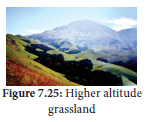
Box item: Do you know?
Existence of two climax communities under the influence of same climatic conditions are found in higher mountain hill tops, above 7000 feet MSL (Mean Sea level) of Nilgiris. Example: Sholas and grasslands.
3. Riparian Vegetation
This type of vegetation is located along streams and rivers. The most common species are, Terminalia, Diospyros, Salix, Ficus and grasses. They are found on the banks of Godavari, Krishna, Ganga, Brahmaputria, Narmadha Yamuna and riverbeds of Cauvery and Thamirabharani in Tamil Nadu.
Box item:Activity
Visit nearby forest and water bodies, observe the species found, describe and then identify the various types of vegetation
4. Aquatic and Semi-Aquatic Vegetation
This type of vegetation is found in lakes, ponds, puddles and marshy places. The common plant species are Nelumbo, Nymphaea, Bacopa, Typha, Pandanus, Cyperus, Aeschynomene, Hydrilla, Aponogeton and Potomogeton. It is found in various parts of Tamil Nadu.
The interaction between biotic and abiotic components in an environment is called ecosystem. Autotrophs and heterotrophs are the producers and consumers respectively. The function of ecosystem refers to creation of energy, flow of energy and cycling of nutrients. The amount of light available for photosynthesis is called Photo synthetically Active Radiation. It is essential for increase in the productivity of ecosystem. The rate of biomass production per unit area /time is called productivity. It is classified as primary productivity, secondary productivity and community productivity. The transfer of energy in an ecosystem can be termed as energy flow. It is explained through the food chain, food web, ecological pyramids (pyramid of number, biomass and energy) and biogeochemical cycle. Cycling of nutrients between abiotic and biotic components is evident in the pond ecosystem, making itself self-sufficient and self-regulating Ecosystem protected for the welfare of posterity is called ecosystem management.
Successive replacement of one type of plant community by the other of the same area/ place is known as plant succession. The first invaded plants in a barren (nude) area are called pioneers (pioneers’ communities). On the other hand, a series of transitional developments of plant communities one after another in a given area are called seral communities. Succession is classified as primary succession, secondary succession, allogeneic succession and autotrophic succession. Plant succession is classified in to hydrosere (Initiating on a water bodies) ,Mesosere and xerosere. Further xerosere is subdivided into Lithosere (Initiating on a barren rock), Halosere and Pasmmosere.
Vegetation refers to the plant cover of an area. Geographically, India and Tamil Nadu show tropical climate. Hence it has rich vegetation (Forest vegetation, Grassland vegetation, Riparian vegetation, Aquatic and semi aquatic vegetation). According to Champion and Seth (1968), forest vegetation of India and Tamil Nadu has been classified in to 16 and 9 types respectively.
Choose the most suitable answer from the given four alternatives and write the option code and the corresponding answer.
1.Which of the following is not a abiotic component of the ecosystem?
a) Bacteria
b) Humus
c) Organic compounds
d) Inorganic compounds
2. Which of the following is / are not a natural ecosystem?
a) Forest ecosystem
b) Rice field
c) Grassland ecosystem
d) Desert ecosystem
3. Pond is a type of
a) forest ecosystem
b) grassland ecosystem
c) marine ecosystem
d) fresh water ecosystem
4. Pond ecosystem is
a) not self-sufficient and self-regulating
b) partially self-sufficient and self-regulating
c) self-sufficient and not self-regulating
d) self-sufficient and self-regulating
5.Profundal zone is predominated by heterotrophs in a pond ecosystem, because of a) with effective light penetration
b) no effective light penetration
c) complete absence of light
d) a and b
6.Solar energy used by green plants for photosynthesis is only
a) two to eight percentage
b) two to ten percentage
c) three to ten percentage
d) two to nine percentage
7. Which of the following ecosystem has the highest primary productivity?
a) Pond ecosystem
b) Lake ecosystem
c) Grassland ecosystem
d) Forest ecosystem
8. Ecosystem consists of
a) decomposers
b) producers
c) consumers
d) all of the above
9. Which one is in descending order of a food chain
a) Producers →Secondary consumers → Primary consumers →Tertiary consumers
b) Tertiary consumers → Primary consumers → Secondary consumers →Producers
c) Tertiary consumers →Secondary consumers →Primary consumers →Producers
d) Tertiary consumers → Producers→ Primary consumers → Secondary consumers
10. Significance of food web is / are
a) it does not maintain stability in nature
b) it shows patterns of energy transfer
c) it explains species interaction
d) b and c
11. The following diagram represents
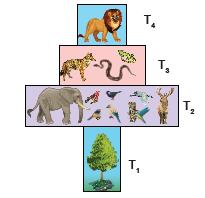
a) pyramid of number in a grassland ecosystem
b) pyramid of number in a pond ecosystem
c) pyramid of number in a forest ecosystem
d) pyramid of biomass in a pond ecosystem
12. Which of the following is / are not the mechanism of decomposition
a) Eluviation
b) Catabolism
c) Anabolism
d) Fragmentation
13. Which of the following is not a sedimentary cycle
a) Nitrogen cycle
b) Phosphorous cycle
c) Sulphur cycle
d) Calcium cycle
14. Which of the following are not regulating services of ecosystem services
one) Genetic resources
ii) Recreation and aesthetic values
iii) Invasion resistance
iv) Climatic regulation
a) one and iii
b) ii and iv
c) one and ii
d) one and iv
15. Productivity of profundal zone will be low. Why?
16. Discuss the gross primary productivity is more efficient than net primary productivity.
17. Pyramid of energy is always upright. Give reasons
18. Write some plants are found in sub alpine forest.
19. What will happen if all producers are removed from ecosystem?
20. Construct the food chain with the following data. Hawk, plants, frog, snake, grasshopper.
21. Name of the food chain which is generally present in all type of ecosystem. Explain and write their significance.
22. Shape of pyramid in a particular ecosystem is always different in shape. Explain with example.
23. Generally human activities are against to the ecosystem, where as you a student how will you help to protect ecosystem?
24. Generally in summer the forest are affected by natural fire. Over a period of time, it recovers itself by the process of successions. Find out the types of succession and explain.
25. Draw a pyramid from following details and explain in brief. Quantities of organisms are given-Hawks-50, plants-1000.rabbit and mouse-250 +250, pythons and lizard- 100 + 50 respectively.
26. Various stages of succession are given bellow. From that rearrange them accordingly. Find out the type of succession and explain in detail.
Reed-swamp stage, phytoplankton stage, shrub stage, submerged plant stage, forest stage, submerged free floating stage, marsh meadow stage.
Ecosystem: Study of interaction between living and non-living components
Standing quality: Total inorganic substances present in any ecosystem at a given time and given area
Standing crops: Amount of living material present in a population at any time.
Biomass: Can be measured as fresh weight or dry weight of organisms
Benthic: Bottom zone of the pond
Trophic: Refers to the position of organisms in food chain
Omnivores: Those eats both plants and animals
Food chain: Refers movement of energy from producers up to top carnivores
Food web: Interlocking pattern of food chain
Pyramid of number: Refers number of organisms in a successive trophic level
Pyramid of biomass: Refers to quantitative relationship of the standing crops
Pyramid of energy: Refers transformation of energy at successive trophic levels
Ten percent law: refers only 10 percent of energy is stored in each successive trophic levels
Bio geo chemical cycle: Exchange of nutrients between organisms and environments
Carbon cycle: Circulation of carbon among organisms and environments
Guano: It is a accumulated excrement of sea birds and bats.
Phosphorus cycle: Circulation of Phosphorus among organisms and environments
Succession: Successive replacement of one type of plant communities by other on barren or disturbed area.
Pioneers: Invaded plants on barren area
Primary succession: Plants colonising on barren area
Secondary succession: Plants colonising on disturbed area.
Climax communities: Final establishment of plant communities which are not replaced by others.
ICT Corner
ECO SYSTEM
Steps
• Type the URL or scan the QR code to open the activity page then Introduction page will open.
• Click on the Learn icon in the introduction page to know in detail.
• Click on the Flashcards icon in the introduction page to know about the topics easily.
• Click on the Test icon to write a quiz test finally it displays the marks we scored.
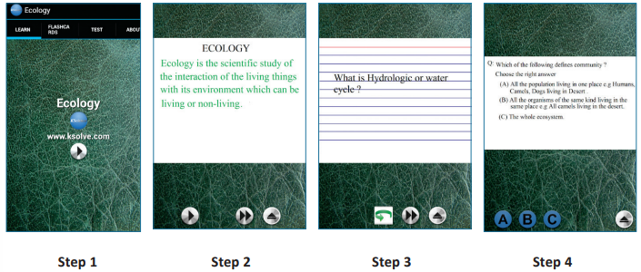
URL: https://play.google.com/store/apps/details?id=com.ksolveecologyfree
* Pictures are indicative only
The learner will be able to,
8.1 Greenhouse effect, and global warming
8.2 Forestry
8.3 Deforestation
8.4 Afforestation
8.5 Agrochemicals and their effects
8.6 Alien invasive species
8.7 Conservation
8.8 Carbon Capture and Storage (CCS)
8.9 Rain water harvesting
8.10 Sewage disposal
8.11 Environmental Impact Assessment (EIA)
After understanding the structure and functions of major ecosystems of the world, now student community should observe and understand environmental problems of their surroundings at local, national and international level. Now we are going to understand some of the environmental issues such as
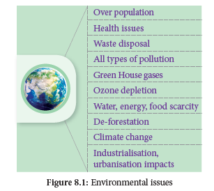
Environmental issues are the problems and harmful effects created by human’s unmindful activity and over utilisation of valuable resources obtained from the nature (environment). Student should understand not only the environmental issues we are facing now, but also find solutions to rectify or reduce these problems.
Countries of the world agree that something needs to be done about these important environmental issues. Many global summits, conferences and conventions are regularly conducted by the United Nations and many steps are taken to minimise human-induced issues by signing agreements with around 150 countries.
Box item: Activity 1
Students may form ‘ECOGROUPS’ and discuss eco-issues of their premises and find solutions to the existing problems like, litter disposal, water stagnation, health and hygiene, greening the campus and its maintenance.
Drastic increase in population resulted in demand for more productivity of food materials, fibres, fuels which led to many environmental issues in agriculture, land use modifications resulting in loss of biodiversity, land degradation, reduction in fresh water availability and also resulting in man-made global warming by greenhouse gases even altering climatic conditions.
Green House Effect is a process by which radiant heat from the sun is captured by gases in the atmosphere that increase the temperature of the earth ultimately. The gases that capture heat are called Green House Gases which include carbon dioxide (C O 2), methane Relative contribution of greenhouse gases (C H 4), Nitrous Oxide (N 2 O) and a variety of manufactured chemicals like chlorofluorocarbon (C F C). Increase in greenhouse gases lead to irreversible changes
in major ecosystems and climate patterns. For example, coral ecosystem is affected by increase in temperature, especially coral bleaching observed in Gulf of Mannar, Tamil Nadu.
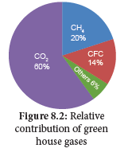
Human activities lead to produce the greenhouse effect by
The increase in mean global temperature (highest in 4000 years) due to increased concentration of greenhouse gases is called global warming.
One of the reasons for this is over population which creates growing need for food, fibre and fuel and considered to be the major cause of global warming.
Box item: Do you know?
Clouds and Dust particles can also produce Green House effect. That is why clouds, dusts and humid nights are warmer than clear dust free dry nights.
CO2 ( (Carbon dioxide)
Methane
Methane is 20 times as effective as carbon dioxide at trapping heat in the atomosphere. Its sources are attributed paddy cultivation, cattle rearing, bacteria in water bodies, fossil fuel production, ocean, non-wetland soils and forest / wild fires.
N2O (Nitrous oxide)
It is naturally produced in Oceans from biological sources of soil and water due to microbial actions and rainforests. Man-made sources include nylon and nitric acid production, use of fertilizers in agriculture, manures, cars with catalytic converter and burning of organic matter.
Box item:
Global Warming Effects on Plants
Ozone layer is a region of Earth’s stratosphere that absorbs most of the Sun’s ultra violet radiation. The ozone layer is also called as the ozone shield and it acts as a protective shield, cutting the ultraviolet radiation emitted by the sun.
Just above the atmosphere there are two layers namely troposphere (the lower layer) and stratosphere (the upper layer). The ozone layer of the troposphere is called bad ozone and the ozone layer of stratosphere is known as good ozone because this layer acts as a shield for absorbing the UV radiations coming from the sun which is harmful for living organisms.
Box item:
Ozone is a colourless gas, reacts readily with air pollutants and cause rubber to crack, hurt plant life, damages lung tissues. But ozone absorbs harmful ultra violet β (uv-β) and UV – α radiation from sunlight.
What is Dobson Unit? DU is the unit of measurement for total ozone. One DU (0.001 atm. cm) is the number of molecules of ozone that would be required to create a layer of pure ozone 0.01 millimetre thick at a temperature of 0° C and a pressure of 1 atmosphere (atm = the air pressure at the surface of earth). Total ozone layer over the earth surface is 0.3 centrimetres (3 mm) thick and is written as 300 DU. The false colour view of total ozone - The purple and blue colours are where there is the least ozone, and the yellows and reds are where there is more ozone.
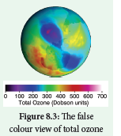
causing DNA damage. The thickness of the ozone column of air from the ground to the top of the atmosphere is measured in terms of Dobson Units.
The ozone shield is being damaged by chemicals released on the Earth’s surface notably the chlorofluorocarbons widely used in refrigeration, aerosols, chemicals used as cleaners in many industries. The decline in the thickness of the ozone layer over restricted area is called Ozone hole.
Box item:
September 16 is WORLD OZONE DAY
Ozone depletion in the stratosphere results in more UV radiations especially UV B radiations (shortwaves). UV B radiation destroys biomolecules (skin ageing) and damages living tissues. UV – C is the most damaging type of UV radiation, but it is completely filtered by the atmosphere (ozone layer). UV – a contribute 95% of UV radiation which causes tanning burning of skin and enhancing skin cancer. Hence the uniform ozone layer is critical for the wellbeing of life on earth.
During 1970’s research findings indicated that man-made chlorofluorocarbons (CFC) reduce and convert ozone molecules in the atmosphere. The threats associated with reduced ozone pushed the issue to the forefront of global climate issues and gained promotion through organisation such as World Meterological Organisation and the United Nations. The Vienna Convention was agreed upon at the Vienna conference of 1985 but entered into force in 1988 provided the frameworks necessary to create regulative measures in the form of the Montreal protocol. The International treaty called the Montreal Protocol (1987) was hel in Canada on substances that deplete ozone layer and the main goal of it is gradually eliminating the production and consumption of ozone depleting substances and to limit their damage on the Earth’s ozone layer.
Clean Development Mechanism (CDM) is defined in the Kyoto protocol (2007) which provides project-based mechanisms with two objectives to prevent dangerous climate change and to reduce greenhouse gas emissions. CDM projects helps the countries to reduce or limit emission and stimulate sustainable development.
An example for CDM project activity, is replacement of conventional electrification projects with solar panels or other energy efficient boilers. Such projects can earn Certified Emission Reduction (CER) with credits / scores, each equivalent to one tonne of CO2, which can be counted towards meeting Kyoto targets.
Box item:
Plant indicators
The presence or absence of certain plants indicate the state of environment by their response. The plant species or plant community acts as a measure of environmental conditions, it is referred as biological indicators or phyto indicators or plant indicators. Examples
series number |
Plants |
Indicator for |
series number 1. |
Lichens, Ficus, Pinus, Rose |
Sulfur dioxide (SO2) pollution |
series number 2. |
Petunia,Chrysanthemum |
Nitrate |
series number 3. |
Gladiolus |
Flouride pollution |
series number 4. |
Robinia pseudoacacia (Black locust tree) |
Indicator of heavy metal contamination |
The main ozone depletion effects are:
• Increases the incidence of cataract, throat and lung irritation and aggravation of asthma or emphysema, skin cancer and diminishing the functioning of immune system in human beings.
• Juvenile mortality of animals.
• Increased incidence of mutations.
• In plants, photosynthetic chemicals will be affected and therefore photosynthesis will be inhibited. Decreased photosynthesis will result in increased atmospheric CO2 resulting in global warming and also shortage of food leading to food crisis.
• Increase in temperature changes the climate and rainfall pattern which may result in f lood / drought, sea water rise, imbalance in ecosystems affecting flora and fauna.
Agroforestry is an integration of trees, crops and livestock on the same plot of land. The main objective is on the interaction among them. Example: intercropping of two or more crops between different species of trees and shrubs, which results in higher yielding and reducing the operation costs. This intentional combination of agriculture and forestry has varied benefits including increased bio-diversity and reduced erosion.
Some of the major species cultivated in commercial Agroforestry include Casuarina, Eucalyptus, Malai Vembu, Teak and Kadamba trees which were among the 20 species identified as commercial timber. They are of great importance to wood-based industries.
Benefits of agro forestry
Rehabilitation of degraded forests and recreation forestry
The production of woody plants combined with pasture is referred to as the silvopasture system. The trees and shrubs may be used primarily to produce fodder for livestock or they may be grown for timber, fuel wood and fruit or to improve the soil. This system is classified into following categories.
1. Protein Bank: In this various multipurpose tree are planted in and around farm lands and range lands mainly for fodder production. Example: Acacia nilotica, Albizzia lebbek, Azadirachta indica, Gliricidia sepium, Sesbania grandiflora.
2. Livefence of fodder trees and hedges: Various fodder trees and hedges are planted as live fence to protect the property from stray animals or other biotic influences.
Example: Gliricidia sepium, Sesbania grandiflora, Erythrina species.., Acacia species.
It refers to the sustainable management of forests by local communities with a goal of climate carbon sequestration, change mitigation, depollution, deforestation, forest restoration and providing indirect employment opportunity for the youth. Social forestry refers to the management of forests and afforestation on barren lands with the purpose of helping the environmental, social and rural development and benefits. Forestry programme is done for the benefit of people and participation of the people. Trees grown outside forests by government and public organisation reduce the pressure on forests.
In order to encourage tree cultivation outside forests, Tree cultivation in Private Lands was implemented in the state from 2007 to 2008 to 2011to 2012. It was implemented by carrying out block planting and inter-crop planting with profitable tree species like Teak, Casuarina, Ailanthus, Silver Oak, etc. in the farming lands and by a free supply of profitable tree species for planting in the bunds. The Tank foreshore plantations have been a major source of firewood in Tamil Nadu. The 32 Forestry extension centres provide technical support for tree growing in rural areas in Tamil Nadu. These centres provide quality tree seedlings like thorn / thornless bamboo, casuarinas, teak, neem, Melia dubia, grafted tamarind and nelli, etc. in private lands and creating awareness among students by training / camps.
Deforestation is one of the major contributors to enhance greenhouse effect and global warming. The conversion of forested area into a non-forested area is known as deforestation. Forests provide us many benefits including goods such as timber, paper, medicine and industrial products. The causes are
Effects of deforestation
Afforestation is planting of trees where there was no previous tree coverage and the conversion of non-forested lands into forests by planting suitable trees to retrieve the vegetation. Example: Slopes of dams afforested to reduce water runoff, erosion and siltation. It can also provide a range of environmental services including carbon sequestration, water retention.
Box item:
The Man who Singles Handedly Created a Dense Forest
Jadav "Molai" Payeng (born 1963) is an environmental activist has single-handedly planted a forest in the middle of a barren wasteland. This Forest Man of India has transformed the world’s largest river island, Majuli, located on one of India’s major rivers, the Brahmaputra, into a dense forest, home to rhinos, deers, elephants, tigers and birds. And today his forest is larger than Central Park.
Former vice-chancellor of Jawahar Lal Nehru University, Sudhir Kumar Sopory named Jadav Payeng as Forest Man of India, in the month of October 2013. He was honoured at the Indian Institute of Forest Management during their annual event ‘Coalescence’. In 2015, he was honoured with Padma Shri, the fourth highest civilian award in India. He received honorary doctorate degree from Assam Agricultural University and Kaziranga University for his contributions.
Afforestation Objectives
Achievements:
Box item:
Case study: Tamil Nadu Afforestation Project (TAP)
With an aim of ecological restoration and biological up-gradation of degraded forests and other lands, the government of Tamil Nadu launched the project in 2 phases Tap one (1997 to 2005). It aimed to uplift the quality and life of villagers abutting forest areas and to resolve the degraded forests in Tamil Nadu. This is a massive Joint Forest Management Programme. TAP II (2005 to 2013) had 2 main objectives.
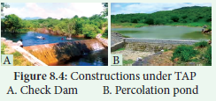
An agro-chemical is useful in managing agriculture or in farming area which is one of the major issues of the environment. Agro-chemicals includes fertilizers, liming and acidifying agents, soil conditioners, pesticides and chemicals used in animal husbandry, such as antibiotics and hormones.
Excessive use of fertilizers and pesticides leads to the contamination of groundwater and makes it non potable, ultimately affecting the soil fertility. Most of the chemical fertilizers contain varying amounts of nitrogen, phosphorous, potassium and nutrients that plants need to grow. Soil acidity influences C and N cycles by affecting soil microbes, also greenhouse gas flux in soils and affect bioavailability of N P S [nitrogen, phosphorus, sulphur] like major nutrients. This makes the soil too acidic or alkaline so that it becomes difficult for the plants to survive. These residues and synthetic chemicals like DDT (dichloro diphenyl trichloroethane) and PCBs (polychlorinated biphenyls) cause nutrient and pH imbalance and quality reduction of agricultural produce. This problem can be minimised by sustainable agriculture. Pesticides increase incidence of brain, blood cancer and neurotoxicity, Parkinson like symptoms, infertility, birth defects, reproductive and behavioural disorders.
Box item: Do you know?
Invasion of alien or introduced species disrupts ecosystem processes, threaten biodiversity,
reduce native herbs, thus reducing the ecosystem services (benefits). During eradication of these species, the chemicals used increases greenhouse gases. Slowly they alter ecosystem, micro climate and nature of soil and make it unsuitable for native species and create human health problems like allergy, thus resulting in local environmental degradation and loss of important local species.
According to World Conservation Union invasive alien species are the second most significant threat to bio-diversity after habitat loss.
What is invasive species?
A non-native species to the ecosystem or country under consideration that spreads naturally, interferes with the biology and existence of native species, poses a serious threat to the ecosystem and causes economic loss.
It is established that a number of invasive species are accidental introduction through ports via air or sea. Some research organisations import germplasm of wild varieties through which also it gets introduced. Alien species with edible fruits are usually spread by birds.
Invasive species are fast growing and are more adapted. They alter the soil system by changing litter quality thereby affecting the soil community, soil fauna and the ecosystem processes.
It has a negative impact on decomposition in the soils by causing stress to the neighbouring native species. Some of the alien species which cause environmental issues are discussed below
It is an invasive weed native to South America. It was introduced as aquatic ornamental plant, which grows faster throughout the year. Its widespread growth is a major cause of biodiversity loss worldwide. It affects the growth of phyto-planktons and finally changing the aquatic ecosystem.
Eichhornia crassipes
It also decreases the oxygen content of the water bodies which leads to eutrophication. It poses a threat to human health because it creates a breeding habitat for disease causing mosquitoes (particularly Anopheles) and snails with its free-floating dense roots and semi submerged leaves. It also blocks sunlight entering deep and the waterways hampering agriculture, fisheries, recreation and hydropower.
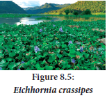
Lantana camara
Identified as one of the worst invasive species by Global Invasive Species Database. It is also an invasive weed native to South America introduced as ornamental plant. It occupies a widely adaptable range of habitats.
This species is spread by birds It exerts allelopathic effect, which reduces the growth of surrounding plants by inhibiting germination and root elongation. Root removal and biocontrol are the best methods to control. Now tribes are trained to use the stem as fibre for making household materials like baskets, furniture and even cots.
Parthenium hysterophorus
Parthenium hysterophorus native to South America introduced accidently into many regions of the world along with imported food grains. It is a harmful weed in the forest which suppresses the growth of native species and reduces the availability of fodder for animals It infests pastures and farmland causing often loss of yield. The plant produces allelopathic chemicals that suppress crop and native plants and its pollen causes allergic rhinitis and asthma, dermatitis in humanbeing.
Prosopis juliflora
Prosopis juliflora invasive species native to Mexico and South America. It was first introduced in Gujarat to counter desertification and later on in Andhra Pradesh, Tamil Nadu as a source of firewood. It is an aggressive coloniser and as a consequence the habitats are rapidly covered by this species. Its invasion reduced the cover of native medicinal herbaceous species. It is used to arrest wind erosion and stabilize sand dunes on coastal and desert areas. It can absorb hazardous chemicals from soil and it is the main source of charcoal.
India due to its topography, geology and climate patterns has diverse life forms. Now this huge diversity is under threat due to many environmental issues for this conservation becomes an important tool by which we can reduce many species getting lost from our native land. By employing conservation management strategies like germ plasm conservation, in situ, ex-situ, in-vitro methods, the endemic as well as threatened species can be protected.
In-situ conservation
It means conservation and management of genetic resources in their natural habitats. Here the plant or animal species are protected within the existing habitat. Forest trees, medicinal and aromatic plants under threat are conserved by this method. This is carried out by the community or by the State conservation which include wildlife, National Park and Biosphere reserve. The ecologically unique and biodiversity rich regions are legally protected as wildlife sanctuaries, National parks and Biosphere reserves. Megamalai, Sathyamangalam wildlife, Guindy and Periyar National Park, and Western ghats, Nilgiris, Agasthyamalai and Gulf of Mannar are the biosphere reserves of Tamil Nadu.
![Biodiversity conservation is shown in the picture as a flow chart. Two side headings In-situ and Ex-situ . From In-situ to Protected area network, that is divided into community protected and government protected then community to sacred groves and lakes. Government protected flows into Biosphere reserves, National parks, Wildlife Sanctuaries. Ex-suit only three divisions Sacred plants gardens, second one Seed banks, Pollen banks, Field gene, Crypto Preservation and the third one is Botanical gardens, zoological parks and aquaria 2.QR code WKPMQ](images/image101.png)
Sacred groves
These are the patches or grove of cultivated trees which are community protected and are based on strong religious belief systems which usually have a significant religious connotation for protecting community. Each grove is an abode of a deity mostly village God or Goddesses like Aiyanar or Amman. 448 grooves were documented throughout Tamil Nadu, of which 6 groves (Banagudi shola, Thirukurungudi and Udaiyankudikadu, Sittannnavasal, Puthupet and Devadanam) were taken up for detailed floristic and faunistic studies. These groves provide a number of ecosystem services to the neighbourhood like protecting watershed, fodder, medicinal plants and micro climate control.
Ex-situ conservation
It is a method of conservation where species are protected outside their natural environment. This includes establishment of botanical gardens, zoological parks, conservation strategies such as gene, pollen, seed, in-vitro conservation, cryo preservation, seedling, tissue culture and DNA banks. These facilities not only provide housing and care for endangered species, but also have educational and recreational values for the society.
Founded in 1948, the International Union for Conservation of Nature (IUCN) is the world’s oldest environmental organisation with its headquarters at Gland, Switzerland. It is a neutral forum for Governments, NGO’s, Scientists, business and local communities with the aim of developing solution and implementing policies related to the conservation of environment and sustainable development.
IUCN Red List
IUCN Red List categories help us to evaluate the degree of threat and conservation priorities to the flora and fauna It is also a powerful tool for persuading governments to protect threatened species and for most of the plant and animal species world-wide. IUCN has developed protected areas and developed criteria for threatened species. The criteria are as follows.
Box item:
Conservation movement
A community level participation can help in preservation and conservation of our environment. Our environment is a common treasure for all the living organisms on earth. Every individual should be aware of this and participate actively in the programs meant for the conservation of the local environment. Indian history has witnessed many people movements for the protection of environment.
Chipko Movement
The tribal women of Himalayas protested against the exploitation of forests in 1972. Later on it transformed into Chipko Movement by Sundarlal Bahuguna in Mandal village of Chamoli district in 1974. People protested by hugging trees together which were felled by a sports goods company. Main features of Chipko movement were,
• This movement remained non political
• It was a voluntary movement based on Gandhian thought.
• It was concerned with the ecological balance of nature
• Main aim of Chipko movement was to give a slogan of five F’s – Food, Fodder, Fuel, Fibre and Fertilizer, to make the communities self-sufficient in all their basic needs.
Appiko Movement
The famous Chipko Andolen of Uttarakhand in the Himalayas inspired the villagers of Uttar Karnataka to launch a similar movement to save their forests. This movement started in Gubbi Gadde a small village near Sirsi in Karnataka by Panduranga Hegde. This movement started to protest against felling of trees, monoculture, forest policy and deforestation.
IUCN Red List categories
Extint(EX)
Extinction riskA taxon is Extinct when there is no reasonable doubt on the death of the last individual. A taxon is presumed Extinct when exhaustive surveys in known and/or expected habitat, at appropriate times (diurnal, seasonal, annual), throughout its historic range have failed to record an individual. Example: Neuracanthus neesianus.
Extinct in the wild (EW)
A taxon is Extinct in the Wild when it is known only to survive in cultivation, in captivity or as a naturalised population (or populations) well outside the past range. Example: Ginkgo biloba
Critically endangered (CR)
A taxon is Critically Endangered when the best available evidence indicates that it meets any of the criteria A to E for Critically Endangered, and it is therefore considered to be facing an extremely high risk of extinctions in the wild. Example: Euphorbia santapaui, Piper barberi, Syzygium gambelianum.
Endangered (EN)
A taxon is Endangered when the best available evidence indicates that it meets any of the criteria A to E for Endangered, and it is therefore considered to be facing a very high risk of extinction in the wild. Example: Elaeocarpus venustus, Pogostemon nilagricus, Eugenia singampattiana.
Vulnerable (VU)
A taxon is Vulnerable when the best available evidence indicates that it meets any other criteria A to E for Vulnerable, and it is therefore considered to be facing a high risk of extinction in the wild. Example: Dalbergia latifolia, Santalum album, Chloroxylon sweitenia
Near threatened (NT)
A taxon is Near Threatened when it has been evaluated against the criteria but does not qualify for Critically Endangered, Endangered or Vulnerable now, but is close to qualifying for or is likely to qualify for threatened category in the near future.
Least concerned (LC)
A taxon is Least Concerned when it has been evaluated against the criteria and does not qualify for Critically Endangered, Endangered, Vulnerable or Near Threatened, Widespread and abundant taxa are included in this category.
Data deficient (DD)
A taxon is Data Deficient when there is inadequate information to make a direct, or indirect, assessment of the risk of extinction based on its distribution and/or population status.
Not evaluated (NE)
A taxon is Not Evaluated when it has not yet been evaluated against the criteria.
Endemic species are plants and animals that exist only in one geographic region. Species can be endemic to large or small areas of the earth. Some are endemic to a particular continent, some to a part of a continent and others to a single island.
Any species found restricted to a specified geographical area is referred to as ENDEMIC. It may be due to various reasons such as isolation, interspecific interactions, seeds dispersal problems, site specificity and many other environmental and ecological problems. There are 3 Megacentres of endemism and 27 micro endemic centres in India. Approximately one third of Indian flora have been identified as endemic and found restricted and distributed in three major phytogeographical regions of india, that is Indian Himalayas, Peninsular India and Andaman nicobar islands. Peninsular India, especially Western Ghats has high concentration of endemic plants. Hardwickia binata and Bentinckia condapanna are good examples for endemic plants. A large percentage of Endemic species are herbs and belong to families such as Poaceae. Apiaceae, Asteraceae and Orchidaceae.
Majority of endemic species are threatened due to their narrow specific habitat, reduced seed production, low dispersal rate, less viable nature and human interferences. Serious efforts need to be undertaken for their conservation, otherwise these species may become globally extinct.
Endemic plants |
Habit |
Name of endemic centre |
Baccaurea courtallensis |
Tree |
Southern Western Ghats |
Agasthiyamalaia pauciflora |
Tree |
Peninsular india |
Hardwickia binata |
Tree |
Peninsular and northern India |
Bentinckia condappana |
Tree |
Western ghats of Tamil Nadu and kerala |
Nepenthes khasiyana |
Liana |
Khasi hills, Meghalaya |
Table 1: Endemic plants
Carbon capture and storage is a technology of capturing carbon dioxide and injects it deep into the underground rocks to a depth of 1 km or more and it is an approach to mitigate global warming by capturing C O 2 from large point sources such as industries and power plants subsequently storing it instead of releasing it into the atmosphere. Various safe sites have been selected for permanent storage in various deep geological formations, liquid storage in the Ocean and solid storage by reduction of CO2 with metal oxide to produce stable carbonates. It is also known as Geological sequestration which involves injecting CO2 directly into the underground geological formations (such as declining oil fields, gas fields saline aquifers and unmineable coal have been suggested as storage sites).
Box item:
Carbon Sink
Any system having the capacity to accumulate more atmospheric carbon during a given time interval than releasing CO2. Example: forest, soil, ocean are natural sinks. Landfills are artificial sinks.
Carbon Sequestration
Carbon sequestration is the process of capturing and storing CO2 which reduces the amount of CO2 in the atmosphere with a goal of reducing global climate change.
Carbon sequestration occurs naturally by plants and in ocean. Terrestrial sequestration is typically accomplished through forest and soil conservation practices that enhance the storage carbon.
As an example, microalgae such as species of Chlorella, Scenedesmus, Chroococcus and Chlamydomonas are used globally for CO2 sequestration. Trees like Eugenia caryophyllata, Tecoma stans, Cinnamomum verum have high capacity and noted to sequester carbon. Macroalgae and marine grasses and mangroves are also having ability to mitigate carbon-di-oxide.
Carbon FootPrint (CFP)
Every human activity leaves a mark just like our footprint. This Carbon footprint is the total amount of greenhouse gases produced by human activities such as agriculture, industries, deforestation, waste disposal, burning fossil fuels directly or indirectly. It can be measured for an individual, family, organisation like industries, state level or national level. It is usually estimated and expressed in equivalent tons of C O2 per year. The burning of fossil fuels releases C O2and other greenhouse gases. In turn these emissions trap solar energy and thus increase the global temperature resulting in ice melting, submerging of low-lying areas and inbalance in nature like cyclones, tsunamis and extreme weather conditions. To reduce the carbon foot print we can follow some practices like
(1) Eating indigenous fruits and products
(2) Reducing use of electronic devices
(3) Reduce travelling
(4) Avoid buying fast and preserved, processed, packed foods.
(5) Plant a garden
(6) Reducing consumption of meat and sea food.
Poultry requires little space, nutrients and less pollution compared cattle farming. (7) reducing use of Laptops (when used for 8 hours, it releases nearly 2 kg. of C O 2 annually) (8) Line drying clothes. (Example: If you buy imported fruit like kiwi, indirectly it increases CFP. How? The fruit has travelled a long distance in shipping or airliner thus emitting tons of C O 2)
Biochar
Biochar is another long-term method to store carbon. To increase plant’s ability to store more carbon, plants are partly burnt such as crop waste, waste woods to become carbon rich slow decomposing substances of material called Biochar. It is a kind of charcoal used as a soil amendment. Biochar is a stable solid, rich in carbon and can endure in soil for thousands of years. Like most charcoal, biochar is made from biomass via pyrolysis. (Heating biomas in low oxygen environment) which arrests wood from complete burning. Biochar thus has the potential to help mitigate climate change via carbon sequestration. Independently, biochar when added to soil can increase soil fertility of acidic soils, increase agricultural productivity, and provide protection against some foliar and soil borne diseases. It is a good method of preventing waste woods and logs from getting decayed and instead we can convert them into biochar thus converting them to carbon storage material.
Structures in Water Supply sources Rainwater harvesting is the accumulation and storage of rain water for reuse in-site rather than allowing it to run off. Rainwater can be collected from rivers, roof tops and the water collected is directed to a deep pit. The water percolates and gets stored in the pit. RWH is a sustainable water management practice implemented not only in urban area but also in agricultural fields, which is an important economic cost-effective method for the future.
Water bodies like lakes, ponds not only provide us a number of environmental benefits but they strengthen our economy as well as our quality of life like health. Lakes as a storage of rain water provide drinking water, improves ground water level and preserve the fresh water bio-diversity and habitat of the area where it occurs.
In terms of services lakes offer sustainable solutions to key issues of water management and climatic influences and benefits like nutrient retention, influencing local rainfall, removal of pollutants, phosphorous and nitrogen and carbon sequestration.
Importance lakes in tamilnadu
Lakes are man-made surface water harvesting systems. They are useful for irrigation, drinking, fishing and recreation purposes. It is the responsibility of the individuals as well as communities collectively to maintain and manage water bodies. Understanding catchment areas help us to halt the degradation of water bodies and protecting it from getting polluted.
Sholavaram Lake:
It is located in Ponneri Taluk of Thiruvallur District. It is one of the rains fed reservoir from where water is drawn for supply to Chennai city. The full capacity of the lake is 65.5 ft. Built in the British era this lake is responsible for treating the guests to water sports too. This lake is rich in varied species off lora and fauna.
Chembarambakkam Lake:
It is located about 25 kilometers from Chennai. This lake is 500 years old. This lake is a rain fed water body which aids the Chennai City in its water supply. A river named Adyar also incepts from this lake which acts as the primary outflow for this reservoir. This lake is spread over an area of 15 square kilometers.
Maduranthakam Lake:
It is located in Kancheepuram district and it is a man-made creation. An ideal spot for an evening picnic, the widespread pristine waters of the lake are an exceptionally calming sight. The full capacity of the reservoir is 23.3ft. Kiliyar is a small river that originates from Madhuranthagam reservoir. It spreads to an area of 2908 acres and was built by Uttama Chola and the boundaries (stretched upto 12960 feet) are strengthened by Britishers with a storing capacity of 690 million cubic feet. Rain water from Cheyyar, Thiruvannamalai and Vandavasi reaches this lake.
Sewage disposal treatment helps to transform raw sewage into an easier manageable waste and to retrieve and reuse treated residual sewage materials. Greenhouse gases like carbon-dioxide, methane, nitrous oxide is produced during sewage treatment which apart from causing the impact on the atmosphere, it also affects the urban ecosystem, aquatic ecosystems. By making use of advanced disposal treatment plants, climate change and pollution can be minimised.
Sewage is waste matter such as faeces or used dirty water from homes and factories, which f lows away through sewers. Sewage treatment is the process of removing contaminants from waste water, primarily from household sewage. Physical, chemical and biological processes are used to remove contaminants and produce treated waste water, that is safer for the environment. Sewage contains large amounts of organic matter and microbes. This cannot be discharged into natural water bodies like rivers and streams directly. Hence sewage is treated in sewage treatment plants (STPs) to make it less polluting. Sewage treatment generally involves three stages, called primary, secondary and tertiary treatment.
Solid waste management
Solid waste refers to all non-liquid wastes which causes health problems and unpleasant living environment leading to pollution. Solid waste management is a term that is used to refer to the process of collecting and treating solid wastes. It is all about how it can be changed and recycled as a valuable resource. Methods of solid waste management includes Landfill, incineration, recovery, recycling, composting, and pyrolysis.
Liquid Waste Management
Liquid waste includes point source and nonpoint source discharges such as storm water and waste water. Examples of liquid waste include wash water from homes, liquids, used for cleaning in industries and waste detergents.
Grey water is the one from municipal waste which contains harmful pathogens. Water coming from domestic equipments other than toilets (bathtub, showers, sinks, and washing machine) is also referred as grey water. Municipal wastes can be detoxified biologically and then recycled. Domestic waste water can be recycled and used for gardening.
Environmental Impact Assessment is an environmental management tool. It helps to regulate and recommend optimal use of natural resources with minimum impact on ecosystem and biotic communities. It is used to predict the environmental consequences of future proposed developmental projects (example: river projects, dams, highway projects) taking into account inter-related socio-economic, cultural and human-health impacts. It reduces environmental stress thus helping to shape the projects that may suit the local environment by ensuring optimal utilization of natural resources and disposal of wastes to avoid environmental degradation.
The benefits of EIA to society
Biodiversity Impact Assessment can be defined as a decision supporting tool to help biodiversity inclusive of development, planning and implementation. It aims at ensuring development proposals which integrate biodiversity considerations. They are legally compliant and include mechanisms for the conservation of bio-diversity resources and provide fair and equitable sharing of the benefits arising from the use of bio-diversity.
Box item:
Biomonitoring
The act of observing and assessing the current state and ongoing changes in ecosystem, biodiversity components, landscape including natural habitats, populations and species. An agricultural drone is an unmanned aerial vehicle applied to farming in order to help increased crop production and monitor crop growth. Agricultural drones let farmers see their fields from the sky. This bird’s eye-view can reveal many issues such as irrigation problems, soil variation and pest and fungal infestations. It is also used for cost effective safe method of spraying pesticides and fertilizers, which proves very easy and non-harmful.
Bio-diversity impacts can be assessed by
GIS is a computer system for capturing, storing, checking and displaying data related to positions on Earth’s surface. Also, to manipulate, analyse, manage and present spacial or geographic data.
AhGPS is a satellite navigation system used to determine the ground position of an object. It is a constellation of approximately 30 well-spaced satellites that orbit the earth and make it possible for the people with ground receivers to pinpoint their geographic location. Some applications in which GPS is currently being used for around the world include Mining, Aviation, Surveying Agricultural and Marine ecosystem.
Importance of GIS
Remote Sensing is the process of detecting and monitoring the physical characteristics of an area by measuring its reflected and emitted radiation at a distance from the targeted area. It is an tool used in conservation practices by giving exact picture and data on identification of even a single tree to large area of vegetation and wild life for classification of land use patterns and studies, identification of biodiversity rich or less areas for futuristic works on conservation and maintenance of various species including commercial crop, medicinal plants and threatened plants.
Specific uses
Box item
Applications of Satellites
Name of the Satellites |
Year of Launch |
Application |
SCATSAT – one |
Sep. 2016 |
Weather forecasting, cyclone prediction and tracking services in India |
INSAT 3DR |
Sep. 2016 |
Disaster management |
CARTOSAT - 2 |
Jan, 2018 |
Earth observation |
GSAT – 6A |
March 2018 |
Communication |
CARTOSAT – 2 (100th Satellite) |
Jan. 2018 |
To watch border surveillance |
Greenhouse effect leads to climate change which results in global warming. Deforestation causes soil erosion, whereas Afforestation helps to restore vegetation and increases ground water table. Agrochemicals like fertilizers, pesticides and runoff from fields cause soil infertility and in turn depletes the growth of plants. Help the government to retrieve the vegetation. Regeneration of trees by Agroforestry is possible with the involvement of community and government. Help to conserve the flora and fauna in their natural habitat and man-made environments like zoological parks and national parks. IUCN is the oldest environmental organisation which protects endemic and threatened species. Mitigation of carbon in the atmosphere done in the form of sequestration. Rain water harvesting is done for improving the ground water table. Importance and location of lakes in Tamil Nadu which aids water supply to the city is a measure of conservation of drinking water. Assessment of Environment and Biodiversity helps to study risk analysis and disaster management. Forest cover is monitored through Remote sensing and GIS.
1. Which of the following would most likely help to slow down the greenhouse effect.
a) Converting tropical forests into grazing land for cattle.
b) Ensuring that all excess paper packaging is buried to ashes.
c) Redesigning landfill dumps to allow methane to be collected.
d) Promoting the use of private rather than public transport.
2. With respect to Eichhornia
Statement A: It drains off oxygen from water and is seen growing in standing water.
Statement B: It is an indigenous species of our country.
a) Statement A is correct and Statement B is wrong.
b) Both Statements A and B are correct.
c) Statement A is correct and Statement B is wrong.
d) Both statements A and B are wrong.
3. Find the wrongly matched pair.
a) Endemism - Species confined to a region and not found anywhere else.
b) Hotspots - Western ghats
c) Ex-situ Conservation - Zoological parks
d) Sacred groves - Santry hills of Rajasthan
e) Alien species of India - Water hyacinth
4. Depletion of which gas in the atmosphere can lead to an increased incidence of skin cancer?
a) Ammonia
b) Methane
c) Nitrous oxide
d) Ozone
5. One greenhouse gas contributes 20% of total global warming and another contributes 60%. These are respectively identified as
a) Nitrous oxide and Carbon dioxide
b) Chlorofluorocarbon and Nitrous oxide
c) Methane and Carbon dioxide
d) Methane and Chlorofluorocarbon
6. One of the chief reasons among the following for the depletion in the number of species making endangered is
a) over hunting and poaching
b) greenhouse effect
c) competition and predation
d) habitat destruction
7. Deforestation means
a) growing plants and trees in an area where there is no forest
b) growing plants and trees in an area where the forest is removed
c) growing plants and trees in a pond
d) removal of plants and trees
8. Deforestation does not lead to
a) Quick nutrient cycling
b) soil erosion
c) alternation of local weather conditions
d) Destruction of natural habitat weather conditions
9. The unit for measuring ozone thickness
a) Joule
b) Kilos
c) Dobson
d) Watt
10.The lake which was built in British era and is near the Indian Army Base
a) Veeranam lake
b) Maduranthagam lake
c) Sholavaram lake
d) Chembrambakkam lake
11. People’s movement for the protection of environment in Sirsi of Karnataka is
a) Chipko movement
b) Amirtha Devi Bishwas movement
c) Appiko movement
d) None of the above
12. The invasive species introduced in India from South America
a) Lantana
b) Prosopis
c) Parthenium
d) Kappaphycus
13.The plants which are grown in silvopasture system are
a) Sesbania and Acacia
b) Solenum and Crotalaria
c) Clitoria and Begonia
d) Teak and sandal
14. IUCN red list categories has developed criteria for threatened species. The criteria ‘C’ refers to
a) Geographic range
b) Quantitiative analysis
c) small population size and decline
d) population reduction
15. What is ozone hole?
16. Give four examples of plants cultivated in commercial agroforestry.
17. What are agrochemicals?
18. Expand CCS.
19. How do forests help in maintaining the climate?
20. How do sacred groves help in the conservation of biodiversity?
21. Which one gas is most abundant out of the four commonest greenhouse gases? Discuss the effect of this gas on the growth of plants?
22. Distinguish between endangered, vulnerable and rare species.
23. Suggest a solution to water crisis and explain its advantages.
24. Explain afforestation with case studies.
25.What are the effects of deforestation and benefits of agroforesty?
Glossary
Algae Blooms: Sudden sprout of algae growth, which can affect the water quality adversely and indicate potentially hazardous changes in local water chemistry.
Atmosphere: A major regional community of plants and animals with similar life forms and environmental conditions.
Biodegradable waste: Organic waste, typically coming from a plant or animal sources, which other living organisms can break done.
Biosphere: The portion of earth and its atmosphere that can support life.
Effluent: Liquid waste such as sewage and liquid waste from industries.
Landfill: A site that is specially designed to dispose of waste and operates with a license granted by the Environmental Protection Agency (EPA).
Oil spill: The harmful release of oil into the environment, usually through water, which is very difficult to clean up and often kills, birds, fish and other wildlife.
Radiation: A form of energy that is transmitted in waves, rays or particles from a natural source such as the sun and the ground or an artificial source such as an X-ray machine.
Radioactive: A materials is said to be radioactive if it emits radiation.
Recycle: To break waste items done into their raw materials, which are then used to remake the original item or to make new items.
Sewage: Liquid waste from communities which may be a mixture of domestic effluent from homes, and liquid waste from industries.
Sustainable development: Development using hand of energy sources in a way that meets the needs of people today without reducing the ability in future generation to meet their own needs.
ICT Corner
Environmental Issues

Steps:
• Type the URL or scan the QR code to open the activity page.
• Click on the satellite it displays the shape and activities of the satellite.
• Click on the Vital Signs to see the global Climate data including surface air
temperature, Carbondioxide, Ozone, etc.,
URL:
https://play.google.com/store/apps/details?id=gov.nasa.jpl.earthnow.activity
URL:
https://play.google.com/store/apps/details?id=gov.nasa.jpl.earthnow.activity
* Pictures are indicative only
The learner will be able to
9.1 Relationship between human and plants
9.2 Domestication of plants
9.3 Origin of agriculture
9.4 Organic agriculture
9.5 Plant breeding
9.6 Conventional plant breeding methods
9.7 Modern plant breeding Techniques
9.8 Seed protection
9.9 Seed storage
Economic botany is the study of the relationship between people and economically important plants. It explores the ways by which humans use plants for food, medicines and other uses. Economic botany intersects many fields including established disciplines such as agronomy, anthropology, archaeology, chemistry, trade and commerce.
From the very early times, human beings have co-existed with plants which played a vital role in their survival. Through a long process of trial and error, our ancestors have selected hundreds of wild plants from the various parts of the world for their specific use. The knowledge of the plants and its applications have led to the development of the humans and their civilization in many ways.
Domestication is the process of bringing a plant species under the control of humans and gradually changing it through careful selection, genetic alteration and handling so that it is more useful to people. The domesticated species are renewable sources that have provided food and other benefits to human.
The possible changes in the plant species due to domestication are listed below;
Archaeological evidence for earliest record of agriculture is found in the fertile crescent region in and around Tigris and Euphrates River valleys, approximately about 12,000 years ago. The earlier Greek and Roman naturalists like Theophrastus, Dioscorides, Pliny the elder and Galen laid down the scientific foundation in understanding origin and domestication of cultivated plants.
Organic farming is an alternative agricultural system which originated early in the twentieth century in reaction to rapidly changing farming practices. It is a production system that sustains the health of the soils, ecosystems and people. It relies on ecological processes, biodiversity and cycles adapted to local conditions rather than the use of inputs with adverse effects.
Biofertilizers are defined as preparations containing living cells or latent cells of efficient strains of microorganisms that help crop plants uptake of nutrients by their interactions in the rhizosphere when applied through seed or soil. Biofertilizers could be also called as microbial cultures, bioinoculants, bacterial inoculants or bacterial fertilizers.
They are efficient in fixing nitrogen, solubilising phosphate and decomposing cellulose. They are designed to improve the soil fertility, plant growth, and also the number and biological activity of beneficial microorganisms in the soil. They are eco-friendly organic agro inputs and are more efficient and cost effective than chemical fertilizers.
Box item: Do you know?
Indian Plant Breeders
a. Dr. M. S. Swaminathan- He is a pioneer mutation breeder.
b. Sir. T.S. Venkataraman - An eminent sugarcane breeder.
c. Dr. B.P. Pal - Famous wheat breeder, developed superior disease resistant varieties of wheat.
d. Dr. K. Ramiah – Eminent rice breeder, developed several high yielding varieties of rice.
e. N.G.P. Rao- An eminent sorghum breeder, developed world's first hybrid of Sorghum (CSH-1).
f. C.T. Patel - Who developed world's first cotton hybrid.
g. Choudhary Ram Dhan-Wheat breeder, who is famous for C-591 variety of wheat, which made Punjab the wheat granary of India.
Serial number |
Groups |
Examples |
A |
N2 fixing Biofertilize |
|
Serial number 1 |
Free-living |
Azotobacter, Clostridium, Anabaena, Nostoc, |
Serial number 2 |
Symbiotic |
Rhizobium, Anabaena azollae |
Serial number 3 |
Associative Symbiotic |
Azospirillum |
B |
P Solubilizing Biofertilizer |
|
Serial number 1 |
Bacteria |
Bacillus subtilis, Pseudomonas striata |
Serial number 2 |
Fung |
Penicillium, Aspergillus |
Serial number 3 |
Arbuscular Mycorrhiza |
Glomus, Scutellospora |
C |
P Mobilizing Biofertilizers |
|
Serial number 1 |
Ectomycorrhiza |
Amanita |
D |
Biofertilizer for Micro nutrients |
|
Serial number 1 |
Silicate and Zinc solubilizers |
Bacillus |
E |
Plant Growth Promoting Rhizobacteria |
|
Serial number 1 |
Pseudomonas |
Pseudomonas fluorescens |
Table 9.1: Classification of Biofertilizers
Rhizobium
Bio-fertilisers containing rhizobium bacteria are called rhizobium bio-fertilizer culture. Symbiotic bacteria that reside inside the root nodules convert the atmospheric nitrogen into a bio available form to the plants. This nitrogen fixing bacterium when applied to the soil undergoes multiplication and fixes the atmospheric nitrogen in the soil. Rhizobium is best suited for the paddy fields which increase the yield by 15-40%.
Azolla
Azolla is a free-floating water fern that fixes the atmospheric nitrogen in association with nitrogen fixing blue green alga Anabaena azollae. It is used as a bio-fertilizer for wetland rice cultivation and is known to contribute 40 to 60 kg/ha/crop. The agronomic potential of Azolla is quite significant particularly for increasing the yield of rice crop, as it quickly decomposes in soil.
Arbuscular mycorrhizae
Arbuscular mycorrhizae (AM) is formed by the symbiotic association between certain phycomycetous fungi and angiosperm roots. They have the ability to dissolve the phosphates found in abundance in the soil.Apart from increasing the availability of phosphorus, AM provides necessary strength to resist disease, germs and unfavourable weather conditions. It also assures water availability.
![Figure 9.4 showing that Benefits of AM colonization given in the picture with an example. The given plant is divided into two parts one with AM and other with non AM. AM ia Arbuscular mycorrhizae is formed by the symbiotic association between certain ascomycetous fungi and angiosperm roots. They have many benefits. If the plant has AM-colonization 1. It has increased resistance to foliar pathogens 2. Increased salt and drought tolerance. 3. Nutrient transfer via AMF 4. Local resistance to root pathogens 5. Increased resistance to heavy metal toxicity.Where if there is no AM colonization 1. The nutrients transfer through root hairs. 2. It became phosphate depletion zone also](images/image36.png)
Seaweed Liquid Fertilizer
Seaweed liquid fertilizer (SLF) contains cytokinin, gibberellins and auxin apart from macro and micro-nutrients. Most seaweed-based fertilizers are made from kelp (brown algae) which grows to length of 150 metres. Liquid seaweed fertilizer is not only organic but also eco-friendly. The alginates in the seaweed that reacts with metals in the soil and form long, cross-linked polymers in the soil. These polymers improve the crumbing in the soil, swell up when they get wet and retain moisture for a long time. They are especially useful in organic gardening which provides carbohydrates for plants. Seaweed has more than 70 minerals, vitamins and enzymes. It promotes vigorous growth. Improves resistance of plants to frost and disease. Seeds soaked in seaweed extract germinate much rapidly and develop a better root system.
Bio-Pesticides
Bio-pesticides are biological agents used for the control of plant pests. They are in high use due to their non-toxic, cheaper and eco-friendly characteristics as compared to chemical or synthetic pesticides. Bio pesticides have become an integral component of pest management in terms of the environmental and health issues attributed to the use of chemicals in agriculture.
Trichoderma species are free-living fungi that are common in soil and root ecosystem. They have been recognized as bio-control agent for
Beauveria species is an entomo-pathogenic fungus that grows naturally in soils throughout the world. It acts as a parasite on various arthropod species causing white muscardine disease without affecting the plant health and growth. It also controls damping off of tomato caused by Rhizoctonia solani.
Green Manuring
Green manuring is defined as the growing of green manure crops and use of these crops directly in the field by ploughing. One of the main objectives of the green manuring is to increase the content of nitrogen in the soil. Also, it helps in improving the structure and physical properties of the soil. The most important green manure crops are Crotalaria juncea, Tephrosi purpurea, Indigofera tinctoria
The green manuring can be practised as Green in-situ manuring or green leaf manuring. Green in-situ manuring refers to the growing of.green manuring crops in the border rows or as intercrops along with the main crops. Example: Sun hemp. Cowpea, Green gram etc. whereas green leaf manuring is the application of green leaves and twigs of trees, shrubs, plants. growing in wastelands and field bunds. The important plant species useful for green leaf manure are Cassia fistula, Sesbania grandiflora, Azadirachta indica. Delonix regia, Pongamia pinnata exctra
Plant breeding is the science of improvement of crop varieties with higher yield, better quality, resistance to diseases and shorter durations which are suitable to particular environment. In other words, it is a purposeful manipulation of plant species in order to create desired genotype and phenotype for the benefit of humans. In early days, plant breeding activities were based mainly on skills and ability of person involved. But as the principles of genetics and cytogenetics have elucidated breeding methods such as selection, introduction, hybridization, ploidy, mutation, tissue culture and biotechnology techniques were designed to develop improved crop varieties.
The main steps in plant breeding are given below
Conventional plant breeding methods resulting in hybrid varieties had a tremendous impact on agricultural productivity over the last decades. It develops new plant varieties by the process of selection and seeks to achieve expression of genetic material which is already present within the species. In this chapter we will discuss about some of the conventional methods of plant breeding.
Plant introduction may be defined as the introduction of genotypes from a place where it is normally grown to a new place or environment. Rice variety of IR8 introduced from Philippines and Wheat varieties of Sonora 63, Sonora 64 from Mexico.
The newly introduced plant has to adapt itself to the new environment. This adjustment or adaptation of the introduced plant in the changed environment is called acclimatization. All the introductions must be free from presence of weeds, insects and disease-causing organisms. This has to be carefully examined by the process called quarantine, a strict isolation imposed to prevent the spread of disease.
Introduction may be classified as Primary introduction and Secondary introduction
(1) Primary introduction - When the introduced variety is well adapted to the new environment without any alteration to the original genotype.
(2) Secondary introduction - When the introduced variety is subjected to selection to isolate a superior variety and hybridized with a local variety to transfer one or a few characters to them. The botanical gardens in different parts of the world also played a significant role in plant introduction. Example Tea varieties collected from China and North East India initially grown in Botanical Garder of Kolkata from which appropriate clones have selected and introduced to different parts of India.
Sélection is the choice of certain individuals from a mixed population for a one or more desirable traits. Selection is the oldest and basic method of plant breeding. There are two main types of Selection.
one. Natural Selection: This is a rule in nature and results in evolution reflected in the Darwinian principle "survival of the fittest". It takes longer time in bringing about desired variation.
Box item: Do you know?
National Bureau of plant Genetic Resources (NBPGR) The Bureau is responsible for introduction and maintenance of germ plasm of various agricultural and horticultural station in our country. It is also responsible for maintenance of plant materials of botanical and medicinal interest. It is located at Rangpuri, New Delhi and has four regional plant quarantine stations at Amristsar, Kolkata, Mumbai and Chennai at Meenambakkam.
2.Artificial Selection: It is a human involved process in having better crop from a mixed population where the individuals differ in character. The following are the three main types of artificial selection.
a. Mass Selection:
In mass selection a large number of plants of similar phenotype or morphological characters are selected and their seeds are mixed together to constitute a new variety. The population obtained from the selected plants would be more uniform than the original population and are not individually tested. After repeated selection for about five to six years, selected seeds are multiplied and distributed to the farmers. The only disadvantage of mass selection is that it is difficult to distinguish the hereditary variation from environmental variation.
b. Pureline selection:
Johannsen in 1903 coined the word pureline. It is a collection of plants obtained as a result of repeated self-pollination from a single homozygous individual. Hence, a variety formed by this method shows more homozygosity with respect to all genes. The disadvantage of this type is that the new genotypes are never created and they are less adaptable and less stable to the environmental fluctuations.
c. Clonal Selection:
In asexually propagated crop, progenies derived from a plant resemble in genetic constitution with the parent plant as they are mitotically divided. Based on their phenotypic appearance, clonal selection is employed to select improved variety from a mixed population (clones). The selected plants are multiplied through vegetative propagation to give rise to a clone. The genotype of a clone remains unchanged for a long period of time.
![Clonal selection is explained in this picture. First year - the clones are mixed- few to several hundred plants selected. In the second year clones from selected plants lead to clones from the selected plants grown separately and desirable clones selected. In the 3rd they will do a preliminary yield trial that will give the following conclusion 1. With standard checks 2. Selection for quality disease resistance etc. 3. From that few outstanding clones will be selected.In the 4th year they will do the multi location yield trial. This trial will lead to the conclusions 1. Trial with standard checks 2. Best clone identified for release as new variety. In the 5th year the selected seed will be multiplied. This leads to Multilocation with standard checks and best clone identification for the release of new variety](images/image389.png)
Hybridization is the method of producing new crop varieties in which two or more plants of unlike genetically constitution all crossed together that result in a progeny called hybrid. Hybridization offers improvement in crop and is the only effective means of combining together the desirable characters of two or more varieties or species. The first natural hybridization was observed by Cotton Mather in maize.
Steps in Hybridization
Steps involved in hybridization are as follows.
1. Selection of Parents:
Male and female plants of the desired characters are selected. It should be tested for their homozygosity.
2. Emasculation:
It is a process of removal of anthers to prevent self-pollination before dehiscence of another.
3. Bagging:
The stigma of the flower is protected against any undesirable pollen grains, by covering it with a bag.
4. Crossing:
Transfer of pollen grains from selected male flower to the stigma of the female emasculated flower.
5. Harvesting seeds and raising plants:
The pollination leads to fertilization and finally seed formation takes place. The seeds are grown into new generation which are called hybrids.
Types of Hybridization
According to the relationship between plants, the hybridization is divided into.
1. Intervarietal hybridization - The cross between the plants of same variety. Such crosses are useful only in self-pollinated crops.
2. Intervarietal hybridization - The cross between the plants belonging to two different varieties of the same species and is also known as intraspecific hybridization. This technique has been the basis of improving self-pollinated as well as cross pollinated crops
3.. Interspecific hybridization - The cross between the plants belonging to different species belonging to the same genus is also called intragenic hybridization. It is commonly used for transferring the genes of disease, insect, pest and drought resistance from one species to another. Example: Gossypium hirsutum Gossypium arboreum - Deviraj.
4. Intergeneric hybridization - The crosses are made between the plants belonging to two different genera. The disadvantages are hybrid sterility, time consuming and expensive procedure. Example: Raphanobrassica, Triticale. (Refer chapter 4 for detailed illustration)
Heterosis (hetero- different; sis condition) G.H. Shull was the first scientist to use the term heterosis in 1912. The superiority of the F1 hybrid in performance over its parents is called heterosis or hybrid vigour. Vigour refers to increase in growth, yield, greater adaptability of resistance to diseases, pest and drought. Vegetative propagation is the best suited measure for maintaining hybrid vigour, since the desired characters are not lost and can persist over a period of time. Many breeders believe that the magnitude of heterosis is directly related to the degree of genetic diversity between the two parents. Depending on the nature, origin, adaptability and reproducing ability heterosis can be classified as:
one. Euheterosis- This is the true heterosis which is inherited and is further classified as:
a. Mutational Euheterosis - Simplest type of euheterosis and results from the sheltering or eliminating of the deleterious, unfavourable often lethal, recessive, mutant genes by their adaptively superior dominant alleles in cross pollinated crops.
b. Balanced Euheterosis – Well balanced gene combination which is more adaptive to environmental conditions and agricultural usefulness.
2. Pseudoheterosis – Also termed as luxuriance. Progeny possess superiority over parents in vegetative growth but not in yield and adaptation, usually sterile or poorly fertile.
Muller and Stadler (1927- 1928) coined the term mutation breeding. It represents a new method of conventional breeding procedures as they have the advantage of improving the defect without losing agronomic and quality character in agriculture and crop improvement. Mutation means the sudden heritable changes in the genotype or phenotype of an organism. Gene mutations are of considerable importance in plant breeding as they provide essential inputs for evolution as well as for re-combination and selection. It is the only method for improving seedless crops.
Box item: Do you know?
Gamma Garden or Atomic Garden: Is a form of mutation breeding where plants are exposed to radioactive sources typically cobalt-60 or caesium-137 in order to generate desirable mutation in crop plants. The first Gamma Garden in India is Bose Research Institute at Calcutta in 1959 and the second is IARI in 1960 which produced large variation in short type.
Radiation such as UV short wave, X-ray, Alpha (α), Beta (β), Gamma waves and many chemicals such as cesium, EMS (ethyl methane sulfonate), nitromethylurea induce mutation to develop new varieties of crops. Example: Triple gene dwarf wheat with increase in yield and height. Atomita 2 - rice with salinity tolerance and pest resistance.
Majority of flowering plants are diploid (2n). The plants which possess more than two sets of chromosomes are called polyploids. Polyploidy is a major force in the evolution of both wild and cultivated plants. Polyploidy often exhibits increased hybrid vigour, increased heterozygosity, increase tolerance to both biotic and abiotic stresses, buffering of deleterious mutations. In addition, polyploidy often results in reduced fertility due to meiotic error allowing the production of seedless varieties.
When chromosome number is doubled by itself in the same plant, is called autopolyploidy. Example: A triploid condition in sugarbeets, apples and pear has resulted in the increase in vigour and fruit size, large root size, large leaves, flower, more seeds and sugar content in them. It also resulted in seedless tomato, apple, watermelon and orange. Polyploidy can be induced by the use of colchicine to double the chromosome number. Allopolyploids are produced by multiplication of chromosome sets that are initially derived from two different species. Example: Triticale (Triticum durum cross secale cereale) Raphanobrassica (Brassica oleraceae cross Raphanus sativus).
Green revolution the term was coined by William S.Gaud in (1968). It is defined as the cumulative result of a series of research, development, innovation and technology transfer initiatives. Agricultural production (especially wheat and rice) manifolds worldwide particularly in the developing countries between the 1940’s and the late 1960 s.
The Green revolution or third Agricultural Revolution is the intensive plan of 1960’s to increase crop yield in developing countries by introducing the high yielding, resistant varieties, increased irrigation facilities, fertilizer application and better agricultural management.
In 1963 semi-dwarf wheat of Mexico was introduced from which India got five prolonged strategies for breeding a wide range of high varieties like Sonora 64, Sonalika and Kalyansona possessing a broad spectrum of resistance to major biotic and abiotic condition. Same as wheat M.S.Swaminathan produced the first semi-dwarf fertiliser responsive hybrid variety of rice TNI (Taichung Native-1) in 1956 from Taiwan. The derivatives were introduced in 1966. Later better yielding semi dwarf varieties of rice Jaya and Ratna developed in India.
Box item: Do you know?
NORIN 10 – The cultivars found that Norin 10 dwarfing genes have high photosynthetic rate per unit leaf area and increase respiratory activity. Gonjiro Inazuka selected the semi-dwarf wheat variety that became Norin 10. He would have never thought that the semi dwarf genes would not only revolutionize the world of wheat but also helped to save more than one billion lives from hunger and starvation.
Plant Breeding for Developing Resistance to diseases
Some crop varieties bred by hybridization and selection, for disease resistance to fungi, bacterial and viral diseases are released (Table 9.1).
Crop |
Variety |
Resistance to diseases |
Wheat |
Himgiri |
Leaf and Stripe rust, hill bunt |
Brassica |
Pusa swarnim (Kara rai) |
White rust |
Cauliflower |
Pusa Shubhra, Pusa snowball K-1 |
Black rot and curl blight black rot |
Cowpea |
Pusa Komal |
Bacterial blight |
Chilli |
Pusa Sadabahar
|
Chilly mosaic virus, Tobacco mosaic virus and Leaf curl. |
Table 9.2 Disease resistance varieties
Resistance to yellow mosaic virus in bhindi (Abelmoschus escullentus) was transferred from
a wild species and resulted in a new variety of A. Escullentus called Parbharni kranti.
Plant Breeding for Developing Resistance to Insect Pests
Insect resistance in host crop plants may be due to morphological, biochemical or physiological characteristics. Hairy leaves in several plants are associated with resistance to insect pests. Example: resistance to jassids in cotton and cereal leaf beetle in wheat. In wheat, solid stems lead to non-preference by the stem sawfly and smooth leaves and nectar-less cotton varieties do not attract bollworms. High aspartic acid, low nitrogen and sugar content in maize leads to resistance to maize stem borers.
Box item:
Sugar cane: Saccharum bareri was originally grown in North India, but had poor sugar content and yield. Tropical canes grown in South India Saccharum officinarum had thicker stems and higher sugar content but did not grow well in North India. These two species were successfully crossed to get sugar cane varieties combining the desirable qualities of high yield, thick stems, high sugar and ability to grow in the sugarcane areas of North India.
Box item:
Norman E. Borlaug: The plant pathologist plant breeder devoted his life at the International Maize and Wheat improvement centre at Sonord in Mexico. He developed a new high yielding, rust resistant, non-lodging dwarf wheat varieties like Norin-10, Sonora-64, Lerma rojo-64, etc. which are now being cultivated in many countries. This formed the base for ‘green revolution’. He was awarded a Nobel prize for Peace in 1970.
Dr. M. S. Swaminathan: He is a pioneer mutation breeder. He has produced Sharbati Sonora, is the amber grain coloured variety of wheat by mutation, which is responsible for green revolution in India. Dr. Swaminathan is called “Father of green revolution in India”.
Nel Jayaraman: Mr. Jayaraman, hails from Adirangam village in Tiruvarur district. He was a disciple of Dr.Nammalvar and state coordinator of ‘Save our rice campaign, Tamil Nadu. He strived hard for conservation of traditional rice varieties. He had trained a team of farmers and regularly update them on the current issues that affect them.
In 2005, he organized a first ever traditional paddy seed festival in his farm as an individual. The seed festival in May 2016 at Adhirangam was 10th in a row and in which 156 different traditional varieties were distributed to more than 7000 farmers across Tamil Nadu. He was invited by the Philippines Government to give a talk at the International Rice Research Institute (IRRI) on his work and mission. In 2011, he received the State Award for best organic farmer for his contribution to organic farming, and in the year 2015, he received the National Award for best Genome Savior.
Crop |
Variety |
Insect pests |
Brassica (rapeseed mustard) |
Pusa Gaurav |
Aphids |
Flat been |
Pusa Sem 2 Pusa Sem 3 |
Jassids, aphids and fruit borer |
Okra (Bhindi) |
Pusa Sawani Pusa A-4 |
Shoot and Fruit borer |
Table 9.3 Pest resistance varieties
In the milestones of plant breeding methods Genetic Engineering, Plant tissue culture, Protoplasmic fusion or somatic hybridisation, Molecular marking and DNA finger printing are some of the modern plant breeding tools used to improve the crop varieties. We have already discussed about the various techniques and application of the above-mentioned concepts in Unit VIII.
New Plant Engineering Techniques / New Breeding Techniques (NBT)
NBT are a collection of methods that could increase and accelerate the development of new traits in plant breeding. These techniques often involve genome editing, to modify DNA at specific locations within the plants to produce new traits in crop plants. The various methods of achieving these changes in traits include the following.
Seed is one of the most crucial elements in the livelihoods of agricultural communities. It is the repository of the genetic information of crop species and their varieties resulting from the continuous improvement and selection over the time. The potential benefits of seed to crop productivity and food security can be enormous. Crop protection products can be applied during the growth of the crop or added to the seed. Seed protection play a significant role in improving the establishment of healthy crops. Protection and storage of seeds can be done by traditional and modern methods.
• In traditional method seeds are coated with fine red soil, Guntur Chilli Powder, Neem leaf Powder, Powder of Bittergourd, Drumstick extract, Pongamia leaf extract and stored for short duration.
The various modern methods of seed protection are as follows:
1. Seed Treatment
In agriculture and horticulture, seed treatment or seed dressing is a chemical, typically antimicrobial or antifungal, with which seeds are treated (or dressed) prior to planting.
Benefits of seed treatment
2. Seed Hardening
Seed hardening is a physiological preconditioning of the seed by soaking of seed in water or chemical solution for definite duration in proper ratio (Seed is it Solution) and shade drying to bring back the seed to original moisture content.
Benefits:
3. Seed Pelleting
The process of enclosing seed in a filter inert material using an adhesive with bioactive chemicals. Seed pelleting increases the weight, size and shape of seeds by allowing percale maturing and spacing of seed in the field.
4. Seed coating
Seed coating is a thicker form of covering of seed and may contain fertilizer, growth promoters, rhizobium inoculum, nutritional elements and repulsive agents. Chemical, pesticides added to the seed by adhesive agents cause increased seed performance and seed germination.
5. Bio Priming of Seeds
Bio-Priming is a process of biological seed treatment that refers to combination of seed hydration (physiological aspect of disease control) and inoculation (biological aspect of disease control) of seed with beneficial organism to protect seed. It is an ecological approach using selected fungal antagonists against the soil and seed borne pathogens. This seed treatments may provide an alternative to chemical control.
Storage starts in the mother plant itself when it attains physiological maturity. Storage may be defined as the preservation of viable seeds from the time of collection until they are required for sowing. After harvesting the seeds are either stored in ware houses or in transit or in retail shop.
![Flow chart showing the methods of seed storage and its process flow. SEED STORAGE Roberts (1973) classified seeds based on physiological behaviour during storing. that is two types. 1. ORTHODOX SEED Seeds dried to low moisture of 5% (wet basis) and stored at low or Sub- freezing temperature for long period. Example:Cereals, pulses and oil seeds. 2. RECALCITRANT SEED Seeds dried to high moisture of 20 - 50% (wet basis) and which cannot be successfully stored for long period. Example: Mango, Jack fruit, Coconut extra. SEED STORAGE Ewart (1908) classified seeds into 3 categories based on life span or longitivity. Micro biotic: Seed life span not exceeding 3 years. Mesobiotic: seed life span not exceeding from 3 to 15 years. Macrobiotic: Seed life span not exceeding from 15 years to over 1000 years](images/image355.png)
one.Conventional Methods of Seed Storage
Conventional storage includes storage in Bamboo structure, mud and earthen structure, wooden structure and underground structure. In village level storage is done in large level in concrete/ cement silos, Metal or plastic drums and metal silos. Improved rural level storage structure includes storage in coal tar drum, udaipur bin, bamboo bin, pusa bin and metal bins.
2. Modern Methods of Seed Storage
a. Seed storage in cryopreservation:
It is the technique of germplasm conservation (storage of cells, tissue, embryo or seeds) by ultra-low temperature in liquid nitrogen at mines 196 degree celcius . It is not practical for commercial seed storage purpose, but is useful to store the valuable germplasm for use in future which cannot be preserved by conventional methods.
b. Seed storage in gene bank:
In gene bank, seed storage is the preservation of seed under controlled environmental condition which will prolong the viability of the seeds for long periods. The temperature, relative humidity and seed moisture content. Containers and distribution arrangement vary for each and every type of seed.
c. Svalbard seed bank:
The seeds are stored in four ply sealed envelopes, and then placed into plastic tote containers on metal shelving racks. The storage rooms are kept at mines 18-degree celcius. The low temperature and limited access to O2 will ensure low metabolic activity and delayed seed ageing. The permafrost surrounding will help to maintain low temperature of the seed when the electricity supply fails.
Box item: Do you know?
Nanotechnology in Agriculture:
Currently nanotechnology provides different nano devices and nano material that have a unique role in agriculture. For example, Nano biosensors to detect moisture content and nutrient status in the soil. Nanotechnology can offer Nano-fertilizers for efficient nutrient management, Nanoherbicides for selective weed control in crop field, Nanonutrient particles to increase seed vigor, Nano-pesticides for efficient pest management. Hence, nanotechnology have greater role in crop production with environmental safety, ecological sustainability and economic stability.
Seed certification is a legally sanctioned system for quality control of seed multiplication and production. The purpose of this certification is to maintain the seeds and make them available to the public. Through certification, high quality seeds and propagating materials of notified kind and variety are grown and distributed to ensure genetic identity and purity.
Economic Botany deals with the relationship between people and economically important plants to fulfill the three basic needs of life such as food, clothing and shelter. Domestication, a term often used for a more intricate process, involves the genetic alteration of plants which did not appear at once, but rather over a substantial period of time, perhaps hundreds of years for some species. In the history of agriculture Vavilov has given the eight main centres of origin of plants were now divided into 12 centres of origin. In Organic agriculture biofertilizers are microbial inoculants which all ecofriendly, more effective even though cost effective than chemical fertilizers. Rhizobium, Azolla, VAM and sea weeds are used as fertilizers which increase the crop yield manyfold.
Plant breeding is a purposeful manipulation of plant species in order to create desirable genotype and phenotype for the benefit of mankind. Plant introduction, selection, hybridization, heterosis, mutation breeding, polyploidy breeding and green revolution are the different methods of conventional breeding.
Seed is an important part of the plant as it gives the food for future generation, so it should be carefully protected and stored. Seed hardening, seed treatment, seed pelleting, seed coating and bio priming of seeds are the modern methods of seed protection. Seeds are stored in bamboo structure, mud or earthen structure in conventional method of storage. In villages, the farmers store the entire seeds in concrete / cement silos or metal or plastic drums. In modern methods of storage, we have cryo preservation, gene bank and Svalbard seed bank for long time seed storage.
1. Assertion: Genetic variation provides the raw material for selection
Reason: Genetic variations are differences in genotypes of the individuals.
a) Assertion is right and reason is wrong.
b) Assertion is wrong and reason is right.
c) Both reason and assertion is right.
d) Both reason and assertion is wrong.
2. While studying the history of domestication of various cultivated plants dash were recognized earlier
a) Centres of origin
b) Centres of domestication
c) Centres of hybrid
d) Centres of variation
3. Pick out the odd pair.
a) Mass selection - Morphological characters
b) Purline selection - Repeated self-pollination
c) Clonal selection - Sexually propagated
d) Natural selection - Involves nature
4. Match Column one with Column II
Column one Column II
one) William S. Gaud one) Heterosis
ii) Shull II) Mutation breeding
iii) Cotton Mather III) Green revolution
iv) Muller and Stadler IV) Natural hybridization
a) one – one, ii – II, iii – III, iv – IV
b) one– III, ii – one, iii – IV, iv – II
c) one – IV, ii – II, iii – one, iv – IV
d) one – II, ii – IV, iii – III, iv – one
5. The quickest method of plant breeding is
a) Introduction
b) Selection
c) Hybridization
d) Mutation breeding
6. Desired improved variety of economically useful crops are raised by
a) Natural Selection
b) hybridization
c) mutation
d) biofertilisers
7. Plants having similar genotypes produced by plant breeding are called
a) clone
b) haploid
c) autopolyploid
d) genome
8. Importing better varieties and plants from outside and acclimatising them to local environment is called
a) cloning
b) heterosis
c) selection
d) introduction
9. Dwarfing gene of wheat is
a) pal 1
b) Atomita 1
c) Norin 10
d) pelita 2
10. Crosses between the plants of the same variety are called
a) interspecific
b) inter varietal
c) intra varietal
d) inter generic
11. Progeny obtained as a result of repeat self-pollination a cross pollinated crop to called
a) pure line
b) pedigree line
c) inbreed line
d) heterosis
12. Jaya and Ratna are the semi dwarf varieties of
a) wheat
b) rice
c) cowpea
d) mustard
13. Which one of the following are the species that are crossed to give sugarcane varieties with high sugar, high yield, thick stems and ability to grow in the sugarcane belt of North India?
a) Saccharum robustum and Saccharum officinarum
b) Saccharum barberi and Saccharum officinarum
c) Saccharum sinense and Saccharum officinarum
d) Saccharum barberi and Saccharum robustum
14. Match column I (crop) with column II (Corresponding disease resistant variety) and select the correct option from the given codes.
Column one |
Column II |
one. Cowpea |
one) Himgiri |
II) Wheat |
ii) Pusa komal |
III) Chilli |
iii) Pusa Sadabahar |
IV) Brassica |
iv) Pusa Swarnim |
|
one |
II |
III |
IV |
a) |
iv |
iii |
ii |
one |
b) |
ii |
one |
iii |
iv |
c) |
ii |
iv |
one |
iii |
d) |
one |
iii |
iv |
ii |
15. A wheat variety, Atlas 66 which has been used as a donor for improving cultivated wheat, which is rich in
a) iron
b) carbohydrates
c) proteins
d) vitamins
16. Which one of the following crop varieties correct matches with its resistance to a disease?
Variety |
Resistance to disease |
a) Pusa Komal |
Bacterial blight |
b) Pusa Sadabahar |
White rust |
c) Pusa Shubhra |
Chilli mosaic virus |
d) Brassica |
Pusa swarnim |
17. Which of the following is incorrectly paired?
a) Wheat - Himgiri
b) Milch breed - Sahiwal
c) Rice – Ratna
d) Pusa Komal - Brassica
18. Match list I wish list II
List one |
List II |
Biofertilizer |
Organisms |
one) Free living N2 |
a) Aspergillus |
ii) Symbiotic N2 |
b) Amanita |
iii) P Solubilizing |
c) Anabaena azollae |
iv) P Mobilizing |
d) Azotobactor |
a. one c, ii a, iii b, iv d
b. one d, iic, iii a, iv b.
c. one a, ii c, iii b, iv d
d. one b ii a iii d iv c
19. List the ways by which seeds can be stored for longer duration. 20. Differentiate primary introduction from secondary introduction.
21. How are microbial innoculants used to increase the soil fertility?
22. Discuss the importance of neem in seed storage?
23. What are the different types of hybridization?
24. Explain the best suited type followed by plant breeders at present?
25. Write a note on heterosis.
26. List out the new breeding techniques involved in developing new traits in plant breeding.
Acclimatization: The adaptation of an individual to a changed climate or the adjustment of a species or a population to a changed environment over a number of generations.
Agronomy: Science of farming
Certified seed: Seed produced from the foundation or certified seed under the regulation of a legally constituted agency.
Germplasm Collection: The entire collection (of plants / seeds) having all the diverse alleles for all genes in a given crop is called germplasm collection.
Non recurrent parent: The parent of a hybrid that is not again used as a parent in backcrossing
Pure-Line: Progeny of a single self-fertilised homozygous individual.
Quarantine: Strict isolation imposed to prevent the spread of disease
Strain: A group of similar individuals from a common origin.
Box item:
serial number |
Vavilov’s Centre of Crop Origin |
Crops domesticated |
serial number 1 |
China |
Foxtail millet, soybean, bamboo, onion, crucifers. |
serial number 2 |
India |
Rice, sugarcane, mango, orange, eggplant, sesame. |
serial number 3 |
South East Asia |
Rice, banana, coconut, clove, hemp |
serial number 4 |
Central East |
Wheat, pea, hemp, cotton etc. |
serial number 5 |
The Near East |
Wheat, rye, many subtropical and tropical fruits. |
serial number 6 |
Mediterranean |
Olive, vegetables, oil yielding plants, wheats |
serial number 7 |
Ethiopia (Abyssinian) |
Wheat, barley, sesame, castor, coffee. |
serial number 8 |
Mesoamerica (South Mexican & Central American Centre) |
Maize, bean, sweet potato, papaya, guava, tobacco. |
serial number 9 |
South America |
Tomato, pine-apple |
serial number 10 |
The Chiloe Centre |
Potato |
serial number 11 |
The Brazilian –Paraguayan Centre |
Groundnut, cashew nut, pine apple, peppers, rubber. |
![A large image showing the milestones in plant breeding - Crop Domestication Farmers select the best wild species to create crops. 10,000 BC - domestication of wheat, 1865 - Mendel's laws Gregor Mendel describes the inheritance of traits from one generation to the next. His laws become the core of classical genetics, Plant breeding based on Cross breeding Development of improved varieties by combining good characteristics from two parents. 1926 - More vigorous hybrid corn, Hybrid breeding Crossing two genetically different individuals to develop better performing hybrid. 1940 - Blast-resistant rice, Mutagenesis Developing new genetic diversity by exposing crop plants to chemical agents or radiation, 1953 - Understanding the structure of DNA James watson and Francis Crick identify the double helix of DNA, plant breeding Based on Genetic information Development of improved varieties by working directly with DNA. 1994 - Insect - resistant cotton, GMO Introducing foreign genes into the DNA of a plan. 2000 - Barely resistant to yellow dwarf virus, Marker-assisted Selection Locating desirable traits in a plant for efficient selection and breeding. now - Waxy corn, Targeted Breeding Using modern tools such as genome editing for more targeted breeding. future. For 10,000 years, farmers and breeders have been developing and improving crops, For 150 years, plant scientists and breeders have improved plant breeding on a scientific basis, Today, farmers feed at least 10 times more people using almost same amount of lands as 100 years ago, By 2050, we will need 50% more food to feed the rapid growing population.](images/image354.png)
Box Item:
Biofortification – breeding crops with higher levels of vitamins and minerals or higher protein and healthier fats – is the most practical means to improve public health.Breeding for improved nutritional quality is undertaken with the objectives of improving
• Protein content and quality
• Oil content and quality
• Vitamin content and
• Micronutrient and mineral content
In 2000, maize hybrids that had twice the amount of amino acids, lysine and tryptophan, compared to existing maize hybrids were developed. Wheat variety, Atlas 66 having a high protein content, has been used a donor for improving cultivated wheat. It has been possible to develop an iron fortified rice variety containing over five times as much iron as in commonly consumed varieties. The Indian Agricultural Research Institute, New Delhi has also released several vegetable crops that are rich in vitamins and minerals, example: vitamin A enriched carrots, spinach, pumpkin; vitamin C enriched bitter gourd, bathua, mustard, tomato; iron and calcium enriched spinach and protein enriched beans – broad, lablab, French garden peas.
![A large image with too many texts shows the sequential development of plant breeding techniques - TRADITIONAL METHOD - Crops with improved characteristics produced by cross breeding plants with desired gene, Gene has 50-50 chance of being passed to offspring. Desired gene will take multiple generations to spread. MODERN METHOD - Combines genes from different species - Bacteria Bacterial chromosome - 1. Plasmid: Circular DNA molecule is removed from cell. This acts as vector to carry gene, 2. DNA containing gene for desired trait is removed from chromosome. Restriction enzyme cuts gene from DNA, 3. Vector: Restriction enzyme cleaves plasmid. Second enzyme DNA ligase – pastes gene into DNA molecule, making recombinant vector, 4. Vector inserts gene into chromosomes of plant cells. NEW BREEDING TECHNIQUES - Plant with desired gene has gene pasted into all its chromosomes. Gene is transmitted to nearly all offspring, CRISPR/Cas9*: Precise gene-editing cuts DNA at specified sequence and enables introduction of replacement sequence. *Clustered Regularly Interspaced Short Palindromic Repeats. Cas9 is a cleaving protein.](images/image367.png)
ICT Corner
Steps
• Type the URL or scan the QR code to open the activity page then Introduction page will open.
• Click on ‘Plants’ it will display list of Medicinal Plants.
• Click on each plants individually on the next screen it displays the description,
harvesting and properties of the plants.
• Click the option on the top left side of the front page to see the preparation of oils,
Powder etc.,
URL:
https://play.google.com/store/apps/details?id=com.dssoft.plantasmedicinales
The learner will be able to
10.1 Food Plants
10.2 Spices and Condiments
10.3 Fibre
10.4 Timber
10.5 Latex
10.6 Pulp wood
10.7 Dye
10.8 Cosmetics
10.9 Traditional system of medicines
10.10 Medicinal plants
10.11 Entrepreneurial Botany
The land and water of the earth sustain a vast assemblage of plants upon which all other living forms are directly or indirectly dependent. Pre-historic humans lived on berries, tubers, herbage, and the wild game which they collected and hunted that occupied whole of their time. Domestication of plants and animals has led to the production of surplus food which formed the basis for civilizations. Early civilization in different parts of the world has domesticated different species of plants for various purposes. Based on their utility, the economically useful plants are classified into food plants, fodder plants, fibre plants, timber plants, medicinal plants, and plants used in paper industries, dyes and cosmetics. Selected examples of economically important plants for each category are discussed in this chapter.
Currently about 10,000 food plants are being used of which only around 1,500 species were brought under cultivation. However, food base of majority of the population depends only on three grass species namely rice, wheat and maize.
The word cereal is derived from Ceres, which according to the Roman mythology denotes “Goddess of agriculture”. All cereals are members of grass family (Poaceae) that are grown for their edible starchy seeds. The prominence of cereals as food plants is due to the following attributes:
The nutrients provided by cereals include carbohydrates, proteins, fibres and a wide range of vitamins and minerals. Cereals can be classified into two different types based on their size namely Major Cereals and Minor Cereals.
Major Cereals
Rice (selas) Paddy
Botanical name: Oryza sativa
Paddy is a semi-aquatic crop and is grown in standing water. It is an important food crop of the world, occupying the second position in terms of area under cultivation and production, next to wheat. Rice is the chief source of carbohydrate.
Origin and Area of cultivation
South East Asia is considered as the center of origin of rice. Earliest evidences of rice cultivation have been found in China, India and Thailand. It is mainly cultivated in Delta and irrigated regions of Tamil Nadu.
Uses
Rice is the easily digestible calorie rich cereal food which is used as a staple food in Southern and North East India. Various rice products such as Flaked rice (Aval), Puffed rice / parched rice (Pori) are used as breakfast cereal or as snack food in different parts of India.
Rice bran oil obtained from the rice bran is used in culinary and industrial purposes.
Husks are used as fuel, and in the manufacture of packing material and fertilizer.
Box item:Do you know?
International Rice Research Institute (I R R I)
International Rice Research Institute (I R R I) is located in Los Banos, Manila the capital city of Philippines. This is the only institute in the world which exclusively carries out research as on rice. IRRI aims to improve livelihoods and nutrition, abolishing poverty, hunger, and malnutrition. Whatever IR rice varieties available in the world are developed through rice breeding programme and released by IRRI. Till date IRRI has produced 843 rice varieties that have been released in 77 countries. IR8 is a high-yielding semi-dwarf rice variety developed by IRRI in the early 1960s and it is called as miracle rice, much celebrated for fighting famine. Another variety to mention is IR36 which is a semi-dwarf variety that proved highly resistant to a number of insect pests and diseases that raised farmers’ rice yields and brought down the prices of the staple food in Asian families. The International Rice Gene bank of IRRI has a collection of more than 117000 types of rice, comprising of modern and traditional varieties including wild relatives of Paddy.
Wheat
Botanical name: Triticum aestivum
Origin and Area of cultivation
Earliest evidence for wheat cultivation comes from Fertile Crescent region. The common cultivated wheat, Triticum aestivum is cultivated for about 7,500 years. Wheat is mostly cultivated in the North Indian states such as Uttar Pradesh, Punjab, Haryana, Rajasthan, Madhya Pradesh and Bihar.
Uses
Wheat is the staple food in Northern India. Wheat flour is suitable to make bread and other bakery products. Processed wheat flour, that has little fibre, is called Maida which is used extensively in making parota, naan and bakery products. Malted wheat is a major raw material for producing alcoholic beverages and nutritive drinks.
Maize (slas) Corn
Botanical name: Zea mays
Origin and Area of Cultivation
Maize is the only cereal that has originated and domesticated from the New World. Madhya Pradesh, Himachal Pradesh and Punjab are the major maize producing states of India.
Box item:
Why do popcorn pops?
Endosperm in corn consists of two type namely soft and hard. In popcorn soft endosperm constitutes most part of the grain surrounded by thin layer of hard endosperm. When heated, the internal starch and protein are converted into gelatinous substances and when pressure mount further, the soft endosperm expands and explodes reversing the grain and the gelatinous starch are converted into foam, which readily solidifies outside and convert into crispy, tasty popcorn.
Whereas Perambalur, Ariyalur, Cuddalore, Dindigul and Tirupur are the major maize growing belts in Tamil Nadu.
Box item:
PSEUDO-CEREAL
The term pseudo-cereal is used to describe foods that are prepared and eaten as a whole grain, but are botanical outliers from grasses. Example: quinoa. It is actually a seed from the Chenopodium quinoa plant belongs to the family Amaranthaceae. It is a gluten-free, whole-grain carbohydrate, as well as a whole protein (meaning it contains all nine essential amino acids) and have been eaten for 6,000 years in Andes hill region.
Uses
Most of the corn produced is used as fodder than food. Corn syrup is used in the manufacture of infant foods. Corn is a raw material in the industrial production of alcohol and alcoholic beverages.
The term millet is applied to a variety of very small seeds originally cultivated by ancient people in Africa and Asia. They are gluten free and have less glycemic index.
Pearl Millet
Botanical name: Pennisetum americanum
Origin and area of cultivation
It is one of the millets introduced in India and Africa. Pearl Millet is rich in fibre, iron and minerals, stable food grain in many parts of India, especially in Gujarat and Rajasthan.
Uses
It is commonly used to make flat bread, gluten free cereal based products, porridge (Kambang koozh), biscuits, pasta and nondairy probiotic beverages.
Finger Millet - Ragi
Botanical name: Eleusine coracana
Origin and area of cultivation
Finger millet is the crop of early introduction from East Africa into India. Ragi is rich in calcium.
Uses
It is used as a staple food in many southern hilly regions of India. Ragi grains are made into porridge and gruel. Ragi malt is the popular nutrient drink. It is used as a source of fermented beverages.
Sorghum
Botanical name: Sorghum vulgare
Origin and area of cultivation
Sorghum is native to Africa. It is one of the major millets in the world and is rich in calcium and iron.
Uses
It is fed to poultry, birds, pigs and cattle and a source of fermented alcoholic beverage
Little Millet
Botanical name- Panicum sumatrense
Origin and area of cultivation
This is one of the oldest millets and is native to India. The species name is based on a specimen collected from Sumatra. It is rich in iron and f ibre than rice that makes it best for diabetes.
Uses
It is cooked like rice and also milled and baked. It cures anaemic condition, constipation and other gastrological problems.
Foxtail Millet
Botanical name: Setaria italica
Origin and area of cultivation
This is one of the oldest millets used traditionally in India. Which is domesticated first in China about 6000 years. Rich in protein, carbohydrate, vitamin B and C, Potassium and Calcium.
Uses
It supports in strengthening of heart and improves eye sight. Thinai porridge is given to lactating mother.
Kodo Millet
Botanical name: Paspalum scrobiculatum
Origin and area of cultivation
Kodo millet is originated from West Africa, which is rich in fibre, protein and minerals.
Uses
Kodo millet is ground into flour and used to make pudding. Good diuretic and cures constipation. Helps to reduce obesity, blood sugar and blood pressure.
The word Pulse is derived from the Latin words ‘puls’ or ‘pultis’ meaning “thick soup”. Pulses are the edible seeds that are harvested from the fruits of Fabaceae. They provide vital source of plant-based protein, vitamins and minerals for people around the globe.
![1.Black gram picture is given. It comes under pulses. Native to India. India contributes to 80% of the global production. Is it not amazing? Are you proud of this? It is a important ingredient for making idli. Rich source of protein and iron.2.Sprouted green gram picture is given. It is a pulse. Native to India. Rich in protein. It is used as food, snacks and it’s powder is used as cosmetic.3.Red gram or pigeon pea picture is given. It is simply called dhal. It is the only pulse native to south India. It is a major ingredient for sambar.](images/image362.png)
Black gram
Botanical name: Vigna mungo
Origin and Area of cultivation
Black gram is native to India. Earliest archeobotanical evidences record the presence of black gram about 3,500 years ago. It is cultivated as a rain fed crop in drier parts of India. India contributes to 80% of the global production of black gram. Important states growing black gram in India are Uttar Pradesh, Chattisgarh and Karnataka.
Uses
Black gram is eaten whole or split, boiled or roasted or ground into flour. Black gram batter is a major ingredient for the preparation of popular Southern Indian breakfast dishes. Split pulse is used in seasoning Indian curries.
Red gram / Pigeon pea
Botanical name: Cajanus cajan
Origin and Area of cultivation:
It is the only pulse native to Southern India. It is mainly grown in the states of Maharashtra, Andhra Pradesh, Madhya Pradesh, Karnataka and Gujarat.
Uses
Red gram is a major ingredient of sambar, a characteristic dish of Southern India. Roasted seeds are consumed either salted or unsalted as a popular snack. Young pods are cooked and consumed.
Green gram
Botanical name: Vigna radiata
Origin and Area of cultivation
Green gram is a native of India and the earliest archaeological evidences are found in the state of Maharashtra. It is cultivated in the states of Madhya Pradesh, Karnataka and Tamil Nadu.
Uses
It can be used as roasted cooked and sprouted pulse. Green gram is one of the ingredients of pongal, a popular breakfast dish in Tamil Nadu. Fried dehulled and broken or whole green gram is used as popular snack. The flour is traditionally used as a cosmetic, especially for the skin.
Chick pea (slash) Bengal gram
Botanical name: Cicer arietinum
Origin and Area of cultivation:
It has originated in West Asia and was known in cultivation for more than 4,000 years in India. It is mainly grown in the states of Madhya Pradesh, Uttar Pradesh and Rajasthan.
Uses
Chick pea protein is rated high in terms of amino acid content and digestibility. Infant food formulae use malted chick pea as an ingredient. Chick pea seed flour is a prime constituent of many forms of Indian confectionary. Roasted and salted, whole or split gram forms the popular snacks of middle class.
While walking through a market filled with fresh vegetables like stacks of lady’s finger, mountains of potatoes, pyramids of brinjal, tomatoes, cucurbits, we learn to choose the vegetables that is fresh, tender, ripe and those suit the family taste through experience and cultural practices. Why do we need to eat vegetables and what do they provide us?
Vegetables are the important part of healthy eating and provide many nutrients, including potassium, fiber, folic acid and vitamins A, E and C. The nutrients in vegetables are vital for maintenance of our health.
Potato
Botanical name: Solanum tuberosum
Family: Solanaceae
Origin and Area of cultivation
Potato has originated from the highlands of Peru and Bolivia. It is cultivated in Uttar Pradesh, West Bengal and Bihar are the major potato cultivating states of India. Nilgiri and Palani hills also contribute to the potato cultivation in Southern Indian hills.
Uses
Potato tubers are used in a variety of ways like boiled, steamed, fried, baked, roasted or as an ingredient in soup, stews, pies and other dishes. It is the major raw material for the chips industry, brewing industry and in the manufacture of products used for microbiological and clinical applications.
Lady’s finger (slash) Okra
Botanical name: Abelmoschus esculentus
Family: Malvaceae
Origin and Area of cultivation
Lady’s finger is a native of the Tropical Africa. Assam, Maharashtra and Gujarat are the important states where Lady’s finger is grown in abundance. Coimbatore, Dharmapuri and Vellore are the major cultivating regions of Tamil Nadu.
Uses
The fresh and green tender fruits are used as a vegetable. Often, they are sliced and dehydrated to conserve them for later use. It has most important nutrients.
Cucumber
Botanical name: Cucumis sativus
Family: Cucurbitaceae
The cucurbits are the vining plants of the family Cucurbitaceae, which include cucumbers, squash, pumpkins, melons and gourds.
Origin and Area of Cultivation
The cucumber is an important summer vegetable in all parts of India. It is originated in India. It has been cultivated for at least three thousand years. Cucumber is commonly cultivated throughout India.
Uses
Depending on the species immature or mature fruit are consumed as fresh or cooked vegetables. It is used in the preparation of salad and pickle. Oil obtained from cucumber seed is good for the brain and the body and the kernels are used in confectionaries.
Edible fruits are fleshy structures with a pleasant aroma and flavours. Fruits are sources of many nutrients including potassium, dietary fiber, folic acid and vitamins. Depending on the climatic region in which fruit crops grow, they can be classified into temperate (apple, pear, plum) and tropical fruits (mango, jack, banana). In this chapter we will study some examples of tropical fruits.
Mango (National fruit of India)
Botanical name: Mangifera indica
Family: Anacardiaceae
Origin and Area of cultivation
The mango is the native to Southern Asia, especially Burma and Eastern India. It is the National fruit of India. Major mango producing States are Andhra Pradesh, Bihar, Gujarat and Karnataka. Salem, Krishnagiri, Dharmapuri are the major mango producing districts of Tamil Nadu. Some of the major cultivars of mango in India are Alphonsa, Banganapalli, neelam and malgova.
Uses
Mango is the major table fruit of India, which is rich in beta carotenes. It is utilized in many ways, as dessert, canned, dried and preserves in Indian cuisine. Sour, unripe mangoes are used in chutneys, pickles, side dishes, or may be eaten raw with salt and chili. Mango pulp is made into jelly. Aerated and non-aerated fruit juice is a popular soft drink.
Banana
Botanical name: Musa x paradisiaca
Family: Musaceae
Origin and Area of cultivation
Bananas were domesticated in South East Asia. Tamil Nadu is the world’s Number one banana producer. Theni, Trichy, Erode, Thoothukudi, Coimbatore, Kanyakumari, Thanjavur and Dindigul are the prominent regions in Tamil Nadu where the crop is being cultivated. Major cultivars of banana are Chevazhai, Nentheran, Karpooravalli, Poovan and Peyan.
Uses
The banana fruit is loaded with potassium and essential vitamins, which can be eaten raw or cooked (deep fried, dehydrated, baked or steamed). The fruit can be processed into flour and can be fermented for the production of beverages such as banana juice, beer, vinegar and vine.
Jack fruit (State fruit of Tamil Nadu)
Botanical name: Artocarpus heterophyllus Family: Moraceae
Origin and Area of cultivation
The jackfruit has originated in the Western Ghats of India and it is the state fruit of Tamil Nadu. The major Jack fruit cultivating areas of Tamil Nadu are Cuddalore, Kanyakumari, Dindigul, Pudukottai, Namakkal, Tirunelveli and Nilgiris. Panruti and Coimbatore districts are the major marketing centres.
Uses
The fruit can be eaten raw or cooked. Unripe flake slices are deep-fried to make crispy chips. The seeds are either boiled or roasted and eaten. Unripe fruits are used as vegetables.
Nuts are simple dry fruits composed of a hard shell and an edible kernel. They are packed with a good source of healthy fats, fibre, protein, vitamins, minerals and antioxidants. Some of the important nuts are discussed below.
Cashew nut
Botanical name: Anacardium occidentale
Family: Anacardiaceae
Origin and Area of cultivation
Cashew has originated in Brazil and made its way to India in the 16th century through Portuguese sailors. Cashew is grown in Kerala, Karnataka, Goa, Maharashtra, Tamil Nadu, and Orissa.
Uses
Cashews are commonly used for garnishing sweets or curries, or ground into a paste that forms a base of sauces for curries or some sweets. Roasted and raw kernels are used as snacks.
Serial number |
Common Name |
Tamil Name |
Botanical name |
Family |
Edible part |
serial number 1 |
Guava |
கொய்யா |
Psidium guajava |
Myrtaceae |
Mesocarp and Endocarp |
serial number 2 |
Papaya |
பப்பாளி |
Carica papaya |
Caricaceae |
Mesocarp |
serial number 3 |
Pomegranate |
மாதுளை |
Punica granatum |
Punicaceae |
Aril |
serial number 4 |
Fig |
அத்தி |
Ficus carica |
Moraceae |
Fleshy receptacle |
serial number 5 |
Date Palm |
பேரீச்சம் |
Phoenix dactylifera |
Arecaceae |
Pericarp |
Table 10.1: Other common fruits
Almond
Botanical name: Prunus dulcis
Family: Rosaceae
Origin and Area of cultivation
Almond is a tree native to Mediterranean regions of the Middle East. Almond is cultivated in Kashmir, Himachal Pradesh and Uttar Pradesh.
Uses
Almonds are often eaten raw or roasted and are available as whole, sliced (flaked), and as f lour. Almond oil is made into almond butter or almond milk, which are used in sweet and savoury dishes. Almond helps in promoting HDL (High Density Lipids)
We experienced sweetness while eating the stems of sugarcane, roots of sugar beet, fruits of apple and while drinking palmyra sap. This is due to the different proportions of sugars found in it. Sugar is the generic name for sweet tasting soluble carbohydrate, which are used in foods and beverages. Sugars found in sugarcane and palmyra make them ideal for efficient extraction to make commercial sugar.
Sugarcane
Botanical name: Saccharum officinarum
Family: Poaceae
Origin and Area of cultivation
The cultivated Saccharum officinarum has evolved by repeated back crossing of S.officinarum of New Guinea with wild S.spontaneum of India to improve the quality. All districts except Kanyakumari and Nilgiris of Tamil Nadu cultivate Sugarcane.
Uses
Sugar cane is the raw material for extracting white sugar. Sugarcane supports large number of industries like sugar mills producing refined sugars, distilleries producing liquor grade ethanol and millions of jaggery manufacturing units. Fresh sugarcane juice is a refreshing drink. Molasses is the raw material for the production of ethyl alcohol.
Stevia (slas) Sweet leaf
Botanical name: Stevia rebaudiana
Family: Asteraceae
Stevia is a sweetener and a sugar substitute, extracted from the leaves of Stevia rebaudiana. It has no calories and is 200 times sweeter than sugar. The Steveocide is the chemical that is responsible for sweetness in Stevia.
Origin and Area of cultivation
Stevia is a native to Brazil and Paraguay. It is cultivated in the states of Himachal Pradesh, Gujarat and Tamil Nadu.
Uses
This is the most popular natural sweetener and is a substitute for white sugar, hence it is extensively used by diabetic patients and health-conscious people.

Palmyra (State tree of Tamil Nadu)
Botanical name: Borassus flabellifer
Family: Arecaceae
Origin and Area of cultivation
Palmyra is native to tropical regions of Africa, Asia and New Guinea. Palmyra grows all over Tamil Nadu, especially in coastal districts.
Uses
Exudate from inflorescence axis is collected for preparing palm sugar. Inflorescence is tapped for its sap which is used as health drink. Sap is processed to get palm jaggery or fermented to give toddy.
Endosperm is used as a refreshing summer food. Germinated seeds have an elongated embryo surrounded by fleshy scale leaf which is edible.
Why fried foods are tastier than boiled foods? There are two kinds of oils namely, essential oils and vegetable oils or fatty oils. The essential oils or volatile oils which possess aroma evaporate or volatilize in contact with air. Any organ of a plant may be the source of essential oil. For example, flowers of Jasmine, fruits of orange and roots of ginger. The vegetable oils or non-volatile oils or fixed oils that do not evaporate. Whole seeds or endosperm form the sources of vegetable oils.
Let us know about few oils’ seeds
Groundnut / Peanut
Botanical name: Arachis hypogaea
Family: Fabaceae
Origin and Area of Cultivation:
Groundnut is native of Brazil. Portuguese introduced groundnut into Africa. The Spanish took it to the South East Asia and India via Philippines. In India Gujarat, Andhra Pradesh and Rajasthan are top producers.
Uses
Nuts contain about 45% oil. The kernels are also rich sources of phosphorous and vitamins, particularly thiamine, riboflavin and niacin. It is premium cooking oil because it does not smoke. Lower grade oil is used in manufacture of soaps and lubricants.
Sesame / Gingelly
Botanical name: Sesamum indicum
Family: Pedaliaceae
Origin and Area of cultivation:
Sesamum indicum has originated from Africa. Sesame is cultivated as a dry land crop. West Bengal and Madhya Pradesh are the top producers in India during 2017-18. It is considered as a healthy oil in Southern Indian culture.
Uses
Sesame oil is used for mostly culinary purposes in India. Lower grades are used in manufacture of soaps, in paint industries, as a lubricant and as an illuminant. In India, the oil is the basis of most of the scented oils used in perfumes. Sesame seed snacks are popular throughout India.
Coconut
Botanical name: Cocos nucifera
Family: Arecaceae
Origin and Area of cultivation:
The origin of coconut is Pacific Island region. Kerala and Tamil Nadu are the leading producers in India.
Uses
Coconut oil is classified as edible-industrial oil. Soaps obtained from coconut oil lathers well in soft and hard water. It is used in manufacture of rubber, synthetic resins, lubricants, brake fluids for aeroplanes and detergents. It is used as major hair oil and a base for applying medicinal powders.
How about a cup of coffee or tea?
We always entertain our guests with this offer. Children exchange chocolates during their birthdays. All non-alcoholic beverages contain alkaloids that stimulate central nervous system and also possess mild diuretic properties. In this part of chapter, we learn about three popular non-alcoholic beverages namely tea, coffee and cocoa.
Tea
Botanical name: Camellia sinensis
Family: Theaceae
Origin and Area of cultivation:
Tea is native of China.Assam is the top tea producer in India, followed by Kerala and Tamil Nadu.
Uses
Tea is the most popular beverage among all sections of people in India. Regular consumption of green tea is believed to lowers the bad cholesterol and increases the good cholesterol.
Coffee
Botanical name: Coffea arabica
Family: Rubiaceae
Why does a student or a driver prefer tea or coffee during night work?
Origin and Area of cultivation:
Coffee arabica is the prime source of commercial coffee which is native to the tropical Ethiopia an Indian Muslim saint, Baba Budan introduced coffee from Yemen to Mysore.Karnataka is the largest coffee producing state in India followed by Tamil Nadu and Kerala. Tamil Nadu is the largest consumer of coffee in India.
Uses
Drinking coffee in moderation provides the following health benefits: Caffeine enhances release of acetylcholine in brain, which in turn enhances efficiency. It can lower the incidence of fatty liver diseases, cirrhosis and cancer. It may reduce the risk of type 2 diabetes.
Cocoa
Botanical name: Theobroma cacao
Family: Malvaceae
Origin and Area of cultivation:
Cocoa is native of Tropical American region. The word Theobroma (Theos means God, broma means food) means ‘food of the Gods’. Kerala is the largest producer of Cocoa in India followed by Karnataka.
Uses
Cocoa is mainly used in confectionaries and forms an important ingredient in nutritive drinks. Cocoa products are rich in fibres, minerals and antioxidants, thus preventing cancer, cardiovascular diseases, premature ageing.
“Aroma attracts everyone”
History:
Spices were used extensively throughout the world for several thousands of years. Records of use of garlic and onion dates back 2500 years.
Majority of the spices are native to Mediterranean region, India and South East Asian countries. Spices, especially pepper triggered the search for sea route to India and paved way for the exploratory voyages by Spanish and Portuguese.
Spices are accessory foods mainly used for flavouring during food preparation to improve their palatability. Spices are aromatic plant products and are characterized by sweet or bitter taste. Spices are added in minimal quantities during the cooking process. For example, black pepper.
Condiments, on the other hand, are flavouring substances having a sharp taste and are usually added to food after cooking. For example, curry leaves.
The following spices and condiment are discussed in detail.
Spices
Cardamom
Botanical name: Elettaria cardamomum
Family: Zingiberaceae
Origin and Area of cultivation:
It is indigenous to Southern India and Sri Lanka. Cardamom is called as “Queen of Spices”. In India it is one of the main cash crops cultivated in the Western Ghats, and North Eastern India.
Uses
The seeds have a pleasing aroma and a characteristic warm, slightly pungent taste. It is used for flavouring confectionaries, bakery products and beverages. The seeds are used in the preparation of curry powder, pickles and cakes. Medicinally, it is employed as a stimulant and carminative. It is also chewed as a mouth freshener.
Black Pepper
Botanical name: Piper nigrum
Family: Piperaceae
Origin and Area of cultivation:
It is indigenous to Western Ghats of India. Pepper is one of the most important Indian spices referred to as the “King of Spices” and also termed as “Black Gold of India”. Kerala, Karnataka and Tamil Nadu are the top producers in India.
The characteristic pungency of the pepper is due to the presence of alkaloid Piperine. There are two types of pepper available in the market namely black and white pepper.
Uses
It is used for flavouring in the preparation of sauces, soups, curry powder and pickles. It is used in medicine as an aromatic stimulant for enhancing salivary and gastric secretions and also as a stomachic. Pepper also enhances the bio-absorption of medicines.
Turmeric
Botanical name: Curcuma longa
Family: Zingiberaceae
Origin and Area of cultivation:
It is indigenous to Southern Asia India is the largest producer, consumer and exporter of
turmeric. Erode in Tamil Nadu is the World’s largest wholesale turmeric market.
Uses
Turmeric is one of the most important and ancient Indian spices and used traditionally over thousands of years for culinary, cosmetic, dyeing and for medicinal purposes. It is an important constituent of curry powders. Turmeric is used as a colouring agent in pharmacy, confectionery and food industry. Rice coloured with turmeric (yellow) is considered sacred and auspicious which is used in ceremonies. It is also used for dyeing leather, fibre, paper and toys.
Curcumin extracted from turmeric is responsible for the yellow colour. Curcumin is a very good anti-oxidant which may help fight various kinds of cancer. It has anti-inflammatory, anti-diabetic, anti-bacterial, anti-fungal and antiviral activities. It stops platelets from clotting in arteries, which leads to heart attack.
![1.How about the smell while our moms prepare payasam, elaichi tea or some other dishes? Yes, cardamom is a spicy food used in many food items in India. It is native to South India and Sri Lanka. It is called the “queen of spices' '. It is a good saying that “Aroma attracts everyone .2.Black pepper picture is given. “it is the King of spices” and also termed as “black gold India”. It is used both as food and medicine. Kerala, Karnataka and Tamil Nadu are the top producers.3.Turmeric picture is given. It is used in almost all the foods of India. It has great medicinal value also. It is a natural colorant and an indicator. Erode in Tamil Nadu is the world’s largest wholesale market.4.Red chilli or red pepper picture is given. It is native to South America. This is also used in food items and has medicinal value also. Used in the preparation of pain relieving balms.](images/image307.png)
Chillies (slash) Red Pepper
Botanical name: Capsicum annuum, Capsicum. frutescens.
Family: Solanaceae
Origin and Area of cultivation:
Capsicum is native to South America and is popularly known as chillies or red pepper in English. India is leading producer and exporter. Capsicum annuum and Capsicum. frutescens are important cultivated species of chillies.
Uses
The fruits of Capsicum annuum are less pungent than the fruits of Capsicum frutescens. Capsicum annum includes large, sweet bell peppers. Long fruit cultivars of this species are commercially known as ‘Cayenne pepper’ which are crushed, powdered and used as condiment. Chillies are used in manufacture of sauces, curry powders and preparation of pickles. Capsaicin is an active component of chillies. It has pain relieving properties and used in pain relieving balms. Chillies are a good source of Vitamin C, A and E.
Box item: Do you know?
Capsaicin is responsible for the pungency or spicy taste of chillies. Pungency of Chillies is measured in Scoville Heat Units (SHU). World’s hottest chilli, Carolina reaper pepper measures 2,200,000 SHU. Naga viper chilli is the hottest in India that measures 1,349,000 SHU. Commonly used cayenne pepper measures 30,000 to 50,000 SHU.
Condiment
Tamarind
Botanical name: Tamarindus indica
Family: Fabaceae-Caesalpinioideae
Origin and Area of cultivation:
Tamarind is native of tropical African region and was introduced into India several thousand years before. It is cultivated in India, Myanmar, south asian countries and several African and Central American countries.Tamarind has long been used in Africa and in Southern Asia. The name tamarindus is of Arabian origin, which means “dates of India”. (tamar – dates; Indus – India).
Uses
It is used in flavouring sauces in the United States and Mexico. In India, the fruit pulp is major ingredients for many culinary preparations. Sweet tamarinds are sold as table fruits in India imported from Thailand and Malaysia.
Table 10.2 : Other common spices and condiments |
|
|
|
|
Serial Number |
Common Name |
Tamil Name |
Botanical Name |
Family |
Serial Number 1 |
Coriander |
கொத்துமல்லி |
Coriandrum sativum. L |
Apiaceae |
Serial Number 2 |
Cumin |
சீரகம் |
Cuminum cyminum. L |
Apiaceae |
Serial Number 3 |
Fenugreek |
வெந்தியம் |
Trigonella foenum graecum. L |
Fabaceae |
Serial Number 4 |
Cloves |
இலவங்கம் |
Eugenia aromaticum |
Myrtaceae |
Serial Number 5 |
Asafoetidia |
பெருங்காயம் |
Ferula asafoetida.L |
Umbelliferae (Apiaceae) |
Serial Number 6 |
Onion |
வெங்காயம் |
Allium cepa |
Amarillidaceae |
Table 10.2: Other common spices and condiments
Box item: Do you know?
Sambar – The World Inside
When we see the bowl of sambar, we can see the world inside. Mustard, Cumin and Coriander from Mediterranean, pepper from Western Ghats of India, turmeric from Southern Asia, chilly from South America, onion from Afganisthan, tamarind from Tropical Africa, tomato from South America, potato from Peru and Bolivia, lady’s-finger from Africa, and redgram from South India make the Sambar as a global dish.
Botanically a fiber is a long narrow and thick-walled cell. Plant fibres are classified according to their use (Table 10.3)
serial number |
Types of fibre |
Uses |
Example |
serial number 1 |
Textile fibre |
Manufacture of fabrics, netting and cordage. |
Cotton, hemp, jute
|
serial number 2 |
Brush fibre |
Making brushes and brooms. |
Palm fibres and brooms |
serial number 3 |
Plaiting fibre |
Making hats, baskets, furniture. |
Cane, Vitex and Lantana |
serial number 4 |
Filling fibre |
Stuffing pillows, cushions and beds |
Silk cotton, Calotropis. |
Table 10.3 Classification of fibres
Cotton
Botanical name: Gossypium spp.
Family: Malvaceae
Cotton is the world’s most important non-food commercial crop.
Origin and Area of cultivation:
It is one of the oldest cultivated crops of the world. It has been cultivated for about 8000 years both in new world and in old world. Commercial cotton comes from four cotton species: two from the new world and two from the old world.
(1) Gossypium hirsutum [geneus]
(2) Gossypium barbadense [species] are the new world species and
(3) Gossybium arboretum
(4) Gossybium herbaceum are the old-world species. In India cotton is cultivated in Gujarat, Maharashtra, Andhra Pradesh and Tamil Nadu.
Uses
It is mainly used in the manufacturing of various textile, hosiery products, toys and is also used in hospitals.
Jute
Botanical name: Corchorus spp.
Family: Malvaceae
Origin and Area of cultivation:
Jute is derived from the two cultivated species (1) Corchorus capsularis [geneus] and (2) Corchorus olitorius [species] is of African origin whereas C. capsularis is believed to be Indo-Burmese origin. It is an important cultivated commercial crop in Gangetic plains of India and Bangladesh.
Uses
It is one of the largest exported fibre materials of India. The jute industry occupies an important place in the national economy of India. Jute is used for ‘safe’ packaging in view of being natural, renewable, bio-degradable and eco-friendly product. It is used in bagging and wrapping textile. About 75% of the jute produced is used for manufacturing sacks and bags. It is also used in manufacture of blankets, rags, curtains etc. It is also being used as a textile fibre in recent years.
Coconut (slas) Coir
Botanical name: Cocos nucifera
Family: Arecaceae
Commercial coir is obtained from the mesocarp of coconut. The fibre is known for its light mass, elasticity, high resistance to sea water and for its insulating capacity.
Origin and Area of cultivation:
We have already studied the origin of Coconut under the oil crops. India and Sri Lanka are the top producers since 2001. Kerala and Tamil Nadu are the top producers in India.
Uses
It is used in manufacture of mats, cushion seats, bags, packaging material, water-proof and sound proof boards and thermal insulation. Using coir peat in horticulture also made demand for coir. It is also used for manufacturing ecofriendly horticultural products such as biodegradable planting pots.
The basic need of shelter is obtained from the timber trees. In this lesson we learn about few timber plants.
Teak
Botanical name: Tectona grandis
Family: Lamiaceae
Origin and Area of cultivation:
This is native to South east Asia. It is observed wild in Assam. But cultivated in Bengal, Assam, Kerala, Tamil Nadu and North-West India.
Uses
It is one of best timbers of the world. The heartwood is golden yellow to golden brown when freshly sawn, turning darker when exposed to light. Known for its durability as it is immune to the attack of termites and fungi. The wood does not split or crack and is a carpenter friendly wood. It was the chief railway carriage and wagon wood in India. Ship building and bridge-building depends on teakwood. It is also used in making boats, toys, plywood, door frames and doors.
Rosewood
Botanical name: Dalbergia latifolia
Family: Fabaceae
Origin and Area of cultivation:
Rose wood is native to India It is cultivated in Uttar Pradesh, Bihar, Odisha, Central, Western and Southern India.
Uses
Indian rosewood has yellowish sapwood and dull brown to almost purple coloured heartwood. The wood is characterised by fragrant, heavy, narrowly interlocked grained and medium coarse textured. It is a durable and heavy wood and is suitable for under water use. Wood is used for making furniture, army wagons, temple chariots, cabinets, railway sleepers, musical instruments, hammer handles, shoe heels and tobacco pipes.
Ebony
Botanical name: Diospyros ebenum
Family: Ebenaceae
Origin and Area of cultivation:
It is commonly found in tropical forests Southern India and Srilanka. Ebony is distributed in forests of Karnataka, Kerala and Tamil Nadu.
Uses
The heartwood is jet black with a metallic lustre when smoothened and is resistant to attack by insects and fungi. The wood is difficult to season and hence cut into small pieces before seasoning It is used mainly for making piano keys, handles of cutlery, musical instruments, making sticks, umbrella handles, whips and furniture.
Botanical name: Hevea brasiliensis
Family: Euphorbiaceae
Origin and Area of cultivation:
It is a native of Brazil and was introduced outside its native range during the colonial period and has become an important cash crop. Asia contributed 90% of the world production. Kerala is the largest producer in India followed by Tamil Nadu.
Uses
Tyre and other automobile parts manufacturing industries consume 70% of the rubber production. Rubber is used in manufacturing footwear, wire and cable insulations, raincoats, household and hospital goods, shock absorbers, belts, sports goods, erasers, adhesives, and rubber-bands Hard rubber are used in the electrical and radio engineering industries Concentrated latex is used for making gloves, balloons and condoms. Foamed latex is used in the manufacture of cushions, pillows and life-belts.
Box item: Do you know?
Rubber – Vulcanization
Charles Goodyear invented vulcanization in 1839. He found that the defects in rubber articles could be overcome by heating rubber with sulphur under pressure at 150 degree celcius. The process was called vulcanization. The name was given from the Roman God of Fire, Vulcan. Because of this, solid rubber tyres were used for first time in 1867. That is why we smoothly travel on road.
The term paper is derived from the word ‘papyrus’ a plant (Cyperus papyrus) that was used by Egyptians to make paper-like materials. Paper production is a Chinese invention. The Chinese discovered the paper that was prepared from the inner bark of paper mulberry in 105 A.D. For a long time, the art of paper making remained a monopoly of the Chinese until Arabs learned the technique and improved it around 750 A.D. Invention of printing increased the demand for paper.
Manufacture of Wood pulp: Wood is converted into pulp by mechanical, and chemical processes. Wood of Melia azadirachta, Neolamarkia chinensis, Casuarina species, Eucalyptus species are used for making paper pulp.
Box item:Do you know?
Purified dissolving pulp is used as a basic material in the manufacture of rayon or artificial silk, fabrics, transparent films (cellophane, cellulose acetate films), plastics. The viscose process of making rayon is the most common process.
The ability to perceive colour is a wonderful aspect of human eyes and dyes add colour to the goods we use. They have been in use since the ancient times.
The earliest authentic records of dyeing were found in the tomb painting of ancient Egypt. Colourings on mummy cements (wrapping) included saffron and indigo. They can also be seen in rock paintings in India.
Indigo
Botanical name: Indigofera
Family: Fabaceae
Origin and Area of cultivation:
Indigofera tinctoria is native to India. It was grown in many states in India. Now it is grown limited states mainly in Tamil Nadu and Andhra Pradesh.
Uses
A brilliant dark blue dye ‘indigo’ was extracted from the leaves of several species of Indigofera. The people of Asia, especially India have known the dye for over 4,000 years. It is also used in painting of murals. Indigofera have long been used in Southern India in temple arts and folk arts, popularly known as Kalamkari. Indigo used for dyeing and printing cotton, rayon and wool.
Henna
Botanical name: Lawsonia inermis
Family: Lythraceae
Origin and Area of cultivation:
It is indigenous to North Africa and South-west Asia. It is grown mostly throughout India, especially in Gujarat, Madya Pradesh and Rajasthan.
Uses
An orange dye ‘Henna’ is obtained from the leaves and young shoots of Lawsonia inermis. The principal colouring matter of leaves ‘lacosone” is harmless and causes no irritation to the skin. This dye has long been used to dye skin, hair and fingernails. It is used for colouring leather, for the tails of horses and in hair-dyes.
Box item: Do you know?
Champaran Satyagraha
Indigofera is a very important cash crop among plants cultivated in India during the British regime. Farmers were forced to cultivate Indigofera instead of food crops. Gandhi started satyagraha at Champaran, a village in Bihar in support of farmers. This was the first satyagraha in India by Gandhi. Government accepted ‘champaran farmers bill’. Gandhi’s first satyagraha in India achieved a great success.
Traditionally in Southern India, people have been using turmeric, green gram powder, henna, sigaikai and usilai for their skin and hair care. These were mostly home prepared products that are used for grooming. Today, cosmetics have a high commercial value and have become chemical based industrial products. Providing personal care services has become a major industry. In recent years, people have realized the hazards of chemical-based cosmetics and are turning back to natural products. In this chapter one of the major plants namely Aloe which is used in the cosmetic industries is discussed.
Aloe
Botanical name: Aloe vera
Family: Asphodelaceae (formerly Liliaceae)
Origin and Area of cultivation:
It is a native of Sudan. It is cultivated on a large scale in Rajasthan, Gujarat, Maharashtra, Andhra Pradesh and Tamil Nadu.
Uses
‘Aloin’ (a mixture of glucosides) and its gel are used as skin tonic. It has a cooling effect and moisturizing characteristics and hence used in preparation of creams, lotions, shampoos, shaving creams, after shave lotions and allied products. It is used in gerontological applications for rejuvenation of aging skin. Products prepared from aloe leaves have multiple properties such as emollient, antibacterial, antioxidant, antifungal and antiseptic. Aloe vera gel is used in skin care cosmetics.
The word perfume is derived from the Latin word Per (through) and fumus (to smoke), meaning through smoke. It refers to the age-old tradition of burning scented woods at religious ceremonies.In early days, when people were less conscious of personal hygiene, essential oils not only masked offensive odours, but also may have acted as antiseptics.
Perfumes are added to baths and used for anointing the body. Perfumes are manufactured from essential oil which are volatile and aromatic. Essential oils are found at different parts of the plant such as leaves, (curry leaf, mint), flowers (rose, jasmine), fruits (citrus, straw berry) and wood (sandal, eucalyptus).
Jasmine
Botanical name: Jasminum grandiflorum Family: Oleaceae
Jasmine, as a floral perfume, ranks next to the rose oil. Major species cultivated on the commercial scale is Jasminum grandiflorum, a native of the north-western Himalayas. In Tamil Nadu, the major jasmine cultivation centres are Madurai and Thovalai of Kanyakumari District. The essential oil is present in the epidermal cells of the inner and outer surfaces of both the sepals and petals. One ton of Jasmine blossom yields about 2.5 to 3 kg of essential oil, comprising 0.25 to 3% of the weight of the fresh flower.
Uses
Jasmine flowers have been used since ancient times in India for worship, ceremonial purposes, incense and fumigants, as well as for making perfumed hair oils, cosmetics and soaps. Jasmine oil is an essential oil that is valued for its soothing, relaxing, antidepressant qualities.
Jasmine blends well with other perfumes. It is much used in modern perfumery and cosmetics and has become popular in air fresheners, anti-perspirants, talcum powders, shampoos and deodorants.
Box item:Do you know?
Madurai Malli
‘Madurai Malli’ is the pride of Madurai has a distinct reputation universally because of its uniqueness and has been given the Geographical Indications (GI) mark by the Geographical indication Registry of India. Madurai malli has thick petals with long stalk equal to that of petals and the distinct fragrance is due to the presence of chemicals such as jasmine and alpha terpineol. This makes it easy to distinguish Madurai Malli from other places. This is the second GI tag for Jasmine after ‘Mysore Malli’.
Rose
Botanical name: Rosa X damascena
Family: Rosaceae
Origin and Area of cultivation:
R.X damascena, has its origin from the Middle East. Major scented rose cultivating states include Rajasthan, Delhi, Haryana, Maharashtra, West Bengal, Karnataka, Andhra Pradesh and Tamil Nadu. Rose oil is one of the oldest and most expensive of perfume oils. The oil is concentrated in the epidermal cells on the inner surface of the petals.The average oil yield is a little less than 0.5 g. from 1000 g. of flowers.
Uses
Rose oil is largely used in perfumes, scenting soaps, flavouring soft drinks, liqueurs and certain types of tobacco, particularly snuff of chewing tobacco.
Rose water (panneer) containing much of phenylethyl alcohol and other compounds in dissolved confectioneries syrups and soft drinks. In India, the water is much used in eye lotions and eye-washes. In addition, it is sprinkled on guests as a ceremonial welcome.
Sandalwood
Botanical name: Santalum album
Family: Santalaceae
Origin and Area of cultivation:
Sandal tree is native of South East Asia. Karnataka and Tamil Nadu are states that possess large natural populations of Santalum album in India. The heart-wood is scented due to the presence of santalol, from which oil is extracted. The oil yield from a wood chip, varies from 4-5% being the highest when distilled from roots (10% of the dry weight).
Uses
Sandalwood oil is a valuable fixative for other fragrances due to the excellent blending properties. More than 90% of the oil is used in the manufacture of scented soaps, talcum powder, face powder, creams, hair oils, hand lotions as well as in perfumery and pharmaceutical industries.
India has a rich medicinal heritage. A number of Traditional Systems of Medicine (TSM) are practiced in India some of which come from outside India. TSM in India can be broadly classified into institutionalized or documented and non-institutionalized or oral traditions. Institutionalized Indian systems include Siddha and Ayurveda which are practiced for about two thousand years. These systems have prescribed texts in which the symptoms, disease diagnosis, drugs to cure, preparation of drugs, dosage and diet regimes, daily and seasonal regimens. Non- institutional systems, whereas, do not have such records and or practiced by rural and tribal peoples across India. The knowledge is mostly held in oral form. The TSM focus on healthy lifestyle and healthy diet for maintaining good health and disease reversal.
Siddha system of medicine
Siddha is the most popular, widely practiced and culturally accepted system in Tamil Nadu. It is based on the texts written by 18 Siddhars. There are different opinions on the constitution of 18 Siddhars. The Siddhars are not only from Tamil Nadu, but have also come from other countries. The entire knowledge is documented in the form of poems in Tamil. Siddha is principally based on the Pancabūta philosophy. According to this system three humors namely Vātam, Pittam and Kapam that are responsible for the health of human beings and any disturbance in the equilibrium of these humors result in ill health. The drug sources of Siddha include plants, animal parts, marine products and minerals. This system specializes in using minerals for preparing drugs with the long shelf-life. This system uses about 800 herbs as source of drugs. Great stress is laid on disease prevention, health promotion, rejuvenation and cure.
Ayurveda system of medicine
Ayurveda supposed to have originated from Brahma. The core knowledge is documented by Charaka, Sushruta and Vagbhata in compendiums written by them. This system is also based on three humor principles namely, Vatha, Pitha and Kapha which would exist in equilibrium for a healthy living. This system Uses more of herbs and few animal parts as drug sources. Plant sources include a good proportion of Himalayan plants. The Ayurvedic Pharmacopoeia of India lists about 500 plants used as source of drugs.
Folk system of medicine
Folk systems survive as an oral tradition among innumerable rural and tribal communities of India. A consolidated study to document the plants used by ethnic communities was launched by the Ministry of Environment and Forests, Government of India in the form of All India Coordinated Research Project on Ethnobiology. As a result, about 8000 plant species have been documented which are used for medicinal purposes. The efforts to document in several under-explored and unexplored pockets of India still continue. Major tribal communities in Tamil Nadu who are known for their medicinal knowledge include Irulas, Malayalis, Kurumbas, Paliyans and Kaanis. Some of the important medicinal plants are discussed below.
India is a treasure house of medicinal plants. They are linked to local heritage as well as to global-trade. All institutional systems in India primarily use medicinal plants as drug sources. At present, 90% collection of medicinal plants is from the non-cultivated sources. Growing demand for herbal products has led to quantum jump in volume of plant materials traded within and across the countries. Increasing demand exerts a heavy strain on the existing resources. Now efforts are being made to introduce cultivation techniques of medicinal plants to the farmers.
Medicinal plants play a significant role in providing primary health care services to rural and tribal people. They serve as therapeutic agents as well as important raw materials for the manufacture of traditional and modern medicines. Medicinally useful molecules obtained from plants that are marketed as drugs are called Biomedicines. Medicinal plants which are marketed as powders or in other modified forms are known as Botanical medicines. In this chapter you will be learning about a few medicinal plants that are commonly used in Tamil Nadu. All these plants are commonly available in and around dwelling places and can be easily cultivated in home gardens.
Keezhanelli
Botanical name: Phyllanthus amarus
Family: Euphorbiaceous (Now in Phyllanthaceae)
Origin and Area of cultivation:
The plant is a native of Tropical American region and is naturalised in India and other tropical countries. It is not cultivated and is collected from moist places in plains. Phyllanthus maderspatensis is also commonly sold in the medicinal plant markets collected from non-forest are as keezhanelli.
Active principle: Phyllanthin is the major chemical component.
Medicinal importance
Phyllanthus is a well-known hepato-protective plant generally used in Tamil Nadu for the treatment of Jaundice. Research carried out by Dr. S P Thyagarajan and his team from University of Madras has scientifically proved that the extract of phyllanthus amaurs is effective against hepatitis B virus.
Adathodai
Botanical name: Justicia adhatoda
Family: Acanthaceae
Origin and Area of cultivation:
It is native to India and Srilanka. This species is not known in wild in Tamil Nadu but widely cultivated as a live fence and around temples. Active principle: Vascin
Uses
Adhatoda possess broncho dilating property. The decoction is used in treating many bronchial disorders such as cough,cold and asthma. It is also used in treating fevers. The extract forms an ingredient of cough syrups.
Nilavembu
Botanical name: Andrographis paniculata
Family: Acanthaceae Andrographis paniculata, known as the King of Bitters is traditionally used in Indian systems of medicines.
Active principle: Andrographolides.
serial number
|
Common Name
|
Tamil Name
|
Botanical Name
|
Family |
Plant part used
|
Medicinal Uses |
serial number 1 |
Holy basil |
துளசி |
Ocimum sanctum
|
Lamiaceae |
Leaves and Roots
|
The leaves are stimulant, antiseptic, antihypertensive and anti-bacterial and expectorant used in bronchitis. Decoction of roots is given as a diaphoretic in malarial fevel. |
serial number 2 |
indian gooseberry
|
நெல்லி |
Phyllanthus emblica
|
Phyllanthaceae |
Fruit |
It is a potent rejuvenator and immune modulator. It has a anti-ageing properties. It helps to promote longevity, enhance digestion, treat constipation and reduce fever and cough. |
serial number 3 |
Indian Acalypha
|
குப்பைமேனி |
Acalypha indica
|
Euphorbiaceae |
Leaves |
Used to cure skin diseases caused by ringworms. Powdered leaves are used to cure bedsores and infected wounds. |
serial number 4 |
Vilvam |
வில்வம் |
Aegle marmelos
|
Rutaceae |
Fruit |
The unripe fruit is used to treat problems of stomach indigestion. It kills intestinal parasites. |
serial number 5 |
Veldt grape |
பிரண்டை |
Cissus quadrangularis
|
Vitaceae |
Stem and root
|
Paste obtained from the powdered stem and root of this plant is used in bone fractures. Whole plant is useful to treat asthma and stomach troubles. |
Medicinal importance:
Andrographis is a potent hepatoprotective and is widely used to treat liver disorders. Concoction of Andrographis paniculata and eight other herbs (Nilavembu Kudineer) is effectively used to treat malaria and dengue.
Turmeric
Botanical name: Curcuma longa
Family: Zingiberaceae
Origin and Area of Cultivation: You have already studied the details under the spices.
Active principle: Curcumin.
Medicinal importance: Curcumin (the yellow colouring principle is the major pharmacologically active compound of turmeric) is well known for its medicinal properties.
It is used to treat Alzheimer’s disease due to its property to cross over blood brain barrier. It has a very powerful anti-oxidant, anti-cancerous, anti-inflammatory, antidiabetic, anti-bacterial, anti-fungal and anti-viral properties. It is one of the traditional medicines used for wound healing.
Box item:Do you know?
Patenting Of Turmeric
University of Mississippi medical center, USA was granted a patent for wound healing property of Turmeric in 1995. The patent was granted both for oral and topical applications and provides an exclusive right to sell and distribute. Since the use of turmeric to heal wounds is a common domain knowledge in India, the Government of India has decided to fight against the patent through the Indian Council for Scientific and Industrial Research (CSIR). CSIR collected documentary evidences from various literature to prove that the knowledge on wound healing property of turmeric existed in India for a long time and provided the evidences to the United States Patent and Trade mark Office (USPTO). Based on the evidences the patent was revoked by USPTO. Hence the traditional knowledge (TK) on turmeric was safeguarded from Bio piracy.
Psychoactive Drugs
In the above chapter you have learnt about plants that are used medicinally to treat various diseases. Phytochemicals / drugs from some of the plants alter an individual’s perceptions of mind by producing hallucination are known as psychoactive drugs. These drugs are used in all ancient culture especially by Shamans and by traditional healers. Here we focus on two such plants namely Poppy and Marijuana.
Opium poppy
Botanical name: Papaver somniferum
Family: Papaveraceae
Origin and Area of cultivation:
Opium poppy is native to South Eastern Europe and Western Asia. Madhya Pradesh, Rajasthan and Uttar Pradesh are the licenced states to cultivate opium poppy.
Opium is derived from the exudates of fruits of poppy plants. It was traditionally used to induce sleep and for relieving pain. Opium yields Morphine, a strong analgesic which is used in surgery. However, opium is an addiction forming drug.
Cannabis / Marijuana
Botanical name: Cannabis sativa
Family: Cannabiaceae
Origin and Area of Cultivation:
Marijuana is native to China. States such as Gujarat, Himachal Pradesh, Uttarkand, Uttarpradesh and Madhaya Pradesh have legally permitted to cultivate industrial hemp/Marijuana.
The active principle in Marijuana is trans-tetrahydrocanabinal (THC). It possesses a number of medicinal properties. It is an effective pain reliever and reduces hypertension. THC is used in treating Glaucoma a condition in which pressure develops in the eyes. THC is also used in
reducing nausea of cancer patients undergoing radiation and chemotherapy. THC provides relief to bronchial disorders, especially asthma as it dilates bronchial vessels. Because of these medicinal properties, cultivation of cannabis is legalized in some countries. However, prolonged use causes addiction and has an effect on individual’s health and society. Hence most of the countries have banned its cultivation and use.
Box item: do you know
Narcotics Control Bureau (NCB)
Drugs come in various forms and can be taken in numerous ways. Some are legal and others are not. Drug abuse and misuse can cause numerous health problems and in serious cases death can occur. The Narcotics Control Bureau (NCB) is the nodal drug law enforcement and intelligence agency of India and is responsible for fighting drug trafficking and the abuse of illegal substances.
Entrepreneurial Botany is the study of how new businesses are created using plant resources as well as the actual process of starting a new business. An entrepreneur is someone who has an idea and who works to create a product or service that people will buy, by building an organization to support the sales. Entrepreneurship is now a popular topic for higher secondary students, with a focus on developing ideas to create new ventures among the young people.
Vast opportunities are there for the students of Botany. In the present scenario students should acquire ability to merge skills and knowledge in a meaningful way. Converting botanical knowledge into a business idea that can be put into practice for earning a livelihood is the much-needed training for the students. This part of chapter is aimed to help the students to acquire such skills with practical knowledge to start a few activities of entrepreneurship.
Malnutrition caused by the lack of adequate protein and other nutrients in daily diet of people is becoming a major health hazard in developing countries. Under such circumstances, mushroom being a rich source of protein and other nutrients can be a part and parcel of every day’s food.
Mushrooms are the fruiting body of edible fungi and is the most priced commodity among vegetables, not only because of its nutritive value but also for its characteristic aroma and flavor. Mushrooms are also called white vegetable. Mushroom cultivation has great scope in India and in other developing countries. Mushroom cultivation activities can play an important role in supporting the local economy. Selling mushroom in a local market form a source of additional income to the family.
Steps involved in mushroom cultivation
Small scale biomass production of Spirulina.
It requires an aquarium, air pump, nutrients and Spirulina mother culture.
Single cell protein has a high nutritive value due to higher protein, vitamin, essential amino acids and lipid content. Hence it can form a good protein supplement. However, it cannot completely replace the conventional protein sources due to their high nucleic acid content and slower in digestibility. They may result in allergic reactions.
Seaweed is rich in trace elements and potassium, which makes it ideal to add to compost in its raw state, to work in as a mulch, or to create a liquid fertilizer. This is easy to do. Seaweed fertilizer releases about 60 nutrients from which plants can benefit.
Liquid seaweed extract enhances healthy growth of plants, flowers and vegetables. Regular use will help plants to withstand environmental stress, pests and disease attack. It can be used as a foliar spray for fruit, flower, vegetable crops as well as for shrubs and trees. It stimulates healthy growth for all plants.
Organic farming is an alternative agricultural system in which plants/crops are cultivated in natural ways by using biological inputs to maintain soil fertility and ecological balance thereby minimizing pollution and wastage. Indians were organic farmers by default until the green revolution came into practice.
Use of biofertilizers is one of the important components of integrated organic farm management, as they are cost effective and renewable source of plant nutrients to supplement the chemical fertilizers for sustainable agriculture. Several microorganisms and their association with crop plants are being exploited in the production of biofertilizers. Organic farming is thus considered as the movement directed towards the philosophy of Back to Nature.
![Preparation oforgainc pesticide picture is given in 7 steps with pictures. 1. Mix 120g of hot chillies with 110 g of garlic or onion. Chop them thoroughly one. Organic Pesticide. 2. Blend the vegetables together manually or using an electric grinder until it forms a thick paste. 3. Add the vegetable paste to 500 ml of warm water. Give the ingredients a stir to thoroughly mix them together. 4. Pour the solution into a glass container and leave it undisturbed for 24 hours. If possible, keep the container in a sunny location. If not, at least keep the mixture in a warm place. 5. Strain the mixture. Pour the solution through a strainer, remove the vegetables and collect the vegetable-infused water and pour into another container. This f iltrate is the pesticide. Either discard the vegetables or use it as a compost. 6. Pour the pesticide into a squirt bottle. Make sure that the spray bottle has first been cleaned with warm water and soap to get rid it of any potential contaminants. Use a funnel to transfer the liquid into the squirt bottle and replace the nozzle 7. Spray your plants with the pesticide. Treat the infected plants every 4 to 5 days with the solution. After 3 or 4 treatments, the pest will be eliminated. If the area is thoroughly covered with the solution, this pesticide should keep bugs away for the rest of the season. Avoid spraying the plants during the sunny times of the day since it could burn plants. Many other plants possess insect repellent or insecticidal properties. Combinations of these plants can be fermented and used as biopesticide.](images/image335.png)
Pest like aphids, spider and mites can cause serious damage to flowers, fruits, and vegetables. These creatures attack the garden in swarms, and drain the life of the crop and often invite disease in the process. Many chemical pesticides prove unsafe for human and the environment. It turns fruits and vegetables unsafe for consumption. Thankfully, there are many homemade, organic options to turn to war against pests.
Preparation of Organic Pesticide
Refer figure: 10.24

II. Bio-pest repellent
Botanical pest repellent and insecticide made with the dried leaves of Azadirachta indica
Preparation of Bio-pest repellent
Box item:Activity
Hanging Garden

Can portable miniature indoor greenery be commercially sold?
A terrarium is a collection of small plants growing in a transparent, sealed container. Terrariums are easy to make, low maintenance gardens, and it can survie indefinitely with minimal water.
How to make a terrarium?
Prepare the Container: Collect whatever interesting glassware you have or source your container from a store and clean it thoroughly. Plan how to arrange the plants inside the glassware.
Add Drainage Layers:
To create a false drainage layer, fill the bottom with pebbles so that water can settle and does not flood. The depth of the pebbles depends on the size of the container.
Add the Activated Charcoal:
Cover the pebbles with charcoal to improve the quality of the terraria by reducing bacteria, fungi and odors.
Add Soil:
Add enough soil so that the plant roots will have enough space to f it and grow. Plants and ornates Moss dried Coal Coloured glass Pebbles Sand

Plant:
Select the desired plant such as, Caralluma species, Asperagus species, Portulaca species, Begonia species, and Chlorophytum species trim the roots if they are too long. Dig a pit using a stick, and place the plants’ roots in it. Add more soil around the top and compact the soil down around the base of the plant. Place little plants in the container and try to keep them away from the edges of the container, so that the leaves do not touch the sides. After planting add accessories like a layer of moss (dried or living), little figurines (old toys, glass beads, stones) or a layer of miniature rocks. This is the little green world
Cleaning and Watering:
Wipe if there is any dirt along the sides of the container. Give the terrarium a little bit of water and enjoy the beautiful miniature living world on your table or in your living room. Readymade terrariums can fetch a good price as indoor garden objects or as gift articles.

![A large picture showing the methods of bonsai trees and right to the image it has got different bonsai plants. Bonsai is a Japanese art form using miniature trees grown in containers that mimic the shape and scale of full size trees. How do you make a Bonsai tree? Visualize the finished product of bonsai while selecting a plant species and the pot. Plug out the sapling and clean and prune the roots. Prepare the pot and position the tree in it. After re-potting leave the plant in a semi shaded area until the roots have re-established. OMMON BONSAI STYLES - Formal Upright , Informal upright , Broom style, Slant, Formal Upright Informal upright Broom style Broom style Slant Cascade - overflowing. potential of growth, Semi Cascade.](images/image252.png)
Globalization has brought opportunities and challenges in all business sectors. Government of India has identified medicinal and aromatic plants as one of the sectors that can make India a global leader in the 21st century owing to the treasure of about 8,000 medicinal and 2,500 aromatic plants that can provide large number of consumer products with national and international demand. Medicinal plants synthesize a number of secondary metabolites with pharmacological properties through secondary metabolism. The chemicals isolated from medicinal plants are used in traditional and biomedicine systems to treat diseases of both humans and animals. But most of the medicinal and aromatic plants are still wild collecting.
Central Institute of Medicinal and Aromatic Plants (CIMAP) has developed a number of high yielding varieties and processing technologies to promote cultivation of medicinal and aromatic plants. Profitable cultivation of medicinal plants can be practiced by the entrepreneurs along with traditional agriculture horticulture crops. They can be profitably intercropped in plantations. Cultivation of medicinal/aromatic plants offers following advantages:
one. Cultivation of Medicinal Plant - Gloriosa superba
Economically useful part – Seed, Rhizome.
Major constituents - Colchicine (0.5-0.7%) and Colchicoside
Uses - Cures gout, anti-inflammatory,
Box item:
National Medicinal Plants Board (NMPB)
Government of India has set up National Medicinal Plants Board (NMPB) on 24th November 2000. Currently this board is working under AYUSH Government of India. Developing an apt mechanism for coordination of various ministries and implementation of policies for overall growth of medicinal plant sector both at central (slash) state and international level is the primary mandate of NMPB. It focusses on in-situ and ex-situ conservation and enhancing local medicinal plants and aromatic species of medicinal significance to meet the growing demand.

Soil and Climate:
Red loamy soils are well suited for cultivation. Glory lily is cultivated in Tamil Nadu mainly in the parts of Tirupur, Dindigul, Karur and Salem districts covering an area of 2000 hectare.
Planting:
Planting is distributed from June – July. Plough the field 2 -3 times and add 10 tons of Farmyard Manure during last ploughing. Trenches of 30 cm depth are formed and tubers are planted at 30 – 45 cm spacing. The vines are trained over support.
Irrigation:
Irrigation should be given immediately after planting. Subsequent irrigation is given at 5 days intervals of time.
Harvest: Pods are harvested at 160 – 180 days.
Box item:
CSIR Aroma Mission of India
The Council of Scientific and Industrial Research (CSIR) has Catalyzing Rural Empowerment through Cultivation, Processing, Value Addition and Marketing of Aromatic Plants”. This program has contributed significantly in the development, nurturing and positioning of essential oil-based aroma industry in the country. This has led to creation of an ecosystem benefitting the industry, farmers and next generation entrepreneurs. The activities are pursued in a synergistic mode with the organization in public and private set ups. This program has also paved way for developing entrepreneurship in different parts of the country through cultivation and commercial utilization of aromatic crops.
II. Cultivation of Aromatic plant - Cymbopogon citratus(Lemongrass)
Lemongrass is a tropical herb packed with strong citrus flavor. The lemon taste is prized in Asian cooking, as well as in tea, sauces, and soups.
Economic part: Stem base and leaves.
Major constituents: Citronella, geraniol and citronellol.

Uses:
The aromatic oil has flavouring properties and is used in perfumery, cosmetics, confectionary, beverages, mosquito repellents and toilet cleaners. Soil and Climate: Lemongrass grow well in full sun, with plenty of water, in a rich, welldraining soil.
Planting: This plant can thrive well all through the year. Fill planting holes with composted manure to improve fertility and enhance the soil’s ability to hold water. If you’re adding several lemongrass plants to planting beds, space plants 60 cm apart.
Irrigation: Water requirements for this plant will vary dependent upon the type of soil they grow. Sandy, loose soils require more frequent watering than silty loam.
Harvest: Start harvesting as soon as plants are 30 cm tall and stem bases are at least 1.5 cm thick. Cut stalks at ground level.
Early civilization in different parts of the world has domesticated different species of plants for various purposes. Based on their utility, the economically useful plants are classified into food plants, fodder plants, fibre plants, timber plants, medicinal plants, and plants used in paper industries, dyes and cosmetics.
However, food base of majority of the population depends on very few Cereals, Millets, Pulses, Vegetables, Fruits, Nuts, Sugars, Oil seeds, Beverages, Spices and Condiments.
Oils can be classified into two types namely, essential oils and vegetable oils. Fatty acids in oil may be saturated or unsaturated. The oil yielding plants are groundnut, sesame, sunflower, coconut and mustard. The oils are used in cooking, making soaps and other purposes. Beverages contain alkaloids that stimulate central nervous system. Non-alcoholic beverages are coffee, tea and cocoa. Spices were used throughout the world for several years. Cardamom is ‘Queen of Spices’ used for flavouring confectionaries and beverages. Black pepper is King of Spices.
Botanically a fibre is a long, narrow, thick-walled cell. It is classified based on uses: textile fibres, brush fibres, plaiting fibres and filling fibres. Cotton, Jute and Coconut are fibre yielding plants. Teak, Rosewood, and Ebony are woods used for making furniture. Rubber is produced from the latex of Hevea brasiliensis. Paper production is a Chinese invention. Dyes have been used since ancient times. Indigo was extracted from the leaves of Indigofera. The orange dye henna is from the leaves of Lawsonia. Cosmetics have a high commercial value and have become chemical based industrial products. Perfumes are volatile and aromatic in nature, manufactured from essential oils which are found at different parts of the plant. Medicinal plants serve as therapeutic agents. Medicinally useful molecules obtained from these plants are marketed as drugs are called Biomedicines. Whereas phytochemicals from some of the plants which alter an individual’s perceptions of mind by producing hallucination are known as psychoactive drugs. Thus, plantsplay a vital role in the lives of people throughout the world.
Entrepreneurial Botany is the study of how new businesses are created using plant resources as well as the actual process of starting a new business. Mushrooms are the fruiting body of edible fungi and is the most priced commodity among vegetables.
Single-cell proteins are the dried cells of microorganism, which are used as protein supplement in human foods or animal feeds. Microorganisms like algae, fungi, yeast and bacteria are used for this purpose.
A terrarium is a collection of small plants growing in a transparent, sealed container. Bonsai is the art and science of dwarfing and shaping of a tree. Specialty materials like essential oils and pharmaceuticals, are obtained from plants. Many species of medicinal and aromatic plants (MAPs) are cultivated for such industrial uses, but most are still wild collected.

one. Consider the following statements and choose the right option.
one) Cereals are members of grass family.
ii) Most of the food grains come from monocotyledon.
a) (one) is correct and (ii) is wrong
b) Both (one) and (ii) are correct
c) (one) is wrong and (ii) is correct
d) Both (one) and (ii) are wrong
2. Assertion: Vegetables are important part of healthy eating.
Reason: Vegetables are succulent structures of plants with pleasant aroma and flavours.
a) Assertion is correct, Reason is wrong
b) Assertion is wrong, Reason is correct
c) Both are correct and reason is the correct explanation for assertion.
d) Both are correct and reason is not the correct explanation for assertion.
3. Groundnut is native of dash
a) Philippines
b) India
c) North America
d) Brazil
4. Statement A: Coffee contains caffeine Statement B: Drinking coffee enhances cancer
a) A is correct, B is wrong
b) A and B – Both are correct
c) A is wrong, B is correct
d) A and B – Both are wrong
5. This is an example of brush fibre yielding plant
a) Cyperus
b) Neem
c) Cotton
d) Palm
6. Tectona grandis is coming under family
a) Lamiaceae
b) Fabaceae
c) Dipterocaipaceae
e) Ebenaceae
7. Tamarindus indica is indigenous to
a) Tropical African region
b) South India, Sri Lanka
c) South America, Greece
d) India alone
8. New world species of cotton
a) Gossipium arboretum
b) Gossypium herbaceum
c) Both a and b
d) Gossipium barbadense
9. Assertion: Turmeric fights various kinds of cancer
Reason: Curcumin is an anti-oxidant present in turmeric
a) Assertion is correct, Reason is wrong
b) Assertion is wrong, Reason is correct
c) Both are correct
d) Both are wrong
10. Find out the correctly matched pair.
a) |
Rubber |
Shorea robusta |
b) |
Dye |
Indigofera annecta |
c) |
Timber |
Cyperus papyrus |
d) |
Pulp |
Hevea brasiliensis |
11. Find out the wrongly paired one
a) |
Burma teak |
Tectona grandis |
b) |
Rosewood |
Dalbergia sp |
c) |
Ebony |
Diaspyros eberum |
d) |
Henna |
Shorea robusta |
12. Observe the following statements and pick out the right option from the following:
Statement one – Perfumes are manufactured from essential oils.
Statement II – Essential oils are formed at different parts of the plants.
a) Statement one is correct
b) Statement II is correct
c) Both statements are correct
d) Both statements are wrong
13. Observe the following statements and pick out the right option from the following:
Statement one: The drug sources of Siddha include plants, animal parts, ores and minerals.
Statement II: Minerals are used for preparing drugs with long shelf-life.
a) Statement one is correct
b) Statement II is correct
c) Both statements are correct
d) Both statements are wrong
14. Select the mismatch.
a) Andrographis – hepato protective
b) Adhatada – broncho dialator
c) Phyllanthus – anti-diabetic
d) Curcumin – anti-oxidant
15. The active principle trans-tetra hydro canabial is present in
a) Opium
b) Curcuma
c) Marijuana
d) Andrographis
16. Which one of the following matches is correct?
a) Palmyra - Native of Brazil
b) Saccharum - Abundant in Kanyakumari
c) Steveocide - Natural sweetener
d) Palmyra sap - Fermented to give ethanol
17.The only cereal that has originated and domesticated from the new world.
a) Oryza sativa
b) Triticum asetumn
c) Triticum duram
d) Zea mays
18.Which of the following statement(s) is/are correct?
one. Mushrooms are the fruiting body of edible fungi.
ii. Single-cell proteins are the dried cells of macro-organism.
iii. Regular use of liquid seaweed fertilizer will help plants to withstand environmental stress.
iv. SCP can completely replace the conventional protein sources.
A.(one) and (ii),
B. (one) and (iii),
C. (one) and (iv),
D. (one) alone
19. Select the incorrect pair / pairs of statements about single cell protein
one. Chemical pesticides - Safe for human and the environment
ii. Mushrooms - White vegetable
iii. Zarrouk medium- Culture medium
iv. Seaweed - Rich in potassium
A. (one) and (ii),
B. (one) and (iv),
C. (one) and (iii),
D. (one) alone
20.Match the following pairs about mushroom cultivation.
A. Straw size (i) 75-85%
B. Distant between blocks (ii) 20 cm
C. Cap size at harvesting (iii) 2-4 inch
D. Relative humidity (iv) 10-12 cm
A. A-(ii), B-(iii), C-(iv), D-(one)
B. A-(iii), B-(ii), C-(iv), D-(one)
C. A-(ii), B-(iii), C-(iv), D-(one)
D. A-(one), B-(ii), C-(iii), D-(iv)
21. Assertion: In Spirulina culture, half of the required nutrients added first and the rest in later. Reason: If all the nutrients are added first, it will affect the culture growth.
(a) Both A and R are true and R is the correct explanation of A.
(b) Both A and R are true but R is not the correct explanation of A.
(c) A is true but R is false.
(d) Both A and R are false.
22. Write the cosmetic uses of Aloe.
23. What is pseudo cereal? Give an example.
24. What are cucurbits? Why it is considered as an important summer vegetable?
25. Which fruit is rich in potassium? Mention its economic importance.
26. Discuss which wood is better for making furniture.
27. A person got irritation while applying chemical dye. What would be your suggestion for alternative?
28. Name the humors that are responsible for the health of human beings.
29. Give definitions for organic farming?
30. Define bonsai?
31. What is terrarium?
32. Which is called as the “King of Bitters”? Mention their medicinal importance.
33. Differentiate bio-medicines and botanical medicines.
34. Write the origin and area of cultivation of green gram and red gram.
35. What are millets? What are its types? Give example for each type.
36. Write the economic importance of Lycopersicon esculentum.
37. If a person drinks a cup of coffee daily it will help him for his health. Is this correct? If it is correct, list out the benefits.
38. Enumerate the uses of turmeric.
39. What is TSM? How does it classify and what does it focuses on?
40. What are the advantages of cultivation of aromatic plants?
41. How will you make a Bonsai tree
42. What is NMPB?
43. Write the uses of nuts you have studied.
44. Give an account on the role of Jasminum and Rosa in perfuming.
45. Give an account of active principle and medicinal values of any two plants you have studied.
46. Write the economic importance of rice.
47. Which TSM is widely practiced and culturally accepted in Tamil Nadu? - explain.
48. What are psychoactive drugs? Add a note Marijuana and Opium
49. Describe the types of fibres.
50. What are the King and Queen of spices? Explain about them and their uses.
51. How will you prepare an organic pesticide for your home garden with the vegetables available from your kitchen?
52. What will you do if you want to make a portable indoor greenery?
53. Give an account on cultivation of Gloriosa superba / Cymbopogon citrates
Term: Description
Lubricant: Oily substance reduces friction.
Odour: Smell (pleasant or unpleasant).
Diuretic: Substance that promote urine production
Cirrhosis: A chronic liver disease typically caused by alcoholism or hepatitis.
Antioxidant: A substance that scavenges free radicals.
Carminative: A drug causing expulsion of gas from the stomach or bowel.
Malnutrition: Deficiencies, excesses or imbalances in a person’s intake of energy and / or nutrients
Spawn: Mycelium especially prepared for propagating mushrooms
Aromatic crops: Plants that produce aromatic oils.
Perfumery: The art or process of making perfume
Cosmetics: substances or products used for personal grooming.
confectionary: a place where confections/ sweets are kept or made
Anti-inflammatory: the property of a substance or treatment that reduces swelling.
Alzheimer’s disease: A type of dementia that causes problems with memory, thinking and behavior Ethnobiology:
Ethnobiology is the study of relationships between peoples and plants.
Pharmacopoeia: Is a book containing directions for the identification of compound medicines, and published by the authority of a government or a medical or pharmaceutical society.
Fixative: A substance used to reduce the evaporation rate and improve stability when added to more volatile components.
Antiperspirant: Products whose primary function is to inhibit perspiration / sweat
Seasoning: The processing of food with spices and condiments to enhance the flavour.
ICT Corner

Steps
• Type the URL or scan the QR code to open the activity page then Introduction page will open.
• Select Package of Practices to know the various methods of agricultural crops breeding system.
• Click on Chat with expert helps the farmers to clarify their doubts.
• Click on Videos to know about the agricultural methods visually through videos.

URL: https://play.google.com/store/apps/details?id=com.criyagen

Steps
• Type the URL or scan the QR code to open the activity page then Introduction page will open.
• Click on Agriculture it will display the approaches to cultivate the planted paddy, cotton and sugarcane.
• Click on Horticulture it will display the approaches to cultivate the agricultural crops like tea, coffee.
• Click on Organic Farming it will explain the Traditional method of farming and Traditional Fertilizers.
• Click on Forestry it will explain the gardening methods about plants.

URL: https://play.google.com/store/apps/details?id=com.agribook.venkatmc.agri
References
UNIT VI – Reproduction in Plants
1. Gangulee,H.C., and Datta,C., 1972 College Botany,-Volume 1 New Central Book
Agency, Calcutta-9.
2. Bhojwani,S.S and Bhatnagar, S.P. 1997.
The Embryology of Angiosperms. VIKAS Publishing Housing Pvt Limited, New Delhi.
3. Rao,K.N and Krishnamurthy, K.V. 1976 Angiosperms ,Publisher S.Viswanathan,
Chennai.
4. Maheswari, P. 1950. An introduction to the embryology of angiosperms Tata Mcgraw Hill Publishing Co Ltd. New Delhi.
5. Pat Willmer, 2011. Pollination and Floral Ecology, Princeton University Press. USA
6. Embryology of Flowering Plants
Terminology and Concepts. 2009 Vol. 3: Reproductive Systems (Edited by T.B.Batygina) Science Publishers Enfield (NH) USA.
UNIT VII – Genetics
1. Anthony J.F. Griffiths, Susan R. Wessler, Richard C. Lewontin, Sean B. Carroll (2004) Introduction to Genetics Analysis 8th Edition, USA: W.H. Freeman & Co. Ltd.
2. Benjamin A. Pierce (2010), Genetics: A conceptual approach, 3rd Edition, New York
3. Carl P. Swanson, Timothy Merz, William J. Yound, Cytogenetics, (1965) Eastern Economy Edition.
4. Carl-Erik Tornqvist, William G Hopkins, (2006), Plant Genetics, New York: Chelsa House publications.
5. Clegg C J, (2014) Biology, London: Hooder Education
6. Daniel L, Hartl, David Freifelder, Leon A. Snyder, Jones (2009), Basic Genetics, Bartlett publishers, USA
7. James D.Watson, Tania A. Baker, Stephen P.Bell, Alexander Gann, Michael Levine, Richard Losick, (2013) Molecular Biology of the Gene –London: Pearson Education
8. Krishnan.V, N. Senthil, Kalaiselvi Senthil (2015), Principles of Genetics, 2nd Edition.
9. Leland H. Hartwell, Leroy Hood, (2011), Genetics, 4th Edition, New York: McGraw
Hill Companies.
10. Linda E Graham, James M. Graham, Lee W. Wilcox (2006), Plant Biology, 2nd
Edition, Pearson Education, Inc.
11. Monroe W. Strickberger, Genetics – London: Pearson Education, Inc.
12. Peter J. Russell (2003), Essential Genetics, Pearson Education, Benjamin Cummings, San Francisco.
13. Randhawa S.S (2010), A Text Book of Genetics, 3rd Edition, S.Vikas and company.
14. Rober J. Brooker (2015), Genetics, 4th Edition, London: McGraw Hill.
UNIT VIII - Biotechnology
1. Alan Seragg (2010). Environmental Biotechnology. Second Edition. Oxford University Press, Oxford, New York.
2. Bernard R. Glick; Jack J. Pasternak, Cheryl L. Patten (2010). Molecular Biotechnology: Principles and Applications of Recombinant DNA. ASM Press, USA.
3. Bernard, R., Glick and Jack, Pasternak, J. (2001). Molecular Biotechnology:
Principles of Applications Recombinant DNA Technology. ASM Press, Washington DC.
4. Bhojwani, S. S. and Razdan, M. K. (2004). Plant Tissue Culture: Theory and Practice. Elsevier Science.
5. Bhojwani, S. S. (1990). Plant Tissue Culture: Applications and Limitations. Elsevier, Amsterdam.
6. Bhojwani, S. S. and Razdan, M. K. (1996). Plant Tissue Culture Theory and Practice. A Revised Edition, Elsevier, Amsterdam.
7. Bimal, C., Bhattacharyya and Rintu Banerjee (2010). Environmental Biotechnology. Oxford University Press, Oxford, New York.
8. Brown, T. A. (2007). Gene Cloning and DNA Analysis - An Introduction. 6th ed.,
Wiley-Blackwell, UK.
9. Chen, Z. and Evans, D. A. (1990). General techniques of tissue cultures in perennial crops. In: Z. Chen et al. (ed.). Handbook of Plant Cell Culture. Vol. 6. Perennial Crop. McGraw-Hill Publishing Company, New York.
10. Dixon, R. A. and Gonzales, R. A. (2004). Plant Cell Culture. IRL Press.
11. Dixon, R. A. and Gonzales, R. A. (2004). Plant Cell Culure, IRL Press.
12. Dubey, R. C. (2009). A Textbook of Biotechnology. S. Chand & Co. Ltd.,
New Delhi.
13. Glick, B. R. and Pasternak, J. J. (2002). Molecular Biotechnology: Principles and Applications of Recombinant DNA. Panima Publishers Co., USA.
14. Gupta, P. K. (2010). Elements of Biotechnology. Rastogi & Co., Meerut.
15. Kalyankumar De (2007). An Introduction to Plant Tissue Culture Techniques, New Central Book Agency, Kolkata.
16. Kalyankumar, De (2007). An Introduction to Plant Tissue Culture Technique. New Central Book Agency, Kolkata.
17. Morgan, Thomas Hunt (1901). Regeneration. New York: Macmillan.
18. Ramawat, K. G. (2000). Plant Biotechnology. S. Chand & Co. Ltd., New Delhi.
19. Razdan, M. K. (2004). Introduction to Plant Tissue Culture. Second Edition. Oxford & IBH Publishing Co. Pvt. Ltd., New Delhi.
20. Smita Rastogi and Neelam Pathak (2010). Genetic Engineering. Oxford University Press, New Delhi.
UNIT IX Plant Ecology
1. Chapman J.L. and Reiss M.J., (1995), Ecology – Principles and Applications,
NewYork: Cambridge University Press,
2. Dash M.C., (2011), 3rd Edition, Fundamental of Ecology, Tata McGrawhill, New Delhi.
3. Eugene P. Odum, Ecology, 2nd Edition, New Delhi:Oxford & IBH Publishing Co. Pvt.
Ltd.,
4. Kochar P.L., (1995), Plant Ecology, Agra: Ratch Prakashon Mandir,
5. Madhab Chandra Dash, Sathya Prakash, (2011), Fundamentals of Ecology, New Delhi: Tata McGrawhill,.
6. Mannel C. Molles Jr., (2010), Ecology – Concepts and Applications, New Delhi: Tata McGrawhill,
7. Michael Cain, William D. Bowman, Sally D. Hacker, (2008), Ecology, V Publisher: Sinauer Associates, Inc
8. Misra K.C., (1998), Manual of Plant Ecology, Oxford & IBH Publishing Co. Pvt.
Ltd., New Delhi.
9. Mohan P. Arora, (2016), Ecology, Mumbai: Himalaya Publishers
10. Peter J. Russel, Stephan L. Wolla, Paul E. Hertz, Cacie Starr, Haventy McMillan, (2008), Ecology, New Delhi: Cengage Learing India Pvt. Ltd.,
11. Peter Stiling, (2012), Ecology Global Insighto and Investigations, New Delhi:.Tata McGrawhill,
12. Sharma P.D., (2018), 13th Edition, Ecology and Environment, Meerut: Rastogi
Publication.
13. Shukla and Handel.C, (2016), Plant Ecology, S. Chand & Company Ltd., New
Delhi.
14. Singh. H.R., (2009), Environmental Biology, New Delhi: S. Chand and Company Limited.
15. Sir Harry G. Champion, Seth S.K., (2005), The forest types of India, Natraj Publication, Dehradun.
16. Thomas M. Smith, Robert Leo Smith, (2015), Elements of Ecology, England:
Pearson Education Ltd.,
17. Verma. V, (2011), Plant Ecology, New Delhi: Anu Books Pvt. Ltd.,
UNIT X – Economic Botany
1. Gopalan C, Rama Sastri B.V, and Balasubramanian S.C., (1989) Nutritive value of Indian Foods – Revised and updated by Narasinga RaoB.S., Deosthale Y.G., and Pant K.C., Hyderabad; National Institute of Nutrition, ICMR.
2. Kochhar, S.L. (2016) Economic Botany in the Tropics, (Fifth Edition), Delhi:Cambridge University Press
3. Simpson, B.B., Ogozaly, M.C., (2001) Economic Botany (3rd Edition) Newyork:
McGraw- Hill.
4. Marriyaom H. Reshid, (2017), The Flavour of Spices – Journeys, Recipes and Stores, Hochette India.
5. Gerrald E. Wickens, (2001) Economic Botany Principles and Practices, Netherlands: Springer.
6. Rajkumar Joshi, (2013) Aromatic and Vital Oil Plants. New Delhi:Agrotech Press,
7. Singh P. Ornamental, (2008), Medicinal, Aromatic and Tuber Crops, New Delhi:
Agrotech Press, Jaipur,
8. Mukund Joshi, (2015), Text Book of Field Crops, Delhi: PHI Learning Private Limited.
9. Rajesh Kumar Dubey, (2016) Green Growth, Eco-Livelihood & Sustainability New Delhi: Ocean Books Private Limited
English - Tamil Terminology
Unit VI - Reproduction in plants
Apomixis-கருவுறா இனப்பெருக்கம்
Apospory-கருவுறா வித்து
Archesporium-முன்வித்து திசு
Cleistogamous flower-மூடிய பூ
Cryopreservation-குளிர்பாதுகாப்பு
Embryo sac-கருப்பை
Floral primordium-மலர் தோற்றுவி
Funiculus-சூல் காம்பு
Microsporogenesis-நுண் வித்துருவாக்கம்
Polyembryony-பல்கருநிலை
Scion-ஒட்டுத் தண்டு
Stock-வேர்கட்டை
Unit VII - Genetics
Allele-அல்லீல்
Allopolyploidy-அயல்பன்மடியம்
Alternative splicing-மாற்று இயைத்தல்
Anticodons-எதிர் குறியன்கள்
Autopolyploidy-தன்பன்மடியம்
Backcross-பிற்கலப்பு
Blending inheritance-கலப்பு பாரம்பரியம்
Branch migration-கிளைவழி இடம்பெயர்தல்
Capping-நுனி மூடுதல்
Coding strand-குறியீட்டு இழை
Codominance-இணைஓங்குத்தன்மை
Complete linkage-முழுமையான பிணைப்பு
Complementation test-நிரப்பு சோதனை
Coupling-இணைப்பு
Crossing over-குறுக்கேற்றம்
DNA metabolism-DNA வளர்சிதை மாற்றம்
Dominance-ஓங்குத்தன்மை
Duplication-இரட்டிப்பாதல்
F, generation (first filial generation)-முதல் மகவுச்சந்ததி
Frame shift mutation-கட்ட நகர்வு சடுதி மாற்றம்
Gene interaction-மரபணு இடைச்செயல்
Gene mapping-மரபணு வரைபடம்
Genome-மரபணுத்தொகையம்
Genotype-மரபணுவகையம்
Haploidy- ஒருமடியம் (பன்மம்)
Heredity-பாரம்பரியம்
Heterozygous-மாறுபட்டபண்பிணைவு
Homologous chromosome-ஒத்த அமைவிட குரோமோசோம்
Incomplete dominance-முழுமைபெறா ஓங்குத்தன்மை
Incomplete linkage-முழுமையற்ற பிணைப்பு
Independent assortment-சாராஒதுங்கு விதி
Internal methylation-அக மெத்திலாக்கம்
Inversion-தலைகீழ் திருப்பம்
Jumping genes-தாவும் மரபணுக்கள்
Linkage group-பிணைப்புத் தொகுதி
Locus-நிலையிடம்
Map unit-வரைபட அலகு
Mis-sense mutation-தவறாக
வெளிப்பாட்டடையும் சடுதிமாற்றம்
Monohybrid-ஒரு பண்புக்கலப்புயிரி
Multiple alleles-பல்கூட்டு அல்லீல்கள்
Mutagen-சடுதிமாற்றக் காரணி
Mutation-சடுதிமாற்றம்
Non-sense mutation-வெளிப்பாடடையாத சடுதி மாற்றம்
Palindrome-முன்பின்ஒத்தவரிசை
Phenotype-புறத்தோற்றவகையம்
Purity of gametes-இனச்செல்கலப்பற்றது
Recessive-ஒடுங்குத்தன்மை
Repulsion- விலகல்
Restriction enzymes-தடைக்கட்டு நொதிகள்
RNA Splicing-RNA இயைத்தல்
Saltation-திடீர் மாற்றம்
Segregation-தனித்தொதுங்குதல்
Sequence-தொடர்வரிசை
Sex linkage-பால் பிணைப்பு
Silent mutation-அமைதி சடுதிமாற்றம்
Split genes-பிளவுறு மரபணு
Start codon-தொடக்கக் குறியன்
Synaptonemal complex-இணைப்பிணைப்புக் கூட்டமைப்பு
Synopsis-இணைச் சேர்தல்
Tailing-வாலாக்கம்
Tassel seed-கதிர் குஞ்சவிதை
Template strand-வார்ப்பு இழை
Test cross-சோதனைக்கலப்பு
Tetrad stage-நான்மய நிலை
Three point test cross-முப்புள்ளி சோதனைக் கலப்பு
Translocation-இடம்பெயர்தல்
UNIT VIII - Biotechnology
Artificial seeds-செயற்கை விதைகள்
Aseptic condition-நுண்ணுயிர் அற்ற நிலை
Autoradiography-கதிரியக்க படமெடுப்பு
Biochip-உயிரி சில்லு
Biomass-உயிரி கூளம்
Biopharming-உயிரி மருந்தாக்கம்
Biopiracy-உயிரிபொருள் கொள்ளை
Bioreactor /Fermentor-உயிரி வினைகலன்/நொதிகலன்
Biosynthesis-உயிரி உற்பத்தி
Buffer-தாங்கல் கரைசல்
Carriers-கடத்தி
Cloned Plants-நகலொத்த தாவரங்கள்
Cloning-நகல்பெருக்கம்
Cloning Site-நகலாக்க களம்
Cryoconservation-உறைகுளிர் வெப்பநிலை பேணல்
Cybrids-கலப்பின பிளாஸ்மிட்கள்
Dedifferentiation-வேறுபாடு இழத்தல்
Differentiation-வேற்பாடுறுதல்
DNA Bank-DNA வங்கி
Downstream Process-கீழ்காற் பதப்படுத்தம்
Embryogenesis-கரு உருவாக்கம்
Embryoids -சிறுகருக்கள்
Explant-பிரிகூறு
Fermentation-நொதித்தல்
Gel Electrophoresis -இழும மின்னாற் பிரித்தல்
Gene-மரபணு
Gene Bank-மரபணு வங்கி
Gene Gun-மரபணு துப்பாக்கி
Gene Manipulation -மரபணு கையாளும் தொழில்நுட்பம்
Genetically modified plants-மரபணு மாற்றப்பட்ட தாவரங்கள்
Genome-மரபணு தொகையம்
Green Fuorescence Protein-பசுமை ஒளிர் புரதம்
Hardening-வன்மையாக்குதல்
Human Genome Sequence-மனித மரபணு தொகைய தொடர் வரிசை
Inoculation-உள்நுழைத்தல்
Insert-செருகி
invitro culture-ஆய்வுகூட சோதனை வளர்ப்பு
Isolation-தனிமைபடுத்துதல்
Laminar air flow chamber-சீரடுக்கு காற்று பாய்வு அறை
Liquid metlium/ liquid culture-திரவ ஊடகம் / திரவ வளர்ப்பு
Marker-அடையாளக்குறி
Microinjection-நுண்செலுத்துதல்
Micropropagation-நுண்பெருக்கம்
Mycoremediation-பூஞ்சை சீரமைப்பாக்கம்
Nutritional medium-ஊட்ட ஊடகம்
Organogenesis -உறுப்புகளாக்கம்.
Palindrome Sequence-முன்பின் ஒத்த வரிசை
Phytoremediation-தாவா சீரமைபாக்கம்
Pollen Bank-மகரந்த வங்கி
Probe-துருவி
Recombinant DNA-மறுகூட்டிணைவு DNA
Recombinant-மறுகூட்டிணைவு
Redifferentiation-மறுவேறுபாடுறுதல்
Regeneration-மீள் உருவாக்கம்
Replica Blotting Technique-நகல் முலாம்
தொழில்நுட்பம்
Restriction Enzyme -தடை கட்டு நொதி
Somatic Embryoids-உடல் கருவுருக்கள்
Sterile condition-நுண்ணுயிர் நீக்கிய நிலை
Sterilization-நுண்ணுயிர் நீக்கம்
Tissue culture-திசு வளர்ப்பு
Totipotency-முழு ஆக்குத்திறன் பெற்றவை
Transfection-தொற்றுதல்
Transposon-இடமாற்றிக் கூறுகள்
Upstream Process-மேல்காற் பதப்படுத்தம்
Vector-தாங்கி கடத்தி
Virus free plants-வைரஸ் அற்றத் தாவரங்கள்
Walking Genes-நடக்கும் மரபணுக்கள்
UNIT IX - Plant Ecology
Agroforestry-வேளாண்காடுகள்
Alien Invasive species-அயல் ஊடுருவும் சிற்றினங்கள்
Allelopathic chemicals-வேதியத்தடைப்
பொருட்கள்
Altitude-குத்துயரம்
Autecology-சுய சூழ்நிலையில்
Benthic-ஆழ்மிகு மண்டலம்
Benthos-ஆழ் உயிரிகள்
Biochar-உயிரித்தொகுப்பு
Biome-உயிர்மம்
Biotope-உயிரி நில அமைவு
Carbon foot print-கார்பன் தடம்
Carbon sequestration-கார்பன் ஒதுக்கமடைத்தல்
Carbon sink-கார்பன் தேக்கி
Co-evolution-கூட்டுப் பரிணாமம்
Decomposers-சிதைப்பவைகள்
Ecological hierarchy-சூழ்நிலைப்படிகள்
Ecotone-இடைச்சூழலமைப்பு
Ecotope-சூழல் நில அமைவு
Furgivores-பழ உண்ணிகள்
Gnano-கடல் அருகு வாழ் பறவைகளின் எச்சம்
Habitat-புவி வாழிடம்
Humus-மட்கு
Latitude-விரிவகலம்
Mimicry-பாவனை செயல்கள்
Niche-செயல் வாழிடம்
Ozone depletion-ஓசோன் குறைதல்
Photosyntheicaly active radioactive-ஒளிச்சேர்க்கை சார் செயலூக்கக் கதிர்வீச்சு
Plant Ecology-தாவர சூழ்நிலையியல்
Predation-கொன்றுண்ணும் வாழ்க்கை முறை
Sacred groves-கோயில் காடுகள்
Seedball-விதைப்பந்து
Social forestry-சமூகக்காடுகள்
Soil profile-மண்ணின் நெடுக்குவெட்டு விவரம்
Standing crops-நிலைப்பயிர்
Standing quality-நிலைத்தரம்
Succession-வழிமுறை வளர்ச்சி
Synecology- கூட்டுச் சூழ்நிலையில்
Topographic factors-நிலப்பரப்பு
வடிவமைப்பு காரணிகள்
Trophic level-அட்டஞ்சார் மட்டம்
UNIT X- Economic Botany
Acclimatization-புதிய தட்பவெப்ப நிலைக்கு பழகுதல்
Archeological records-தொல்லியல் பதிவுகள்
Aromatic plant- நறுமண தாவரம்
Bio medicine- உயிரிமூலக்கூறு மருந்து
Biofertilizers-உயிரி உரம்
Culinary- சமையல்
Decoction -வடிநீர்
Domestification-வளர்ப்புச் சூழலுக்கு உட்படுத்துதல்
Emasculation-மகரந்தத்தாள் நீக்கம்
Entrepreneur- தொழில் முனைவோர்
Essential oil- நறுமண எண்ணெய்
Fruiting body -கனி உடலம்
Gluten-பசையம்
Green manuring- தழை உரம்
Kelp- பழுப்பு பாசி
Organic agriculture-இயற்கை வேளாண்மை
Pelleting -சிற்றுருண்டைகள் ஆக்குதல்
Plant pathology -தாவர நோயியல்
Pseudo cereal - பொய் தானியம்
Pungent- நெடி (அல்லது) காரம்
Resin -பிசின்
Sapwood- மென்கட்டை
Saturated fatty acids-நிறைவுற்ற கொழுப்பு அமிலம்
Seed treatment / seed dressing- விதை நேர்த்தி
Spawn-பூஞ்சை வித்து
Stimulant-தூண்டி
Tillering- புல் கிளைத்தல்
Unsaturated fatty acids-நிறைவுறா கொழுப்பு அமிலம்
Vigour- வீரியம்
Volatile oil- எளிதில் ஆவியாகும் எண்ணெய்
Competitive Examination Questions
UNIT I – Diversity of Living World
1. Which of the following are found in extreme saline conditions? (NEET-2017)
a. Archaebacteria
b. Eubacteria c
c. Cyanobacteria
d. Mycobacteria
2. Select the mismatch (NEET – 2017)
a. |
Frankia |
Alnus |
b. |
Rhodospirillum |
Mycorrhiza |
c. |
Anabaena |
Nitrogen fixer |
d. |
Rhizobium |
Alfalfa |
3. Which among the following are the smallest living cells, known without a definite cell wall, pathogenic to plants as well as animals and can survive without oxygen? (NEET – 2017)
a. Bacillus
b. Pseudomonas
c. Mycoplasma
d. Nostoc
4. Read the following statements ( A to E ) and select the option with all correct statements (AIPMT – 2015)
A. Mosses and Lichens are the first organisms to colonise a bare rock.
B. Selaginella is a homosporous pteridophyte.
C. Coralloid roots in Cycas have VAM.
D. Main plant body in bryophytes is gametophytic, whereas in pteridophytes it is sporophytic.
E. In gymnosperms, male and female gametophytes are present within sporangia located on sporophyte.
a. B, C and E
b. A, C and D
c. B, C and D
d. A, D and E
5. An example of colonial alga is (NEET – 2017)
a. Chlorella
b. Volvox
c. Ulothrix
d. Spirogyra
6. Five kingdom system of classification suggested by R.H. Whittaker is not based on (AIPMT – 2014)
a. Presence or absence of a well defined nucleus
b. Mode of reproduction
c. Mode of nutrition
d. Complexity of body organisation
7. Mycorrhizae are the example of (NEET – 2017) `
a. Fungitasis
b. Antibiosis
c. Amensalism
d. Mutualism
8. Which of the following shows coiled RNA strand and capsomeres? (AIPMT – 2014)
a. Polio virus
b. Tobacco mosaic virus
c. Measles virus
d. Retrovirus
9. Viroids differ from viruses in having : (NEET – 2017)
a. DNA molecules with protein coat
b. DNA molecules without protein coat
c. RNA molecules with protein coat
d. RNA molecules without protein coat
10. Select the mismatch (NEET – 2017)
a. Pinus — Dioecious
b. Cycas — Dioecious
c. Salvinia — Heterosporous
d. Equisetum — Homosporous
11. Life cycle of Ectocarpus and Fucus respectively are (NEET – 2017)
a. Haplontic, Diplontic
b. Diplontic, Haplodiplontic
c. Haplodiplontic, Diplontic
d. Haplodiplontic, Halplontic
12. Zygote meiosis is characterisitic of (NEET – 2017)
a. Marchantia
b. Fucus
c. Funaria
d. Chlamydomonas
13. Which of the following is correctly matched for the product produced by them? (NEET – 2017)
a. Acetobacter acetic : Antibiotics
b. Methanobacterium : Lactic acid
c. Penicillium notatum : Acetic acid
d. Saccharomyces cerevisiae : Ethanol
14. Which of the following components provides sticky character to the bacterial cell? (NEET – 2017)
a. Cell wall
b. nuclear membrane
c. Plasma membrane
d. Glycocalyx
15. Which of the following statements is wrong for viroids? (NEET – 2016)
a. They lack a protein coat
b. They are smaller than viruses
c. They causes infections
d. Their RNA is a high molecular weight
16. In bryophytes and pteridophytes, transport of male gametes requires (NEET – 2016)
a. Wind
b. Insects
c. Birds
d. Water
17. How many organisms in the list below are autotrophs? (AIPMT Mains 2012) Lactobacillus, Nostoc, Chara, Nitrosomonas, Nitrobacter, Streptomyces, Saccharomyces, Trypanosoma, Porphyra, Wolffia
a. Four
b. Five
c. Six
d. Three
18. Which of the following would appear as the pioneer organisms on bare rocks? (NEET – 2016)
a. Lichens
b. Liverworts
c. Mosses
d. green algae
19. Monoecious plant of Chara shows occurrence of (NEET-2013)
a. Stamen and carpel on the same plant
b. Upper antheridium and lower oogonium on the same plant
c. Upper oogonium and lower antheridium on the same plant
d. Antheridiophore and archegonio-phore on the same plant
20. Read the following five statement (A-E) and answer as asked next to them (AIPMT Prelims – 2012)
a. In Equisetum, the female gametophyte is retained on the parent sporophyte
b. In Ginkgo, male gametophyte is not independent
c. The sporophyte in Riccia is more developed than that in Polytrichum
d. Sexual reproduction in Volvox is isogamous
e. The spores of slime moulds lack cell walls
How many of the above statement are correct? (AIPMT Prelims – 2012)
a. Two
b. Three
c. Four
d. One
21 One of the major components of cell wall of most fungi is (NEET – 2016)
a. Chitin
b. Peptidoglycan
c. Cellulose
d. Hemicellulose
22. Which one of the following statements is wrong? (NEET – 2016)
a. Cyanobacteria are also called blue-green algae
b. Golden algae are also called desmids
c. Eubacteria are also called false bacteria
d. Phycomycetes are also called algal fungi
23. Flagellated male gametes are present in all the three of which one of the following sets? (AIPMT Prelims – 2007
a. Riccia, Dryopteris and Cycas
b. Anthoceros, Funaria and Spirogyra
c. Zygnema, Saprolegnia and Hydrilla
d. Fucus, Marsilea and Calotropis
24. Ectophloic siphonostele is found in (AIPMT Prelims – 2005)
a. Adiantum and Cucurbitaceae
b. Osmunda and Equisetum
c. Marsilea and Botrychium
d. Dicksonia and maiden hair fern
25. Which part of the tobacco plant is infected by Meloidogyne incognita? (NEET – 2016)
a. Flower
b. Leaf
c. Stem
d. Root
26. Select the correct statement (NEET – 2016)
a. Gymnosperms are both homosporous and heterosporous
b Salvinia, Ginkgo and Pinus all are gymnosperms
c. Sequoia is one of the tallest trees
d. The leaves of gymnosperms are not well adapted to extremes of climate
27. Seed formation without fertilization in flowering plants involves the process of (NEET – 2016)
a. Sporulation
b. Budding
c. Somatic hybridization
d. Apomixis
28. Chrysophytes, Euglenoids, Dinoflagellates and Slime moulds are included in the kingdom (NEET – 2016)
a. Animalia
b, Monera
c. Protista
d. Fungi
29. The primitive prokaryotes responsible for the production of biogas from the dung of ruminant animals, include the (NEET – 2016)
a. Halophiles
b. Thermoacidophiles
c. Methanogens
d. Eubacteria
UNIT II – Plant Morphology and Taxonomy of Angiosperm
1. Leaves become modified into spines in [AIPMT-2015]
a. Silk Cotton
b. Opuntia
c. Pea
d. Onion
2. Keel is the characteristic feature of flower of [AIPMT-2015]
a. Tomato
b. Tulip
c. Indigofera
d. Aloe
3. Perigynous flowers are found in [AIPMT-2015]
a. Rose
b. Guava
c. Cucumber
d. China rose
4. Which one of the following statements is correct [AIPMT-2014]
a. The seed in grasses is not endospermic
b. Mango is a parthenocarpic fruit
c. A proteinaceous aleurone layer is present in maize grain
d. A sterile pistil is called a staminode
5. An example of edible underground stem is [AIPMT-2014]
a. Carrot
b. Groundnut
c. Sweet potato
d. Potato
6. Placenta and pericarp are both edible portions in [AIPMT-2014]
a. Apple
b. Banana
c. Tomato
d. Potato
7. When the margins of sepals or petals overlap one another without any particular direction, the condition is termed as [AIPMT-2014]
a. Vexillary
b. Imbricate
c. Twisted
d. Valvate
8. An aggregate fruit is one which develops from [AIPMT-2014]
a. Multicarpellary syncarpous gynoecium
b. Multicarpellary apocarpous gynoecium
c. Complete inflorescence
d. Multicarpellary superior ovary
9. non-albuminous seed is produced in [AIPMT-2014]
a. Maize
b. Castor
c. Wheat
d. Pea
10. Seed coat is not thin, membranous in [NEET-2013]
a. Coconut
b. Groundnut
c. Gram
d. Maize
11. In china rose the flower are [NEET-2013]
a. Actinomorphic. Epigynous with valvate aestivation
b. Zygomorphic, hypogynous with imbricate aestivation
c. Zygomorphic, epigynous with twisted aestivation
d. Actinomorphic, hypogynous with twisted aestivation
12. Placentation in tomato and lemon is [AIPMT Prelims-2012]
a. Marginal
b. Axile
c. Parietal
d. Free central
13. Vexillary aestivation is characteristic of the family [AIPMT Prelims-2012]
a. Solanaceae
b. Brassicaceae
c. Fabaceae
d. Asteraceae
14. Phyllode is present in [AIPMT Prelims-2012]
a. Australian Acacia
b. Opuntia
c. Asparagus
d. Euphorbia
15. How many plants in the list given below have composite fruits that develop from an inflorescence? Walnut, poppy, radish, pineapple, apple, tomato. [AIPMT Prelims-2012]
a. Two
b. Three
c. Four
d. Five
16. Cymose inflorescence is present in [AIPMT Prelims-2012]
a. Trifolium
b. Brassica
c. Solanum
d. Sesbania
17. Which one of the following organisms is correctly matched with its three characteristics? [AIPMT Mains -2012]
a. Pea: C3 pathway, Endospermic seed, Vexillary aestivation
b. Tomato: Twisted aestivation, Axile placentation, Berry
c. Onion: Bulb, Imbricate aestivation, Axile placentation
d. Maize: C3 pathway, Closed vascular bundles, scutellum
18. How many plants in the list given below have marginal placentation? Mustard, Gram, Tulip, Asparagus, Arhar, sun hemp, Chilli, Colchicine, Onion, Moong, Pea, Tobacco, Lupin [AIPMT Mains -2012]
a. Four
b. Five
c. Six
d. Three
19. The Eyes of the potato tuber are [AIPMT Prelims-2011]
a. Axillary buds
b. Root buds
c. Flower buds
d. Shoot buds
20. Which one of the following statements is correct? [AIPMT Prelims-2011]
a. Flower of tulip is a modified shoot
b. In tomato, fruit is a capsule
c. Seeds of orchids have oil – rich endosperm
d. Placentation in primrose is basal
21. A drup develops in [AIPMT Prelims-2011]
a. Tomato
b. Mango
c. Wheat
d. Pea
UNIT III – Cell biology and Biomolecules
1. Who invented electron microscope? (2010 AIIMS, 2008 JIPMER)
a. Janssen
b. Edison
c. Knoll and Ruska
d. Landsteiner
2. Specific proteins responsible for the flow of materials and information into the cell are called (2009 AIIMS)
a. Membrane receptors
b. carrier proteins
c. integeral proteins
d. none of these
3. Omnis-cellula-e-cellula was given by (2007 AIIMS)
a. Virchow
b. Hooke
c. Leeuwenhoek
d. Robert Brown
4. Which of the following is responsible for the mechanical support, protein synthesis and enzyme transport (2007 AIIMS)
a. cell membrane
b. mitochondria
c. dictyosomes
d. endoplasmic reticulum
5. Genes present in the cytoplasm of eukaryotic cells are found in (2006 AIIMS)
a. mitochondria and inherited via egg cytoplasm
b. lysosomes and peroxisomes
c. Golgi bodies and smooth endoplasmic reticulum
d. Plastids inherited via male gametes
6. In which one the following would you expect to find glyoxysomes(2005 AIIMS)
a. Endosperm of wheat
b. endosperm of castor
c. Palisade cells in leaf
d. Root hairs
7. A quantosome is present in (JIPMER 2012)
a. Mitochondria
b. Chloroplast
c. Golgi bodies
d. ER
8. In mitochondria the enzyme cytochrome oxidase is present in (2012 JIPMER)
a. Outer mitochondrial membrane
b. inner mitochondrial membrane
c. Stroma
d. Grana
9. Which organelle is present in higher number in secretory cell (2008 JIPMER)
a. Mitochondria
b. Chloroplast
c. Nucleus
d. Dictyosomes
10. Major site for the synthesis of lipids (2013 NEET)
a. Rough ER
b. smooth ER
c. Centriole
d. Lysosome
11. Golgi complex plays a major role in. (2013 NEET)
a. post translational modification of proteins and glycosidation of lipids
b. translation of proteins
c. Transcription of proteins
d. Synthesis of lipid
12. Main arena of various types of activities of a cell is (2010 AIPMT)
a. Nucleus
b. Mitochondria
c. Cytoplasm
d. Chloroplast
13. The thylakoids in chloroplast are arranged in (2005 JIPMER)
a. regular rings
b. linear array
c. diagonal direction
d. stacked discs
14. Sequences of which of the following is used to know the phylogeny (2002 JIPMER)
a. m - RNA
b. r - RNA
c. t - RNA
d. Hn - RNA
15. Structures between two adjacent cells which is an effective transport pathway- (2010 AIPMT)
a. Plasmodesmata
b. Middle lamella
c. Secondary wall layer
d. Primary wall layer
16. In active transport carrier proteins are used, which use energy in the form of ATP to
a. transport molecules against concentration gradient of cell wall
b. transport molecules along concentration gradient of cell membrane
c. transport molecules against concentration gradient of cell membrane
d. transport molecules along concentration gradient of cell wall
17. The main organelle involved in modification and routing of newly synthesised protein to their destinations is (AIPMT 2005)
a. Mitochondria
b. Glyoxysomes
c. Spherosomes
d. Endoplasmic reticulum
18. Algae have cell wall made up of (AIPMT 2010)
a. Cellulose, galactans and mannans
b. Cellulose, chitin and glucan
c. Cellulose, Mannan and peptidoglycan
d. Muramic acid and galactans
UNIT IV – Plant Anatomy
1. The balloon – shaped structures called tyloses (NEET II – 2016)
a. originates in the lumen of vessels
b. characterises the sap wood
c. are extensions of xylem parenchyma cells into vessels
d. are linked to the ascent of sap through xylem vessels
2. Cortex is the region found between (NEET II – 2016)
a. epidermis and stele
b. pericycle and endodermis
c. endodermis and pith
d. endodermis and vascular bundle
3. Read one to IV and find the correct order of components from outer side to inner side in a woody dicot stem (CBSE -AIPMT – 2015)
(one) secondary Cortex
(II) wood
(III) secondary phloem
(IV) phellem
a. III, IV, II and one
b. one, II, IV and III
c. IV, one, III and II
d. IV, III, one and II
4. You are given a fairly old piece of a dicot stem and a dicot root. Which of the following anatomical structures will you use to distinguish between the two? (CBSE -AIPMT 2014)
a. secondary xylem
b. secondary phloem
c. protoxylem
d. cortical cells
5. Heart wood differs from sapwood in (CBSE -AIPMT 2010)
a. the presence of rays and fibres
b. the absence of vessels and parenchyma
c. having dead and non-conducting elements
d. being susceptible to hosts and pathogens
6. The annular and spirally thickened conducting elements generally develop in the protoxylem when the root or stem is (CBSE -AIPMT 2009)
a. maturing
b. elongating
c. widening
d. differentiating
7. Anatomically fairly old dicotyledonous root is distinguished from the dicotyledonous stem by the (CBSE- AIPMT 2009)
a. absence of secondary xylem
b. absence of secondary phloem
c. presence of cortex
d. position of protoxylem
8. In barley stem, vascular bundles are (CBSE -AIPMT 2009)
a. open and scattered
b. closed and scattered
c. open and in a ring
d. closed and radial
9. Palisade parenchyma is absent in the leaves of (CBSE- AIPMT 2009)
a. sorghum
b. mustard
c. soyabean
d. gram
10. Sugarcane plant has (AIIMS 2009)
a. reticulate venation
b. capsular fruits
c. pentamerous flowers
d. dump-bell shaped guard cells
11. Vascular tissues in flowering plants develop from (CBSE- AIPMT 2008 & JIPMER 2012)
a. phellogen
b. plerome
c. periblem
d. dermatogen
12. The length of different internodes in a culm of sugarcane is variable because of (CBSE -AIPMT 2008)
a. short apical meristem
b. position of axillary buds
c. size of leaf lamina at the node below each internode
d. intercalary meristems
13. Passage cells are thin-walled cells found in (CBSE -AIPMT 2007)
a. endodermis of roots facilitating rapid transport of water from cortex to pericycle
b. phloem elements that serve as entry points for substances for transport to other plant parts
c. testa of seeds to enable emergence of growing embryonic axis during seed germination
d. central region of style through which the pollen tube grows towards the ovary
14. Which one of the following is not a lateral meristem (CBSE -AIPMT 2010)
a. interfascicular cambium
b. phellogen
c. intercalary meristem
d. intrafascicular cambium
15. A common feature of vessel elements and sieve tube elements is (CBSE- AIPMT 2007)
a. enucleate condition
b. presence of P. Protein
c. thick secondary wall
d. pores on lateral walls
16. In a longitudinal section of a root, starting from the tip upward, the four zones occur in the following order (CBSE -AIPMT 2004)
a. root cap, cell division, cell enlargement, cell maturation
b. root cap, cell division, cell maturation, cell enlargement
c. cell division, cell enlargement, cell maturation, root cap
d. cell division, cell maturation, cell enlargement, root cap
17. The cells of the quiescent centre are characterized by (CBSE -AIPMT 2003)
a. having dense cytoplasm and prominent nucleus
b. having light cytoplasm and small nucleus
c. dividing regularly to add to the corpus
d. dividing regularly to add to tunica
18. P. Protein is found in (CBSE- AIPMT 2000)
a. parenchyma
b. collenchyma
c. sieve tube
d. xylem
19. Specialized epidermal cells surrounding the guard cells are called (NEET (I) 2016)
a. bulliform cells
b. lenticels
c. complementary cells
d. subsidiary cells
Directions: The following questions 20 & 21 consist of two statements, one labelled Assertion and another labelled Reason. Select the correct answer from the codes given below:
a) Both assertion and reason are true and reason is the correct explanation of assertion
b) Both assertion and reason are true, but reason is not the correct explanation of assertion
c) Assertion is true but reason is false
d) Assertion and reason are false
20. Assertion: Conducting tissues, especially xylem show greatest reduction in submerged hydrophytes.
Reason: Hydrophytes live in water. So, no need of tissues. (AIIMS – 2010) Ans: c.
21. Assertion: Long distance flow of photo assimilates in plants occurs through sieve tubes. Reason: Mature sieve tubes have partial cytoplasm and perforated sieve plates (AIIMS – 2012)
Ans: a.
22. Duramen is present in (JIPMER 2016)
a. the inner region of secondary wood
b. a part of sap wood
c. the outer region of secondary wood
d. region of pericycle
23. The interxylary phloem is found in the stem of (JIPMER 2013)
a. Cucurbita
b. Salvia
c. Calotropis
d. none of these
24. Wound healing is due to (JIPMER 2013)
a. ventral meristem
b. secondary meristem
c. primary meristem
d. all of these
25. Which of the following tissues consists of living cells (JIPMER 2012)
a. vessels
b. tracheids
c. companion cell
d. sclerenchyma
26. The Quiescent centre in root meristem serves as a (JIPMER 2011)
a. site for storage of food, which is utilized during maturation
b. reservoir of growth hormones
c. reserve for replenishment of damaged cells of the meristem
d. region for absorption of water
27. In the sieve elements, which one of the following is the most likely function of P.Proteins? (JIPMER 2011)
a) Deposition of callose on sieve plates
b. Providing energy for active translocation
c. Autolytic enzymes
d. Sealing-off mechanism on wounding
28. Which of the following is made up of dead cells? (NEET 2017)
a. Xylem parenchyma
b. Collenchyma
c. Phellem
d. Phloem
29. The vascular cambium normally gives rise to (NEET 2017)
a. phelloderm
b.primary phloem
c. secondary xylem
d. periderm
30. Which of the following plants shows multiple epidermis? (Manipal 2012)
a. Croton
b. Allium
c. Nerium
d. Cucurbita
UNIT V – Plant Physiology
1. The water potential of pure water is (NEET 2017)
a. Less than zero
b. More than zero but less than one
c. More than one
d. Zero
2. Transpiration and root pressure cause water to rise in plants by (NEET 2015)
a. pulling it upward
b. pulling and pushing it, respectively
c. pushing it upward
d. pushing and pulling it, respectively
3. Movement of ions or molecules in a direction opposite to that of prevailing electro-chemical gradient is known as (C.B.S.E. 2000)
a. Active transport
b. Pinocytosis
c. Brownian movement
d. Diffusion
4. Correct sequence of events in wilting? (P.M.T. Kerala 2001)
a. Exosmosis-deplasmolysis-temporary and permanent wilting
b. Exosmosis-plasmolysis-temporary and permanent wilting
c. Endosmosis-plasmolysis-temporary and permanent wilting
d. Endosmosis-deplasmolysis - temporary and permanent wilting
e. Exosmosis-deplasmolysis-plasmolysis - temporary and permanent wilting
5. What will be the direction of net osmotic movement of water if a solution 'A', enclosed in a semi permeable membrane, having an osmotic potential of '- 30' bars and turgor pressure of '5' bars is submerged in a solution 'B' with an osmotic potential of '- 10' bars and '0' turgor pressure? (C.E.T. Karnataka 2002)
a. Equal movement in both directions
b. 'B' to 'A'
c. No movement
d. 'A' to 'B'
6. The pressure exerted by a swollen vacuole on the cell wall is (C.M.C. Vellore 2002)
a. OP
b. WP
c. TP
d. DPD
7. Who said that ‘transpiration is a necessary evil’? (JIPMER-2006)
a. Curtis
b. Steward
c. Anderson
d. J.C.Bose
8. Which one gives the most valid and recent explanation for stomatal movements? (NEET 2015)
a. Transpiration
b. Potassium influx and efflux
c. Starch hydrolysis
d. Guard cell photosynthesis
9. Carrier proteins are involved in (PMT-UP-1998)
a. Active transport of ions
b. Passive transport of ions
c. Water transport
d. Water evaporation
10. Active transport of ions in the cell requires (PMT MP 2002)
a. High temperature
b. ATP
c. Alkaline pH
d. Salts
11. Guttated liquid is (AFMC 2002)
a. Pure water
b. Water plus minerals
c. Water plus enzymes
d. All of these
12. Stomata of a plant open due to (CBSE 2003)
a. Influx of potassium ions
b. Efflux of potassium ions
c. Influx of hydrogen ions
d. Influx of calcium ions
13. Potometer works on the principle of (CBSE 2000)
a. Osmotic pressure
b. Amount of water absorbed equals the amount transpired
c. Potential difference between the tip of the tube and then of the plant
d. Root pressure
14. Most suitable theory for ascent of sap is (CBSE 1991, CPMT-UP 1995)
a. Transpirational pull and cohesion theory of Dixon and Jolly
b. Pulsation theory of J.C. Bose
c. Relay pump theory of Godlewski
d. None of these
15. If a cell kept in a solution of unknown concentration gets deplasmolysed, the solution is, (CPMT-UP 1996)
a. Detonic
b. Hypertonic
c. Isotonic
d. Hypotonic
16. Which is essential for the growth of root tip ? (NEET PHASE II 2016)
a. Zinc
b. Iron
c. Calcium
d. Manganese
17. On the basis of symptoms of chlorosis in leaves, a student inferred that this was due to deficiency of nitrogen. The inference could be correct only if we assume that yellowing of leaves appeared first in (AIIMS 2007)
a. old leaves
b. young leaves
c. young leaves followed by mature leaves
d. mature leaves followed by young leaves.
18. Cytochrome oxidase contains (UP CPMT 2006)
a. Iron
b. Magnesium
c. Zinc
d. Copper
19. Which is correct to saprophytic angiosperms? (UP CPMT 2006)
a. They secrete enzyme outside the body and absorb
b. They have mycorrhizae fungi
c. They take food and then digest it
d. They are photosynthetic
20. The ability of the venus fly trap to capture insects is due to (JIPMER 2008)
a. chemical stimulation by the prey
b. a passive process requiring no special ability on the part of the plant.
c. Specialized muscle like cells
d. rapid turgor pressure changes
21. Boron in green plants assists in (RPMT 2007)
a. photosynthesis
b. Sugar transport
c. activation of enzyme
d. acting as enzyme cofactor
22. Which of the following elements is very essential for the uptake of Ca2+ and membrane function? (Kerala CEE 2007)
a. phosphorus
b. molybdenum
c. manganese
d. boron
23. Sulphur is not a constituent of (AMU 2011)
a. cysteine
b. methionine
c. ferredoxin
d. pyridoxine
24. Deficiency symptoms of nitrogen and potassium are visible first in dash (AIPMT 2014)
a. senescent leaves
b. young leaves
c. roots
d. buds
25. The first stable product of fixation of atmospheric nitrogen in leguminous plants is dash (AIPMT 2013)
a. NO-3
b. glutamate
c. NO-2
d. ammonia
26. C4 plants are more efficient in photosynthesis than C3 plants due to (AIPMT 2010)
a. presence of thin cuticle
b. lower rate of photorespiration
c. higher leaf area
d. presence of larger number of chloroplasts in the leaf cells.
27. Chlorophyll b is (JIPMER 1980)
a. C54 H70 O6 N4 Mg
b. C55 H70 O6 N4 Mg
c. C55 H72 O5 N4 Mg
d. C45 H72 O5 N4 Mg
28. Synthesis of A D P + Pi → A T P in grana is (AIIMS 1993)
a. phosphorylation
b. photophosphorylation
c. oxidative phosphorylation
d. photolysis
29. In chloroplast, chlorophyll is present in the (AIPMT 2004)
a. stroma
b. outer membrane
c. inner membrane
d. thylakoids
30. Electrons from the excited chlorophyll molecule of photosystem II are accepted first by (AIPMT 2008)
a. quinone
b. ferredoxin
c. cytochrome-b
d. cytochrome-f
31. Read the following four statements A, B, C and D. Select the right option (AIPMT 2010)
A. Z scheme of light reaction takes place in the presence of PS I only
B. only PS I is functional in cyclic photophosphorylation
C. cyclic photophosphorylation results into synthesis of ATP and NADPH2
D. stroma lamellae lack PS II as well as NADP
a. A and B
b. B and C
c. C and D
d. B and D
32. Photolysis of each water molecule in light reaction will yield dash (Kerala CEE 2007)
a. 2 electrons and 4 protons
b. 4 electrons and 4 protons
c. 4 electrons and 3 protons
d. 2 electrons and 2 protons
33. Photosynthetic active radiation (PAR) has the following range of wavelength (AIPMT 2005)
a. 400-700 nm
b. 450-920 nm
c. 340-450 nm
d. 500-600 nm
34. Phosphoenol pyruvate (PEP) is the primary CO2 acceptor in __ (NEET 2017)
a. C3 plants
b. C4 plants
c. C2 plants
d. C3 and C4 plants
35. With reference to factors affecting the rate of photosynthesis, which of the following statements is not correct? (NEET 2017)
a light saturation for CO2 fixation occurs at 10 % of full sunlight
b. increasing atmospheric CO2 concentration up to 0.05% can enhance CO2 fixation rate
c. C3 plants respond to higher temperature with enhanced photosynthesis while C4 plants have much lower temperature optimum.
d. tomato is a greenhouse crop which can be grown in CO2 enriched atmosphere for higher yield
36. A plant in your garden avoids photorespiratory losses, has improved water use efficiency, shows high rates of photosynthesis at high temperatures and has improved efficiency of nitrogen utilization. In which of the following physiological groups would you assign this plant? (NEET PHASE I 2016)
a. C4
b. CAM
c. Nitrogen fixer
d. C3
37. Emerson's enhancement effect and red drop have been instrumental in the discovery of (NEET PHASE I 2016)
a. two photosystems operating simultaneously
b. photophosphorylation and cyclic electron transport
c. oxidative phosphorylation
d. photophosphorylation and non-cyclic electron transport
38. The process which makes major difference between C3 and C4 plants is (NEET PHASE II 2016)
a. glycolysis
b. calvin cycle
c. photorespiration
d. respiration
39. In a chloroplast the highest number of protons are found in (NEET PHASE I 2016)
a. lumen of thylakoids
b. inters membrane space
c. antennae complex
d. stroma
40. Oxidative phosphorylation is (NEET 2016)
a. formation of ATP by transfer of phosphate group from a substrate to ADP
b. oxidation of phosphate group in ATP
c. Aaddition of phosphate group to ATP
d. formation of ATP by energy released from electrons during substrate oxidation.
41. Which of the biomolecules is common to respiration-mediated breakdown of fats, carbohydrates and proteins? (NEET 2013, 2016)
a. glucose-6-phosphate
b. fructose1,6-bisphosphate
c. pyruvic acid
d. acetyl CoA
42 Which statement is wrong for Krebs cycle? (NEET 2017)
a. there is one point in the cycle where FAD is reduced to FADH2
b. during conversion of succinyl CoA to succinic acid, a molecule of GTP is synthesised.
c. the cycle starts with condensation of acetyl group a.cetyl CoA. with pyruvic acid to yield
citric acid
d. there are three points in the cycle where NAD+is reduced to NADH+H+
43. The three boxes in this diagram represents the three major biosynthetic pathways in aerobic respiration and arrows represent net reacts or products. (NEET 2013)
path
a. ATP
b. H2O
c. FAD or FADH2
d. NADH
44. The energy released metabolic process in which substrate is oxidised without an external electron acceptor is called (AIPMT 2010)
a. glycolysis b. fermentation
c. aerobic respiration
d. photorespiration
45. Krebs cycle starts with the formation of six carbon compound by a reaction between ( C P M T 1980)
a. malic acid and acetyl coenzyme
b. oxaloacetic acid and acetyl coenzyme
c. succinic acid and pyruvic acid
d. fumaric acid and pyruvic acid
46. Respiration is a process in which (CPMT 1980)
a. energy is used up
b. energy is stored in the form of ADP
c. energy is released and stored in the form of ATP
d. energy is not released at all
47. The common phase between aerobic and anaerobic respiration is called (CPMT 1984)
a. glycolysis
b. krebs cycle
c. tricarboxylic acid cycle
d. oxidative phosphorylation
48. ATP synthesis occurs on/in the (AIIMS 1984)
a. matrix
b. outer membrane of mitochondrion
c. innermembrane of mitochondrion
d. none of the above
49. Which 5-carbon organic acid of the Krebs cycle is a key compound in the N2 metabolism of a cell (AIIMS 1989)
a. citric acid
b. fumaric acid
c. oxalosuccinic acid
d. α-Ketoglutaric acid
50. Which one of the following acts as a hormone involved in ripening of fruits (CBSE PMT 2000)
a. naphthalene acetic acid
b. ethylene
c. indole acetic acid
d. zeatin
51. Coconut milk factor is (PMT 2003)
a. auxin b. gibberellin
c. abscisic acid d. cytokinin
52. Banana is seedless because (JIPMER 2004)
a. it produces asexually
b. auxin is sprayed
c. both A and B
d. none of the above
53. Pruning of plants promotes branching due to sensation of axillary buds by (AIIMS 2004)
a. Ethylene
b. Gibberellin
c. IAA
d. Cytokinin
54 Avena curvature test is bioassay for activity of
(AIIMS 2006) (NEET 2016)
a. Auxin
b. Ethylene
c. Cytokinin
d. Gibberellin
55. One of the synthetic auxin is (AIPMT 2009)
a. I B A
b. N A A
c. I A A
d. G A
56 Which one of the following acids is derivative of carotenoids (AIPMT 2009)
a. Abscisic acid
b. Indole butyric acid
c. Indole – 3 acetic
d. Gibberellic acid
57. Photoperiodism was first characterized in (AIPMT 2010)
a. Cotton
b. Tobacco
c. Potato
d. Tomato
58. One of the commonly used plant growth hormones in tea plantations is (AIPMT 2010)
a. Abscisic acid
b. Zeatin
c. Indole – 3 – acetic acid
d. Ethylene
59. Root development is promoted by (AIPMT 2010)
a. Auxin
b. Gibberellin
c. Ethylene
d. Abscisic acid
60. Senscence as an active developmental cellular process in the growth and functioning of a
flowering plant is indicated in (AIPMT 2008)
a. Annual plants
b. Floral plants
c. Vessels and Tracheid differentiation
d. Leaf abscission
61. You are given a tissue with its potential for differentiation in an artificial culture. Which of
the following pairs of hormones would you add to the medium to secure shoots as well as roots? (NEET 2016)
a. Gibberellin and abscissic acid
b. IAA and gibberellins
c. Auxin and cytokinin
d. Auxin and abscisic acid
62. Phytochrome is a (NEET 2016)
a. Chromo protein
b.Flavo protein
c. Glyco protein
d. Lipo protein
63. Typical growth curve in plants is (NEET 2016)
a. Linear
b.Stair – steps shaped
c. Parabolic
d. Sigmoid
Unit-VI Reproduction in plants
1. Which of the following plant reproduces by leaf (DPMT 2003)
a) Agave
b) Bryophyllum
c) Gladiolus
d) Potato
2. Advantage of cleistogamy (NEET 2013)
a) Higher genetic variability
b) More vigorous offspring
c) No dependence on pollinators
d) Vivipary
3. An example for edible underground stem is (NEET 2014)
a) Carrot
b) Groundnut
c) Sweet potato
d) Potato
4. Pollen tablets are available in the market for (NEET 2014)
a) invitro fertilization
b) Breeding programmes
c) supplementing food
d) ex situ conservation
5. Geitonogamy involves (NEET 2014)
a) Fertilization of a flower by pollen from another flower of a same plant
b) Fertilization of a flower by pollen of the same flower
c) Fertilization of a flower by pollen from a flower of another plant in a same population
d) Fertilization of a flower by the pollen from a flower of another plant belongs to distant population.
6. Which one of the following generates new genetic combinations leading to variations? (NEET 2016) a) vegetative reproduction
b) parthenogenesis
c) Sexual reproduction
d) Nucellar polyembryony
7. Functional megaspore in angiosperm develops into an (NEET 2017)
a) endosperm
b) Embryo sac
c) embryo
d) ovule
8. Which of the statement is not true. (NEET 2016)
a) Pollen grain of many species cause severe allergies
b) Stored pollen in liquid nitrogen can be used in crop breeding programmes
c) Tapetum helps in the dehiscence of anther
d) Exine of pollen grains is made up of sporopollenin
9) When a diploid female plant is crossed with a tetraploid male, the ploidy of endosperm cells in the resulting seed is (AIPMT 2004)
a) pentaploidy
b) diploidy
c) triploidy
d) tetraploidy
10) Which one of the following pairs of plant structures has haploid number of chromosomes?
(AIPMT 2008)
a) Egg nucleus and secondary nucleus
b) Megaspore mother cell and antipodal cells
c) Egg cell and and antipodal cells
d) Nucellus and antipodal cells
11) The arrangement of nuclei in a normal embryo sac in the dicot plant is (AIPMT 2006)
a) 2 + 4 + 2
b) 3 + 2 + 3
c) 2 + 3 + 3
d) 3 + 3 + 2
12) Wind pollinated flowers are (AIPMT PRE 2010)
a) Small, producing nectar and dry pollen
b) small, brightly colored, producing large number of pollen grains
c) small, producing large number of pollen grains
d) large, producing abundant nectar and pollen
13) Function of filiform apparatus is to (AIPMT 2014)
a) recognize the suitable pollen at stigma
b) stimulate division of generative cell
c) produce nectar
d) guide the entry of pollen tube
14) The coconut water from tender coconut represents (NEET 2016)
a) endocarp
b) fleshy mesocarp
c) free nuclear proembryo
d) free nuclear endosperm
15) Pollination in water hyacinth and water lily is brought about by the agency of (NEET 2016)
a) insects or wind
b) birds
c) bats
d) water
16) Perisperm differs from endosperm in (NEET 2013)
a) being haploid tissue
b) having no reserve food
c) being a diploid tissue
d) its formation by fusion of secondary nucleus with several sperms
17) Male gametes in angiosperms are formed by the division of (AIPMT 2007)
a) microspore mother cell
b) microspore
c) generative cell
d) vegetative cell
18) In a type of apomixes known as adventive poly embryony, embryo develop directly from the (AIPMT 2005)
a) synergids or antipodals in an embryo sac
b) nucellus or integuments
c) zygote
d) accessory embryo sac in the ovule
19) In a cereal grain the single cotyledon of the embryo is represented by (AIPMT 2006)
a) coleorhizae
b) scutellum
c) prophyll
d) coleoptiles
20) An ovule which becomes curved so that the nucellus and embryo sac lie at right angles to the funicle is (AIPMT 2004)
a) camylotropous
b) anatropous
c) orthotropous
d) hemianatropous
21) Endosperm is formed during the double fertilization by (AIPMT 2000)
a) two polar nuclei and one male gamete
b) one polar nuclei and one male gamete
c) ovum and male gametes
d) two polar nuclei and two male gametes
Unit-VII Genetics
1. Genes for cytoplasmic male sterility in plants are generally located in (AIPMT 2005)
a) Mitrochondrial genome
b) Cytosol
c) Chloroplast genome
d) nuclear genome
2. In which mode of inheritance do you expect more maternal influence among the off spring
(AIPMT 2006)
a) Autosomal
b) Cytoplasmic
c) Y-linked
d) X-linked
3. Which one of the following cannot be explained on the basis of Mendel’s Law of Dominance? (AIPMT 2010)
a) Factors occur in pairs
b) The discrete unit controlling a particular character is called a factor
c) Out of one pair of factors one is dominant and the other is recessive
d) Alleles does not show any blending and both the characters recover as such in F2 generation
4. F2 generation in a Mendelian cross show that both genotypic and phenotypic ratios are same as 1 east 2 east 1. It represents a case of (AIPMT 2012)
a) Monohybrid crosses with incomplete dominance
b) Co-dominance
c) Dihybrid cross
d) Monohybrid crosses with complete dominance
5. A Pleiotropic gene (AIPMT 2015 – Reexam)
a) Controls multiple traits in an individual
b) Is expressed only in primitive plants
c) Is a gene evolved during Pliocene
d) Controls a trait only in combination with another L gene
6. A true breeding plant is (NEET Phase II 2016)
a) Near homozygous and produces offspring of its own kind
b) Always homozygous recessive in its genetic construction
c) One that is able to breed on its own
d) Produced due to cross pollination among unrelated plants
7. Mendel obtained wrinkled seeds in pea due to the deposition of sugars instead of starch. It was due to which enzyme? (AIPMT 2001)
a) Amylase
b) Invertase
c) Diastase
d) Absence of starch branching enzyme
8. Ratio of complementary gene is (AIPMT 2001)
a) 9 east 3 east 4
b) 12 east 3 east 1
c) 9 east 3 east 3 east 4
d) 9 east 7
9. If there are 999 bases in an RNA that codes for a protein with 333 amino acid and the base at position 901 is deleted such that the length of the RNA becomes 998 bases, how many codons will be altered? (NEET 2017)
a) 1
b) 11
c) 33
d) 333
10. If a homozygous red flowered plant is crossed with a homozygous white flowered plant, then the off-springs will be (AIIMS 1999, 2002, 2007)
a) Half-white flowered
b) Half-red flowered
c) All white flowered
d) All red flowered
11. The ratio in a dihyrbid test cross between two individuals is given by (AIIMS 2001)
a) 2 east 1
b) 1 east 2 east 1
c) 3 east 1
d) 1 east 1 east 1 east 1
12. Pure line breed refers to (AIIMS 2002, AIIMS 2007)
a) Heterozygosity only
b) Heterozygosity and linkage
c) Homozygosity only
d) Homozygosity and self-assortment
13. How many different types of gametes can be formed by F1 progeny, resulting from the following cross (capital) A A B B C C (hint) (small) a a b b c c (AIIMS 2004)
a) 3
b) 8
c) 27
d) 64
14. Which of the following conditions represents a case of co-dominant genes? (AIIMS 2009)
a) A gene expresses itself, suppressing the phenotypic effect of its alleles
b) Genes that are similar in phenotypic effect when present separately, but when together interact to produce a different trait
c) Alleles both of which interact to produce a trait which may or may not resemble either of the parental type
d) Alleles, each of which produces an independent effect in a heterozygous condition.
15. If ‘A’ represents the dominant gene and ‘a’ represents its recessive allele, which of the following would be most likely result in the first generation off spring when Aa is crossed with aa? (AIIMS 2016)
a) All will exhibit dominant phenotype
b) All will exhibit recessive phenotype
c) Dominant and recessive phenotypes will be 50% each
d) Dominant phenotype will be 75%
16. In Pisum Sativum, there are 14 chromosomes. How many types of homologous pairs can be prepared? (JIPMER 2010)
a) 14
b) 7
c) two power fourteen
d) two power ten
17. The year 1900 AD is highly significant for geneticists due to (JIPMER 2013)
a) Discovery of genes
b) Principle of linkage
c) Chromosomal theory of heredity
d) Rediscovery of Mendelism
18. The phenotypic ratio of trihybrid cross in F2 generation is (JIPMER 2016)
a) 27 east 9 east 9 east 9 east 3 east 3 east 3 east 1
b) 9 east 3 east 3 east 1
c) 1 east 4 east 6 east 4 east 1
d) 27 east 9 east 3 east 3 east 9 east 1 east 2 east 1
19. In a mutational event when adenine is replaced by guanine, it is the case of (AIPMT 2004)
a) Frameshift mutatin
b) Transcription
c) Transition
d) Transversion
20. Mutations can be induced with (AIPMT 2011)
a) Gamma radiations
b) Infrared radiations
c) IAA
d) Ethylene
21. The mechanism that causes a gene to move from one linkage group to another is called
(AIPMT 2015, NEET (Phase – II) 2016)
a) Translocation
b) Crossing over
c) Inversion
d) Duplication
22. A point mutation comprising the substitution of a purine by pyrimidine is called (AIIMS 2002)
a) Transition
b) Translocation
c) Deletion
d) Transversion
23. Frameshift mutation occurs when (AIPMT 2008)
a) Base is substituted
b) base is deleted or added
c) Anticodons are absent
d) None of these
24. The distance between two genes in a chromosome is measured in cross-over units which represent (AIIMS 2008)
a) Ratio of crossing over between them
b) Percentage of crossing over between them
c) Number of crossings over between them
d) None of these
25. When a cluster of genes show linkage behaviour, they (AIPMT 2003)
a) do not show a chromosome map
b) show recombination during meiosis
c) do not show independent assortment
d) induce cell division
26. Genetic map is one that (AIPMT 2003)
a) Establish sites of the genes on a chromosome
b) Establishes the various stages in gene evolution
c) Shows the stages during the cell division
d) Shows the distribution of various species in a region
27. After a mutation at a genetic locus of the character of an organism changes due to the change in (AIPMT 2004)
a) DNA replication
b) Protein synthesis pattern
c) RNA transcription pattern
d) Protein structure
28. In a hexaploidy wheat, the haploid (n) and basic (x) numbers of chromosomes are (AIPMT2007)
a) n =21 and x =7
b) n =7 and x =21
c) n =21 and x =21
d) n =21 and x =14
29. Point mutation involves (AIPMT 2009)
a) Deletion
b) Insertion
c) Change in single base pair
d) duplication
30. Which one of the following is a wrong statement regarding mutations? (AIPMT 2012)
a) UV and Gamma rays are mutagens
b) Change in a single base pair of DNA does not cause mutation
c) Deletion and insertion of base pairs cause frame shift mutations.
d) Cancer cells commonly show chromosomal aberrations.
31. Which of the following statement is not true of two genes that show 50% recombination frequency? (NEET 2013)
a) The genes may be on different chromosomes
b) The genes are tightly linked
c) The genes show independent assortment
d) If the genes are present on the same chromosome, they undergo more than one crossover in every meiosis.
32. Haploids are more suitable for mutation studies than the diploids. This is because (AIPMT 2008) a) All mutations, whether dominant or recessive are expressed in haploids
b) Haploids are reproductively more stable than diploids
c) Mutagens penetrate in haploids more effectively than diploids
d) Haploids are more abundant in nature than diploids
33. Crossing over those results in genetic recombination in higher organisms occurs between (AIPMT 2004)
a) Non-sister chromatids of a bivalent
b) Two daughter nuclei
c) Two different bivalents
d) Sister chromatids of bivalents
34. Removal of introns and joining the exons in a defined order in a transcription unit is called (AIPMT 2009, AIPMT Pre 2012)
a) Tailing
b) Transformation c
c) Capping
d) Splicing
35. Selection the correct option (AIPMT 2014)
|
Direction of RNA synthesis |
Direction of reading of the template DNA strand |
a) |
5 dash – 3 dash |
3 dash – 5 dash |
b) |
3 dash – 5 dash |
5 dash – 3 dash |
c) |
5 dash – 3 dash |
5 dash – 3 dash |
d) |
3 dash – 5 dash |
3 dash – 5 dash |
36. Peptide synthesis inside a cell takes place in (AIPMT 2011)
a) Ribosomes
b) Chloroplast
c) Mitrochondria
d) Chloroplast
37. During protein synthesis in a organism at one point the process comes to a halt. Select the group of the three codons from the following from which any one of the three could bring about this halt. (AIIMS 2006)
a) UUU, UCC, UAU
b) UUUC, UUA, UAC
c) UAG, UGA, UAA
d) UUG, UCA, UCG
38. The binding site of tRNA with mRNA and amino acids respectively are (AIIMS 2009)
a) mRNA with DHU loop and amino acid with CCA end
b) mRNA with CCA end and amino acid with anticodon loop
c) mRNA with anticodon loop and amino acid with DHU loop
d) mRNA with anticodon loop and amino acid with CCA end
39. Which of the following is correct regarding genetic code? (AIIMS 2010)
a) UUU is the initiation codon which also codes for phenylalanine
b) There are 64 triplet codons and only 20 amino acids
c) Three random nitrogen bases specify the placement of one amino acid
d) UAA is the nonsense codon which also codes for methionine
40. Which of the following set of options is used in translation? (AIIMS 2015)
a) hn-RNA, t-RNA, r-RNA
b) m-RNA, t-RNA, r-RNA
c) m-RNA, t-RNA, hn-RNA
d) hn-RNA, r-RNA, l-RNA
41. Sequence of DNA (non-coding) is known as (JIPMER 2006)
a) exon
b) intron
c) cistron
d) none of these
42. During transcription holoenzyme RNA polymerase binds to a DNA sequence and the DNA assumes a saddle like structure at that point. What is that sequence called (JIPMER 2007)
a) CAAT box
b) GGTT box
c) AAAT box
d) TATA box
43. The successive nucleotides of RNA are covalently linked through (JIPMER 2001)
a) Hydrogen bonds
b) Phosphodiester bonds
c) Glycosidic bonds
d) None of these
44. The Okazaki fragments in DNA chain growth (AIPMT 2007, JIPMER 2004)
a) Polymerize in the 3 dash- to 5 dash direction and forms replication fork
b) Prove semi conservative nature of DNA replication
c) Polymerize in the 5 dash to 3 dash direction and explains 3 dash– to – 5 dash DNA replication
d) Result in transcription
45.Taylor conducted the experiment to prove semiconservative mode of chromosome replication on (NEET (Phase II) 2016)
a) Drosophila melanogaster
b) e-coli
c) Vinca rosea
d) vicia faba
46. The new strand synthesized in small pieces and then joined together during DNA replication is called (AIIMS 1994)
a) Dead strand
b) Lagging strand
c) Leading strand
d) All of these
47. What is incorrect about the following figure representing DNA replication (AIIMS 2009)

a) The direction of DNA replication in strand (one)
b) The direction of DNA replication in strand (ii)
c) Discontinuous replication of strand (one)
d) Discontinuous replication of strand (ii)
48. DNA multiplication is called (JIPMER 2009)
a) Translation
b) Replication
c) Transduction
d) Transcription
49. The complete set of chromosomes inherited as a single unit from one parent is known as
(AIIMS 1994)
a) Genome
b) Linkage
c) Gene pool
d) Genotype
50. The mobile genetic element is (JIPMER 2014)
a) Transposon
b) Mutation
c) Endonuclease
d) Variation
UNIT-VIII Biotechnology
1. What is the criterion for DNA fragments movement on agarose gel during gel electrophoresis? (NEET 2017)
a) The smaller the fragment size, the farther it moves.
b) Positively charged fragments move to farther end.
c) Negatively charged fragments do not move.
d) The larger the fragment size, the farther it moves.
2. Stirred-tank bioreactors have been designed for (NEET – II 2016)
a) Purification of product.
b) Addition of preservatives to the product
c) Availability of oxygen throughout the process
d) Ensuring anaerobic conditions in the culture vessel.
3. Which of the following is not a component of downstream processing? (NEET-II 2016)
a) Separation
b) Purification
c) Preservation
d) Expression
4. Which of the following is not a feature of the plasmids? (NEET-I 2016)
a) Transferable
b) Single-stranded
c) independent replication
d) Circular structure
5. Which of the following is not required for any of the techniques of DNA fingerprinting available at present? (NEET-I 2016)
a) Restriction enzymes
b) DNA-DNA hybridization
c) Polymerase chain reaction
d) Zinc finger analysis
6. Which vector can clone only a small fragment of DNA? (AIPMT 2014)
a) Bacterial artificial chromosome
b) Yeast artificial chromosome
c) Plasmid
d) Cosmid
7. The colonies of recombinant bacteria appear white in contrast to blue colonies of non-recombinant bacteria because of (NEET 2013)
a) Insertional inactivation of alpha galactosidase in recombinant bacteria.
b) Inactivation of glycosidase enzyme in recombinant bacteria.
c) Non-recombinant bacteria containing beta galactosidase.
d) Insertional inactivation of alpha galactosidase in non-recombinant bacteria.
8. During the process of isolation of DNA, chilled ethanol is added to (Karnataka NEET 2013)
a) Precipitate DNA
b) Break open the cell to release DNA
c) Facilitate action of restriction enzymes
d) Remove proteins such as histones.
9. For transformation, micro-particles coated with DNA to be bombarded with gene gun are made up of (AIPMT 2012)
a) Silver or platinum
b) Platinum or zinc
c) Silicon or platinum
d) Gold or tungsten.
10. Biolistics (gene-gun) is suitable for (AIPMT Mains 2012)
a) disarming pathogen vectors
b) transformation of plant cells
c) constructing recombinant DNA by joining with vectors
d) DNA fingerprinting.
11. Genetic engineering is possible because (CBSE 1998)
a) phenomenon of transduction in bacteria understood
b) we can see DNA by electron microscope
c) we can cut DNA at specific sites by endonuclease like DNAase I
d) restriction endonuclease purified from bacteria can be used invitro
12. Genetic Engineering is (BHU 2003)
a) Making artificial genes
b) Hybridisation of DNA of one organism to that of the others
c) Production of alcohol by using microorganisms
d) Making artificial limbs, diagnostic instruments such as ECG, EFG, etc.
13. Ligase is used for (AMU 2006)
a) Joining of two DNA fragments
b) Separating DNA
c) DNA polymerase reaction
d) All of these
14. In genetic engineering, gene of interest is transferred to the host cell through a vector. Consider the following four agents (1-4) in this regard and select the correct option about which one or more of these can be used as vectors
1. A bacterium
2. Plasmid
3. Plasmodium
4. Bacteriophage (AIPMT Main 2010)
a) 1 and 4 only
b) 2 and 4 only
c) 1 only
d) 1 and 3 only
15. Given below is a sample of a portion of DNA strand giving the base sequence on the opposite strands. What is so special shown in it? (AIPMT 2014)
5 dash ---G A A T T C---3dash, 3dash --- C T T A A G --- 5 dash
a) Palindromic sequence of base pairs
b) Replication completed
c) Deletion mutation
d) Start codon at the 5’end
16. There is a restriction endonuclease called EcoRI. What does “co” part in it stand for? (AIPMT 2011)
a) Coelom
b) Colon
c) Coli
d) Coenzyme
17. The figure below is the diagrammatic representation of the vector pBR322. Which one of the given options correctly identifies its certain components? (AIPMT 2012)

a) Ori-original restriction enzyme
b) rop-reduced osmotic pressure
c) Hind III, EcoRI – selectable markers
d) ampR, tetR – antibiotic resistance genes
18. A mixture containing DNA fragments a, b, c, d with molecular weights of a+b=c, a greater than b and d greater than c, was subjected to agarose gel electrophoresis. The position of these fragmets from cathode to anode sides of the gel would be (DPMT 2010)
a) b,a,c,d
b) a,b,c,d
c) c,b,a,d
d) b,a,d,c
19. An analysis of chromosomal DNA using the southern hybridisation technique does not use (AIPMT 2014)
a) Electrophoresis
b) Blotting
c) Autoradiography
d) PCR
20. The colonies of recombinant bacteria appear white in contrast to blue colonies of non- recombinant bacteria because of (NEET 2013)
a) Non-recombinant bacteria containing beta galactosidase
b) Insertional inactivation of a-galactosidase in non-recombinant bacteria
c) Insertional inactivation of b-galactosidase in recombinant bacteria
d) Inactivation of glycosidase enzyme in recombinant bacteria
21. Which one of the following palindromic base sequences in DNA can be easily cut at about the middle by some particular restriction enzyme? (AIPMT 2010)
a) 5 dash CGTTCG 3 dash 3 dash ATCGTA 5 dash
b) 5 dash GATATG 3 dash 3 dash CTACTA 5 dash
c) 5 dash GAATTC 3 dash 3 dash CTTAAG 5 dash
d) 5 dash CACGTA 3 dash 3 dash CTCAGT 5 dash
22. Silencing of mRNA has been used in producing transgenic plants resistant to (AIPMT, 2011)
a) Boll worms
b) Nematodes
c) White rusts
d) Bacterial blight
23. Some of the characteristics of Bt cotton are (AIPMT,2010)
a) long fibre and resistant to aphids
b) medium yield, long fibre and resistant to beetle pests
c) High yield and production of toxic protein crystals which kill dipteran pests
d) High yield and resistant to boll worms
24. An improved variety of transgenic basmati rice (AIPMT,2010)
a) Does not require chemical fertilisers and growth hormones
b) Gives high yield and is rich in vitamin A
c) Is completely resistant to all insect pests and diseases of paddy
d) Gives high yield but no characteristic aroma
25) Consumption of which one of the following foods prevent the kind of blindness associated with vitamin A deficiency? (AIPMT 2012)
a) Flavr Savr
b) Canola
c) Golden rice
d) Bt brinjal
26. A protoplast is a cell (NEET 2016)
a) undergoing division
b) without cell wall
c) without plasma membrane
d) without nucleus.
27. A technique of micropropagation is (NEET 2015)
a) Protoplast fusion
b) embryo rescue
c) somatic hybridization
d) somatic embryogenesis
28. To obtain virus-free healthy plants from a diseased one by tissue culture technique, which part/parts of the diseased plant will be taken? (AIPMT 2014)
a) Apical meristem only
b) Palisade parenchyma
c) Both apical and axillary meristems
d) Epidermis only.
29. Cellular totipotency was demonstrated by (AIPMT 1991)
a) Theodore Schwann
b) A.V. Leeuwenhoek
c) F.C. Steward
d) Robert Hooke
30. Tissue culture technique can produce infinite number of new plants from a small parental tissue. The economic importance of the technique is raising. (Karnataka NEET 2013)
a) genetically uniform population identical to the original parent.
b) homozygous diploid plants
c) new species
d) variants through picking up somaclonal variations
31. Which of the following statements is not true about somatic embryogenesis? (Karnataka NEET 2013).
a. The pattern of development of a somatic embryo is comparable to that of a zygotic embryo.
b) Somatic embryos can develop from microspores.
c) Somatic embryo is induced usually by an auxin such as 2, 4-D.
d) A somatic embryo develops from a somatic cell.
32. Which one of the following is a case of wrong matching? (AIPMT 2012)
a) Somatic - Fusion of two diverse hybridization cells
b) Vector DNA - Site for t-RNA synthesisc
c) Micropropagation-in vitro production of plants in large numbersd
d) Callus-Unorganised mass of cells produced in tissue culture.
33. Polyethylene glycol method is used for (AIPMT 2010)
a) biodiesel production
b) seedless fruit production
c) energy production from sewage
d) gene transfer without a vector.
34. Somaclones are obtained by (AIPMT 2009)
a) Plant breeding
b) Irradiation
c) genetic engineering
d) tissue culture.
35. The technique of obtaining large number of plantlets by tissue culture method is called
(AIPMT 2005)
a) Plantlet culture
b) Organ culture
c) Micropropagation
d) Macropropagation
36. Coconut milk is used in tissue culture in which present ( AIPMT 2000)
a) cytokinin
b) auxin
c) gibberellins
d) ethylene.
37. Haploid plants can be obtained by culturing. (AIPMT 1994)
a) pollen grains
b) root tips
c) young leaves
d) endosperm.
UNIT IX-PLANT ECOLOGY
1. Plants which produce characteristic pneumatophores and show vivipary belong to (NEET 2017)
a) Halophytes
b) psammophytes
c) hydrophytes
d) mesophytes
2. Mycorrhizae are the example of (NEET I 2017)
a) amensalism
b) antibiosis
c) mutualism
d) fungistatic
3. If ‘+’ sign is assigned to beneficial interaction, ‘mines’ sign to detrimental and ‘0’ sign to neutral interaction, then the population interaction represented by ‘+’ ‘mines’ refers to (NEET 2016)
a) mutualism
b) amensalism
c) commensalism
d) parasitism
4. Which of the following is correctly matched? (NEET Phase 2 – 2016)
a) Aerenchyma - Opuntia
b) Age pyramid - Biome
c) Parthenium - Threat to hysterophorus biodiversity
d) Stratification - Population
5. An association of individuals of different species living in the same habitat and having functional interactions is (Re-AIPMT 2015)
a) Population
b) Ecological niche
c) Biotic community
d) Ecosystem
6. Roots play in significant role in absorption of water in (Re-AIPMT 2015)
a) Wheat
b) Sunflower
c) Pistia
d) Pea
7. If we uncover half of the forest covering the earth, what crisis will be produced at most and the first? (AIPMT 1996)
a. Some species will be extinct
b. Population and ecological imbalance will rise up
c. Energy crisis will occur
d. Rest half forests will maintain this imbalance.
8. Most animals are tree dwellers in a (AIPMT 2015)
a) Tropical rain forest
b) Coniferous forest
c) Thorn woodland
d) Temperate deciduous fo
9. Cuscuta is an example of (AIPMT Mains 2012)
a) Ectoparasitism
b) Brood parasitism
c) Predation
d) Endoparasitism
10. Large woody vines are more commonly found in (AIPMT Prelims 2011)
a) Alphine forests
b) Temperate forests
c) Mangroves
d) Tropical rain forests
11. Niche overlap indicates (AIPMT Prelims 2006)
a) Active co-operation between two species
b) Two different parasites on the same host
c) Sharing of one or more resources between the two species
d) Mutualism between two species
12. Which one of the following pairs is mismatched? (AIPMT Prelims 2005)
a) Savanna – Acacia trees
b) Prairie – Epiphytes
c) Tundra – Permafrost
d) Coniferous forest – Evergreen trees
13. Which ecosystem has the maximum biomass? (NEET 2017)
a) Grassland ecosystem
b) Pond ecosystem
c) Lake ecosystem
d) Forest ecosystem
14. Which of the following would appear as the pioneer organisms on bare rocks? (NEET 2016)
a) Mosses
b) green algae
c) Lichens
d) Liverworts
15. In which of the following both pairs have correct combination? (NEET 2015)
a) |
Gaseous nutrient cycle Sedimentary nutrient cycle |
Nitrogen and Sulphur Carbon and Phosphorous |
b) |
Gaseous nutrient cycle Sedimentary nutrient cycle |
Sulphur and Phosphorous Carbon and Nitrogen |
c) |
Gaseous nutrient cycle Sedimentary nutrient cycle |
Carbon and Nitrogen Sulphur and Phosphorous |
d) |
Gaseous nutrient cycle Sedimentary nutrient cycle |
Carbon and Sulphur Nitrogen and Phosphorous |
16. Secondary succession takes place on / in (NEET 2015 cancelled)
a) newly created pond
b) newly cooled lava
c) bare rock
d) degraded forest
17. In an ecosystem the rate of production of organic matter during photosynthesis is termed as (NEET 2015 cancelled)
a) Secondary productivity
b) net productivity
c) Net primary productivity
d) gross primary productivity
18. Natural reservoir of phosphorous is (NEET 2013)
a) rock
b) fossils
c) sea water
d) animal bones
19. Secondary productivity is rate of formation of new organic matter by (NEET 2013)
a) consumers
b) decomposers
c) producers
d) parasites
20. Which one of the following processes during decomposition is correctly described? (NEET 2013)
a) Catabolism – Last step in the decomposition under fully anaerobic conditions
b) Leaching – Water soluble inorganic nutrient rise to the top layers of soil
c) Fragmentation – Carried out by organisms such as earthworms.
d) Humification – Leads to the accumulative of a dark coloured substance humus which undergoes microbial action in a very fast rate.
21. Which one of the following is not a functional unit of an ecosystem? (AIPMT 2012)
a) Energy flow
b) decomposition
c) Productivity
d) stratification
22. The upright pyramid of number is absent in (AIPMT 2012)
a) Pond
b) forest
c) lake
d) grassland
23. The rate of formation of new organic matter by rabbit in a grassland is called (Mains 2012)
a) net productivity
b) secondary productivity
c) net primary productivity
d) gross primary productivity
24. The second stage of hydrosere is occupied by plants like (Mains 2012)
a) Azolla
b) Typha
c) Salix
d) Vallisneria
25. Which one of the following is a characteristic feature of cropland ecosystem? (NEET 2016)
a) Ecological succession
b) Absence of soil organisms
c) Least genetic diversity
d) Absence of weeds
26. Most animals that live in deep oceanic waters are (Re-AIPMT 2015)
a) Detritivores
b) Primary consumers
c) Secondary consumers
d) Tertiary consumers
27. During ecological succession (Re-AIPMT 2015)
a) The changes lead to a community that is in near equilibrium with the environment and is called pioneer community.
b) The gradual and predictable change in species composition occurs in a given area.
c) The establishment of a new biotic community is very fast in its primary phase.
d) The number and types of animals remain constant.
28. The mass of living material at a trophic level at a particular time is called (AIPMT 2015)
a) Standing crop
b) Gross primary productivity
c) Standing state
d) Net primary productivity
29. Match the following and select the correct option (AIPMT 2014)
Column one |
Column II |
(one ) Earthworm |
(one ) pioneer species |
(II) Succession |
(ii) Detritivore |
(III) Ecosystem service |
(iii) Natality |
(IV) Population growth |
(iv) Pollination |
|
one |
II |
III |
IV |
a) |
one |
ii |
iii |
iv |
b) |
iv |
one |
iii |
ii |
c) |
iii |
ii |
iv |
one |
d) |
ii |
one |
iv |
iii |
30. Given below is a simplified model of phosphorous cycling in a terrestrial ecosystem with four blanks (A – D. Identify the blanks. (AIPMT 2014)

|
A |
B |
C |
D |
a) |
Rock minerals |
Detritus |
Litter fall |
Producers |
b) |
Litter fall |
Producers |
Rock minerals |
Detritus |
c) |
Detritus |
Rockminerals |
Producers |
Litter fall |
d) |
Producers |
Litter fall |
Rock minerals |
Detritus |
31. If 20 J of energy is trapped at producer level, then how much energy will be available to peacock as food in the following chain? (AIPMT 2014)
Plant → Mice → Snake → Peacock
a) 0.02 J
b) 0.002 J
c) 0.2 J
d) 0.0002 J
32. Given below is an imaginary pyramid of numbers. What could be one of the possibilities about certain organisms at some of the different levels? (AIPMT Prelims 2012)

a) Level one PP is ‘pipal trees and the level SC is ‘sheep’.
b) Level PC is ‘rats’ and level SC is ‘cats’
c) Level PC is ‘insects’ and level SC is ‘small insectivorous birds’
d) Level PP is ‘phytoplanktons’ in sea and ‘whale’ on top level TC
33. Which one of the following statements for pyramid of energy is incorrect, whereas the remaining three are correct? (AIPMT Prelims 2011)
a) It is upright in shape
b) Its base is broad
c) It shows energy content of different trophic level organisms
d) It is inverted in shape
34. Which one of the following animals may occupy more than one trophic level in the same ecosystem at the same time? (AIPMT Mains 2011)
a) Goat
b) Frog
c) Sparrow
d) Lion
35. Both hydrarch and xerarch successions lead to (AIPMT Mains 2011)
a) Highly dry conditions
b) Excessive wet conditions
c) medium water conditions
d) Xeric conditions
36. Of the total incident solar radiation the proportion of PAR is (AIPMT Prelims 2011)
a) More than 80%
b) About 70%
c) About 60%
d) Less than 50%
37. The breakdown of detritus into smaller particles by earthworm is a process called
(AIPMT Mains 2011)
a) Mineralisation
b) Catabolism
c) Humification
d) Fragmentation
38. The biomass available for consumption by the herbivores and the decomposers is called (AIPMT Prelims 2010)
a) Gross primary productivity
b) Net primary productivity
c) Secondary productivity
d) Standing crop
39. The correct sequence of plants in a hydrosere is (AIPMT Prelims 2009)
a) Volvox → Hydrilla → Pistia → Scirpus → Lantana → Oak
b) Pistia→Volvox→Scirpus→Hydrilla→Oak → Lantana
c) Oak→Lantana→Volvox→Hydrilla→Pistia →Scirpus
d) Oak→Lantana→Scirpus→Pistia→Hydrilla →Volvox
40. About 70% of the total global carbon is found in (AIPMT Prelims 2008)
a) Forests
b) Grasslands
c) Agro ecosystems
d) Oceans
41. Consider the following statements concerning food chains
one ) Removal of 80% tigers from an area resulted in greatly increased growth of vegetation.
ii) Removal of most of the carnivores resulted in an increased population of deers.
iii) The length of food chains is generally limited to 3 – 4 trophic levels due to energy loss.
iv) The length of food chains may vary from 2 to 8 trophic levels.
Which two of the above statements are correct? (AIPMT Prelims 2008)
a) one and ii
b) ii and iii
c) iii and iv ‘
d) one and iv
42. Which one of the following is not used for construction of ecological pyramids? (AIPMT Prelims 2006)
a) Dry weight
b) Number of individuals
c) Rate of energy flow
d) Fresh weight
43. The UN Conference of Parties on climate change in the year 2012 was held at (NEET 2015)
a. Lima
b. Warsaw
c. Durban
d. Doha.
44. Which of the following are most suitable indicators of SO2 pollution in the environment? (NEET 2015)
a. Algae
b. Fungi
c. Lichens
d. Conifers
45. Which of the following is not one of the prime health risks associated with greater UV radiations through the atmosphere due to depletion of stratospheric ozone? (NEET 2015)
a. Damage to eyes
b. Increased liver cancer
c. Increased skin cancer
d. Reduced Immune system
46. A location with luxuriant growth of lichens on the trees indicates that the (AIPMT 2014)
a. trees are very healthy
b. trees are heavily infested
c. location is highly polluted
d. location is not polluted.
47. The ozone of atmosphere in which the ozone layer is present is called (AIPMT 2014)
a. ionosphere
b. mesosphere
c. stratosphere
d. troposphere
48. Which one of the following is a wrong statement? (AIPMT 2012)
a. Most of the forests have been lost in tropical areas.
b. Ozone in upper part of atmosphere is harmful to animals.
c. Greenhouse effect is a natural phenomenon.
d. Eutrophication is a natural phenomenon in freshwater bodies.
49. Good ozone is found in the (Mains 2011)
a. mesosphere
b. troposphere
c. stratosphere
d. ionosphere
50. Chipko movement was launched for the protection of (AIPMT 2009)
a. forests
b. livestock
c. wetlands
d. grasslands
51. Identify the correctly matched pair. (AIPMT 2005)
a. Basal convention -Biodiversity conservation
b. Kyoto protocol -Climatic change
c. Montreal protocol -Global warming
d. Ramsar convention -Ground water pollution
52. Common indicator organism of water pollution is (AIPMT 2004)
a. Lemna pancicostata
b. Eichhornia crassipes
c. Escherichia coli
d. Entamoeba histolytica
53. Which country has the greatest contribution for the hole formation in ozone layer? (AIPMT 1996)
a. Russia
b. Japan
c. USA
d. Germany
UNIT-X ECONOMIC BOTANY
1. The name of Dr. Norman Borlaug is associated with (JIPMER 2007)
a) green revolution
b) yellow revolution
c) White revolution
d) blue revolution
2. Which of the following is generally used for induced mutageneis in crop plants (JIPMER 2007)
a) Alpha
b) X-ray
c) UV ray
d) Gamma ray
3. A man-made allopolyploid cereal crop is (OJEE 2010)
a) Hordeum vulgare
b) Triticale
c) Raphanus brassica
d) Zee mays
4. Objective of plant breeding is (MP PMT 2001)
a) better yield
b) better quality
c) disease / stress resistance
d) All of the above
5. Selection is a method of (MP Pmet 2001)
a) cytology
b) plant phycology
c) plant breeding
d) genetics
6. Green revolution in India occurred during (AIPMT 2012)
a) one thousand and sixtees
b) one thousand and seventees
c) one thousand and eightees
d) one thousand and fiftees
7. Jaya and ratna developed for green revolution in India are the varieties of (AIPMT 2011)
a) maize
b) rice
c) sugarcane
d) wheat.
8. First man-made cereal triticale is (HPMT 2008)
a) Octaploid
b) hexaploid
c) Both a & b
d) diploid
9. In plant breeding programmes, the entire collection (of plants / seeds) having all the diverse alleles for all genes in a given crop is called (NEET 2013)
a) cross hybridization among the selected parents
b) evaluation is selection of parents
c) germplasm collection
d) selection of superior recombinants
10. An example for semi dwarf variety of wheat is (HPPMT 2012)
a) IR 8
b) Sonalika
c) Triticum
d) Saccharum
11. Himgiri developed by hybridization is selection for disease resistance against rust pathogen is a variety of (AIPMT 2011)
a) Chilli
b) Maize
c) Sugarcane
d) Wheat
12. Breeding of crops with high levels of minerals, vitamins and proteins is called (CBSE AIPMT 2010)
a) somatic hybridization
b) biofortification
c) bio magnification
d) micro propagation
13. The reason for vegetatively reproducing crop plants to suit for maintaining hybrid vigour is that (AIPMT 1998)
a) they are more resistant to disease
b) once a desired hybrid produced, no chances of losing it
c) they can be easily propagated
d) they have a longer life span.
14. Wonder wheat is a new wheat variety developed by (AIIMS 2009)
a) Mexico’s International Wheat and Maize improvement centre
b) Indian National Botanical Research Institute
c) Australian crop Improvement centre
d) African Crop Improvement centre
HIGHER SECONDARY - SECOND YEAR
BOTANY PRACTICALS
INTRODUCTION
Laboratory is a place where ideas and concepts can be tested through experiments. Laboratory investigations in biology increase the reasoning abilities, brings scientific attitude in a learner and also helps in acquisition of skills of scientific processes. Hence, a biology student too, is obliged to attend practical in laboratory with utmost sincerity, honesty and inquisitiveness. The practical work includes
GENERAL INSTRUCTIONS

In order to perform experiments successfully, a learner needs to go to the Biology Laboratory well prepared. This includes the following.
1. Laboratory record book
2. Dissection box
3. Laboratory manual
4. A laboratory coat or apron
5. A hand towel
6. Drawing pencil (HB) and pencil eraser to record various experiments and to draw diagrams
7. Any item more as per the instructions of the teacher.
While in the laboratory, a student should be very careful and methodical. One should listen carefully to the instructions given by the teacher / instructor before performing an experiment. Maintain a complete silence and working atmosphere in the laboratory. Record keeping is most important in practical. Diagrams should be correctly drawn and well labelled. Always get the signature of the teacher in the practical note book on each day after the practical class.
However, it is important that every student of Botany / Biology may pay proper attention to the practical work and should try to acquire basic laboratory skills and develop a keen sense of observation and acquire a sound training in the reporting of the work done.
If the material suggested for a particular experiment is not available, a suitable alternate material may be used.
MODEL QUESTION |
one . Identify the given slide ‘A’ and give any two reasons. Draw a neat, labelled diagram. |
II. Identify the given fresh / preserved specimen ‘B” and give any two reasons. |
III. Identify the given model / photograph / picture ‘C’ and give any two reasons. |
IV. Analyse the given ecological / genetic problem ‘D’. Solve/Construct it by giving appropriate reasons. |
five. Write the aim, procedure, observation and inference of the given experiment ‘E’ |
VI. Identify the economically important plant / plant product ‘F’. Mention its Botanical name, useful part and their uses. |
MARKS ALLOTMENT-PRACTICAL EXAMINATION
one . |
A |
Identification – 1, Reason (any two) – 1, Diagram and Labelling – 1 3 |
II. |
B |
Identification – 1, Reason (any two) – 1 2 |
III. |
C |
Identification – 1, Reason (any two) – 1 2 |
IV. |
D |
Identification – 1, Solve/ Construct– 1, Reason/ Observation and Inference/ Answer – 1 3
|
five. |
E |
Aim – 1, Procedure – 1, Table (Observation, Inference) – 1 3 |
VI. |
F |
Identification – ½ Botanical name – ½, Useful part – ½, use – ½. 2 |
|
|
Total 15 marks |
|
|
Record 3 marks |
|
|
Skill 2 marks |
|
|
Maximum marks 20 marks |
QUESTION No- I (A) - Preparation and Demonstration of Slides |
Note: Teacher has to prepare a temporary slide using fresh specimen for demonstration. (During examination permanent slides can be used if temporary slide preparation is not possible). |
Exercise 1 - T.S. of Mature anther |
Exercise 2 - L.S. of an Angiospermic ovule |
Exercise 3 - T.S. of Nerium leaf |
QUESTION No- II (B) - Fresh or preserved specimens |
Exercise 4 - Natural methods of vegetative propagation in plants - Rhizome, Sucker, Epiphyllous buds. |
Exercise 5 - Adaptations of flowers for pollination by different agents – Wind, Insects. |
Exercise 6- Structure of Dicotyledonous seed – Gram (Cicer). |
Exercise 7 - Dispersal of seeds by various agents – Wind, Water, Animal. |
Exercise 8 - Ecological adaptations of plants - Hydrophytic, Xerophytic, Halophytic and Epiphytic. |
QUESTION No- III (C)- Models / Photographs / Charts |
Exercise 9 - Types of ovules – Anatropous, Orthotropous, Campylotropous |
Exercise 10 - Picture of a vector (pBR 322) |
Exercise 11 - Plant tissue culture – Callus with plantlets |
Exercise 12 - Types of ecological pyramids – Number, Biomass, Energy |
QUESTION No- IV (D) - Problems – Genetics and Ecology |
Exercise 13 - To verify Mendel’s Monohybrid cross |
Exercise 14 - Analysis of seed sample to study Mendelian Dihybrid Ratio |
Exercise 15 - Flow of energy and Ten percent law |
Exercise 16 - Determination of population density and percentage frequency of different plant species of given area by Quadrat method |
Exercise 17 - Chromosomal aberration – Deletion, Duplication, Inversion |
Exercise 18 - Genetic / Linkage maps |
QUESTION No- V (E) - Experiments |
Exercise 19 - Dissect and display the Pollinia of Calotropis |
Exercise 20 - Study of pollen germination on a slide |
Exercise 21 - Study of pH of different types of soils |
Exercise 22 - Water holding capacity of garden soil and road side soil |
Exercise 23 - Isolation of DNA from plant materia |
QUESTION No- VI (F) -Economic importance of plants |
Exercise 24 - Economically important plants and their uses Wheat, Black pepper, Cotton, Keezhanelli, Green gram, Banana |
Exercise 25 - Economically important plant products and their uses:Sesame / Gingelly oil, Rubber, Aval (Flaked rice), Rose water, Henna powder,Aloe gel |
BOTANY PRACTICALS
I - Preparation and Demonstration of Slides
Note: Teacher has to prepare a temporary slide using fresh specimen for demonstration.
(During examination permanent slides can be used if temporary slide preparation is not
possible)
Exercise 1: T.S. of Mature anther
Aim: To study and identify the given slide – T.S of Anther
Principle: Androecium is made up of stamens. Each stamen possesses an anther and a filament. Anther bears pollen grains which represent the male gametophyte.
Requirements: Anther of Datura metel, glycerine, safranin, slide, cover slip, blade, brush,
needle to prepare temporary slides, permanent slide of T.S. of mature anther and compound microscope.
Collect buds and opened flowers of Datura metel. Dissect the stamens, separate the
anthers and take thin sections and observe the structure under the microscope.
Record the various stages of anther from your observation.
Diagnostic Features
• A mature anther is bilobed (dithecous) and the two lobes are joined by a connective.
• Each anther lobe has two pollen chambers in which pollen grains are produced.
• A microsporangium or pollen sac is surrounded by four wall layers. They are epidermis , endothecium, middle layers and tapetum.
• Centre of the microsporangium (pollen sac) is filled with haploid pollen grains.
Exercise 2: L.S of an Angiospermic ovule.
Aim: To study and identify the L.S. of an Angiospermic Ovule.
Principle: In female reproductive part of a flower, the basal swollen part is ovary. The ovules are present inside the ovary, later they develop to seed.
Requirement: Permanent slide of L.S. of Ovule, microscope
Diagnostic Features
• Ovule or megasporangium is protected by one / two coverings called integuments.
• The stalk of the ovule is called funicle.
• The point of attachment of funicle to the body of the ovule is known as hilum.
• The body of the ovule is made up of a central mass of parenchymatous tissue called nucellus.
• The integuments form a pore called micropyle and the region opposite to the micropyle is called as chalaza.
• The nucellus has a large, oval, sac like structure towards the micropylar end called embryo sac.
• A mature ovule, has 8 nuclei in its embryo sac.
Exercise 3: T.S. of Nerium Leaf
Aim: To observe and understand the xerophytic adaptations found in Nerium leaves for living in dry or xeric habitat.
Principle: The plants which are living in dry or xeric condition are known as Xerophytes. Requirements: Nerium leaf, few pieces of carrot / pith / styrofoam, blade, brush, needle, compound microscope, glycerine, coverslip, wash glass, microslide, saffranin solution, petri dish, etc.
Start cutting transverse sections of Nerium leaf placing it in between a piece of carrot. Select the thinnest section of the material with the help of a delicate brush. Take a clean watch glass with water, transfer thin sections of the material. Put a few drops of safranin stain in the watch glass with water. Leave it for 3-5 minutes. Drain off stain and wash with water if necessary. Put the thinnest section in the centre of the slide. Put a drop of glycerine over the material. Cover it with a coverslip with the help of needle. Observe it under a compound microscope.
Diagnostic Features
• Presence of multilayered epidermis with thick cuticle.
• Sunken stomata are present only in the lower epidermis.
• Mesophyll is well differentiated into palisade and spongy parenchyma.
• Mechanical tissues are well developed.
II - Fresh or Preserved Specimens
Exercise 4: Natural methods of Vegetative Propagation in Plants
Aim: To study and identify the types of natural methods of vegetative propagation in plants. Principle: Natural vegetative reproduction is a form of asexual reproduction in which vegetative bud grows and develops into a new plant.
Requirements: Fresh / preserved specimens of Zingiber, Chrysanthemum, Bryophyllum.
Ask the students to visit the nearest vegetable market and classify the vegetable into root, stem or leaf based on their utility and identify how many of them can be propagated through vegetative methods.
4 A. Vegetative Propagation by underground stem – Rhizome
Diagnostic Features
• Ginger is a underground stem which is called as Rhizome.
• Rhizomes are horizontal and swollen due to the storage of food materials.
• The terminal buds turn upwards to produce the aerial flowering shoot and the lateral buds grow out to form new rhizomes.
4 B. Vegetative Propagation by sub-aerial stem – Sucker
Diagnostic Features
• The suckers of Chrysanthemum are used for propagating plants.
• Suckers grows horizontally under the soil and then emerge out obliquely from the soil and give rise to a new plant or leafy shoot.
• The sucker has nodes and internodes. In the nodal region, it bears axillary buds above and adventitious roots below.
4 C. Vegetative Propagation by epiphyllous buds - Bryophyllum
Diagnostic Features
• In Bryophyllum, adventitious buds arise on the leaf margins. These are called epiphyllous buds.
• When the leaves fall off the epiphyllous buds develop roots into the soil and becomes independent plants.
Exercise 5: Adaptations of flowers for pollination by different agents.
Aim: To study the adaptations in flowers for pollination by different agents (wind and insects) Principle: The process of transfer of pollen grains from the anther to stigma of a flower is called pollination.
Requirements: Fresh flowers of maize or any other cereal / gram, any insect pollination flowers like Salvia, Calotropis, Ocimum and Asteraceae flowers.
Place the given flower on a slide and observe it with the help of hand lens. Note down the adaptations of the flowers meant for pollination by the external agents.
5 A. Wind Pollinated Flowers - Anemophily
Diagnostic Features
• The flowers are small, inconspicuous, colourless, odourless and nectarless.
• Anthers and stigmas are commonly exerted.
• Pollen grains are light, small, powdery and produced in large numbers.
• The stigmas are large, sometimes feathery and branched adapted to catch the pollens.
5 B. Insect Pollinated Flowers - Entemophily
Diagnostic Features
• The flowers are showy, brightly coloured and scented.
• The flowers produce nectar or edible pollen.
• Anthers and stigmas are commonly inserted.
• Stigmas are usually unbranched and flat or lobed.
Exercise 6: Dicot seed
Aim: To study and identify the Dicot seed
Principle: The fertilized ovule is called seed and possesses an embryo, endosperm and a protective coat. Seeds may be endospermous or non endospermous.
Requirements: Chick pea, bowl, water
Soak the seeds of chick pea or gram in water for 2 – 3 hours. Drain the water and place the seeds in a moist cotton cloth for 2 – 3 days. Observe for germination. Select some sprouted seeds, observe under a dissection microscope and record the parts.
Diagnostic Features
• Seeds of gram have two cotyledons and an embryonal axis.
• Each seed is covered by two seed coats (a) Testa – outer coat and (b) Tegmen – inner coat.
• The embryonal axis consists of radicle and plumule.
• The portion of the embryonal axis above the level of cotyledons is called epicotyl. It terminates into the plumule.
• The portion of the embryonal axis below the level of cotyledons is called hypocotyl. It terminates into the radicle or root tip.
Exercise 7: Dispersal of seeds by various agents
Aim: To study and understand the agents that help in the dispersal of fruits and seeds. Principle: The dissemination of seeds and fruits to various distances from the parent plant is called seed and fruit dispersal. It takes place with the help of ecological factors such as wind, water and animals. Endosperm Scutellum Coleoptile
Requirements: Fruits of Tridax, Coconut and Achyranthes, knife, forceps, petridish, hand-lens etc. Shoot apex Radicle Root cap Coleorhiza L.s. of fruit
7 A. Dispersal by wind – Anemochory
(Example: Tridax)
Diagnostic Features
• Fruits are light so that wind may carry them away.
• Fruits are minute, very small and with inflated covering.
• Fruits have feathery appendages (pappus) which greatly increase their buoyancy to disperse in high altitudes.
7 B. Dispersal by water – Hydrochory (Example: Coconut)
Diagnostic Features
• Fruits have outer coats that are modified to enable them to float.
• The mesocarp of coconut is fibrous, which is easily carried away by water currents.
7 C. Dispersal by animals –Zoochory (Example: Achyranthes)
Diagnostic Features
• Fruits are provided with hooks, spines, bristles, stiff hairs, etc. on their outer coat.
• The sharp pointed fruits of Achyranthes stick to the hairs of the animals and clothes and get carried away from one place to another.
Exercise 8: Ecological adaptations of plants found in hydrophytic, xerophytic, halophytic and epiphytic conditions.
Aim: To study plants found in different habitats and comment upon their adaptations.
Principle: The modifications in the structure of organisms to survive successfully in an environment are called adaptations of organisms. Observe different plants existing under various ecological habitats. The corresponding adaptations of plants and their interaction with the environment can be better understood.
Requirements: Fresh or preserved specimens of Eichhornia, Opuntia, Avicennia and Vanda.
8 A. Adaptations of Hydrophytes - Eichhornia (Water hyacinth)
Eichhornia is a free-floating hydrophyte that grows in ponds, lakes and water bodies containing fresh water.
Diagnostic Features
• Root system is poorly developed.
• Root pockets are present.
• The petioles become swollen and spongy, providing buoyancy.
• Cortex is well developed with numerous air chambers. It helps in buoyancy and rapid gaseous exchange.
• Mechanical tissues are generally absent.
8 B. Adaptations of Xerophytes - Opuntia
Opuntia is a succulent or drought resisting xerophyte, which grows wild in arid areas. Diagnostic Features
• The stem is flattened, green, thick and fleshly called phylloclade
• Mucilage is present which helps to retain the water.
• Leaves are modified into spines
8 C. Adaptation of Halophytes – Pneumatophores of Avicennia
Avicennia is a plant which grows and survives in saline environment like salty lakes and sea shores (mangrove vegetation).
Diagnostic Features
• A special kind of negatively geotropic root called pneumatophores (respiratory roots) are present. Flower Spines Phylloclade Pneumatophores Pneumathode (or) Lenticel
• The leaves excrete salts through the salt glands.
8 D. Adaptation of Epiphytes – Vanda
Vanda is an epiphytic plant that grows perched on other plants (supporting plants). They use supporting plants only as shelter and not for water or food supply.
Diagnostic Features
• Root system is extensively developed. These roots are of two types
(1) clinging roots and
(2) aerial roots.
• The clinging roots fix epiphytes firmly on the surface of the supporting plant.
• Aerial roots are green coloured, hang downwardly and absorbs moisture from the atomosphere with the help of spongy tissue called velamen.
III - Models / Photographs / Pictures
Exercise 9: Types of ovules
Aim: To recognize different types of ovules in flowering plants
Principle: To identify ovules based on the orientation, form and position of the micropyle with respect to funicle and chalaza
Requirements: Models / Photographs/ Pictures of different types of ovules.
9 A. Anatropous Ovule
Diagnostic Features
• The body of the ovule becomes completely inverted so that micropyle lies close to the funicle.
• Micropyle and chalaza lie on the same straight line. Example: Asteraceae.
9 B. Orthotropous Ovule
Diagnostic Features
• In this type of ovule, the micropyle is at the distal end.
• The ovule is erect or straight so that the funicle, chalaza and micropyle lie on the same vertical line. Example: Piperaceae and Polygonaceae.
9 C. Campylotropous Ovule
Diagnostic Features
• In this type, the body of the ovule at the micropylar end is curved and more or less bean shaped.
• The embryosac is slightly curved. (a) Orthotropous
• The funicle, micropyle and chalaza are adjacent to one another with the micropyle oriented towards the placenta. Example: Leguminosae.
Exercise 10: E. coli cloning vector (pBR 322)
Aim: To study and identify the features of cloning vector – pBR 322
Principle: Vectors are used as carriers to deliver the desired foreign DNA into a host cell. Requirements: Models/ Photographs / Pictures of E. coli Cloning vector pBR 322.
Diagnostic Features
• pBR 322 plasmid is a reconstructed plasmid containing 4361 base pairs and most widely used as cloning vector.
• In pBR, p denotes plasmid and B and R respectively the notes of scientists Boliver and Rodriguez who developed the plasmid. The number 322 is the number of plasmids developed from their laboratory.
• It contains two different antibiotic resistance genes and recognition site for several restriction enzymes (Hind III, Eco R I, Bam H I, Sal I, Pvu II, Pst I, Cla I), Ori and antibiotic resistance genes (ampR and tetR). Rop codes for the proteins involved in the replication of the plasmid.
Exercise 11: Plant tissue culture – Callus with plantlets
Aim: To study and identify the Callus with plantlets.
Principle: Growing the plant cells, tissues and organs in an artificial, synthetic medium under controlled conditions is called plant tissue culture. The technique of cloning plant is easier than animals because plant cells are simple in structure and most plant cells shows totipotency that is ability to regenerate from cells.
Requirements: Model / Photograph / Picture of callus with plantlets.
Diagnostic Features
• The callus is an unorganized mass of undifferentiated tissue.
• The mechanism of callus formation is that auxin induce cell elongation and cytokinin induces cell division as a result of which masses of cells are formed.
• Roots and shoots are differentiated from the callus.
Exercise 12: Types of ecological pyramid
Aim: To study and identify the different types of ecological pyramids
Principle: The relationship between different trophic levels in an ecosystem when shown diagrammatically appear as ‘ecological pyramids. In these ecological pyramids, the successive tiers represent successive trophic levels towards the apex. The base of the pyramid is of producers, the next one above it is of herbivores and the top tiers are of carnivores. The top most or apex represents the tertiary or top-level consumers.
Requirements: Models / Photographs / Pictures of different types of ecological pyramid.12 A. Pyramid of numbers
12 A. Pyramid of numbers
Diagnostic Features
• The number of organisms that are present in successive trophic levels of an ecosystem is shown in the pyramid of numbers of a grassland ecosystem.
• There is a gradual decrease in the number of organisms in each trophic level from producers to primary consumers, then to secondary consumer, and finally to tertiary consumers.
• Therefore, pyramid of number in grassland ecosystem is always upright.
T1 - Producers | T2 - Herbivores | T3 - Secondary consumers | T4 - Tertiary consumers
12 B. Pyramid of biomass
Diagnostic Features
• Pyramid of biomass represents the total biomass or standing crop (dry weight) of organisms in each trophic level at a particular time.
• In aquatic ecosystem, the bottom of the pyramid is occupied by the producers, which comprises very small organisms (algae and phytoplanktons) possessing the least biomass and so the value gradually increases towards the tip of the pyramid.
• Therefore, here the pyramid of biomass is always inverted in shape. T3 T1 T2 in aquatic ecosystem
T1 - Producers | T2 - Herbivores | T3 - Secondary consumers |
12 C. Pyramid of energy
Diagnostic Features
• Pyramid of energy represents the number of joules transferred from one trophic level to next. • The bottom of the pyramid of energy is occupied by the producers. There is a gradual decrease in energy transfer at successive trophic levels from producers to the upper levels.
• Therefore, pyramid of energy is always upright.
IV - Solving the Problems
Exercise 13: To verify Mendel’s Monohybrid cross
NOTE: Student have to work in pairs to perform this experiment and record the data in the observation and record note book with the help of the teacher. Need not consider this Monohybrid cross experiment for Board Practical Examination.
Aim: To verify Mendel’s Monohybrid cross.
Principle:
When two purelines with contrasting traits of a particular character (phenotype) are crossed to produce the next generation (F1 generation), all the members of the progeny are of only one phenotype, i.e., of one of the two parents. The phenotype that appears is called dominant and the one that does not appear is called recessive. When the F1 plants are selfed, the progeny that is the F2 generation, is in the ratio of 3 dominant: 1 recessive (three by four east, one by four east of 75% east 25%). This reappearance of the recessive phenotype in F2 generation, verifies Mendel’s Monohybrid cross.
Requirements: 64 yellow and 64 green plastic beads, all of exactly same shape and size (when beads are not available, pea seeds may be painted and used). Plastic beakers, petri dish and a napkin / hand towel.
Procedure
Make the student to work in pairs to perform the experiment. Follow the steps in given sequence.
1. Put 64 yellow beads in one beaker and 64 green beads in the other to represent male and female gametes respectively. Let the yellow bead be indicated by capital ‘Y’ and the green bead by small ‘y’
2. Take a bead from each container and place them together (it represents fertilization) on the hand towel spread before you on the table.
3. Just like the previous step, continue to pick beads and arrange them in pairs. Thus 64 pairs of beads are obtained representing the 64 heterozygous F1 progeny.
4. Put 32 F1 progeny in one petridish and the remaining 32 in another petridish (representing the F1 males and females).
5. To obtain the F2 generation, the student should withdraw one bead from one beaker labelled male and one from the other beaker labelled female keeping his / her eyes closed (to ensure randomness) and put them together on the hand towel spread over the table. Continue this process till all the beads are paired. Thus 64 offspring of F2 progeny are obtained.
6. Note the genotype (capital YY or capital Y small y or small yy) of each pair and their possible phenotype.
7. Pool all the data and calculate the genotypic and phenotypic ratios.
Observation:
Record the result in the following table:
Generation |
Total Number of individuals
|
Genotypes capital YY |
Genotypes capital Y small y |
Genotypes small yy |
Phenotype(s) |
F1 |
|
|
|
|
|
|
Total |
|
|
|
|
F2 |
|
|
|
|
|
|
Total |
|
|
|
|
Phenotypic ratio:
in F1 dash
in F2 dash
Genotypic ratio:
in F1 dash
in F2 dash
Inference:
The results are so because when the F1 individuals are crossed together to raise the F2 generation, each F1 individual produces two types of gametes: 50% having dominant allele and the remaining 50% having recessive allele. These gametes undergo random fusion during fertilization to produce the F2 generation. According to simple probability of mixing of opposite sex gametes, offsprings of three genotypes are likely to appear as follows: Among these, proportion of dominant phenotype would be capital YY + capital Y small y = yellow and recessive phenotype
small yy = green, which occur in 3 east 1 or 75% east 25% ratio.
This ratio of 3 east 1 in the F2 suggests that the hybrids or heterozygotes of F1 generation have two contrasting factors or alleles of dominant and recessive type. These factors, though remain together for a long time, do not contaminate or mix with each other. They separate or segregate at the time of gamete formation so that a gamete carries only one factor, either dominat or recessive.
Precautions:
1. Take a sufficiently large number of seeds for analysis to minimise the error.
2. Observe the contrasting form of trait carefully.
Exercise 14: Analysis of seed sample to study Mendelian dihybrid ratio
Aim:
To analyse seed sample of pea for Mendelian dihybrid ratio of 9 east 3 east 3 east 1.
Principle:
In a dihyrbid cross, the segregation of one gene pair is independent of the segregation of the other pair. It means that when the factors (genes) for different characters inherited from parents do not remain linked in the offsprings, but their distribution in the gametes and in the progeny of subsequent generations is independent of each other.
Requirement:
Plastic beakers, Pea seed samples or plastic beads, tray, petri dishes, notebook, pencil / pen.
Teachers should select the Pea seed or plastic beads which represents the four types of traits such as yellow round, yellow wrinkled, green round and green wrinkled in the ratio of 9 east 3 east 3 east 1.
Procedure:
1. Take a lot of about 160 Pea seeds or plastic beads in a tray.
2. Separate out yellow round, yellow wrinkled, green round and green wrinkled and put them in separate petridishes.
3. Note down the number of seeds in each plate and find out their approximate ratio.
Observation:
Present your finding in the form of a table.
Total Number of seeds observed
|
Number of yellow round seeds
|
Number of yellow wrinkled seeds
|
Number of green round seeds
|
Number of green wrinkled seeds
|
Approximate ratio
|
160 |
90 |
30 |
30 |
10 |
9 east 3 east 3 east 1 |
Inference:
The ratio of yellow round: yellow wrinkled: green round: green wrinkled is approximately 9 east 3 east 3 east 1 which is exactly the same as obtained by Mendel for a dihybrid cross. This indicates that the contrasting genes for seed colour and seed shape show an independent assortment in the population of pea seeds.
Exercise 15: Flow of energy and Ten percent law
Aim: To understand the unidirectional flow of energy in an ecosystem and transfer of energy follows the 10% law.
Principle: The student studies about flow of energy and that only about 10% of energy is made available to the next trophic level. Large amount of energy about 90% is lost at each trophic level in a food chain.
Requirements: Problems to be given to students based on different examples with alternating food chain and amount of energy.
The teacher must train the student by giving them various kinds of food chain with different values.
Problem
Analyse the food chain given below and find out the amount of energy received by the organism in third trophic level.
T1 – Grass (Producer) = 30,000 J of energy
T2 – Rabbit (Primary Consumer) =?
T3 – Snake (Secondary Consumer) =?
According to the ten percent law, during the transfer of energy, only about 10% of the energy flows from each trophic level to the next lower trophic level. So, 10% of energy from T1 gets transferred to T2
So T2 - Rabbit (primary consumer) receives 30000 multiplied 10 slash 100 = 3000 Joules
Similarly, 10% of energy from T2 gets transferred to T3
So T3 – Snake (Secondary consumer) receives 3000 multiplied 10 slash 100 = 300 Joules
Answer:
1. The third tropic level T3 – (Snake) receives 300 J of energy.
Exercise 16:
Determination of Population density and Percentage frequency by Quadrat method.
NOTE: Teachers can take the students to open space and teach them how to construct plot/ quadrats and to record the number of individuals of each plant species occurring in the quadrat. The percentage frequency should be calculated and entered in the practical observation and record note book. Examiner need not consider this experiment for Board Practical Examinations.
Aim: To study population density and percentage frequency of different plant species of a given area by quadrat method.
Principle: The number of individuals in a population never remains constant. It may increase or decrease due to many factors like birth rate, death rate, migration, etc. The number of individuals of a species presents per unit area or space of a given time is called population density. The population density and percentage frequency of different plant species can be determined by laying quadrats / segments of suitable size and recording of the number of individuals of each species occurring in the quadrat.
Requirements: Metre scale, string or cord, hammer, nails, paper, pencil, etc.
Procedure:
1. In the selected site of study, hammer the nails firmly in the soil without damaging the vegetation.
2. Fix four nails to make a square plot.
3. Tie each end of the nails using a thread, to make 1 meter multiple 1 m plot.
4. If the number of plants in the plot is large, the plot can be divided into quadrats.
5. Count the number of individuals of a species “A” present in the first quadrat and record the data in the table.
6. Similarly count the individuals of the species “A” in other quadrats respectively and record the data in the table.
7. Count the number of individuals of a species “B” present in the all quadrats and record the data in the table.
8. Repeat the same procedure for other species and record the data in the table.
Population Density = Total number of individuals in all the quadrats studied
Total number of quadrats studied
Percentage frequency = Total number of quadrats in which species occurred multiple100
Total number of quadrats studied
Observation and Inference:
Different plant species, their population density and percentage frequency occurring in a given area.
Serial Number |
Plant species |
Number of individuals per quadrat1 |
Number of individuals per quadrat 2 |
Number of individuals per quadrat 3 |
Number of individuals per quadrat 4 |
Total number of individuals in all the quadrats studied (N) |
Total number of quadrats in which each species occurred (A) |
Total Number of quadrats studied (B) |
Population Density (N/B) |
Frequency percentage
(A/B) multiplied 100 |
Serial Number 1 |
|
|
|
|
|
|
|
|
|
|
Serial Number 2 |
|
|
|
|
|
|
|
|
|
|
Serial Number 3 |
|
|
|
|
|
|
|
|
|
|
Serial Number 4 |
|
|
|
|
|
|
|
|
|
|
Serial Number 5 |
|
|
|
|
|
|
|
|
|
|
Precautions:
1. The measurement of quadrat should be accurate.
2. The string or cord used should not be very thick.
Exercise 17: Chromosomal aberrations – Deletion, Duplication and Inversion
Problem:Given below is the representation of a kind of chromosomal aberration such as deletion, duplication and inversion. Identify and give reasons for identification. Also mentions its significance.
Aim:To understand the abnormality in the chromosomal structure in an organism.
Principle: To study about the chromosomal aberration which can occur due to ionizing radiations or chemicals. On the basis of breaks and reunions in the chromosomal segment different types of aberrations can be recognized.
Requirements: Copper wire, Alphabets marked (A to H) yellow colour beads denote gene, and red colour bead without alphabet denote centromere. Using these materials make different kinds of chromosomal segments with specific gene sequence, that can be given to the students and asked to analyse the aberration involved in it.
Procedure:
1. Make a normal chromosome model using copper wire and yellow beads and place it on the table. In the model chromosome with gene sequence A to H, along with centromere (red bead).
2. For Deletion - Give yellow colour beads without one or more marked alphabets A to H (The lack of any one or more beads denotes deletion type of chromosomal aberration).
3. For Duplication – Give yellow colour beads with addition of one or more marked alphabets A to H (The repetition of one or more beads denotes duplication type of chromosomal aberration).
4. For Inversion – Give yellow colour beads which marked alphabets from A to H as in normal chromosome. (There is no addition or deletion of beads (A to H) given, so the students can construct the inverted segment of the chromosome using the given beads). Based on the type of beads given the student has to identify and construct the relevant chromosomal aberration.
17 A. Chromosomal Aberration – Deletion
Reasons:
1. The deletion of the chromosomal segment A and D. (Refer figure 17a)
2. When there is a loss of a segment of the genetic material in a chromosome it is called deletion.
Significance:
Most of the deletions lead to death of an organism.
17 B. Chromosomal Aberration - Duplication
Reasons:
1. When a segment of a chromosome is present more than once in a chromosome, then it is called duplication (Tandem duplication)
2. The order of the genes in a chromosome is A, B, C, D, E, F, G, H and I. Due to aberration, the genes B and C are duplicated and the sequence of genes becomes A, B, C, B, C, D, E, F, G, H and I. (Refer figure 17b)
Significance:
Most of the deletions lead to death of an organism.
17 C. Chromosomal Aberration - Inversion
Problem:
Given below is the representation of a kind of chromosomal aberration. Identify it giving reasons for your identification. Also mentions its significance. Identification: The given genetic problem is identified as inversion type of chromosomal aberration.
Reasons:
1. When the order of genes in a chromosomal segment is reversed due to rotation by an angle of 180°, it is called inversion.
2. The order of genes in a chromosome is A, B, C, D, E, F, G, H and I. Due to aberration, the sequence of genes become A, D, C, B, E, F, G, H and I (Refer figure 17c)
Significance:
Sometimes inversion is responsible for evolution of the organism.
NOTE: Likewise the teacher can give different types of chromosomal aberrations with various gene sequence to students for practise. The external examiner can also use the same technique by giving different gene sequence.
Exercise 18: Genetic / linkage maps
Aim: To understand the frequency of recombination between the gene pairs on the same chromosome.
Principle: To analyse the relative distance between the various genes and map their position in the chromosome, which is called genetic or linkage maps.
Requirements: Different kinds of linkage / genetic maps can be constructed by giving the students the relative distance between the linked genes of a chromosome. A diagrammatic representation can be drawn showing the location and arrangement of genes and their relative distance between them.
Solve the Problem
Problem: There are three linked genes A, B and C in a chromosome. Percentage of crossing over (recombination frequency) between A and B is 20, B and C is 28 and A and C is 8. What is the sequence of genes on the linkage map?
Given: Percentage of crossing over between the 3 linked genes A to B = 20%, B to C = 28% and A to C = 8%.
Solution:
Reasons:
1. The frequency of crossing over is directly proportional to the relative distance of the genes on the chromosomes.
2. More crossing over = More distance between two genes and Less crossing over = Less distance between the two genes. In the above problem, the sequence of the genes on the linkage map is B, A, C
Box item:
NOTE: Teachers can give different crossing over percentage between its linked genes in a chromosome and make the students construct the linkage maps. The external examiner can also do the same for the Board Practical Examinations.
V - Experiments
Exercise 19: To dissect and display the pollinia of Calotropis
Aim: To dissect and observe the structure of pollinia and understand the mechanism of pollination in Calotropis flowers. (Translator Mechanism)
Principle: In Calotropis the pollen in each anther lobe of a stamen unites into a mass, forming a pollinium.
Requirements: Flowers of Calotropis, dissection needle, dissection microscope, slide, blade, glycerine, coverslip, scissors.
Procedure: Take a mature flower of Calotropis. Observe the parts of the flower and remove the calyx and corolla with the help of scissors. Identify the pentangular stigmatic disc. Insert the needle at the angles of the stigma where the pollinia are adhered. Dissect it and place the pollinia on a clean slide. Mount it in glycerine and place a coverslip on it. Observe the pollinia under the dissection microscope and record your observation.
Observation: The stamens of Calotropis produce pollinium. Two pollinia are found attached to a glandular adhesive disc called corpusculum by a thread like structure called retinaculum. The whole structure looks like inverted letter ‘Y’ and is called translator. The sticky disc gets attached with the legs of pollinator (bees or butterflies) and is carried to the stigma of another flower, thus ensuring pollination.
Inference: The structure of pollinia of Calotropis is well suited to achieve pollination.
Exercise 19: Study of Pollen germination on a slide
NOTE: Pollen germination can be studied by dusting some pollens from common flowers like Crotalaria, Hibiscus, Pisum, etc. on a glass slide containing a drop of 10% sugar solution or tender coconut water or any nutrient medium. Observe the slide after about 10 – 15 minutes under the low power of compound microscope. You will be able to observe the pollen tubes coming out of the pollen grains.
Aim: To study the pollen germination on a slide.
Requirements: (a) Fresh seasonal flowers, cavity slide, cover slip, compound microscope, sucrose, boric acid, distilled water, beakers, etc.
Procedure:
1. Prepare a nutrient solution by dissolving 1 gm. of sucrose / 1 gm. of boric acid in 100 ml. of distilled water.
2. Take a clean cavity slide and put a few drops of nutrient solution in the cavity of the slide.
3. Dust a few pollen grains from the stamen of a mature flower on it.
4. View the slide in the microscope after 5 minutes and then observe it regularly for about half an hour.
Observation:
In nutrient medium, the pollen grains germinate. The tube cell enlarges and comes out of the pollen grain through one of the germ pores to form a pollen tube. The tube nucleus descends to the tip of the pollen tube. The generative cell also passes into it. It soon divides into two male gametes.
Inference:
Different stages of germinating pollens are observed. Some pollens are in their initial stage of germination while others have quite long pollen tube containing tube nucleus and two male gametes.
Precautions:
1. Flowers should be freshly plucked.
2. Use clean cavity slide to observe the pollen grains.
3. The slides should not be disturbed, otherwise position of pollen grains will get changed.
Exercise 21: Study of pH of different types of soil
Some nutrients become toxic in higher concentration. Therefore, pH of the soil is an important chemical property of the soil. Plants thrive well in neutral or slightly acidic soils. The pH of the soil determines the types of soil organisms and also controls the solubility of different nutrients. The pH of soil ranges from 0 - 14.
a. pH level 7 - Neutral soil
b. pH level below 7- Acidic soil
c. pH level above 7-Alkaline soil
d. Optimum pH for plant growth ranges from 5.5 to 7.
Most plants thrive best in neutral pH. Slight acidity favours tree growth and forms forests. Slight alkalinity is favourable for grasses and legume crops.
Aim:
To study pH of different types of soil.
Requirements:
Soil samples (from two different sites such as crop soil, garden soil, roadside soil, pond soil, river bank soil), test tubes, funnel, filter papers, pH papers of different range, distilled water, beaker.
Procedure:
Dissolve one tablespoon or 1 gram of soil from each soil sample in 100 ml of distilled water in separate beakers. Stir the solutions well and keep aside for half an hour to settle down the suspended particles. Filter off each solution separately in different test tubes. Dip a small piece of broad range pH paper on each of the solution. Match the colour of the pH paper with the colour scale given on the pH paper booklet. This gives an approximate pH.
Observation:
Record the pH of different soil samples in the observation table.
Serial number |
Soil sample |
pH Value |
Serial number 1. |
|
|
Serial number 2. |
|
|
Serial number 3. |
|
|
Inference: Thus, the pH value of different soil samples required for plant growth can be determined.
Precautions:
1. Wash the glassware thoroughly and get it dried before the experiment.
2. Dry the pH papers before comparing the colour with the colour scale.
3. Match the colour carefully and determine pH accurately.
Exercise 22: Water holding capacity of garden soil and roadside soil
The maximum amount of water retained by soil per unit of its dry weight after the gravitational flow has ceased is called water holding capacity or field capacity of the soil. The water holding capacity varies in different type of soils and depends upon the types of soil particles and porocity of the soil. Sandy soils have poor water holding capacity then the loam and clay soils.
Aim:
To study the water holding capacity of garden soil and roadside soil.
Requirements: Garden soil, roadside soil, measuring cylinders, funnels, filter papers, beakers, balance, etc.
Procedure:
Take two funnels and line them with filter paper. Lable them A and B. Place them on measuring cylinders. Take 100 gm dried sample each of the garden soil and roadside soil. Put the garden soil in funnel A and roadside soil in funnel B. Pour 100 ml of water in each funnel. Record the volume of filtered out water in the measuring cylinder when the dripping of water stops from the funnel.
Observation:
Record the observation in the table as follows:
serial number
|
Soil types |
Weight of soil (X)
|
Volume of water poured (Y)
|
Volume of water collected in measuring cylinder (Z) |
Volume of water retained by the soil (Y mines Z)
|
Water holding capacity of the soil in percentage (Y mines Z) slas X multiplied 100 |
Serial number 1 |
Garden soil |
|
|
|
|
|
Serial number 2 |
Roadside soil |
|
|
|
|
|
Inference: Garden soil has a higher-water holding capacity than the roadside soil, because roadside soil has larger quantities of sand and silt.
Precautions:
1. Weighing of soil samples should be done accurately.
2. Pour water slowly and gently on the soil in the funnel
3. Record the volume of collected water in the measuring cylinders carefully.
Exercise 23: Isolation of DNA from plant materials
DNA is one of the nucleic acids found in living systems. DNA acts as the genetic material in most of the organisms.
Principle: Recombinant DNA technology has allowed breeders to introduce foreign DNA in other organisms including bacteria, yeast, plants and animals. Such organisms are called Genetically Modified Organisms (GMOs). Thus, rDNA technology involves isolation of DNA from a variety of sources and formation of new combination of DNA.
Aim: To isolate DNA from available plant materials such as spinach leaves, fresh green pea seeds, green papaya, etc.
Requirements: Plant materials, mortar and pestle, beakers, test tubes, ethanol, etc.
Procedure: Take a small amount of plant material and grind it in a mortar with a little amount of water and sodium chloride. Make it into a solution and filter it. To this filterate, add liquid soap solution or any detergent solution and mix it with a glass rod. Then tilt the test tube and add chilled ethanol and leave it aside in the stand. After half-an-hour we can observe the precipitated DNA as fine threads. DNA. That separates can be removed by spooling
Observation: DNA appears as white precipitate of very fine threads on the spool.
Inference: Thus, DNA can be isolated from the plant cell nucleus by this technique.
Precautions:
1. All the glasswares must be thoroughly cleaned and dried.
2. The chemicals used for the experiments must be of standard quality.
3. If ordinary ethanol is used, the time duration for obtaining precipitated DNA may extend further.
VI - Economic Importance of Plants
Exercise 24: Economically important plants
serial number |
Identification (Plant name) |
Botanical Name |
Useful parts |
Uses |
Serial number 1 |
Wheat |
Triticum aestivum
|
Whole grain
|
1. Wheat flour is suitable to make bread and bakery products. 2. Malted wheat is a major raw material for producing alcoholic beverages and nutritive drinks. |
Serial number 2 |
Black pepper |
Piper nigrum
|
Seeds |
1. It is used as an aromatic stimulant for enhancing salivary and gastric secretion. 2. Pepper also enhances the bio-absorption of medicine. |
Serial number 3 |
Cotton |
Gossypium barbadense
|
Seed coat fibres
|
1. It is mainly used in the manufacturing of various textile, hosiery products, toys and is also used in hospitals. 2. Cotton fibres are used in stuffing pillows and cushions. |
Serial number 4 |
Keezhanelli |
Phyllanthus amarus |
Entire shoot system |
Extract of the plant is generally used for the treatment of jaundice |
5 |
Green gram |
Vigna radiata
|
Seeds |
1. Roasted, cooked or sprouted seeds are edible. 2. Fried, dehulled and broken or whole green gram is used as a popular snack and breakfast dish. |
Serial number 6 |
Banana |
Musa x paradisiaca
|
Fruit |
1. The banana fruit contains potassium and essential vitamins which can be eaten raw or cooked. 2. The fruit can be processed into flour and can be fermented for the production of beverages such as banana juice, vinegar, beer and vine. |
Exercise 25: Economically important plant products
serial number
|
Identification (Product name) |
Botanical Name |
Useful parts |
Uses |
Serial number 1. |
Sesame/ Gingelly oil
|
Sesamum indicum
|
Seeds |
1. Sesame oil is mostly used for culinary purposes. 2. Lower grades are used in manufacture of soaps, in paint industries, as a lubricant and as an illuminant. |
Serial number 2. |
Rubber |
Hevea brasiliensis
|
Latex |
1. Rubber is used in the manufacture of footwear, wire and cable insulations, rain coat, sports goods, erasers, adhesives, rubber bands, household and hospital goods and shock absorbers. 2. Concentrated latex is used for making gloves and balloons. 3. Foamed latex is used in the manufacture of cushions, pillows and life-belts. |
Serial number 3. |
Flaked Rice (Aval) |
Oryza sativa |
Seeds |
1. Flaked rice (aval) is used as breakfast cereal or as snacks. |
Serial number 4. |
Rose Water |
Rosa x damascena
|
Petals |
1. Rose water (panneer) is used in confectionaries, syrups and soft drinks. 2. In India, rose water is much used in eye lotions and eye washes. |
Serial number 5. |
Henna Powder |
Lawsonia inermis
|
Leaves |
1. An orange dye “henna” obtained from leaves and young shoots is used to dye skin, hair and fingernails. 2. It is also used for colouring leather, tails of horses and hair. |
Serial number 6. |
Aloe Gel |
Aloe Gel |
Leaves |
1. Aloe gel is used as skin tonic. 2. Because of its cooling effect and moisturizing characteristics, it is used in the preparation of creams, lotions, shampoos, shaving creams and allied products. 3. It is used in gerontological applications for rejuvenation of ageing skin. |
Reviewers
Dr. K. V. Krishnamurthy, Professor and Head (Retd.) Bharathidasan University, Trichy
Dr. S. Palaniappan, Principal (Retd.), Govt. Arts College for Men (A), Nandanam, Chennai
Domain Experts
Dr. M.N. Abubacker, Associate Professor & Head, PG and Research Department of Biotechnology, National College (A), Tiruchy
Dr. S.S. Rathinakumar, Principal (Retd.), Sri Subramania Swamy Government Arts College, Thiruthani
Dr. D. Narashiman, Professor and Head (Retd.) Plant Biology & Biotechnology, MCC College Tambaram, Kancheepuram
Dr. K.P. Girivasan, Associate Professor of Botany, Govt. Arts & Science College, Nandanam, Chennai
Dr. C.V. Chitti Babu, Associate Professor of Botany, Presidency College, Chennai
Dr. Renu Edwin, Associate Professor of Botany, Presidency College, Chennai
Academic Coordinators
K. Manjula, Lecturer in Botany, DIET, Triplicane, Chennai.
J.Radhamani, Lecturer in Botany, DIET, Kaliyampoondi, Kancheepuram
V. Kokiladevi, PGT Botany, GHSS, Sunnambukulan, Thiruvallur. Illustration
A. Jeyaseelan, Art Teacher GBHSS, Uthangarai, Krishnagiri.
S. Gopu Gopu Rasuvel N. Prabhakar
Art and Design Team Layout Santhiyavu Stephen S Balaji Prasanth C Pakkiri Samy In-House
QC - Arun Kamaraj Palanisamy - Rajesh Thangappan Wrapper Design Kathir Aarumugam
Co-ordination Ramesh Munisamy
Typist S. Chitra, SCERT, Chennai
Authors
P. Saravanakumaran, PG Assistant in Botany, GHSS, Koduvalarpatti, Theni.
P. Anandhimala, PG Assistant in Botany, GGHSSS, Pochampalli, Krishnagiri.
M.V. Vasudevan, PG Assistant in Botany, Adhiyaman GBHSS, Dharmapuri
J. Mani, PG Assistant in Botany, GHSS,
R. Gobinathampatti, Dharmapuri.
G. Muthu, PG Assistant in Botany, GHSS (ADW), Achampatti, Madurai.
G. Sathiyamoorthy, PG Assistant in Botany, GHSS, Jayapuram, Tirupattur, Vellore.
T. Ramesh, PG Assistant in Botany, GBHSS, Vettavalam, Thiruvannamalai
S. Malar Vizhi, PG Assistant in Botany, GHSS, Chenbagaramanputhoor, Kanyakumari.
G. Bagyalakshmi, PG Assistant in Botany, GGHSS, Jalagandapuram, Salem.
C. Kishore Kumar, PG Assistant in Botany, GHSS, Thattaparai, Vellore.
Sathyawathi Sridhar, PG Assistant in Botany, Sri Sankara Senior Secondary School, Adyar, Chennai.
M. Lakshmi, PG Assistant in Botany, Sri Sankara Senior Secondary School, Adyar, Chennai.
M. Chamundeswari, PG Assistant in Botany, Prince MHSS, Nanganallur, Kancheepuram.
D. Padma, PG Assistant in Botany, Prince MHSS, Madipakkam, Chennai. (Author, Practical)
Content Readers
Dr. T.S. Subha, Associate Professor in Botany, Bharathi Womens College, Chennai.
Dr. P.T. Devarajan, Associate Professor in Botany, Presidency College, Chennai
Dr. N. Pazhanisami, Associate Professor in Botany, Govt. Arts College, Nandanam, Chennai
Dr. G. Rajalakshmi, Associate Professor in Botany, Bharathi Womens College, Chennai.
Dr. R. Kavitha, Associate Professor in Botany, Bharathi Womens College, Chennai
OR Code Management Team
R. Jaganathan, SGT, PUMS - Ganesapuram, Polur, Thiruvannamalai.
J.F. Paul Edwin Roy, B.T.Assistant, PUMS -Rakkipatty, Salem.
S. Albert Valavan Babu, B.T.Assistant G.H.S, Perumal Kovil, Paramakudi, Ramanathapuram